互联网 互联网 |
乾康（上海）信息技术有限公司 > 金融咨询 >互联网 |
 2013P2P投资者调查报告
2013P2P投资者调查报告
|
2013-11-19 |
|
O2O的全行业渗透
|
2013-11-19 |
|
O2O如何颠覆传统行业
|
2013-11-19 |
|
P2P5.0 网贷平台的中国式生长
|
2013-11-19 |
|
传统金融互联网化
|
2013-11-19 |
|
海内外“互联网金融”模式大PK
|
2013-11-19 |
|
互联网金融
|
2013-11-19 |
|
互联网金融高端论坛会议纪要
|
2013-11-19 |
|
互联网金融空白区
|
2013-11-19 |
|
互联网金融下银行的历史机遇
|
2013-11-19 |
|
金融豪赌互联网
|
2013-11-19 |
|
美国p2p信贷平台Prosper获红杉和黑石2500万美元投资
|
2013-11-19 |
|
日本互联网金融成功案例
|
2013-11-19 |
|
探秘天虹商场微信支付
|
2013-11-19 |
|
微信O2O商家为什么要优惠
|
2013-11-19 |
|
微信银功能全接触
|
2013-11-19 |
|
我国电商发展情况
|
2013-11-19 |
|
银行互联网金融O2O降成本
|
2013-11-19 |
|
银行如何应对互联网时代
|
2013-11-19 |
|
中国线上P2P模式分类 影响及未来发展趋势
|
2013-11-19 |
| 互联网 |
乾康（上海）信息技术有限公司 > 互联网 > 2013P2P投资者调查报告 |
2013P2P投资者调查报告
1.中青年男性是P2P投资者群体的主力军
在P2P投资者群体中，男性占到了85%，男性的风险偏好更强一些，更愿意尝试新事物;20岁到40岁的占到整个投资者群体的80%，这是中青年群体，在工作中有了一定的积蓄，也是中国的主力网民，较容易接受互联网新事物。
2.投资者是个“屌丝”群体
互联网生来就带有草根烙印，互联网金融也不例外。余额宝的1元理财在传统金融机构看来就是天方夜谭，但互联网的开放性和草根性让这一切成为现实。余额宝的成功正是得益于长尾理论，它的用户大多消费额度很小，但数量很多，众多小公司以及个人用户给其提供了巨大的收入。传统基金理财户均7万至8万元的投资额，余额宝用户的人均投资额仅为2000元左右。虽然每个用户仅有几十、几百元，但8亿用户的“长尾”让这笔钱变成巨款，数以亿计的客户让天弘基金“草鸡变凤凰”。P2P行业亦有这个特点。
2.1P2P投资者多分布于经济发达区域。
2.2年收入10万以下的投资者占比60%，年收入20万以上的占比仅15%。
以发达地区的经济水平来衡量，大部分投资者都是收入较低的“屌丝”群体，他们在传统金融机构的门槛面前，并没有多少理财机会。几十上百元就能投资的P2P行业为这个“屌丝”群体提供了一个现实可行的投资选择。网贷投资起点低是个很大的优势。当然，在P2P投资者中也有“高富帅”，有一位投资者单单在网赢天下倒闭事件中就有好几百万被套。
3.投资者“痴迷”于P2P
相当一部分投资者沉迷于P2P，花费很多时间、精力和金钱在其中。
3.1投资者会花大量精力来研究行业
P2P是一个新兴的行业，大部分人都不甚了解，而且行业发展很快，需要不断学习。76%的人每天会花1个小时以上的时间去关注网贷信息。
3.2投资者“重仓”P2P34%的投资者将八成以上的资产投入到网贷中，55%以上的投资者将50%以上的资产投入到网贷行业。
“屌丝”群体的理财渠道有限，可能也是很多投资者重仓P2P的重要原因之一。
4.投资者预期收益率偏高
只有3%的投资者预期年化收益率在18%以下;61%的投资者的预期年化收益率超过24%，这对于融资企业而言，成本依然偏高，但比民间高利贷还是要低。P2P的长期可持续发展，需要一个均衡、合理的利率水平。目前，一些大的品牌平台的利率水平已经下降到10%到18%左右，日趋合理;而一些新平台为了吸引投资者，年化利率往往高达30%甚至40%以上，一些投资者片面追求高收益而放松了对风险的警惕(58%的投资者愿意投资上线1个月以内的新平台)。平台倒闭的事件时有发生，且可能随着平台数量的增加和风险的积累而越来越频繁，其中相当一部分是刚刚上线的新平台。投资者在选择平台的时候应该尽量保持理性，控制风险。
5.投资者收益可观
不少P2P投资者“痴迷”于P2P，一个比较合理的解释就是大家在P2P投资中尝到了甜头。调查结果确实如此：94%的投资者在P2P行业获得了正收益，其中87%的人收益高于18%。
P2P是大家为数不多的甚至唯一的理财途径，并且确确实实赚到了钱，所以大家对P2P情有独钟。这一点与余额宝类似，很多用户看到了实实在在的收获，就会被吸引，进行更多的投入。余额宝的资金投资于货币基金，风险较小，同时收益也较低(年化收益率约为4%);总体上讲，投资于P2P的风险相比投资于余额宝要大很多，但收益也高很多。两者的共同点就是都造福了“屌丝”群体。
从投资者的实际投资收益来看，P2P投资的风险似乎并不大，绝大多数投资者都获得了正收益，且收益较高。这其实是以平台提供担保为背景条件的，风险由平台首先承担了，投资者面临的风险被大大弱化了。
6.投资者看重平台风控能力
P2P是一个新兴的行业，在缺乏监管、平台质量参差不齐的背景下，投资者非常看重平台的风险控制能力和手段。
6.1投资者考量一个平台实力时，最看重的是平台的风控能力。
风控是金融机构的核心能力，在P2P领域也不例外。
6.2投资者看待平台风控能力的时候，最看重借款用户要有抵押。
即使在P2P领域，抵押也成为风控的第一手段。不少平台最开始都会做比较多的纯信用贷款业务，但在恶劣的信用环境下，信用贷款的坏账率较高，亏损很大，不得不更多地转向抵押贷款业务。信用环境的差异，造成了中外P2P模式的不同。
6.3投资者不愿意在没有承诺垫付的平台上投资
平台垫付的模式，在很大的程度上保护了投资者的利益，使得P2P行业得以进一步发展。但垫付使风险集中在了平台上，平台较难盈利。与94%投资者盈利的情况恰恰相反，目前的P2P平台很少有能盈利的，大部分平台都是亏损的。以开创担保模式的红岭创投为例，其近年来累计垫付数千万元，侵蚀了很多利润，使得平台在P2P业务上获利并不多。
这种情况的出现是中国信用环境所决定的，中国P2P平台背负了比国外同行更大的风险，必须不断在风控手段以及商业模式上进行创新，才能求得生存和发展。
6.4投资者多分散投资
绝大多数投资者都不会把鸡蛋放在同一个篮子里，他们会通过分散投资来降低风险。
6.5投资者看待风险的两面性
虽然投资者都很关注风险，但在实际投资过程中，面对新平台的高收益诱惑，大家往往愿意冒险尝试。
7.投资者看好P2P的发展前景
7.1 38%的投资者在2012年进入P2P行业;41%的投资者在2013年进入P2P行业。这两年进入P2P行业的投资者远超前几年。
7.2投资者对行业前景较有信心
在金融行业，信心是非常关键的。在P2P这个自律的行业，信心就更加重要。
7.3平台倒闭的现象没有挫伤投资者的积极性
虽然27%的人在投资中承受过损失，但只有6%的投资者表示会降低网贷投资额度。
7.4投资者会加大网贷投资金额
68%的投资者表示要加大网贷投资的金额，网贷投资依然是这个群体首选的投资渠道。
8.P2P有利于缓解小微企业融资
投资者投资于经营性融资项目的偏好非常明显，而P2P平台的融资企业多为小微企业，所以这有利于P2P行业解决小微企业的融资难问题。
在实践中，企业经营性融资的违约率也是最低的，这正符合投资者控制风险的要求。
小微企业融资难是全世界的难题，而在中国尤甚。因为正规金融机构的融资渠道不畅，中国的小微企业长期以来主要依靠民间金融来获取发展所需的资金。但民间金融要么只限于熟人之间，体量有限，要么是非常高的利息成本，这不利于民间金融健康、良性地发展，不利于小微企业的融资。
P2P模式是民间金融阳光化、规范化、专业化、规模化发展的一种尝试，并且已经取得了一定的成效。有的P2P平台开始开展供应链金融服务，为股东或者合作伙伴的上下游企业提供融资服务，既能有效控制风险(降低利率)又能扩大业务规模;有的平台尝试用股权加债权的方式，为小微企业提供综合的融资服务。相信随着越来越多有实力的公司进入P2P领域，P2P将会为小微企业提供更加专业、更加灵活、更加低成本的融资服务。
9.大平台在投资者中的口碑效应已经显现
9.1无监管、无门槛的情况下，投资者比较多的依赖口碑和老板个人情况来评估一个平台的实力和信誉。
9.2大平台的品牌效应已经大幅领先
对于最佳平台的评判，红岭创投、人人贷和陆金所三家就拿到了45%的选票，遥遥领先于其他平台。
值得注意的是，国内很早、知名度很高的拍拍贷只获得了1%的票数，这可能是因为其商业模式还没有被接受(87%的投资者不会投资于不垫付的平台)。
大平台受到投资者的信赖，资金充裕，因而能够维持一个较为合理的利率水平(一般年化利息在20%以下)，进而吸引更多的较优质的融资项目，形成良性循环，有利于平台的长远发展。
随着几大平台的品牌影响力的增强，新平台获取投资者认知和认可的难度和成本可能会加大。
10.新闻和互联网广告是投资者进入P2P行业的主要诱因
61%的投资者是通过新闻和互联网新闻关注并最终进入P2P行业的。
大部分投资者是在2012和2013年进入P2P的，这也是国内媒体开始大量关注和报道P2P的时间，这让越来越多的人知道了P2P这个行业;这两年，也是平台数量快速增加的两年，为应对竞争而大量投放的广告也在客观上起到了不小的推广作用。
一些新平台一味地通过高利率来吸引投资者，一方面给自己带来了极大的成本，另一方面也不利于整个行业的良性发展。在做好市场开拓等基本工作之外，如何更好地塑造良好的品牌形象成为P2P平台面临的一个重要课题。
| 互联网 |
乾康（上海）信息技术有限公司 > 互联网 > O2O的全行业渗透 |
O2O的全行业渗透
互联网的快速普及、智能手机的爆发、社交媒体的盛行……各种因素交织在一起，打造了人人都是互联网，人人都是自媒体的网络生态环境。互联网无孔不入地改变了人们的消费方式、创新了企业的商业模式，也催生了O2O商业模式的诞生、发展。
庞大的用户群体以及各行业企业的参与，使得O2O使用场景得到快速扩张。然而，在人们对O2O的到来欢呼雀跃的时候，在O2O的实践中也遇到各种问题：转化率太低、成本与收入难以平衡、部分行业的特性使其难以渗透…..
然而，不管怎样，O2O的滚滚浪潮已经来了，并且势不可挡。
过去，我们去电影院现场买票观影，去餐馆成为座上宾后再点菜消费，去演出现场排队抢大腕的票，去火车站排队买票……这些场景，在今天已经或者正在成为过去式。互联网凭借高效、便利的信息流通渠道，进入了传统行业的日常运营，催生了O2O的产生。而移动互联网浪潮的到来，又进一步加快了O2O使用场景的快速扩张，为O2O未来的井喷奠定了环境基础。
O2O一半是海水，一半是火焰
O2O（OnlineToOffline），区别于B2C、B2B、C2C等电子商务模式，即把线上的消费者带到实体商店中去：在线支付线下商品、服务，再到线下去享受服务。通过打折、提供信息、服务预定等方式，把线下商店的消息推送给互联网用户，从而将他们转换为的线下客户。在此模式下，线下服务就可以用线上来揽客，消费者可以通过线上来筛选服务，还可以在线支付、点评。该模式最重要的特点是：推广效果可查，每笔交易可跟踪。
O2O实现了用户行为可追踪、可衡量、可预测，让企业跨时间、跨地域接单，为三高一低（高人力成本、高房租、高税费、低利润）的传统行业带来了低成本推广、运营的新方法。
O2O本质上是一种模式，即通过PC互联网、移动互联网与传统行业结合，衍生出更多新的商业模式、消费模式。在offline这端，可以覆盖到人们日常的“吃喝玩乐住用行”诸多方面。
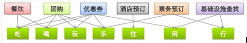李开复曾经说过，O2O将会改变中国，线上、线下一旦连起来，将形成巨大的爆发式力量。不过，对于企业来说，仍需谨慎。虽然目前O2O在中国看上去很美，但实际实施起来不是那么轻松如意。不时有打着光鲜O2O旗号的企业、网站难以为继，为什么？
从行业的角度来分析，由于消费者接受度、行业IT化水平、行业管理特点等原因，实际上O2O在不同行业的应用、成熟度是不一样的。有些行业，如酒店、餐饮，很早就实现了O2O，并有成功案例。而有些行业，如家政服务、教育培训、维修服务等，其O2O意识、水平还不是很高，客户的消费习惯也还在建立，对这些行业来说，O2O还是一个神话。
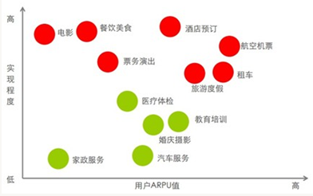在online端，中国互联网行业三大家TAB（Tencent、Alibaba、Baidu）都已在此领域布局了平台，不敢落人之后。如Tencent的微信、SOSO地图；阿里的高德地图、美团、淘宝本地生活等；百度推出的百度地图。
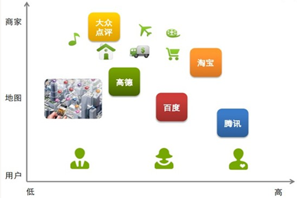那么，在offline这端，O2O的情况究竟如何？从目前O2O发展相对比较成熟的餐饮业、酒店业中几个case即可见一斑。
O2O之餐饮业
地图式O2O：在线导航+消费
近两年兴起的手机地图应用，逐步成为消费者必备app之一。基于地图进行的O2O，其模式主要是把信息显示在地图上，同时还可以接入团购、订座、上传照片、在线评价等功能，直接在地图上实现了从查找到下单、订座、点评的全流程。
例如，仙踪林、厨子印象等餐饮企业，与用户过亿的高德地图合作，通过优惠活动，线上、线下同时进行推广，使得在短短几天覆盖率达到了几十万的级别。其基本形式是：高德地图在其app开设了优惠活动专区，并在高德地图上进行标注，在具体地点的详情页实现了团购和订座功能，用户可以通过高德地图的web端和手机端在活动页面直接下单参与活动，还能直接电话给店面咨询，在用户参与活动后到商家用餐，结账时POS机自动辨识，完成消费。同时，商家也在线下通过水牌、海报、二维码信息等，来进一步推广此次活动。
全渠道O2O：社媒+电商平台
从最初的大众点评网到后来的微博、微信、团购、点餐网等，都是中小餐饮企业有效的online手段。
例如，“香草香草”云南原生态火锅通过大众点评网、微博、团购、订餐网等online的组合拳，抓住多渠道来获得了巨量的新客源，并影响用户消费决策。香草凭借自身出色的产品和过硬的服务，在大众点评网上开展了一系列激励用户评价的活动。点评网上积极口碑的推广，迅速为其打开了市场。同时，香草也利用团购带来人气，并通过哗啦啦等网上日常订餐来弥补团购的临时性促销而导致的预约集中、套餐固定等体验不足。而香草通过微博搜索，对于相关评价内容保持互动，遇到消费者抱怨，及时沟通并进行安抚。微博逐渐成为维护老客户的平台。
会员式O2O：电子会员卡
营销分为交易型营销和关系型营销，到了最高阶段，就是关系型营销。互联网的出现，无疑大大降低了建立CRM数据库、与客户互动的成本，所以微信电子会员卡的模式，无疑是O2O未来的方向之一。
例如，江边城外烤鱼店推出电子会员卡后，通过折扣、免费、消费送礼等多种模式，在半年内增加了9万新会员。据统计，凭借电子会员卡，每天每家门店到店会员平均有30桌，周末接近90桌。零成本的电子会员卡不光给江边城外带来了客流，还为其精细化营销奠定了基础。江边城外通过对电子会员性别、年龄等信息的分析后发现，会员中70%都是女性，这个数据使其为消费者提供更有针对性的产品。比如门店在做赠送活动时，会赠送甜品而不是啤酒，因为占比70%的女会员更喜欢甜品。
O2O之酒店业
互联网带给酒店业的是更为智慧的数字革命。通过online方式，酒店得到更多目标消费群有价值的数据，并利用这些信息打造出更能吸引用户的个性化产品。
旅游业是中国传统行业中最早与互联网融合的领域，online这端既有大名鼎鼎的携程、艺龙，也有后起之秀的芒果网、同程网、去哪儿、酷讯，竞争日益激烈。信息技术对传统产业的影响，在旅游这一领域显得尤为复杂和深入。
直销式O2O：官网+APP
酒店的直销模式就是线下的酒店企业，建立自己的官网作为电商平台，把自己的offline资源通过online进行销售，同时利用自己详实的客户消费信息，进行精准分析，进而交叉营销。
锦江国际集团的锦江电商于2012年正式上线，其三大产品“锦江旅行+”、“锦江礼享+”、“锦江e卡通”分别负责锦江国际集团下属酒店、旅游、汽车租赁等产业的展示与销售预订、会员服务和支付业务。锦江电商的会员交叉营销模式，正是基于先进的CRM系统和OBIEE（商业智能分析）技术。目前，锦江电商将这2000万客户中的800万转换成了会员。每个会员的历史消费数据都汇集到电商平台，并形成一份准确、详细的分析报表，并根据客户以前的消费情况判断出其偏好，再将匹配的信息推送给客户。
锦江电商的交叉营销取得了良好的效果。自上线以来，锦江电商的销售额每月增长超过100%，会员的交叉消费率达到了30%，这在行业内是一个了不起的数字。另外，除了建设官网，锦江集团还开发了自己的移动客户端（APP），在各种场景下为客户提供服务。
分销式O2O：B2C+C2C
除了建设官网外，酒店还会借助B2C性质的OTA平台（在线旅游代理）来推销自己的服务。目前B2C性质的OTA主要有两大类：以携程、艺龙为代表的传统OTA；以淘宝旅行、去哪儿、快捷酒店管家为代表的垂直搜索类应用。二者均提供机票、酒店、景区门票、火车票相关的查询及预订服务。
从高端的五星级酒店丽思卡尔顿、君悦、威斯汀、希尔顿等，到经济型酒店如家、汉庭、七天、桔子等，甚至路边小旅馆，都在两大类OTA中有所涉足，发布客房信息，吸引来自online的客户。在online与offline融合的过程中，还创造性地开发了很多种online独有的定价方式：惠选C2B定价、酒店夜销、反向定价等。丰富、灵活、接触到大量客户的online销售方式，给传统的酒店行业，带来了海量的商机。
而短租市场的兴起，则把酒店行业的C2C推向了高潮。目前很火热的短租网站或者APP，如小猪短租、蚂蚁短租等，都是很典型的C2C模式。
O2O的实现还有待全行业渗透
目前，除了酒店、餐饮、旅游等，其他的行业也都在尝试着O2O。比如家政、婚庆摄影等，但因其行业特性，交易需要在线下完成，导致了online工具更多地处于一个引流、提供信息的角色，这也是阻碍O2O在这些行业快速普及的原因。但毋庸置疑的是，这些不太成熟的O2O行业，一直没有停止O2O化的步伐。
所以，几乎所有的行业都在往O2O的路线发展。Online与Offline的结合，创造了许多新的消费方式、商业模式，为传统行业带来了新的春天。相信随着移动终端的快速普及，4G网络的建设铺开，在中国快速实现城市化的大环境下，O2O对于大部分行业，既不会是幻想，也不是梦想，而将是越来越常见的一种模式。
行业案例分析
传统行业
北京嘉乐会家政服务有限公司（注：北京第一家全力做网络营销的高端家政）
相对于餐饮、酒店等行业，家政的O2O还处在起步阶段。虽然近年来，不少互联网行业、服务行业的高端人才陆续进入家政行业里面，并带来了线上先进的运作模式，但是由于家政行业的特殊性，效果甚微，在其浅尝辄止后，迅速撤离。
在家政业，由于存在的雇佣矛盾，即雇主和保姆之间没有一个共同的价值观和判断，导致信息、价值观不对称，同时，保姆是非标产品（服务），不是在线上了解一下就可以，家政服务还需要在线下沟通完成，所以很多线上运作模式在家政行业就对接不了。
另外，家政公司有两种经纪人：一种是有高学历，能够跟雇主去对接的，拥有运用互联网的能力；另外一种就是本身是家政服务员出身，与保姆的沟通特别擅长，以四五十岁的大姐为主，但运用互联网的能力水平较低。目前，家政公司的管理人员以第二种为主，因为家政管理以协调好服务员为主，这也是阻碍家政O2O的一个要素。
在这样的背景下，最早做家政微博的企业嘉乐会从一开始就积极探索家政O2O的发展道路，旗下不同家庭服务品牌的微博群，比如阿姨来了，十月芬芳高端母婴服务、嘉乐会月嫂等，同时也开通了嘉乐会微信公众平台，通过微博、微信的转发、互动来发掘客户，进行售后的同步管理、售前的宣调等活动。除此之外，还有基于业务的“阿姨来了”网站，来完成在线点评、支付等功能。
嘉乐会践行O2O的理念在于减少雇主和保姆之间的沟通成本。线上不仅是保姆和经纪人的一个展示，一个品牌宣传，更是一个基于业务的管理工具，保姆可以在网上跟雇主、经纪人之间进行沟通，使得千家万户的繁琐的管理显得简洁，变得高效、准确。
万豪酒店西餐厅
目前，万豪酒店主要是通过网络第三方平台来发布团购、优惠信息，这些Online方式通过直观的图片，更方便用户了解产品的相关信息，在一定程度上增加酒店客源，丰富客源结构，促进了酒店市场的丰富程度。
国家厉行节俭政策的出台，使得高端餐饮普遍受到影响。通过Online方式，酒店首先式保证营业额的完成以及市场份额。因为业内都在做类似推广，落后于其他企业，可能会丢掉这样一块网络市场，目前，万豪酒店西餐厅从线上的引导客流消费占到总收入的50%。Online方式对酒店品牌、知名度也会有一定提高。与几年前高高在上的态度不同，如今五星级酒店通过线上酒店锁提供的服务、菜品的样式、酒店的风格的展示，来加强普通消费者的认知，吸引他们来酒店消费。另外，这些Online方式也带来一些后续的消费，对婚宴、会议、房间都会有帮助，会通过一个平台扩展开很多的渠道。
在酒店O2O的实践中，大多数是靠第三方平台，而不是公司自己来维护这个平台，所以后期的维护、网站的更新、消费者的信息查询等都会出现一些问题。同时，线上的一些优惠活动，会对线下造成一定的冲击和影响，成本方面就是一个很大的挑战。因为线上给予了消费者一个很大的折扣，所以如何在收入和成本之间找到一个平衡点很关键。中低端的餐饮可能能够较长时间地通过团购来获得新顾客，但对于五星级酒店，更多地是通过线上渠道让消费者理智地接受五星级的价格和品质，更多地获得客户黏性。
互联网行业：
高德地图
互联网以及移动互联网的发展改变了很多行业的上流客源的渠道。过去的消费可能是基于地面搜索以及口碑的传播，而现在消费者通过互联网的几大渠道或者媒介入口，更方便、更快捷、多个角度获得商家或者商品的综合信息，做出消费决定和判断。
地图凭借先天特别强的引流导航功能，成为一个强劲的入口。与web搜素引擎、地面搜索不同，地图搜索可以搜集后台的数据，掌握消费者行为，比如，我们了解哪家餐饮、哪家银行搜素的人比较多，甚至还可以知道每天在地图上搜索加油站的客户有多少，这在传统的web搜索引擎里很少看到，有一些特殊的分类在地图上就会特别明显。比如，我们从地图上可以清晰地看到万达广场这样一个地标性的建筑，它的TOP10的搜素品类，就会了解这个位置对于人流有什么样显著的吸引作用，并了解消费倾向。通过这些信息，我们可以为商家推送优质客户。
高德地图目前拥有过亿用户，合作商家有酒店、餐饮、电影院、体育店、美甲店、银行的ATM等行业，属于基于消费者的生活的传统线下企业。每个商家的活动发力点是不同的，这要看商家自己的定位。比如，有的是需要推菜品，有的是想提高销售额。大量的用户人群以及大量实体店的客户，使得我们可以举办多样化的场景活动，来满足企业客户的需要。同时，高德与DT（内容提供商），比如和拉手、美团、团800等，进行合作，每天都会产生大量订单。
未来O2O的发展，依赖于整个互联网、信息技术的发展以及对各个行业的渗透和影响。我们现在可以看到，即使一个路边小店也有自己的微博、微信，那么未来人人可以都是互联网，人人都可以是自媒体。目前，所有的地图搜素都在进行O2O的各种尝试，现在还不能给它一个完整的概念和定位。但随着智能手机的爆发，地图搜素将在O2O的实践中得到更大的发展。
| 互联网 |
乾康（上海）信息技术有限公司 > 互联网 > O2O如何颠覆传统行业 |
O2O如何颠覆传统行业
什么是真正的O2O？利用互联网的特质重构传统行业的供应链，才算真正的O2O。而做到这一点（重构）的企业，才算真正的O2O企业。
什么叫重构？就是将传统行业中的供应链节点上原本某个必须的点砍掉，或者颠倒前后某两个点的顺序，就称为重构。在互联网出现之前，传统产业大部分已经发展达数千年之久，要重构任何一点都是几乎不可能完成的任务，它们已经被优化得不能再优化了，大家比拼的无非是各人手头上现有的资源，然后看谁在每一点上的效率做到最高。
但是互联网的出现，导致对传统产业的重构成为了可能。
第一波的互联网大潮做到了最基本的表层重构：对信息的聚合与分发方式的重构。最明显的例子是门户网站、百度和微博微信们在信息层面上对传统媒体行业进行的重构。人们发现他们获取信息（信息聚合）的方式变了，过去一定要订报买报读报，包括各类期刊杂志等等，现在统统不需要了，PC或手机上就可以搞定；人们发现他们的传播信息（信息分发）的方式也变了，个人可以通过博客微博微信发出自己的声音，无需再投稿报纸杂志才能发表；门户网站和百度们抢走了大量原本属于纸媒电视媒体等传统媒体的内容资源和广告资源，同时双方的信息传播速度也不可同日而语。这一波的重构已经基本接近完成，大量传统媒体从业人员加入新媒体自媒体、大量的街边零售报刊亭的关停倒闭，以及亚马逊收购华盛顿邮报等等皆是明证。
而第二波的重构，也就是正在发生的，对各行各业的采购、生产制造和交付等环节的供应链的重构。大家可以看一下一个传统企业的全部商业经营活动，然后把它全部一一按顺序罗列出来。比如一家餐馆，它全部的经营活动包括：店面选址、店面装修、菜单设计、菜品创新、食材采购、接受和处理订单、烹饪和加工，以及厨师服务员招聘、服务流程标准化、中央厨房、分店和加盟、广告营销等等。这些活动里，哪些部分可以放到线上？哪些部分只能留在线下？利用互联网，把能放到线上的步骤尽量放到线上，把能省却的步骤省却，把某几个步骤前后交换顺序（时间顺序或逻辑顺序），这样就可以开始利用互联网的特质对传统行业的供应链进行重构了。
下面举三个具体例子：
1.当当：当当重构的是传统的新华书店模式的供应链。
举个例子，一本新书，首印5000册，从印厂出来以后，就分开发往各地的新华书店，有的城市有好几家新华书店，有的只有一家。怎么决定具体哪家新华书店拿到几本新书呢？根据过往销售业绩的预测。过去生意好的店多拿几本，生意差的店少拿几本。但就算如此，接下来仍然有两种情况可能发生：一. 某家新华书店销量非常好，迅速脱销，要从别的店调货，如果该城市有多家新华书店还好办，如果只此一家，就得从别的城市调过来。不管怎样，费时费力，增加成本。
另一种情况，这本新书在某家店大量滞销，只得调回仓库或者调往其他新华书店。同样的，费时费力，增加成本。这一块成本一般的消费者是很难意识到的。如果这本书卖到只剩一册，它静静躺在宁波的某家新华书店内，极有可能发生的情况是：宁波地区没有人想买它，宁波以外地区没有人能买到它。总之，传统新华书店模式的供应链无法解决上述配置效率低下带来的成本增加问题。但关键是，在过去，没有互联网前，没有人会觉得这一块成本是可以节省下来的。
反之，如果是当当，一家没有实体店面和管理人员的书店，没有了分批分册发往全国各地店面和分店之间相互调货的环节，这就节省了一大块成本。这时，如果当当网上同样的新书也卖到只剩一本，就没关系，全国各地只要有一个人还想买，就一定还能买到这本书。当当增加的无非是配送的成本，但总成本也已经远低于新华书店的总成本了。这就是它为什么价格比新华书店便宜这么多的关键所在。
所以大家可以看到，过去新华书店独霸全中国的书籍书场，扩张非常嚣张，营业员一般态度蛮横，反正你买书也只能来我新书书店，而且就得按书籍封底上的价格买。现在不行了，各种促销打折会员卡的活动，营业员态度也和蔼可亲起来，但还是挡不住颓势，开始各种减少楼层和店面，进行多元化尝试等等，靠着政府补贴，勉强维持生计。
当当其实就是一家互联网书店。
2.淘宝：淘宝重构的是传统零售业。
淘宝砍掉了传统零售想卖东西给别人必须先有实体店面这一环节，省下了近年来水涨船高的店面租金和人工成本。甚至你可以在淘宝上已经卖出名气后，再回过头来开一个实体店。这是前面讲的颠倒供应链节点顺序，这在过去是很难实现的。
淘宝扩张了传统零售的销售范围。传统零售的一家店只能卖货给周围几公里有限的顾客，它的生意来自于经过门口的自然人流和一定的老客户。你要是想卖给更多的人更多的商品，就要开更多的实体店面，考虑连锁店的问题，比如自营还是加盟。这是在供应链上增加了节点，但还不算重构。而在淘宝上天然就没有这些节点存在的必要，这些节点都被砍掉了。你的货可以卖给全国任何物流到达的地方，全国的人民也可以随时光顾你的网店。
淘宝扩大了传统零售的销售品类。过去在实体店面时代，一些冷门的商品，是不会有人专门开店来卖的；或者卖得不好的款式，也没有机会上架。因为如果要卖这些东西的话，肯定会入不敷出。但在淘宝上由于天然的销售范围就是全国，潜在客户数量呈几何级增长后，达成的销售量仍然足以使一家甚至好几家网店存活下来，而且都活得不错。比如之前一位网易编辑辞职后，专门在淘宝上卖印有草泥马LOGO的T恤。这个商品非常小众，但他生意火爆的程度已经远超某些繁华商业街上的服装店了。
淘宝其实就是一家互联网大卖场。
3.小米：小米重构的是传统手机制造的供应链，并且它是到目前为止我观察到的对传统行业重构程度最深的企业了。
在渠道环节，小米只走电商渠道，也就是只能在网上买到，而完全舍弃了过去传统手机销售的手机大卖场的渠道，把这些中间的层层代理环节都砍掉，省下一大块渠道铺货和销售的费用。但与此同时，销售范围没减少，产品可以直达三四五线城市。
在营销环节，小米舍弃任何传统的昂贵的展示性广告，只做新媒体自媒体等的社会化营销，并专注培育自己的的论坛。传统广告的模式粗放，而小米却可以直接和自己的粉丝互动，营销起来就精准得多。小米的营销预算这一项，据雷军自己说，是0。而华为，2012年的智能手机全球营销预算，是2亿美金。
在库存环节，小米类似于早些年戴尔的“零库存”概念。先有订单，才开始生产。这其实本质上就是颠倒了供应链节点的前后顺序，但在外界看来就是小米总是缺货，被指责过度“饥饿营销”。当然，的确有部分原因是小米的订单量超出预计，工厂的生产力不足导致。但有一点必须注意，饥饿营销（“先订单再生产”或“零库存”）其实是互联网时代才能完美驾驭的一种营销方法。因为只有在生产商能够直接接触到终端用户（end user）的体系里，双方的信息才足够对称，生产商才能快速知道某件商品的需求到底是多少。
如果是传统零售时代，玩饥饿营销，故意（非故意）缺货，终端（小卖部便利店等）再层层（一级供应商二级供应商和渠道商等等）反馈回生产厂家到底有多少消费者来要过货的话，这个链条太长了，有一个节点出现问题就容易全线崩溃，在用户中产生恶劣的影响，给竞争对手留下攻击的空间。小米所谓的放开销售（每周五抢到邀请码的就可以在下周二下单，但周二也需要再抢），其实就是让小米的工厂对需求量可以有一个准确的估计，下周二到底会有多少的订单，并以此进行调整。做到基本上每一部手机在被生产时，都已经有主了。这同时也避免了传统的手机大卖场铺货以后缺货或滞销（记得之前提到的新华书店的供应链模式吗？）的风险和成本。
在产品迭代环节，小米也做到了完全的互联网化。小米硬件和软件的更新迭代，不再只是依赖传统的自己人内部拍脑袋和向外部做问卷调查顾客回访的方式。通过论坛和各种社会化媒体，小米就可以直接和它的用户、包括用户和用户之间，展开对小米的不足和可能的改进的讨论。而对最资深的“米粉”，小米为他们成立“荣誉工程师组”，新产品的DEMO，先让这些用户进行体验，并给予反馈，而这些用户可能分布于全国各地都没关系。雷军所谓的小米手机卖的是参与感，其实就是通过互联网的方式发动群众一起来做手机，让用户尽量参与到了供应链（特别是产品设计）的每一个环节。这要放在过去，根本不可能实现。
小米手机就是一部互联网手机。
通过上面的三个例子，大家会发现，但凡你重构原先的行业成功了的话，你必然会颠覆之前的行业老大，对它取而代之，这正式是哈佛大学终身教授克里斯坦森（Clayton Christensen）的颠覆式创新（Disruptive Innovation）。每一波重构，都是对原先被重构行业的颠覆。
但是，重构本身也分重构程度的深浅，更深一层的重构又会颠覆之前浅一层的重构。
比如，京东开始卖书，就是对当当某种程度上的颠覆。京东的书籍供应链体系大致上和当当一样，唯一不同的是在最后一环，也就是把书最终交到消费者手上这个过程，京东用的是自己的物流。这时，当当原先面对新华书店时的那些优势都不在了。反而，配送服务的质量远逊京东。京东由3C产品起家，这类产品单价普遍千元甚至万元以上，值得京东自建物流以保证运送过程中货物的安然无恙。用这套高质量的配送体系送几本书简直是小菜一碟。反观当当，由于书的单价基本不高，它们一直是采取和第三方物流合作进行配送，导致交付体验极不稳定。京东重构了图书供应链的最后一环，又再颠覆了当当。表现出来就是当当股价持续走低，居然要跑去天猫上开店了。
同样的，淘宝和小米也都还不算“完全”重构了传统零售和手机行业的供应链，未来应该还会有做到更深层次重构的公司来颠覆他们，虽然我们现在很难想象出这样的公司到底会是什么样子。
没有重构，没有O2O
之前说过，真正的O2O企业必然是利用互联网的特质重构了传统行业的供应链。按照这个定义，很多所谓接地气的O2O案例，包括黄太吉煎饼和雕爷牛腩之类的，就不算O2O了，因为他们只是在整个供应链条里的营销这一点上借力互联网，而没有“重构”煎饼和牛腩最基本的生产制造等过程。
点评、优惠券和团购等也是一样，它们的本质都是付费的广告。它们相比之前门户和搜索引擎的单纯的展示广告更进了一步，即帮助各行各业的公司，尤其是服务业的公司，结合自己产品的特点在互联网上更好地做营销。商家的让利可以算是一种按效果付费的广告方式，而且效果是可以记录、跟踪和预测的。但它们的本质还是借力互联网做营销，并没有在任何程度上重构这些行业基本的商业经营活动。
这也就是为什么，餐饮O2O类公司，比如在线订座、点餐、结账、会员管理、营销等等，其实一直都在外围打转，从来就未曾真正深入过餐饮业。因为他们做的，只是把餐饮企业常规经营活动上的某个环节拿出来，想方设法用互联网化的手段去提高这一点的运营效率而已。但正如我之前说过的，像餐饮这种发展了千年之久的行业，各个环节其实本身就已经发展得足够完善了，如果没有任何供应链上的重构，现在的餐饮业老板们是不会把互联网真正当回事的。因为在没有互联网的过去，他们就能生存得足够好了。如果你能锦上添花，那自然好，但没有你也没关系。这就是现在餐饮O2O面临的窘境：没有一家能切中真正雪中送炭的痛点。传统互联网几大巨头都在虎视眈眈摩拳擦掌，但就是出不了一家能和餐饮这个万亿级的市场规模匹配得上的巨头公司。
也许很多人认为线上线下的各种各样的结合都可以算是O2O，不一定非要那么“深入”地重构才算。这里再给大家一个判断的标准：一个企业是否算O2O企业，就看如果把两个O分离，它是否还能保持原来的商业模式经营下去。比如美团，如果没有互联网它会怎么办？它大可以把某家电影院的优惠信息通过电话推销和邮购手册的方式告知全城的人。这正是当年戴尔在互联网还没全面流行前的推广手法。这样子的话相比利用互联网来推广这些信息，当然显得效率低下，成本也会大幅增加。
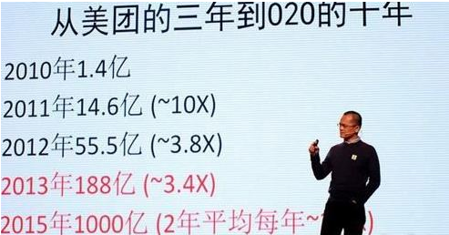但是美团最主要的商业模式：提供给用户大量商家的大折扣优惠信息，并让用户能拿着这些优惠信息去到店消费，是不会变的。这就类似KFC在多年前就已经自己通过街头传单和随报刊邮寄等方式，发送到店才能使用的那种要撕下来的小优惠券给消费者了，其背后的营销原理何其相似。但是当当淘宝小米等，没有了互联网这一端，它们就没法按照原来的方式重构传统产业的供应链了，它们只能被迫回到原先新华书店卖书、传统零售商卖货和传统手机商卖手机的办法上去了。
还有些人会觉得，O2O应该起码会涉及到一个线下去享受服务的消费过程.一个现实状况是，网上销售标准化实物类商品比较容易起规模。在你重构供应链之后，还能把销售范围快速铺开到全国，因为这些商品都能被快递到全国。而如果是需要线上下单，然后线下去享受服务的行业，基本局限在本地领域，一个城市一个情况，到现在也没有出现比较引人注目的重构服务业供应链成功的案例，所以我才只能举了当当淘宝小米的例子。但是标准化品类电商（包括淘宝京东一号店等等），已经达到了它们的最顶点。
很多人也意识到了，下一波的大机遇会发生在本地服务业。线下服务体验性质的行业，如果有供应链被重构成功的，一样适用这个概念，一样是O2O的案例。就比如餐饮，前文有提到，大家都在盯着这一块，但没一家能做成，因为他们正在做的无非都是利用互联网来“完善”现有的餐饮供应链的节点，而非“重构”。如果你是第一家真正重构某个服务行业的公司，那你基本上会有一个非常光明的前景。
另外，很多人提到O2O必须有闭环，有了闭环就能怎么怎么样。单纯为了闭环而闭环，没有意义。，如果闭环有助于重构供应链的，就要闭环，如果对重构没帮助，就丢掉这个概念吧。毕竟，传统行业已经在没有所谓的“闭环“的数千年里，一直生生不息，活得挺好。
最后，除了之前提到的两波重构：信息层面的重构和供应链层面的重构，未来应该还会有第三波重构，也就是个性化推荐达成的完美匹配。
| 互联网 |
乾康（上海）信息技术有限公司 > 互联网 > P2P5.0 网贷平台的中国式生长 |
P2P5.0 网贷平台的中国式生长
截至今日，首创于英国的P2P网贷进入中国已6年有余，随着国内互联网的崛起和民间金融的繁荣，P2P网贷行业得到爆发式发展，在模式上产生巨大异化且发展速度已经赶超欧美。
2007年，国内第一家P2P机构拍拍贷诞生于上海，到目前为止全国已有数百家P2P机构，规模也已达到近千亿元。如此多的P2P机构为中国的互联网金融发展贡献巨大，也使中国的P2P衍生出多种模式。未来P2P不仅仅是规模之争，利润之争，更是模式之争。孰优孰劣，欢迎大家拍砖！
1.0时代：纯线上无担保模式
2005年Zopa在英国产生以来，以美国为代表的欧美国家迅速掀起了跟风潮，Lending Club、Prosper更是拿到几轮风投，成交量、用户量十分可观。2007年6月份，上海拍拍贷正式上线，成为国内第一家P2P网贷公司，2012年9月，获得红杉资本千万美金级首轮风投。
拍拍贷完全照搬Zopa模式，运营至今坚持做纯信用网络借贷中介平台。在该平台，用户自行发布借款信息，自主选择项目出借资金，网站只负责制定交易规则和提供交易平台，不负责交易的成交以及贷后的资金管理，也不承担借款人违约带来的损失。
纯信用无担保模式，平台自身风险很小，互联网特性使其几乎不受地域限制，因此也很容易发展壮大。然而，基于目前国内个人征信体系并不健全的实况，借款人信用评级不科学，很难对其进行准确的风险定价，因此这类平台的风险控制能力显得较弱，纯靠大数据信息控制风险，前途光明但任重道远。
优势：平台运营成本低，自身风险较小；借贷更高效便捷；受地域局限小。
劣势：因缺乏健全的借款人信用体系难以对风险进行准确定价；逾期/坏账的追讨机制和惩戒机制不全，难以保障出借人资金安全。
2.0时代：纯线下模式
拍拍贷上线之后，先于拍拍贷一年成立的宜信也开始试水P2P网贷，拉开P2P2.0时代帷幕。
2006年，唐宁创立宜信财富。应该说，宜信业务本质上还是传统的民间借贷，对宜信而言，网络只是一种宣传渠道，旨在吸引出借人和借款人到公司洽谈业务，也帮助其拓宽融资来源。
在宜信，借款需求和投资都是打散组合的，通过资金和期限的交错配比，一边发放贷款获取债权，一边不断将金额与期限的错配对债权进行拆分转让，相当于一个小型银行。
相比拍拍贷纯信用线上模式，宜信在风险定价上更容易把控，平台收益及出借人资金安全上保障性稍强，然而，也正因其对资金期限及资金额度的错配拆分、债权转让，宜信饱受非法集资诟病。
，大型金融集团推出的互联网服务平台似乎显得更师出有名和顺理成章，2011年9月份，平安集团下的陆金所平台在上海上线，传统大集团金融机构布局互联网前景巨大。
优势：线下考核，风险更容易定价和可控。
劣势：非法吸收公众存款、非法集资的法律风险不好规避；发展地推人员，成本高，不利于平台扩张。
3.0时代：线上有担保模式
事实证明，拍拍贷的纯线上无担保模式很难在中国取得成功，国内很多P2P公司开始积极寻求转型。2009年深圳红岭创投首提“本金保障”制度，对借款人逾期/坏账提供垫付，行业步入P2P3.0时代。
这类公司不再是单纯的中介而成为参与交易的第三方，一方面对出借人的资金提供担保，另一方面也重视贷后资金的管理，同时扮演了担保人、联合追款人的复合中介角色。网站发布的借款项目也大多由平台自身开发，因此对平台风控及业务等提出了较高要求。本金保障的承诺要求平台承担担保责任也无形中增加了公司风险控制的压力，实际上单靠收取中介费的盈利很难覆盖借款人坏账。
发展到现在，红岭创投已经越来越偏离传统P2P平台模式而转战线下中小企业VC股权投资，红岭创投的创新之路还能走多远，尚未可知。
优势：本金保障制度利于吸引出借端用户，自己开发项目方便风险定价。
劣势：项目自产对风控及业务团队要求特别高，平台兜底风险较大。
4.0时代：线上线下相结合模式
O2O是P2P4.0时代的代名词，也是目前国内大多数平台的主流模式。这种模式又分两种情况：其一以北京人人贷公司为例，资金入口线上开发，线下寻找借款人对接，线上结合线下完成撮合流程；其二以阿里小贷为代表，京东、苏宁紧跟其后的电商金融，这类公司掌握了大量小微企业的交易、信用数据并能依此合理定价，是大数据下的P2P。
6年的中国化实践表明，纯互联网模式还不适应当下国情，而线下业务相对更为直接、灵活、迅速，实地调查取信更有利于平台把控风险，逾期后的催款也更为便捷、快速、有效。
2010年5月，人人贷于北京上线，成立之初也基本沿袭拍拍贷模式，发展到现在其O2O业务模式基本稳定。说起人人贷的O2O模式不得不提及它的重要合作伙伴“北京友众信业商务顾问有限公司”，作为中国最早的一批基于互联网的P2P信用借贷服务平台，人人贷的理财用户群为其线下放款提供了充足的资金来源，而友信则负责了大部分的线下借款项目对接。
除了同样面临红岭创投那样的风控及业务上的压力，人人贷O2O模式还有一个重要问题需要解决：目前，人人贷网点已经覆盖全国多个省市，标准化的通用风控体系难以准确评定各地实际风险。
与此类似的，阿里、京东、苏宁等纯粹基于互联网大数据的电商小贷虽然在处理效率上大大提升，但也同样会面临线下实际的难题，并且，在国内社会化信息还未完善的大背景下，“阿里们”似乎也进入骑虎难下的尴尬境地……
优势：项目、资金都由平台自身挖掘，风险更可控。
劣势：对风控及业务人员素质要求特别高；风险积聚，容易引发平台风险。
5.0时代：担保机构合作交易模式
P2P网贷模式从欧美来到中国，因为个人征信体系不完善等诸多原因，明显水土不服。国内P2P公司也在不断尝试中国化模式，不论是纯线上线下，还是线上线下结合，都有较大弊端，尤其是行业的高速发展，积聚的风险十分恐怖。如何转嫁风险？深圳市人人聚财在这方面进行了有益探索，其开创的“担保机构合作交易模式”正在引领P2P行业步入5.0时代。
人人聚财通过开展与小贷公司、担保机构的合作，由他们提供项目和担保，人人聚财给予一定比例的渠道费和担保费，平台逐步剥离自身发掘考核项目的工作，这既节省了风控和业务成本、降低了平台风险，又搭建起了借款人、风险控制机构、人人聚财、理财人等多方共赢的平台。
当前国内民间金融市场鱼龙混杂、数量繁多、利息高企，小贷公司及担保机构生存压力剧增，人人聚财开创的这种模式整合了民间金融资本，对利率市场化、民间金融阳光化以及降低小微借贷成本方面都有极大的促进作用。
相应的，人人聚财平台也面临对合作伙伴的筛选难题，与第三方机构的合作一定程度上削弱了平台盈利能力。P2P5.0是否会为“普惠金融”做出贡献，还有待观察。
优势：对外合作转嫁了平台风险，投资人资金安全更有保障；模式简易、合作双方权责清晰，更易扩张。
劣势：对合作机构的甄选能力有较高要求；平台指收取渠道费和资金管理费用，结束暴利时代。
总体而言，国内P2P本质上还未脱离民间借贷本质，鉴于国内个人征信体系和借贷逾期惩罚机制不健全、社会化信息程度不高等现实束缚，完全照搬国外P2P模式并不可行，国内P2P行业百家争鸣现状暂时还不会改变。
| 互联网 |
乾康（上海）信息技术有限公司 > 互联网 > 传统金融互联网化 |
传统金融互联网化
当传统的金融业务与新兴的互联网技术相结合，会产生什么样的化学反应？
回答这个问题最好用数据说话：2011年，中国网上银行市场全年交易额达到780.94万亿元；截至2011年底，网银注册用户数更是达到4.34亿。
4.34亿的注册用户相当于日本总人口的3.4倍，也是美国总人口的1.4倍；780.94万亿元的规模则相当于中国2011年47万亿元GDP的16.5倍。毫无疑问，这是一个巨大的市场。
网上银行很好地解释了金融与互联网结合的威力——国有大行电子银行对柜面的替代率均超过了50%，极大缓解了银行柜台业务的压力。然而，网银仅仅是金融互联网化的一个开始，金融与互联网二者的深度融合，还远未到画上句号的时候。
“以互联网为代表的现代信息科技，特别是移动支付、云计算、社交网络和搜索引擎等，将对人类金融模式产生根本影响。”中投公司副总经理谢平曾撰文预判，20年后，可能形成一个既不同于商业银行间接融资，也不同于资本市场直接融资的第三种金融运行机制，可称之为“互联网直接融资市场”或“互联网金融模式”。
而目前的情况是，互联网企业、金融机构从各自优势领域出发，从两头切入：第三方支付企业、P2P贷款公司利用互联网平台介入金融服务业；银行为代表的金融业，则利用互联网技术，推出网上银行、电子银行乃至电子商务平台，掀起渠道的电子化革命。
支付冲击波
6月28日，央行公布了95张新的第三方支付牌照。在短短的13个月内，央行已经连续四次下发支付牌照，目前总共有196家企业获得了不同类型的支付许可证。
具体来看，央行颁发的牌照涵盖了货币汇兑、互联网支付、移动电话支付、固定电话支付、数字电视支付、预付卡发行与受理和银行卡收单等七大业务类型。
七大业务中，互联网支付无疑是正统的第三方支付的发家之地。根据易观智库的调查，2011年中国第三方互联网支付市场交易额规模达到2.16万亿元人民币，较2010年增长99%。
“规模的扩大是支付公司与银行共同做大蛋糕的结果，双方都是受益者。”一位支付公司人士称，支付公司起源于互联网，尽管其创新能力强，但在支付链条中，银行依然处于强势地位，支付公司在业务上离不开银行。
从现实情况看，支付公司对于银行的依赖正在降低，最明显的表现就在快捷支付领域。
2010年底以来，多数支付公司都推出各自的快捷支付产品。通过快捷支付，用户无须开通网银，可以直接输入卡面信息快速地完成支付，换句话说，整个支付链条绕开了商业银行的网银。
商业银行对此可谓喜忧参半。
所谓喜，快捷支付提高了支付成功率。这对于银行而言，用户通过信用卡进行支付，也相应地增大了信用卡的消费金额，信用卡业务得以扩大。
所谓忧，主要是针对银行电子银行部而言，快捷支付绕开电子银行渠道，在这一支付链条中，电子银行被边缘化了。换言之，快捷支付的出现，冲击了商业银行电子银行端。
“总的来看，银行其实并不吃亏。”上述支付公司人士称，电子银行只是一个接口，银行要卖的是自己的产品。只要产品卖出去，利润赚到了，是采取第三方支付的渠道，还是采取本行自己的端口并没有差别。
P2P的威胁
如果说，类似于互联网支付、移动电话支付等业务，银行与支付企业之间还能达成某种程度的双赢格局的话，在收单业务方面，双方则是真刀真枪地硬碰硬。
根据现有行业惯例，银行卡收单业务的主要收入来源为手续费收入。根据行业不同，费率分别为0.5%至4%不等。手续费分成一般遵循7∶2∶1的比例：7归发卡行所有，2由收单方所有，1则为银联所有。
在支付企业进入之前，收单业务市场上，主要为银联商务和各家商业银行占据。收单业务收入是银行重要的中间业务收入之一，甚至很多银行的卡中心都设立了收单业务部室。
但第三方支付企业进入这个市场之后，多家支付公司都将收单业务视为战略重点之一，由此，鲶鱼效应开始日渐显现。
“第三方支付企业的兴起，是金融互联网化的一个最佳注脚。”一位银行人士称，互联网已经深刻地改变了这个社会，与十年前相比，网名数量以及网民花在互联网上的时间都有了天翻地覆的变化。
互联网将支付企业带入金融领域，而在更核心的融资领域，也已出现了互联网企业的身影。
谢平撰文称，互联网金融模式下资源配置的特点是：资金供需信息直接在网上发布并匹配，供需双方直接联系和匹配，不需经银行、券商或交易所等中介。一个典型的例子是人人贷（peer-to-peerlender）。
根据谢平所举的案例，2006年成立的美国Prosper公司有125万会员，促成了3.07亿美元的会员间贷款。2007年成立的美国“LendingClub”公司，以Facebook为平台做会员贷款业务，到2011年已贷款5.9亿美元，利息收入5100万元。
业务电脑化?
谢平认为，在供需信息几乎完全对称、交易成本极低的条件下，互联网金融模式形成了“充分交易可能性集合”，诸如中小企业融资、民间借贷、个人投资渠道等问题变得容易解决。
以这个角度来观察，随着金融互联网化的深入推进，商业银行面临的挑战可谓日益增多。
“第三方支付公司在互联网支付方面确实领先银行，但并不意味着银行只是被动地在应对互联网时代的到来。”一位国有大行人士称，银行拥有庞大的资源，也已经看清了科技给金融业务带来的翻天覆地的变化。尽管船大难调头，但它确实在努力。
如果从产品层面考量，银行搭上互联网的便车，主要集中在网上银行和手机银行领域。
“几乎大一点的银行在总行组织架构下都会成立电子银行部门。”一位股份制银行电子银行部人士称，四大行总行还成立了科技部、软件开发中心等一级部。这些部门员工数动辄数千，几乎相当于总行其他部门人数的总和。“至于说资金，那更是数以十亿计地投入。银行对科技的重视，由此可见一斑。”
这种大规模的投入，也取得了一定回报。这方面，电子银行的投入产出效果最为明显。
以工行为例，工行的个人客户中有近50%使用个人网上银行，对公客户有近70%使用企业网上银行，工行还拥有9万多台ATM等自助设备、60万台POS机和1.4万家自助银行，通过这些电子化渠道每年办理的业务量达300多亿笔，交易额超过250万亿元，相当于近两万家物理网点的服务量。
“但对于互联网的理解，银行不能仅仅停留在网点替代上。”业内人士称，在当前银行业中，有相当部分人士仅将互联网视作技术、工具，银行的核心竞争力依然来自银行业务本身。这对互联网的理解，容易陷入只重技术、不重转型的怪圈。
“银行确实财大气粗，但对互联网的理解远没有我们深刻。”一位支付公司人士称，体内的互联网基因，正是支付公司的竞争力，这决定了其在理念和技术上领先银行。
以支付宝为例，该公司在其组织架构中，专门设立了用户体验部。在人员、机构庞杂的银行体系内部，要成立一个类似的部门简直难以想象。
互联网化的业务将银行对终端客户的影响直接延伸到了客户的面前，现在是客户主动寻找适合自己终端的时代，也对银行业提出了更大的挑战。
双头驱动融合
从宏观层面看，金融与互联网的融合正呈现互联网企业、商业银行两头逐渐靠拢的态势。
在商业银行端，银行业总资产已超过120万亿元，其能调动的资源之大，可想而知。倚仗着强大的资金优势，除了之前的网银、手机银行之外，商业银行介入互联网日深。
6月下旬，建行同时上线了两大电子商务平台。其中“善融商务个人商城”定位为B2B2C平台，面向个人消费者；“善融商务企业商城”定位为独立B2B平台，面向企业用户。
“在此之前，电子商务一直是互联网公司的势力范围。”一位互联网人士称，虽然搞不清建行建立电子商务平台的战略意图，但这至少是银行积极介入互联网的一种尝试。
与此同时，在互联网公司端，类似于互联网支付、P2P贷款等创新更加层出不穷。
今年4月，第三方支付企业——快钱宣布进入B2B领域，将为企业提供专业高效的流动资金管理解决方案视为今后战略重点。
“通俗来讲，我们想做的事情就是多快好省地帮企业赚钱。”快钱首席执行官关国光解释称，即加快企业的资金流转效率，能够真正做到一元钱当两元钱花。
依靠与银行的合作，快钱不但解决了企业的支付需求，更是利用银行资金，解决了企业的资金需求。
此外，快钱还与P2P贷款公司——畅贷网签署了合作协议。所有用户在畅贷网上充值的资金，都会进入其本人在“快钱”等第三方支付平台专属于畅贷网应用的实名制个人账户，在此账户中的资金动用，必须经过用户本人在网站上的操作确认及用户本人与网站绑定的实名制手机短信回复确认。
换句话说，在双方的合作领域，快钱在某种程度上起到了资金监管的作用。
“理论上讲，第三方支付公司与P2P贷款公司相结合，还可以更进一步。”分析人士表示，支付公司解决企业结算服务，贷款公司解决融资服务，在整个合作链条中，甚至可以将商业银行排除在外。
如果支付公司与P2P规模足够大，且双方合作足够深入的话，这对于商业银行而言将是致命的。但需要指出的是，从目前来看，这种趋势尚未出现。
至于未来态势如何，未来谁能做到理解客户需求、完善安全机制，谁就是赢家，而这个赢家不一定是银行，可能是第三方支付，也可能是其他组织。
| 互联网 |
乾康（上海）信息技术有限公司 > 互联网 > 海内外“互联网金融”模式大PK |
海内外“互联网金融”模式大PK
事情一旦到了中国，就有那么点意思。
Twitter在美国帮助奥巴马赢得了总统选举，微博在中国则俨然成了言论的古希腊广场，尽管被阉割得物是人非。亚马逊的贝索斯一门心思做物流，中国的电商早已经迫不及待进入金融行业了。互联网金融在中国的火热程度绝对让人吃惊，模式更是层出不穷，一方未唱罢，一方已登场。支付宝的余额宝、p2p、阿里和苏宁小贷，第三方支付(易宝支付、快钱等)供应链融资，随手拎一种模式都可以给到外界“极为诱惑”的商业前景。
尽管中国的商业经营讲究“中国特色”，中国互联网的商业模式，却一直没有能打破海外模式汉化版的惯例。那现在这些热门的互联网金融模式，他们的海外版是谁?现在的境况又如何呢?
1、 余额宝汉化版：余额宝
海外版：Paypal的货币市场基金，现已关闭
Paypal公司成立于1998年，并于次年就设立了账户余额的货币市场基金，基金通过PayPal网站向在线投资者开放，前提是投资者须成为PayPal用户。初始及追加投资的最小额均为0.01美元，最高账户余额为10万美元。该货币基金在2000年曾创下5.56%的年收益率. 2002年美国利率大幅下降后，Paypal为了留住客户，主动放弃了大部分管理费用来维持收益率。2011年6月份，PayPal突然发布声明称，其管理的货币市场基金将于2011年7月29日关闭，行业人士分析，由于该货币基金收益率难以维持，Paypal不能继续赔本赚吆喝。
从Paypal货币基金成长过程来看，赚钱并不是Paypal的主要目的，货币基金本来是比较保守的投资产品，Paypal页一度放弃管理费用和进行补贴来维持该货币基金，Paypal此举是为了增强用户对Paypal帐户的使用粘性。paypal货币市场基金长达10年的风险管理经验也值得国内的“余额宝”们学习，主要是投资高质量证券、限制将该基金过于投资于某个发行者发行的证券和到期日规定，到期日规定要求所投资的以美元加权的证券投资组合到期时间不超过90天，投资的单一证券到期时间不超过397天。
市场一直揣测，随着利率市场环境变好， PayPal有可能重开货币市场基金服务。
2、 p2p汉化版：人人贷、宜信、陆金所
海外版：Lending Club,美国p2p领跑者
Lending Club成立于2006年，目前已经获得6轮融资，最新一轮投资方是谷歌，融资估值是15.5亿美元，Lending Club 有非常多的知名投资机构和个人。KPCB、摩根斯坦利前 CEO John Mack、前美国财政部长Larry Summers、有“互联网女皇”之称的 KPCB 合伙人 Mary Meeker等。
Lending club通过网络平台接受借款客户的借款请求，并在得到用户授权后从Experian、Trans Union和Equifax三大征信局获取用户的信用分数，将高于某个分数线的借款人的借款请求放置于平台上进行筹资。截止到2013年3月底，Lending Club的贷款者用户，平均FICO信用积分为706，他们负债收入比(除房屋贷款之外)为16%，人均14年以上的信用记录，个人人均年收入为70491美元，其中12855美元使用来进行信用支出和还款的。
Lending Club的利润主要来自对借款人收取的手续费以及对投资人收取的管理手续费，前者会因为贷款者个人信用条件和贷款额度等因素的不同而有所变化，一般情况下是贷款总额的1.1-5%;后者则是统一收取1%的投资者手续管理费。
2013年6月，Lending Club已经达成20亿美元的贷款。
3、 供应链融资汉化版：阿里小贷、易宝支付供应链融资
海外版：亚马逊、Paypal 、Kabbage，刚刚起步
亚马逊在2012年才推出基于亚马逊平台的供应链融资项目Amazon Lending, 由亚马逊旗下资本服务公司(Amazon Capital Services)处理贷款业务，Paypal也于今年4月发布消息，称在英国测试推出针对ebay等平台商家的融资服务。而这两家的共同竞争对手则是跨平台的在线商家融资服务的创业公司Kabbage。Kabbage通过向获贷款的商家收取费用来创收，具体费用视贷款期限(最长6个月)和偿还风险而定，费率从2%到7%不等。Kabbage目前支持来自eBay、亚马逊、雅虎、Etsy、Shopify、Magento等平台的网上商家，同亚马逊，Paypal不同的是，Kabbage的商家信用数据并不单纯来源于交易平台，而是企业 Facebook 上的客户互动数据，地理信息分享数据，物流数据，或者是通过 eBay，Amazon 或者 Esty 的转化数据。
Kabbage目前已经获得累计5600万美元的融资。
2012 年，Kabbage约借出 7000 万美元的贷款。
事实上，由于中国金融市场的不充分竞争、监管政策同美国的差异、信用机制的严重缺失，很多美国模式在中国都进行了大变样，有些是华丽转身，比如余额宝，有些则存在严重的风险隐患，以p2p市场来说，由于进入门槛低，模式相对容易复制，目前国内已有2000多家p2p公司，坏账率和倒闭的负面新闻不绝于耳。
互联网改造传统金融的趋势不可逆转，而中国的制度红利的确给了市场更大的想象空间，开创性的、成熟的互联网金融模式，能不能在互联网金融这次大浪中，淘沙而现，可以拭目以待。
互联金融公众号
长期速递互联网，金融，企业服务和创业领域的各种精选原创及干货文章和聚焦领域融资信息。只会分享自己最干的内容。欢迎关注，多多指教。
| 互联网 |
乾康（上海）信息技术有限公司 > 互联网 > 互联网金融 |
互联网金融
近一段时间来，媒体对“余额宝”及阿里金融保持着持续的关注热度。引起人们如此关注的原因，并非只因这类金融服务或产品在创新性上多么领先，类似的金融产品已经是传统银行业的成熟业务，引起热议的根本原因主要是一家没有金融牌照的企业，却能够频繁地组合推出一些金融工具、金融产品。那么，除了支付宝以外，其他的互联网企业是否也可以做类似的行为扩展？互联网企业在金融业务方面拓展的边界在哪里？
概括而言，传统金融服务具有两个边界，即客户需求边界和监管边界。当前经济金融环境正处在互联网经济和传统金融业相互渗透的交叉点上，由此带来了对一些金融行为属性判断的模糊，相应的监管规则也较模糊。客观来看，这种模糊化并非人们刻意所为，更不是监管机构不去监管或放松监管，而是当前阶段这种互联网行为与金融行为的交织本身，很难简单判定其属性，这也正是当前互联网金融的特有属性之一。
要想理解和接受这种模糊性，需要我们暂时搁下互联网金融这个热门话题，先去思索一个关于新技术发展的命题：谁是主干，谁是枝叶？
从枝叶到主干
自从第一次工业革命以来，一些重大技术从出现到成熟，都结构性地改变了人类的生活，比如电、蒸汽机、火车、汽车、飞机。它们在出现之初只是整个社会生活的小枝叶，配合着人类既定生活而变化、发展。但当它成熟到一定程度，却会由枝叶演变为主干，从配合地位转变到支配地位，逐步引领各种市场行为都随之改变、调整、演进。
从公认的第一台电子数字计算机——1946年面世的“ENIAC”的出现，到公认的最早互联网雏形——1969年，美国“阿帕网”的出现，直至今天，计算机和互联网已经深深地改变了我们的生活，但许多人仍然将其视为枝叶。在传统金融从业者的意识中，“计算机、互联网只是个工具，它们服务于金融业”这样的认识普遍存在。但新技术的深入将会逐步发展到一个临界点。突破这个临界点后，它就不再是个可有可无的辅助的工具，而是成为人类生产生活行为的载体，成为“生活状态本身”。无疑，当前互联网已经发展成为信息时代的载体、信息时代的主脉，人们的日常生活、生产行为、各类资讯的获取、各类信息的交流、甚至各种社会舆论的传播，都在围绕互联网展开。互联网本身即是一种生活状态。这种实质性的主干演变，使得其他社会行为都需要围绕其做出改变。
从我国金融业的情况看，将互联网看作枝叶、辅助工具的金融互联网已经搞了差不多15、16年。从1997、1998年起，银行业就开始对金融互联网进行规划并逐步实现，推出了如网上银行服务等一系列相关新业务。但到今天，以金融为主干、以互联网为枝叶的“金融互联网”继续演绎的边际效益已经明显下降，必然逐渐向“互联网金融”去转化，这种转化的本质是以互联网为主干、而以金融为枝叶。
历史在不断地证明，如果不能适应这一转化将会被社会所淘汰。比如在电报技术出现之前，“山西票号”是清朝金融业的代表，其当时采取的信汇制度非常先进——手写密压，一撕两半，兑时核对，无误付款。从内部风控、激励制度来说，山西票号的现代化程度甚至远远超过现在某些银行。但由于其对现代技术不够敏感，甚至排斥，导致其没有把握住电汇的进步浪潮，仍然固守信汇、镖局这一套传统金融流程，既不能适应民国初年动荡的社会现实，也不能与运用新技术的新型金融机构相抗衡。因此，从清末到民国的二三十年间，一方面是山西票号的迅速消亡，另一方面是运用电报等新技术的诸如老中国银行、老交通银行、京沪两地三个证券交易所等新型金融机构的蓬勃兴起。新旧交替，令人唏嘘。新技术的发展和运用，对业态的巨大影响力可见一斑。
螺旋式上升的业态发展
当然，无论如何演绎，人类的基本金融行为、金融需求不会消失，有人愿意出钱，有人愿意借钱，这种基本的金融往来形态将继续存在。再者需要看到，互联网金融所必然带来的各类“自金融”的兴起，也将同样面临巨大的社会交易成本，因此基于互联网经济的金融中介机构和金融中介行为也将继续存在。
以此为前提，才能更客观地把握住当前互联网金融的业态变化。打比方说，最早的金融业态是直接融资，以物易物，供需之间直接进行交易。后因这种行为交易成本的增高，逐渐产生了金融机构、银行，即间接金融。随着发展，间接金融也逐渐开始不能完全满足社会需要，又产生了以金融市场为核心的直接金融，VC、PE等都是直接金融的前沿，它的退出是围绕交易所来展开的。再往下就是互联网金融。
互联网金融起到两个替代作用，一是可以替代交易所，“众筹模式”是最典型的替代交易所行为，它改变了融资的整个规则、行为，对资本市场的冲击将会非常明显；另外一个就是替代间接融资机构，最为典型的就是P2P贷款，是对传统商业银行的替代。在互联网世界中，通过更快速有效的信息获取，互联网金融业态从直接融资发展到间接融资，如今又回到了以互联网为载体的直接融资的轨迹上，呈现出螺旋式上升的发展态势。
因此从这个角度看，金融行为没有消失，但状态发生了很大的变化，意味着整个金融业态将产生结构性改变。这种改变的客观推动力是互联网经济的成熟和逐步居于主干地位，外界的“搅局者”只是这种客观推动力的外在表现。
然而，互联网金融再怎么发展，仍然需要信息的识别、风险的识别、信用的评级等予以辅助，仅仅依靠个体之间在互联网上自发克服信息不对称性仍是很困难、甚至是混乱的。即使是“自金融”也同样如此。所以金融中介承载的信息加工、风险加工、信用评级等职能不会消失，但其存在状态会根据新的环境而发生重大改变。过去这类行为大多数在银行内部完成，针对内部自身客户来行使中介行为。但是在互联网金融时代，服务的范围与边界均发生了变化，客户与中介之间可能互不相识，信息可能是偶发、突发的等等。同时，如果说传统金融业更偏重的是财务信息，那么，在未来在金融中介行为中，可能将集成更广泛的非财务信息、社会信息，信息的时间和空间跨度都将极大延伸，即所谓的大数据。当各类行使金融中介行为的机构都跳出自身的固有结构、通过大数据的信息共享来应对各类全新的和不断变化中的需求、来换取生存与发展的空间时，金融中介服务的范围和边界也将几何级扩大。
理性对待“监管溢价”
现在对于全社会来说，最大挑战就是如何认识“监管公平”或“监管溢价”的问题。当前互联网出现了很多带有金融属性的机构，其行为超出了针对现有金融机构的监管规则和范围，获取了“监管溢价”。由于金融机构，银行、证券公司、保险公司的营运都必须与资本金挂钩，所有业务均须折算成风险资产，风险资产与资本金关联，监管机构通过对资本的控制来约束金融机构的行为结构和规模，从而达到监管目的。在这套规则里，金融机构是要付出很高的资本成本的。假如这套规则约束了银行而没有约束互联网金融机构，也就意味着，互联网金融机构无需付出高昂的资本成本，其所获取的利润中很大一部分属于“监管溢价”。
导致这种局面的根本原因仍是上面所阐述的一点：互联网突破了临界点，从枝叶长成了主干，突破了临界点的互联网金融，就超出了当下针对传统金融机构的监管规则和范围。而现有以资本为核心的监管规则，是经过了二十余年的发展形成的（以巴塞尔协议Ⅰ的实施算起），一方面其能否适用于互联网金融？另一方面如需重建要再花多长时间？都是当下还无法即刻回答的课题。因此，“监管溢价”的出现就成为一种必然。
当然，还有一种观点是：在规则未明确之前，应限制发展互联网金融业务。这种观点在互联网还是枝叶地位时还是成立的（事实上我们也是这样过来的），但在互联网已经成为主干以后，这种观点则已经不具备现实意义。
打个比方。上世纪90年代一些银行尝试推出的预付费卡、储值卡业务，后来因为某些外部性原因被叫停，直至今日银行业也被明令禁止发行，但这并没有阻挡储值卡的发展。它在银行系统外由第三方推动着蓬勃发展，甚至后来还获取了合法的第三方支付牌照。金融业务发展的根本动力还是社会需求，社会需求产生了产品生存空间，如果传统银行业没有提供这种服务时，它自然会在银行体系外野蛮生长出来。当大部分人日常工作生活中的购物、信息获取、社会关系交往等越来越依赖互联网络时，将金融业务互联网化就成为了经济发展的必然，此时，监管规则的有无都已经难以阻挡。
可以看到，这仍是“谁是主干、谁是枝叶”的问题。当临界点突破以后，金融行为转移到互联网上其实是一种必然，监管规则只能起到疏导而非拦阻的作用。而在监管规则到位之前，互联网金融机构获得的“监管溢价”，也就成为“必然性下的必然”。
寻找监管与创新的平衡点
但金融行为毕竟是高风险行为，互联网金融同样如此，在金融产品的便利性和风险性之间能否找到平衡点，完全取决于对客户风险承受度的认知。近几年来，传统银行业在理财业务上已经慢慢找到了这个平衡点，与2006年时理财产品的组合相比，在产品风险度和服务客户的互动性上，已经发生了很大变化。互联网金融必然也会经历这个过程，如何把握客户对不同种类网络金融产品的风险偏好和承受能力，只有不断的实践才会告诉我们答案。
如同上世纪80年代、90年代野蛮生长的城市信用社一样，互联网金融企业也一定会经历各种风险的挑战与波折。其时，改革开放后经济活动日益活跃，仅有的几家银行无法满足当时的社会金融需求，城市信用社应运而生。然而在满足那个时代金融服务需求的同时，它也带来了高风险，不论对其自身经营而言，还是对国家相关部门的监管，都提出了新的挑战。
互联网金融风险的认识与防范，同样需要类似的洗礼来逐渐厘清。互联网企业的内部约束、监管机构的外部约束，双方都有一个逐步到位的过程。最近半年来，陆续有些P2P融资网站曝出一些问题，这是正常的。尤其是高风险的信贷类金融行为由一些缺乏深厚金融阅历的人员去进行操作，必然会出现各种问题。从这点上说，与当初的城市信用社非常相像。但是从历史趋势来看，大波折、大洗礼并没有阻滞当初城市信用社的发展，有相当多演变成了城市商业银行，在我们的金融生活中发挥着重要的金融服务职能。
毋庸置疑，我国的金融监管能力非常强大。但是不是需要立即进行监管，管到什么程度，是一个值得探讨的问题。从大趋势看，我国正处在一个金融监管逐步放松的历史进程上，经济对金融服务的需求旺盛，客观上要求监管与创新之间找到平衡点。尤其在金融行业越来越成为社会经济的核心、助推器甚至加速器的时候，把握平衡点的艺术就显得非常重要。阻拦风险，只能将风险异化和“视野外”酝酿；疏导风险，才能将风险引导到可控的轨道上，驾驭与化解。
金融改革的方向是促进直接融资的发展
此外，对于互联网金融，还应该放在我国经济及金融大的背景下来看待。不久前中国人民银行披露，到今年3月末，中国人民币广义货币（M2）余额已达103.61万亿元，首次突破百万亿元大关。这再次加重了社会对货币总量是否超发的广泛质疑和争论。如何解决货币总量的问题，其中一个大的政策方向，就是致力于使直接融资真正替代间接融资。只有做到这一点，新增货币量才不会继续增加；并且随着老贷款逐步归还，货币总量才会稳步回归。
从这个角度看，所有能够促进直接融资发展的手段及方法，都应作为金融改革发展的方向，包括资本市场业务、理财业务，当然也包括互联网金融。互联网金融是一个非常典型的直接融资业务领域，尤其适用于中小企业。在这个大背景下我们或许会更加相信，互联网金融符合国情和时代的需要。（完）
| 互联网 |
乾康（上海）信息技术有限公司 > 互联网 > 互联网金融高端论坛会议纪要 |
互联网金融高端论坛会议纪要
海通非银团队11日组织了互联网金融高端论坛，特邀东方财富副董事长陆总、人人贷副总裁顾总，以及中国平安陆金所总经理助理黄总，为投资者进行了精彩的演讲，并在会后与投资者积极交流，以下为调研纪要：
东方财富：成功的关键是以用户为主，未来将发展为一站式金融平台。
1）公司认为：互联网金融的生存要点是要以用户为主；同时公司发展也是按照这个思路来进行的。东方财富网选择2005年这一历史拐点正式上线，此时恰逢资本市场进入空前牛市，财经网站真正热门起来，捕捉了行业的发展机遇，并逐步培养起了庞大的用户基础。
2）公司时刻关注用户的需求，不断摸索如何改善用户体验、增加用户黏性。“股吧”、“天天基金网”都是伴随着全面理财热情的日益高涨而应运而生的。公司市场份额一直位居市场前列，综合排名一直领先于行业其它公司。今年7月，公司月度有效浏览时间占整个浏览时间的46.1%，遥遥领先同业。
3）公司希望未来成为一站式金融平台。上市初时，公司只是提供资讯的垂直财经互联网门户，后来推出收费资讯，再到免费资讯端。未来，公司希望借助基金代销牌照，正式进入互联网金融领域，从目前公司主营数据、信息流向资金流迈进。
人人贷：成熟的盈利及风控模式。
1）人人贷目前的盈利模式是：
理财客户获得利息：预期年化12%以上（暂不收费）
计提风险备用金：根据风险等级，向贷款客户收取1%－5%的服务费，拨备至风险备用金
收取贷款管理费：每月收取贷款本金的0.3%作为管理费，平均每笔约3.6%
债权转让服务费：成交金额的1%
2）人人贷的风控模式是：
目前的风控模式主要有贷前、贷中、贷后管理组成；采用风控模型基于数据积累，构建以模型与人工相结合的风控模型（随着数据整合与征信开放模型会逐步为主）；目前整体逾期率处于较低水平。
人人贷2013年上半年网站交易额4.73亿元，同比增长267%，平均每笔贷款额4.7万元，每笔满标时间小于2小时，人均投标利率为13.09%。截止2013年6月人人贷共为理财人赚取收益1837.5万元，理财用户共投资超过100万人次
3）人人贷通过风险备用金来保障本金安全：
风险备用金来源：每笔贷款期初扣除1%-5%进入风险备用金池；
风险备用金资金用途：逾期超过30天，由风险备用金进行垫付；
风险备用金使用规则：有限偿付规则、收益转移规则等。
陆金所：目前互联网金融对于传统金融尚不具备颠覆性
1）互联网金融对于传统金融目前尚不具有颠覆性。目前的互联网金融主要有三种模式。一种是传统金融企业互联网化，包括网银，网上证券和网销，主要是为了降低成本、提高服务水平、扩大客户，传统金融企业已经做得很好。另一种是互联网企业发展金融业务，包括第三方支付、阿里小贷（模式是客户保证金质押贷款，但未来可能前景不大，原因是，保证金有规模限制，并且支付宝数据并不全面，不能了解借款人在其他地方的借款情况。在资产证券化之前，贷款规模是20多亿，但总规模很大，主要是因为贷款期限短）和基金销售，例如余额宝，天天基金网等。前两种不会对传统金融产生冲击，但是最后一种方式，如P2P、众筹模式会对传统金融产生冲击，因为其让契约结构发生了变化，使得客户可以不通过金融机构就能获得融资。
2）互联网金融的发展机会来自弥补现有市场的缺陷——资产和负债流动不匹配。小微企业，尤其个体工商户的融资需求不能得到满足；实体经济缺钱与中小投资者缺乏好的投资渠道之间的矛盾；金融运营及交易成本高。互联网金融将努力解决这些问题。解决成本过高问题的案例是，保险业务：产品自定义、无营销成本、收益共分享，从风险业务变为服务业务；提供流动性的案例是P2P小额债权转让；解决小微企业融资难题案例是P2P贷款。
3）平安陆金所正是看到上文中的问题，应运而生的。陆金所为上海市人民政府指准设立的公司，公司注册资本4.2亿元，是平安集团旗下专业的金融资产交易平台和全新的网络金融创新平台，将致力于服务个人与中小企业，使之成为具备高安全性、稳定性、和流动性的投融资平台。陆金所的产生正是因为看到上文所提到的缺陷，目前的成熟业务是P2P，月均3个多亿的规模，每天1500-1600万元。资金回报率是8%，会将收入的30%，当做保证金，作为风险准备金，并计入成本。这些资金会单纯存在银行，不做运用。
4）陆金所网贷业务特点：
由融资担保公司进行担保，有资本金和杠杠要求，10倍以内，保证偿付能力。防止坏账引起的社会风险，风险审核更加严格，坚持一对一，进行客户实名认证，一个借款人同时只能有一笔借款。防止涉嫌非法集资，以及期限错配带来的流动性风险。
通过第三方支付划转资金，借款在网上公示，透明。高收益的同时具备较强流动性，借款形成后，放款人持有债权满三个月可以在平台上一对一转让
| 互联网 |
乾康（上海）信息技术有限公司 > 互联网 > 互联网金融空白区 |
互联网金融空白区
村镇银行的发展现状
村镇银行是由境内外金融机构、境内非金融机构企业法人、境内自然人出资，在农村地区设立的主要为当地农民、农业和农村经济发展提供金融服务的银行业金融机构。它的最大股东或唯一股东必须是银行业金融机构，最大银行金融机构股东持股比例不得低于村镇银行股本总额的15%，其他企业法人（含非银行金融机构）、自然人及其关联方持股比例不得超过村镇银行股本总额的10%。
1.地区分布
截至2011年年底，全国242家银行业金融机构共发起设立786家新型农村金融机构，其中村镇银行726家（已开业635家）。银监会的数据中既包含村镇银行总行机构，又包含村镇银行开设的分支机构，因此数量偏大。如果仅仅考虑村镇银行总行，截至2011年底，共批准成立了624家村镇银行。其中东部地区261家，中部地区190家，西部地区183家。
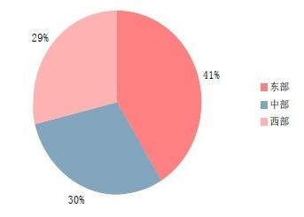图1：分地区的村镇银行数量与构成
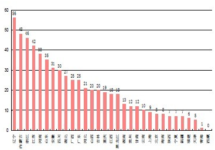图2：各省批准成立的村镇隐含数量（截至2011年底）
2.机构类型
以村镇银行的公司形式划分，股有限份公司和有限责任公司两种形式，以股份有限公司居多；以村镇银行的机构形式分，有村镇银行总行和其开立的村镇银行支行两种形式。截至2012年8月底，银监会共批准成立村镇银行机构1176家，其中总行756家，分支行420家，分支行占总数量的36%。
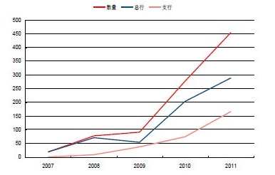图3：07～11年分年度发起的村镇银行总行与支行数量
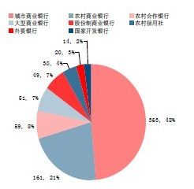图4：不同发起行类型发起的村镇银行数量比例（2012.07.31）
3.发起行类型
截至2012年7月31日，共有包括政策性银行及国家开发银行/大型商业银行/股份制商业银行/城市商业银行/农信社系统和外资银行等6类银行业金融系统机构的254家银行发起成立了村镇银行。其中，国家政策性银行和国家开发银行1家，大型商业银行5家，股份制商业银行7家，城市商业银行110家，农信社系统（包括农信社联社/农村合作银行和农村商业银行）120家和外资银行5家。截至2012年7月31日，不同类型发起行发起的村镇银行数量及构成如图所示。其中，城市商业银行发起的村镇银行占据了半壁江山。
4.村镇银行的经营范围和盈利模式
村镇银行可经营吸收公众存款，发放短期、中期和长期贷款，办理国内结算，办理票据贴现，从事同业拆借，从事银行卡业务，代理发行，代理兑付，承销政府债券，代理收付款及代理保险业务以及经营银监会批准的其他业务。
作为金融中介的一个组成部分,村镇银行的盈利主要来源于存贷利差。村镇银行的成功运行依赖于三点：资金的获得，资金的运用和资金的安全。充足的资金来源是保证村镇银行正常运转的基础，有效与安全的资金运用不仅可以提高村镇银行在当地百姓心目中的信誉度，还可以提高自身的盈利水平，实现资金获取与运用的良性循环。
二、村镇银行对中小企业融资的支持
村镇银行是立足于农村地区的中小型股份制银行，经营机制灵活，在缓解中小企业融资困境方面作用显著。
1.组织模式创新
在规模方面，我国村镇银行是真正意义上的“小银行”。村镇银行虽小，却是独立法人，属一级法人机构，区别于商业银行的分支机构。单一银行制的村镇银行模式，相对于总分行制银行的分支机构而言，可以降低银行业管理理念中的大城市中心主义倾向，形成自由竞争的环境；提高农村金融服务和中小企业融资服务质量，有利于协调银行与地方政府的关系，更好服务当地经济；管理层次较少，有利于金融监管当局的管理和控制。
2.竞争模式创新
村镇银行的竞争优势突出地反映在其从事关系型贷款的能力上，而关系型贷款对于解决信息不透明的中小企业融资问题具有重要意义。关系型贷款是一种贷款人依赖与潜在借款人的交往关系来获取信息并进行贷款发放的方式。贷方和借方之间关系的形成一般源于双方在长期的金融服务过程中的接触，这种长期的接触有助于贷方收集关于借方发展前景和贷款偿还概率等方面的信息。这些信息中的相当一部分属于“软信息”，是难以被量化、被查证和传递的，如关于企业所有者的品德及可信赖性等信息。而在软信息的收集、传递及使用上，村镇银行这类机构有着自身独特的优势，从而是其在从事关系型贷款时表现出比较优势。
3.软信息的优势
在信贷市场中，小企业、农户、个体经营者等小型借款人往往缺乏可为外界直接分享的公开信息，难以清楚地揭示自身的信用水平。由此，此类借款人需要通过以软信息生产为基础的关系型贷款方式。在关系型贷款上村镇银行存在着比较优势，在我国，小企业融资难问题至今仍较为突出，因而，推进金融组织的创新，培育和发展一定数量的村镇银行，确属一项具有现实意义的选择。
软信息收集上的优势。村镇银行具有地域性特征，其可借助与小企业等潜在借款人保持着密切的近距离接触而有效获得/积累各种软信息。另一方面，村镇银行立足当地，具有强地缘性，其员工及信贷经理大多来自所在社区，与当地的企业/个人有着千丝万缕的联系，从而可以无成本或低成本地充分掌握地方上的信息存量。
软信息传递上的优势。软信息具有非标准化、主观色彩浓、模糊性及人格化等特征，其大多是关于特定对象的专有信息，难以用书面报表形式进行归纳统计。软信息传递上的困难性在组织结构复杂的大型银行内部则体现得更为明显。大型银行组织中间层次多，传递链条长，软信息在其内部多级传递时，更易于产生失真现象。另外，相对于结构复杂的大型金融机构来说，具有组织结构简单、经营机制灵活、自主性强等特征的村镇银行在避免上述问题的发生上同样有着内在优势。
软信息使用上的优势。村镇银行的机构的所有权结构一般具有集中性的特征，其主要为来自当地社区和农村的投资者及地方营业机构的经理所拥有。相反，大型银行一般为公开上市公司，其分支机构经理在银行中往往不拥有实质性的所有权关系，而村镇银行的分支机构经理有强烈的所有权意识，激励他们会付出更多努力收集软信息，并可信任其将以与股东目标相一致的方式来使用这些信息。
三、村镇银行的发展前景
从数据中已经可以看出，过去几年村镇银行数量增长较快。随着国家未来对中小企业融资和中小金融机构、“涉农”金融机构的支持，预计在未来几年内，村镇银行将如雨后春笋般地发展起来，在农村金融体系中占有一席之地。其中主要原因在于有四个基础。
1.资金供求关系
长期以来在中国大面积的乡村地区，数量庞大的农民难以获得必要的金融服务，他们的融资需求和其他金融服务需求常常得不到满足。农村地区出现的金融真空，使农村经济的发展和农民增收受到很大的制约。
2.经济基础
在农村，民间资本极为丰厚，在很多地区，民间资本形成庞大的民间借贷和民间金融网络。而且，在这个经济高速发展时期，我国农业面临着历史性的发展机遇，也面临着产业的转型，农村的金融需求极为巨大。在这种趋势和背景下，农村金融体系的改革与发展就显得极为必要。
3.政策基础
我国每出台一项新的政策，必然会刮起一阵“政策台风”，为新政的实施鸣锣开道。同时为支持新政的推行，国家往往会在工商、税务、资金、技术、土地、能源、交通等方面提供种种便利。实践已经证明，凡是紧跟政策并善于用足用活政策的人，最能从新政中得到最大收益；凡是谨小慎微、顾虑重重、举棋不定、等待观望的人，往往错过发财的大好机会。曾经在改革开放政策受益最大的农村致富带头人，定会抓住这一大好机遇而迅速谋划筹建村镇银行的具体事宜。
4.快速推进城镇化的时代背景
城镇化的推进必然伴随着现代服务业的发展，在城镇化进程中发展金融服务业是题中之义。村镇银行作为土生土长的乡土银行，在城镇化进程中可以发挥自身的地缘优势，积极拓展辐射半径，提升自身实力。
表：几类中小金融机构比较

| 互联网 |
乾康（上海）信息技术有限公司 > 互联网 > 互联网金融下银行的历史机遇 |
互联网金融下银行的历史机遇
央行观察按：本文是永隆银行董事长马蔚华9月14日在2013年第七届中国银行家高峰论坛上的讲话的原文实录。编者有小部分删节。
“我觉得网络银行在某种意义上说，是和传统的银行，对全社会服务的需求是相辅相成的，网络应该在一定程度上就在现实世界，我觉得网络越发达，特别是第三方支付越发达，相当于助力银行的支付、媒介的职能，从现实世界延伸到网络世界的边边角角。这是过去银行不能做到的。”
刚才关于互联网金融的定义，我很赞成我们吴行长的定义，实际上 金融就是资金融通，基于互联网的这种资金融通。
互联网金融定义
现在比较宽泛的概念，一个就是传统的商业银行把我们传统的业务通过互联网来做，这个早就开始了，把传统的业务搬到用互联网来做，叫做水泥加鼠标。
第二类就是互联网的企业做金融业务，做资金的融通业务，包括结算业务。
第三类的过去设想过，就是纯粹的互联网金融。
我觉得现在大家比较说的是比较狭义上的概念，互联网的企业做金融业务，现在作为银行比较多的是谈论这个事儿。
来自异业的竞争-银行中介作用的弱化
但是发展到今天，现在互联网金融不是银行自己的同业竞争了，说你谁能用网上水泥加鼠标做得很好，是来自异业的竞争，所以马云经常跟我说，他说马大哥你这个做不了的我可要做了。小马挑战老马。
目前晓灵都讲了， 第一个就是第三方支付，刚才我说银行的两大功能，在支付领域发展得非常快，第三方支付现在已经批了250家了差不多，他们的这个增长，牌照200多家还在批，他们增长几乎是每年100%以上，现在超过2万亿，很快就4万亿，说到2016年就十几万亿，这个量非常大，但是这些正像晓灵说的，有它存在的必然性，它是大量的小的频繁发生的，非常快捷的这种淘宝网上发生的，这些说实在的银行真的没人家方便， 我说这是应该的，马云你做的事儿是对的，别看你分流了我的业务，我说你还是替我分忧解难。
第二个就是移动支付也是基于互联网的业务，移动支付发展也非常快，因为现在移动支付，现在中国的移动支付手机都4.5亿了，去年的交易量是1500亿，可能到2013年就超过1万亿，爆炸式的增长。我们去年搞了两个手机支付，一个是跟运营商的合作，用SIM卡，第二个是跟手机制造商的合作，但是这个只解决近场支付， 将来我们的目标是取代信用卡进行远程支付，这个也不是很远的事了。
还有一个是网络借贷，刚才晓灵也讲了，网络借贷的风波是2007年从上海登陆，现在到2012年我们的P2P的网络平台已经超过300家，在中国，整个贷款总额大约超过600亿，现在数额不是很大。但是这件事儿它是呈燎原之势，发展非常快。我昨天在达沃斯，一个法国老外他在中国也搞P2P的网上支付，他说很来劲，很能挣钱，就是这件事儿，一般草根也可以做金融了，所以说这个肯定有很大的市场。但是这些银行也可以在做，比如说工行的网贷。
第四个是众筹投资，一个是人人贷，这个是纯属的互联网金融，众筹投资掀起了一个去经营化的这样一个大众融资革命，但是在中国好像还受到很多限制，在美国发展比较快，特别是预消费成为一种新的潮流的时候，众筹投资的消费不仅仅是拿出一个项目来吸引投资，针对音乐、游戏、初创企业、应用程序、时尚设计，包括你设计一个影片的创意，都可以筹资。好像最近有一个动画，半个月就筹到了158万，所以说给很多创意企业找到了一个。但是这个东西在中国还有一个非法集资的界限，我就弄不清这个事儿将来怎么办，所以在中国还受到很多限制。
再有一个刚才讲到理财，过去银行都是拿手的，但是现在余额宝推出以后，刚才讲到，通过网络销售基金产品，这个就可以把现在大额理财变成一个碎片化的理财，最小10块钱，我觉得这个可能将来对于广大老百姓，可能会有一点影响，喜欢碎片的理财，因为余额宝才几天就200亿了，而且现在还有很多的在继续申请余额宝这样的一个产品，你既然放开了，那就不是一家了。所以我想现在通过网络做金融，这几方面发展比较快。
那么就这几方面，就足够提醒商业银行不可轻视了，一个是商业银行面临金融中介角色的弱化问题。因为过去商业银行他也是信息流、资金流的集中。商业银行获取信息，现在远没有互联网企业这么宽泛、这么快，而且互联网企业的开放性决定他对信息的集成要比商业银行更敏感，这是互联网的优势。
我那天达沃斯论坛，安排我和Facebook的女CEO桑德伯格，跟她有一个对话，我希望跟她对一对我们现在商业银行有什么考虑，结果这个主办非得叫我们谈男女领导力的差异，等我跟她谈这个已经走了，我一向对马克办Facebook我还是考虑很多，你像Facebook有10亿实名制的客户，这10亿里面肯定也资金供给的、有资金需求的，现在首先有了搜索引擎，可以把供给需求有序排列起来，然后有云计算，有征信体系的话，就可以对每一个资金需求者，作出一个风险定价的评估，每个人手里再加上有一个移动终端，这事儿就完成了，如果他们自己能自由恋爱了，那银行没用了。
现在目前还达不到，晓灵我讲讲你的观点，目前还难以撼动银行的地位。但是现在有一个说法，说互联网金融将成为银行的终结者，这个很可怕，刚才我一听晓灵一讲我还有点信心。银行现在还不见得马上就终结，这是一个中介的角色的弱化。
银行服务模式的改变
第二个，商业银行面临传统的服务模式，面临改革，我们现在这些年，以客户为中心，大家还是接受了这个理念，也记得招行有一个因您而变，开创了中国银行业以产品为中心向以客户为中心的历史转变，这个对招行评价还是很高的。实际上大伙儿也都是这么做的。
因为你做银行的是服务业，你不了解你的客户需求，人家怎么能够跟你跑呢？你开饭店的不知道你的客户吃咸淡，那人家还能来吗？所以各家银行都在以客户为中心。
但是互联网企业有他的特点，他的特点就是尊重客户的体验，然后强调交互式的营销，再加上平台开放，而且在运作模式上更强调互联网的技术和金融最核心的技术的结合。我想这个是传统银行还做不到的目前，特别是大量的这些小微客户。
另外现在银行都愿意做小微企业，这个我说的不是假的，因为不是光响应政府号召的事儿，因为巴塞尔委员会有一个规定，他把大企业的风险全重定为100%，中小企业是75%，可能大会儿想这个事儿怎么能这么定呢？巴塞尔委员会认为，大企业违约概率低，但是违约损失率高，也就是说他出了问题，都是跟经济周期相连的。所以损失率是难以避免的，小微企业，小企业风险权重是75%，就是做他的业务节省25%的资本。为什么对他这么看呢？也就是他违约概率高，违约损失率低，这是一个很简单的道理，大数原理，好人总比坏人多。
我们干信用卡就是这样，你看信用卡都是不担保不抵押，好人总比坏人多。那么这所以现在银行补充资本多难？所以所有的银行都节约资本，要想节约资本，还想得回报率高，那只有做小微企业最核算，但是做小微企业不是说做就做的，你要把每个企业的风险都搞定，都搞清楚，尽职调查，你不做就亏损了，这百八十万的，你去俩人调查一天，那能行吗？所以必须找到这样一个办法，这样的办法，实际上互联网企业是最有优势的。
你比如说马云做这个，支付宝，支付宝积累了淘宝的客户，很多很多的资料，这些资料对他非常宝贵，然后小阿里信贷就凭借这些资料，一天审8000笔，你想，一小时就多少笔，他就凭这些资料，所以他会减少，他这个不良率也不是很高，你做小微企业，必须批量化、专业化、工厂化地，把风险确定几个指标，美国的富国银行，原来第十大银行，就做10万美金左右的贷款，做到今天做到美国第一大银行，原来第四大现在第一大了，盈利。所以这也是互联网企业对传统银行的一个挑战。
收入来源的冲击
第三个就是收入来源的冲击，你想银行两个业务，一个是信贷利息收入，第二个是支付的手续费，这两个都被脱媒了，那你想银行收入肯定减少，原来银行可以在销售基金，销售理财产品方面，银行有巨大的渠道优势，现在互联网也可以销售了，这肯定也要分流一部分去，所以毫无疑问，银行的这个收入要受到一些分流和减少。所以这就是我们银行目前看到的挑战。目前的挑战也经常使我们想到未来，未来如果货币还存在的话，这银行肯定不会终结。就将来连货币都不存在了，我看银行也不知道怎么回事儿了，现在都是一个未知数吧。
但是我觉得，互联网或者说任何一个科学技术的革命，在对你提出需求挑战的同时，他也肯定会提出一个应对挑战、解决这个需求的办法，这就是我刚才说了比尔盖茨15年前就说这个话，但是银行也没有成恐龙，银行还是在很好地活着。
银行的历史机遇
互联网金融的发展，虽然对商业银行构成严峻的挑战，但是我觉得，还有很多很多的历史机遇。
首先是互联网给你提出一个，它可以个性化地对客户服务，让客户体验更好，这些完全也可以让你商业银行为我所用，我们也可以利用网络传输，利用云计算、利用海量的数据进行分析，刚才我来之前我去参加看了参观田溯宁的云计算，大数据现在对客户行为的分析还是非常有意义的，你可以分析你的客户在这个时期，哪类的客户需要哪类的产品，需要哪个层面的产品，你这样准确精准营销就可以完成，完全可以用在商业银行上。
定价，特别是风险定价，你完全可以用大数据的技术，刚才我说了，马云他这个支付宝积累的数据，当然都是大量的小企业的数据，银行这么多年也积累了很多的这个大中型企业的数据，这些数据也很宝贵，就是如何把这些数据进一步地挖掘，你可以给大中型企业，也可以提供定制式的服务。另外我觉得还有利于挖掘银行新的价值。
虽然现在网络虚拟空间发展得很快，网络可以使我们人在虚拟空间拉近距离，但是不能缩短现实物理空间的距离。网络可以提供海量的数据，但还不能够解决人和人之间真正的信任问题。现在在网络时代，有效的信息，人性化的渠道和现实的信任，我觉得这是必须的，而在这个方面，银行由于历史的原因，由于他业务的特点，他还是具有非常大的优势的。我觉得凭借这些优势， 银行可以把自己的信任媒介、支付媒介、渠道媒介的作用进一步发挥。
我觉得网络银行在某种意义上说，是和传统的银行，对全社会服务的需求是相辅相成的，网络应该在一定程度上就在现实世界，我觉得网络越发达，特别是第三方支付越发达，相当于助力银行的支付、媒介的职能，从现实世界延伸到网络世界的边边角角。过去银行不能做到的。
从另外一个角度，就目前来说，这些第三方支付的企业发展越快，他们的资金越多，我觉得银行应该越高兴，因为他们最终还是银行的客户，他们还要把钱存在银行，所以目前的情况下，我们传统的银行和网络的银行，是完全可以相辅相成的，不要把它看成是对立，实际上网络银行给银行的压力，也是银行创新的动力。刚才晓灵讲到在互联网的情况下，银行创新这是必经之路。
我觉得我们现在作为商业银行，也要适应这个时代，现在有一个时髦的词儿叫智慧什么什么，这是IBM发明的，我想把银行打造成为智慧银行，就完全用这个大数据的观点来做市场客户分析、市场营销，做银行的资本计量，价格管理，这是完全可以做到的。银行可以进一步节省成本，可以进一步防范风险。
另外我想通过银行的进一步网络化，现在银行网络化是互联网最大的特点是互联互通，连得越广泛越好，所以说银行业不要把自己的系统封闭， 如果银行在控制风险的情况下，银行之间，银行和异业之间有更多的互联互通的话，我想我们的优势可以更大地进行互补。
我想面对互联网的竞争，作为传统的商业银行挑战肯定是有的，过去你吃独食，现在人家分了一杯羹了，而且还要分一碗饭，还要分更多的东西，你要认识这个现实。 作为商业银行你要多一点互联网的基因，这样我觉得我们共同迎接这个时代，商业银行不会终结。
| 互联网 |
乾康（上海）信息技术有限公司 > 互联网 > 金融豪赌互联网 |
金融豪赌互联网
曾经喜欢随身带着英语小卡片、哪怕坐飞机也在学习的马明哲，如今有了新“爱好”。他时常手持iPad，言语中冒出“大数据”、“P2P”、“云计算”等网络语言，他在全球挖IT金融顶级高手，并派特别助理专门在硅谷等地搜集IT最新技术。
今年58岁的马明哲，驾驭着中国平安这艘传统金融的巨舰，以综合金融的模式特立独行，如今他赋予了平安新的目标——加速进军互联金融。
马云有支付宝，马化腾有财付通，如今马明哲也有了“平安付”，总部设于上海的平安付智能技术有限公司已经正式运营，此外，平安斥资10亿元打造的二手车电商平台上海平安汽车电子商务有限公司挂牌，除此之外，马明哲和网络巨头马云、马化腾“三马”合伙创办的保险公司“众安在线财险”也在运作中。
平安集团似乎是传统金融公司奋起迎战互联网公司的一个典型缩影，众多金融公司似乎是最近两年才开始筹谋互联网金融业务，和它们不同的是，平安公司围猎互联网金融的战争早就已经打响。
不带钱包
马明哲进军支付行业并不是偶然。就在不久之前，马明哲带领团队和360公司团队一起头脑风暴，和周鸿祎聊手机支付，平安付所有环节从想法、构思，到收购、组建管理团队、成立新公司，确定公司的盈利模式，全是马明哲亲自操刀。
受平安集团董事长马明哲之邀，原星展银行香港及中国内地零售银行业务总监王洁凤加入平安集团，负责支付业务。王洁凤还曾担任花旗银行中国区副总裁和荷兰银行中国区执行总裁。除了王洁凤，平安支付还有多位具有银行或支付行业背景的高管，资深副总裁兼首席技术官郑一德和副总裁王伟此前均在顶尖在线支付公司PayPal任职。
郑一德对于第一次和马明哲聊到支付的经历印象深刻，“他甚至预测，未来十年内，中国大陆80%的现金使用会消失，未来20年，绝大多数中小银行如果不把前台业务外包，将难以生存。”而在马明哲看来，支付业务就是小额电子银行，尤其在移动时代，支付业务前景不可限量。
这和招行前行长马蔚华的观点不谋而合。2011年，马蔚华提出未来几年内要“消灭信用卡”，意思并不是真正消灭信用卡这种支付方式，而是把信用卡和手机合一。在别的银行还跟信用卡较劲儿之时，马蔚华想的是怎样让客户不带钱包也能上街。
有数据显示，2012年我国移动支付市场交易规模达1511.4亿元，而从细分市场规模交易结构来看，近场支付占比仅为2.6％。马蔚华自己也说，一家银行在互联网金融发展中的作为，充其量也就能比别人快一点，“客户需求决定一切，互联网金融发展也不是一家银行能做完的事，各方合作和分享势必成为趋势，最终形成一种良好的支付氛围，这样一来，银行、商户和客户都会受益。”
面对互联网金融的快速发展，银行等传统金融行业正在感受到前所未有的压力与挑战，而以往基金买卖，理财产品销售，银行存款，尤其是活期和结算类存款，都是银行的重要业务，银行收取可观的手续费，为银行带来了巨大的利润，但随着互联网金融的争先出现，这块蛋糕无疑被分割了，银行不得不加入“战局”。
不过，“没有永远的敌人，只有永远的利益”，传统金融公司已经开始注重将互联网信息技术运用于客户细分、产品、服务研发和整合。
比如，工商银行正式推出了微信银行，提供包括7×24小时人工咨询、自助查询和资讯获取等服务；建设银行则推出善融商务平台，为客户提供商品批发、零售和支付结算等全面金融服务，希望通过电子商务平台积累大量交易数据，开发不同的金融产品；中信银行与财付通合作，希望借助第三方支付平台整合产品，开展网络商户小额信贷，并于近日推出手机近场支付业务。
相较于银行在互联网金融领域的多重出击，快钱CEO关国光似乎很是淡定，“我干嘛跟别人一样做一个标准化的产品。互联网金融中的需求多的是，只要能满足客户的根本需求就是好产品。”
在关国光眼中，对一家成功的互联网金融公司来说，在创新领域会产生新需求，产生新业务，谁能快速满足这些需求，占据最大的市场份额，谁就是胜利者，而死守现有业务就是死路一条，现在，关国光又要将他发现的一个新需求变为实实在在的产品。
“飞机头等舱经常空着许多座位，能不能支付几百元升舱费，让我去坐；或者，头等舱的餐食不错，我不想坐在那儿，但是想坐在经济舱尝尝头等舱的‘味道’？空乘说可以，但钱没法收。就这样，支付的需求产生了。”关国光说，升舱之后，如果能够把升舱信息与登机信息处理在一起，诸如此类，第三方支付公司能做的事情太多了，所有应用的核心就是给航空公司提供更大的附加值。
“我向航空公司的老板阐述了想法，这可以把头等舱的使用效率提高一倍，而我只收取1%，航空公司老板欣然接受，因为他们从中赚取的收益更多。”关国光说，除了升舱之外，还包括在国际航班上销售高额免税商品，下飞机时将货品直接送到客户手中。相信这种需求很大，关键是根本不存在大家说的抢银行的业务，银行愿意合作。“这种在封闭空间里的支付市场广阔，例如飞机、火车、大巴。“我们正在跟几家航空公司谈，它们都非常感兴趣。”
向谁借钱
装修房子、换车、开手机店、投资苗圃……打开人人贷网站，借款的接口五花八门。这种通常三五万元的借款对很多人来说是个很尴尬的资金需求：钱不多，贷款、上市这种公司级的金融待遇一律别想，又觉得不值得搭上人情向熟人张一次嘴；但一分钱憋倒英雄汉，不借又不行。
在中国，全球1/4的庞大人口，足够让这片土地成为小额信贷的天堂。这就是人人贷、有利网这样的P2P网络借贷平台的生意空间。
截至今年6月30日，2011年才开始正式运行的人人贷已经累计完成了10亿元人民币的交易额，并用疯狂的速度继续狂奔。“基本上保持着每年8倍的速度。”李欣贺算计着再用半年人人贷就能完成下一个10亿元，而在三年后将实现100亿元的交易额。
毕业于北京大学金融数学系的李欣贺是人人贷的三位创始人之一。他曾在德意志银行香港投资部、中银国际直接投资部和渤海产业投资基金工作，坚信互联网能够对现有金融环境有所改变的李欣贺们经过将近半年的市场调研后，准备将国外日渐流行的“P2P”模式引入中国。
“P2P”模式在2005年由英国Zopa网站首创，之后迅速在美国、欧洲和日本复制。它们的口号是“摒弃银行，每个人都有更好的交易”。他们为借贷双方提供一个网络平台，借钱人和放款人经过网站注册和审核后，有借款需要的个人将信息发布在专门网站上，理财人则通过这些信息选择自己希望借出的对象，所有交易都在网上完成。
对于P2P来说，商业模式与监管政策都未定型，而也正是这些缺失，让P2P行业一直在困惑和质疑中发展。由于与小额贷款公司的风险控制标准不同，P2P公司们显得尤为保守、谨慎，在李欣贺看来，建立起一套完善和有效的信用审核体系，可以帮助公司将贷款人逾期风险降到最小。
事实上这也是有利网正在做的事情，这家公司除了和公安部公民身份证中心等多家第三方机构合作，还会单独放在自己的风险控制系统里及时有效地分辨贷款人提供的信息的真实性。还再做一遍筛选。有利网的创始人刘雁南介绍，有利网与费埃哲FICO(世界最大的信用审批技术服务商）合作，用它的评分卡、反欺诈模型建立有利网目前的信用管理体制，有利网的风险总监原来在渣打银行的“现贷派”，和“小微贷款业务，负责对借款人的把关。
和人人贷这些P2P公司先行者相比，众筹融资无疑是个“小弟”，在国外也不过短短三四年发展。“众筹”模式随着美国网站Kickstarter的成功而崛起，在这种模式下，任何人都可以将自己的创业构想发给网站，经网站审核后发布，网友自愿给予资金支持，回报则是相应的产品或服务。众筹网站从成功项目中抽取一定比例的资金作为报酬。
“点名时间”是中国最早创办的众筹网站，于2011年5月，创办了点名时间并于两个月后正式上线。此外，专注于支持音乐创作的“乐童音乐”、致力于资助微电影的“淘梦网”等众筹平台也吸引了不同行业的创业者，为他们搭建了展示梦想、吸引投资的舞台。
刘宗孺是原墨尔本大学60 GHz项目经理、架构及集成负责人。回国创业之后，他试着在“点名时间”发布了Wi-Fi智能插座的项目，达到了其限定的目标金额。在发布第二个项目之前，刘宗孺与和“点名时间”采用了预热形式，让消费者参与产品的设计与定位。目前，这一最新项目主页已有超2万人的浏览，项目获得超过200人的支持。在距离项目结束日期还有32天的时候，金额已超目标金额近500%，这一数字已更新至767%，该项目的代工厂、经销商、外贸和风投也都通过“点名时间”找到了刘宗孺。
在“点名时间”平台上，发起项目分类比较平均，据“点名时间”提供的数据，自2011年上线至今共收到7000多个项目，900多个项目上线，接近一半项目已筹资成功并顺利发放回报。迄今为止，该平台一共筹集近650万元人民币，单月筹资金额突破150万元人民币，项目平均筹资为14000元。
点名时间CEO张佑发现，国内的市场正从筹资金额50万元以下的项目跨度到50万~100万元的项目，其中，设计类和科技类项目相较易成功。以上两类项目的客单价更高，特别是科技类项目，有一些智能设备涉及到硬件设计与生产、产业链较长，所需资金也较多，也更需要资金的支持。而在点名时间平台上，近一半用户来自京广沪深等一线城市多，消费能力较强。于是张佑及其团队有意识地引导一线城市的科技项目创业者来平台上发起项目。
另一种钱
就在互联网金融业发展边界越发模糊之时，另一种新兴事物又来搅局了，那就是互联网虚拟货币，典型代表是比特币、Q币、Facebook币、亚马逊币等。
这些虚拟货币中最为知名的是比特币。2013年初以来，如过山车般的价格波动使“比特币”走进了大众的视野，逐渐地引起人们的广泛关注，“比特币”是一种P2P的虚拟货币，2009年诞生初期并没有引起太多人的注意，只是流行于密码学讨论小组。
2008年11月1日，一个自称中本聪的人在一个隐秘的密码学评论组上贴出了一篇研讨陈述，陈述了他对电子货币的新设想——比特币就此面世。1年后，比特币的首笔交易完成。数据显示，2010年比特币的初次交易价格仅为0.03美元，而今年以来，比特币的价格波动如坐过山车，其兑换峰值曾高达1比特币兑换266美元。
从概念上说，比特币是一种由开源的P2P软件产生的电子货币，是一种网络虚拟货币。比特币不依靠特定货币机构发行，它通过特定算法的大量计算产生，比特币可以在任意一台接入互联网的电脑上管理。不管身处何方，任何人都可以挖掘、购买、出售或收取比特币。
如果说人民币是家乐福发行的充值卡，可以买到琳琅满目的商品；那么比特币则是小卖部的充值卡，柜台里的东西屈指可数。不过，目前全球已经有上千家商户接受比特币支付，包括西班牙服装品牌ZARA、外贸网站season mall、水栽培仪器供应商 East West Hydro、美国卫浴产品商家 Luxury Living Direct等。比特币的交易在中国也逐渐流行，淘宝平台上多家商铺能够接受比特币作为付款方式。
在中国，“比特币”是因为壹基金一夜成名。四川芦山地震发生后，壹基金宣布接受比特币捐款，短短几天之内就收到了233个比特币，折合人民币22万元。这是中国第一个接受比特币捐赠的非政府组织，比特币也第一次在我国成为了捐赠物。此后，网络贸易中的活跃个体们——部分淘宝的店铺也开始接受了比特币的使用。
不可思议的是，这种电子货币竟然已经在美国变得合法。最新报道称，美国德克萨斯州法官在审判，关于特兰顿谢沃斯（Trendon Shavers）比特币的虚拟对冲基金（Bitcoin Savings and Trust，BTCST）的案件中裁定：比特币将被视为货币，因此所有与之相关的投资基金及交易都受到美国证券法的管辖，并受到联邦司法系统的监督。对于这一表态，比特币的玩家认为，这不仅将使得比特币纳入真正的资金监管，也成为比特币真正走入大众生活的开端。
中投公司副总经理谢平却对比特币表示担忧，这位曾在人民银行工作多年的金融专家认为,互联网货币与法定货币的兑换，会影响金融稳定，他表示，人类很早以前就实行私人货币，每个银行凭自己的信用发行货币，银行有充足的准备金或者是黄金准备。而互联网虚拟货币和法定货币的流通速度完全是两码事，中央银行很难知道互联网货币流通和发行情况，所以可能对金融稳定产生影响。“互联网货币的出生是不可避免的，对将来人类社会的影响要有充分的准备。”
目前，比特币依然属于新鲜事物，绝大多数普通人仍对其保持观望态度，但是在金融业界，尤其是证券、货币和投资领域，从业者们却很难保持淡定。亿万富豪刘易斯也看好虚拟货币比特币的发展，欲向比特币矿机公司Avalon投资2亿美元。刘易斯是著名外汇交易员，他曾在1992年联手索罗斯狙击英镑。
和比特币这样的虚拟货币一样，互联网金融这个新鲜事物也让从业者很难保持淡定，而现在，似乎是时候投身其中了。（冯一萌 何菲 /文）
| 互联网 |
乾康（上海）信息技术有限公司 > 互联网 > 美国p2p信贷平台Prosper获红杉和黑石2500万美元投资 |
美国p2p信贷平台Prosper获红杉和黑石2500万美元投资
近日，个人对个人信贷（Peer to Peer）信贷平台Prosper宣布再获2500万美元投资。本轮投资由该公司长期投资方红杉资本领投，黑石投资参与。本次融资的时点似乎有些诡异，因为Prosper今年1月刚获得了一笔2000万美元的投资，该月他们重组了领导团队，并且任命了新的CEO。
2006年正式上线的Prosper在本次融资之前已经获得了9490万美元的投资，因此到现在他们获得的外部投资总额已达1亿1990万美元。Prosper称本次融资是今年年初开始的新发展方向的一个组成部分，并不是迫于压力。其实原因很简单：今年1月新上任的管理团队和2000万美元投资是探索Prosper商业模式的赌注，如果成功就会带来更多的资金。随着Prosper后续的强势增长，红杉资本将投入更多资金。
截至今年1月，Prosper平台上的信贷总额为900万美元，到8月这一数据暴涨至了3200万美元，几乎等于在不到一年的时间里翻了4番。Prosper预期该平台上的年交易额可能超过3.6亿美元。Prosper在官网上称自成立以来，该平台上已达成了6.3亿美元的借贷，今年的数额占到了其中的一半多。Prosper称此次融资的2500万美元将被用于“加速公司增长”。就其信贷率的激增来看，看似笼统的融资理由可能是事实。
Prosper的竞争对手包括信贷俱乐部（Lending Club），和某种程度上也与Kiva竞争。在如今的金融大环境下，公众对Prosper这类服务的需求正在不断增加，以锁定资金收益。问题在于这类服务的潜在资金总规模是否足以支撑这些公司在接下来的五年中保持发展。我认为，只要美联储继续使用隔夜拆借杠杆来维持较低的传统借贷利率，Prosper们面对的市场就极其广阔。
| 互联网 |
乾康（上海）信息技术有限公司 > 互联网 > 日本互联网金融成功案例 |
日本互联网金融成功案例
阿里巴巴打造“阿里小微金融服务集团”，在战略和业务上和乐天有着众多的相似之处，那么，乐天的金融业务又是怎么构成的呢？
一个朋友给我们一个很专业的文章：“为什么超级电商平台都要做金融？看看日本排名第一的电商乐天的营收结构，金融证券占了三分之一，而卖商品的收入不到50%。”互联网上总有些关于日本第一大电商乐天搞金融的传闻。那么乐天的金融业务具体是什么样子的呢？揭开乐天金融的神秘面纱。
互联网金融微信ID：iefinance 微信名：互联网金融
如果你不想被社会淘汰请关注。对互联网金融模式（包括比特币-虚拟货币、众筹模式、p2p、互联网或移动支付、金融服务）进行分析。新型的金融服务更接地气，欢迎关注。
日本乐天和阿里一样，都是做电子商务起家，并且在本土获得了巨大成功的互联网集团。乐天财报中将其业务划分为互联网服务、互联网金融、其他三大部分，阿里巴巴集团近期的调整与之有相似之处。
2003年乐天收购了一家证券公司，2005年开始重点打造金融业务，目前乐天金融涉及证券、信用卡、银行、保险、预付卡等领域。因为保险涉及更深层次的金融战略考虑，本文仅对乐天金融里的拳头业务乐天证券、乐天信用卡、乐天银行进行解读。
2012年乐天金融贡献营收1564亿日元，达到总营收3成左右。其中仅银行和卡业务营收合计为1028亿日元，与在线零售平台“乐天市场”1069亿日元的营收相当，网络金融于电商而言是一块巨大的蛋糕。可以说世界电商范围内，金融玩得最好的便是日本乐天。乐天先发制人，大力拓展网络金融业务，一方面是由于网络金融和电商具有天然的联系，电商平台以及平台上积累的大量真实的交易数据为其打造网络金融业务提供了得天独厚的优势；另一方面与乐天创始人出身日本兴业银行,做过软银投资等大型投融资机构金融顾问有关。
日本2011年的互联网普及率已经高达79.1%，网民人数为9610万人。而截至2012年12月底，我国网民规模达5.64亿，互联网普及率为42.1%，存在极大的上升空间。中国是一个比日本更为巨大的市场，参考乐天的业绩，中国的互联网金融市场有巨大的想象空间。
乐天金融拓展的第一步棋：证券
乐天向金融领域拓展的第一步是于2003年11月收购证券公司“DLJディレクトSFG证券”，此次收购乐天花费300亿日元，取得该证券公司96.67％的股份，并于2004年7月4日变更公司名称为“乐天证券”。收购当年９月开户数日本第三，开户数14.7万左右，现在乐天证券开户数超过130万。
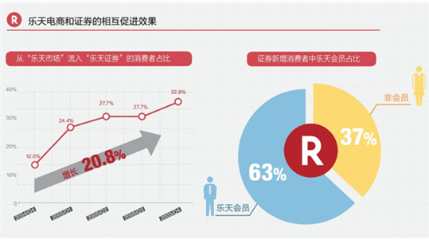日本乐天银行：一个开银行搞金融的电商
乐天希望收购的证券业务可以与乐天集团电商等业务形成相互促进，让证券业务为乐天带来更多的会员，让乐天在线零售平台“乐天市场”积累的大量会员转化为证券业务的消费者，通过互联网的方式，让证券投资变得更为方便，从小众变得逐渐普及，并通过提供金融服务扩大集团的业务范围，夯实乐天集团发展基石，增加收益机会。
乐天通过积分打通了证券和电商等各种业务，通过乐天证券投资可以获得乐天积分，而积分可以在“乐天市场”购物。2005年，乐天证券新增消费者中乐天会员占比达到6成，电商向网络证券的导流效果明显。
乐天对证券的定位是日本第一的网络证券公司,而当前乐天证券排在SBI证券之后，是日本第二位的网络证券公司。乐天证券主营的业务有日本国内、国外股票，以及投资信托、债券、国内外期货、外汇、基金、贵金属等。
当然网络证券本质还是证券，网络更多是创新的销售途径，所以网络证券受整个投资市场情况的影响会比较明显。而且今年初随着雅虎日本入局证券业务领域，未来市场竞争将更为激烈。
国内阿里旗下淘宝在2012年开通了理财平台，以平台的形式涉足基金、保险理财、贵金属等领域。在支付宝下面也设立了理财频道，可以开通支付宝理财专户和基金专户，同样涉及基金、贵金属、保险理财产品等领域。相信日后随着政策的逐渐放开以及市场的日趋成熟，上线的理财产品种类也会更为丰富，淘宝和支付宝积累的大量消费者资源和数据将是阿里的优势。
乐天金融的绝对核心：信用卡
中国第三方支付火爆，支付宝占据了绝对的大头，是阿里集团的潜力股。而在日本，由于信用体系较为完善等原因，日本在线零售市场前三位的支付手段是信用卡、货到付款、银行转账。在日本，第三方支付工具目前几乎没有什么市场（日本经济产业省的统计结果）。对7成交易都是通过信用卡来支付的“乐天市场”而言，信用卡是把控消费资金来源的重要支付手段，与电商业务关系紧密，信用卡于乐天而言就好比支付宝在阿里的位置一样重要而不可或缺。同时，消费者在“乐天市场”的消费记录可以成为发行信用卡的授信依据；信用卡业务将为乐天带来手续费收入等营收增长点；另外，信用卡不仅可以在线上消费，也可以在线下消费，线上线下消费获得的积分可以共通使用，一张卡片打通了线上和线下的消费场景，势必成为乐天O2O部署的利器之一。因此，乐天将“乐天信用卡”作为其金融发展的绝对核心，投入了大量的资源。

日本乐天银行：一个开银行搞金融的电商
2004年9月，乐天以74亿日元收购信用卡贷款公司“AOZORA卡”，2005年6月又以120亿日元收购信用卡发卡公司“国内信贩”，开始发行信用卡“乐天卡”。近年来使用乐天信用卡购物的交易金额增幅明显，其中2012年为18020亿日元，比2011年增加了36%，增长主要得益于信用卡发行量的增加。2012年乐天信用卡营收697.37亿日元（面向外部消费者部分），在金融业务里占比超4成。
阿里旗下支付宝近期推出了“信用支付”，是阿里金融联合银行提供的首款网络消费金融服务，只要签约了信用支付，就会获得一个授信额度供用户循环使用。首批将于4月中旬在浙江和湖南率先开放，一期的使用范围是淘宝的交易，在手机、Pad购物时预支消费，未来会向内置支付宝的所有商家开放。
信用卡主要有两大功能，一是消费支付，二是信用卡贷款，如果支付宝“信用支付”未来面向线上线下所有商家开放，那么在消费支付方面已经大致等同于信用卡，只不过可能支付宝“信用支付”没有卡片载体，而是将手机作为载体，甚至是完全没有载体的。
日本第一网络银行——乐天银行
2009年2月乐天收购了日本第二个诞生的网络银行eBANKCorporation，2010年5月将其更名为乐天银行，目前乐天银行是日本最大的网络银行，截至今年2月底开户数达到422万，吸收存款8194亿日元。银行吸储功能为乐天带来了大量资金，存款资金池里面的钱可以源源不断地为乐天的业务拓展补充能量。使用乐天银行提供的服务获取的积分可以用于在线购物等其他服务，通过其他服务获取的积分也可以支付银行手续费。
eBANKCorporation于2000年1月成立，2001年7月取得银行牌照，核心业务是互联网结算，当时没有融资业务。2005年11月开始涉足投资信托业务，2006年12月开展外币普通存款业务,汇兑等手续费业界最低，网络银行的低成本为其带来了竞争力。2006年eBANK开始发行借记卡。
2009年eBANK被乐天收购。乐天收购eBANK首先是看中其业界领先的支付结算能力，可为乐天数千万会员带来更为便利的支付结算体验；其次是可以充分利用乐天庞大的消费者群体，开发个人贷款、住宅贷款、电子货币等金融产品。依靠乐天庞大的用户优势，eBANK纳入乐天旗下一年便成功扭亏为盈。
目前乐天银行业务账户分为个人、个体业者、企业三类，业务涉及借记卡发行、境内外转账、支付、日元存款、外币存款、发卡、存取款、汇兑业务、个人贷款、住宅贷款等众多领域。乐天银行自己并没有设置ATM，但其发行的借记卡可以在日本全国大约60000台ATM上取款，且无需手续费。对于在乐天开店的店铺来讲，在乐天银行开户最大的好处就是可以每天收到乐天的结算款项，资金周转迅速。
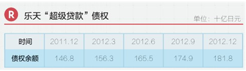日本乐天银行：一个开银行搞金融的电商
乐天银行的“超级贷款”是面向个人的融资信贷产品，2009年4月推出，申请人可以是消费者，也可以是个体户。乐天银行不提供面向法人的融资贷款，但是法人代表可以以个人的身份向乐天银行申请贷款。“超级贷款”不限制用途，最高可以获取500万日元的贷款，对除了个体户和法人代表以外的一般消费者，200万日元以下的贷款不需要提供收入证明，无论是否有正式工作都可以从乐天获取贷款。乐天集团曾于2006年与“东京都民银行”达成合作协议，面向中小企业和个人提供贷款，开设“东京都民银行乐天支店”，但该业务于2008年底关闭。
中国的金融环境下，中小企业获取贷款比较困难，所以阿里集团推出了面向淘宝卖家和B2B企业的金融信贷产品，但不排除日后阿里继“信用支付”之后推出面向消费者个人的贷款产品的可能性。
1.淘宝卖家缺钱——“淘宝贷款”
为了应对淘宝卖家的资金需求，阿里推出了“淘宝贷款”，目前已经在全国开放，分为“订单贷款”和“信用贷款”两种。“订单贷款”是基于卖家店铺已发货买家未确认的实物交易订单金额，结合店铺运营情况，进行综合评估给出授信额度的贷款，贷款期限1个月。“信用贷款”是基于店铺综合经营情况给予授信，不受当天订单量限制，无需抵押担保，在授信额度可多次支用，随借随还，贷款期限最长12个月。
2.B2B企业缺钱——“阿里信用贷款”
为了应对中国站会员、中国供应商会员的资金需求，阿里推出了“阿里信用贷款”，目前面向工商注册地在上海、浙江、江苏、广东，且注册时间满2年的企业或个体户，并且申请人近12个月总销售额不少于150万元。
| 互联网 |
乾康（上海）信息技术有限公司 > 互联网 > 探秘天虹商场微信支付 |
探秘天虹商场微信支付
作为腾讯微生活O2O重要试点的连锁百货公司天虹商场正式引入微信支付，进而上线微信购物以及送礼功能。
据悉，天虹微信借助微信5.0集成的支付系统，用户任何时候只要打开微信选择好商品就能直接使用微信支付完成付款，不用重复输银行卡号等信息。购买成功后，用户还可轻松转赠给好友，实现“空中送礼”。
天虹商场方面透露，此次微信送礼售卖的商品除不等额的优惠卡外，还有当季热卖的生鲜食品及家具用品等。“预计下周伴随宝安区购物中心的开业，还将有更多更丰富的商品上线销售。”
亿邦动力网此前在与天鸿商场沟通时了解到，拥有“微信自定义菜单”的零售微生活服务号“天虹”，可随时订阅接用户感兴趣品牌的新品到店通知、优惠商品信息等个性化资讯。同时，天虹的会员系统和微生活系统也实现了无缝对接，即时消费可立即在用户本人微信客户端上收到信息，并随时查询绑定实体店会员卡积分和消费情况。
值得注意的是，天虹微生活账号还集合了“无卡购物”功能，利用手机上的“微生活会员卡”可享受打折积分。据悉，此功能首先在即将于本月全面开业的宝安中心区天虹购物中心上线。
相比此前微信公众账号针对零售业提供的服务多集中在营销层，如今微信支付的上线正式打通了最后一环，集线上购买、转赠、线下取货于一体的全方面微信服务平台由此形成。
亿邦动力网发现，从整个微信购物、送礼的流程来看，不仅简化了购买赠送的流程，也更加便于天虹的后台管理和销售。如微信送礼时，一如转发微信消息，对方只需凭收到的微信礼券去到任意一家天虹实体门店，均可兑换成等额的礼卡进行消费。微信里全省去了人工发放和统计的环节，所有的礼品券发放、领取等全部在线上完成，并在后台自动生成数据，打造一个社交化的购券转赠的O2O闭环。
以下为整个购买流程演示：
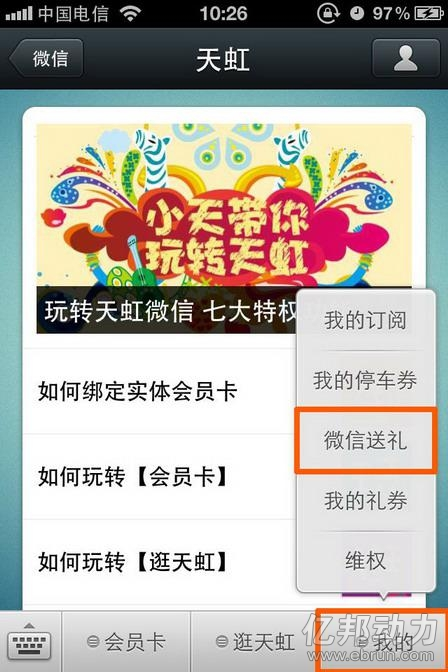 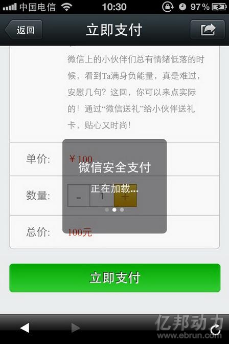 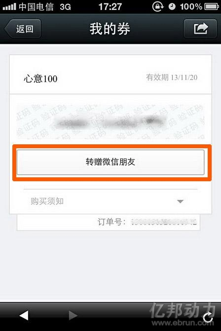由亿邦动力网主办的第八届中国网上零售年会11月28日将在南京举行，拟邀张近东、刘强东、李国庆等电商大佬畅谈分享，大会合作可咨询于宏13522454074。
关注亿邦动力网微信，获取独家新闻，可以点击右上角按钮，选择“查看官方账号”进行关注，或者搜索微信号“iebrun”。
| 互联网 |
乾康（上海）信息技术有限公司 > 互联网 > 微信O2O商家为什么要优惠 |
微信O2O商家为什么要优惠
提问：现在有些商家餐桌上摆了微信二维码，第一次使用扫了以后就可以得到相关优惠（比如 一T可乐之类），但是对于商家而言，他为什么要这样做呢？
如果我是客户，我打算去一家餐馆吃饭，就是吃饭，但是不至于为了扫一罐可乐而去跑 到餐馆去，优惠本身是餐馆中暴露出来的，去了以后才能知道是否有优惠，所以对商家而言存在增加用户量的可能性还是很小的，但是每个来的用户只要用新账号扫 二维码， 就需要付出一罐可乐的成本，没想明白为什么商家要这样做呢？
麻烦请大家都讨论下各种可能性，或者也可以讨论下微信是用什么方法说服商家做这样 的优惠活动的？
补充：
1.这些优惠是否本来就有，这个我没有考虑到，但是我去的那家餐馆是真没有，但其他的是否本来就存在，是值得想想的；
2. 提高自己的曝光率，这点我很怀疑，我的问题里说到了，曝光率是怎样提高？不知道餐馆的人通过其他渠道看到了，于是去了是一种；知道餐馆的人再次回流是一种；
微信的渠道在1.2上做的都不太符合合理，那曝光从何而来呢？
而这样的方式反而会造成一种取巧：
首先，我们已经打算去那家餐馆吃饭了（注意，是已经确定好了，这跟微信的优惠没有关系）；
其次，我们发现餐馆有微信优惠，于是已经扫过的人用马甲再扫一遍，骗个可乐，没扫过的人直接用自己的微信号扫（注意，这里只给微信带来的注册用户）；
最后，餐馆给我们每人一瓶可乐，这对商家是一笔成本消耗。
我们去餐馆不是为了可乐去的，是事先因为餐馆本身去的，微信在我决定去餐馆期间没有给我造成去或不去的影响；最后，客户去餐馆给餐馆带来的一定的成本消耗；
于是，在这种逻辑下的名义上的优惠，我才产生了怀疑。
回答：前一阵子互联网大会上，马化腾宣布微信在O2O方向的布局。紧接着，腾讯生 活电商部的戴志康也在财付通沟通会上发表演讲，阐述了“二维码+账号体系+LBS+支付+关系链”给线下商家带来的改变。就连新锐媒体程苓峰也承认“大众 点评终于有了颤抖的理由”。一时间国内O2O领域的从业者一片风声鹤唳。但就我个人而言，并不看好微信在O2O方向的布局。对此徐某有三点质疑：
1）理想丰满，现实骨感
微信给我们描绘了一个动听的故事就是“商户花钱在线上打广告推广优惠券，优惠券使用条件是到店用微信扫描二维码成为微信会员卡会员。商家通过微信跟用户直接建立联系，媒体中介的价值会萎缩。以后商家广告就直接通过微信精准下发。”故事讲得很棒，但由谁来买单？
微信会员卡只是包装后的概念，本质上就是一个公众账号。没错，现在我关注虎嗅等微信公众账号，但这是由于这些科技媒体每天推送的是对我有价值的内 容。但是我徐某人凭什么去关注一堆商户账号并忍受其推送的广告信息？难道每天睁眼闭眼挤地铁等电梯连去趟洗手间面前都是广告还不够抓狂吗？如果说是为了享 受优惠折扣和会员积分等服务，这种理由就跟从前团购忽悠商户的逻辑一样苍白：商户给出折扣，用户到店消费一次，以后这批人就成你回头客了。其实用户吃完饭 擦擦嘴就去找下一个折扣了——反正做的都是赔钱单，也算取之于民，用之于民。当然，现在用户擦完嘴可能还多一个动作，就是取消微信的账号关注。
其次，媒体中介的价值是那么容易被取代的吗？中介类服务的价值在于对信息做聚合，清理，排序和分类，方便用户在有主动信息需求的时候作出选择。我们 做过的用户研究资料显示，85%的人习惯在有本地消费需求的时候直接上网搜索。试图跳过媒体中介这一层让餐馆和用户直接建立联系的，眼皮底下就有微美食的 例子：依托新浪微博平台对餐馆账号进行托管营销，经营的状况如何大家心里有数。
最后再说微信的优惠券模式。用二维码结算当然方便线上进行统计结算，但是从商户的角度考虑呢？这样不仅要增加硬件采购和人员培训的成本，还会增加逃 单的难度啊亲。先给折扣再分佣金，除了大悦城这种高帅富商户云集有作秀意愿的地段，谁会鸟你？另外，以餐馆为例，由于服务库存有限，越是招牌响亮的餐馆， 在就餐时段的自然上座率就越满，这些商户要么就没有意愿提供优惠券，要么采用价格歧视手段来限制优惠券的使用时间。结果，有条件的商户没意愿，有意愿的商 户没条件，这无疑是优惠券平台的悖论。
最近微信正在猛推公众平台，从社交化网络到社交化媒体的步伐本来就迈的有点快，接下来携财付通雄心勃勃的进军线下打通闭环，想法是好的。不过战线拉得太长，几位事业部带头大哥还要经常在深圳和北京之间来回打飞的，恐怕难以一蹴而就。
2）线下：微信的漫漫江湖路
微信进军O2O问题的本质是，腾讯究竟有没有撬动线下商户的基因和形成闭环的把握？
腾讯的产品经理很懂用户和产品，含着金汤匙出生的微信占尽天时地利人和。但面对O2O这类强运营需求的产品，采用目前的打法，微信是否有点高估线下商户对信息化的接受程度？
仍以餐饮业为例。中国的餐饮行业尚处在一个狂沙漫卷，泥沙俱下的草莽时代，行业缺乏上市龙头企业和并购整合，信息标准化程度低下（看看五花八门的税 控机，POS机，点菜机和CRM系统吧）。摆在商户面前最现实的，并不是营销优化的问题，而是解决明天怎么生存的问题。正因如此，商户黄页信息采集和发布 成为一个又苦又累的生意，在中国的每一个大城市，平均每个月都有接近十分之一的餐馆信息由于倒闭换牌要更新。在有道饭饭，为了给用户提供最准确及时的信息 服务，我们每天都要花费巨大的运营人力成本在餐馆数据的获取，确认和更新上。
从BD的角度，拿下大悦城容易，毕竟有Shopping Mall的招商部门给你对接。剩下几百万的商户该怎么谈？你若能想象县城老家茶楼里的堂倌都能手握扫码器，开着微信气定神闲的站在门口招揽生意，就知道微 信面对的将是怎样一条漫漫江湖路。这种龟速发展方式真的适合微信这样狂飙猛进的富二代吗？不客气的说，按微信目前的玩法，迈向线下的步伐很可能会止步于一 线城市的顶级商圈。某种程度上，徐某倒是觉得，由商户自己来做某些大型连锁品牌的移动应用，反而更加靠谱一些。
其实微信的商业模式完全可以照抄QQ，但若如此，势必和QQ冲突，最终还是一个零和游戏。这种搬起石头砸自己脚的事情百度有啊以前干过，小马哥当然不想重蹈覆辙。先用QQ建立社交关系，再用微信盘活线下消费，这算盘打得噼啪作响。
但进线下，就意味着需要在商户-用户-产品三者之间权衡博弈。雅座CEO白昱在产品家沙龙说过一句话，徐某印象很深刻：不要忘了对于线下商户的客流 而言，互联网起到的作用将永远只是补充。优秀的互联网人在面对中国的商业原生态时，是否有足够的敬畏心，将是这条路能走多远的关键因素。借用刘慈欣在《三 体2——黑暗森林》里的一句话来总结：弱小和无知从来不是生存的障碍，傲慢才是。
3）真开放，还是假开放？
微信产品本身总能让人嗅出一丝隐约的矛盾：一方面，微信开放了API提供给第三方应用，用于在会话中发布来自第三方应用的信息；另一方面，微信的支付平台用了自家的财付通，本地商户平台用了自家的QQ美食，甚至连扫码软件也是自主研发。
这似乎也从一定程度上折射出目前腾讯给人的感觉：明面上拍胸脯说要共建生态，开放共赢，私底下仍是肥水不流外人田，先用流量喂大自家卡位级产品。这 种皮里阳秋的做派不由让人联想起若干年前，恨不得把搜索结果页填满百科，知道和贴吧的百度——可是百度到底也还是玩起开放阿拉丁了。
我们都知道，对原生的移动应用而言，产品辨识度的概念很重要：用户都是在碎片时间使用移动应用，目的性非常明确，如果产品定位不清晰，就很容易错过 用户的使用场景。微信产品本身的核心定位，仍是一个移动互联网的基础通讯社交平台。将来或许还会是社会化媒体平台，这一点毋庸置疑。而如果硬塞进一个”二 维码+账号体系+LBS+支付+关系链“的乱炖概念，敢问微信的产品经理们，你们是真的不担心微信用户会晕菜吗？
传统互联网中举足轻重的链接指向关系，在移动互联时代，其实就演化成应用间开放API的调用关系。从这个角度看来，开放生态，与优秀第三方应用合 作，以微信为核心，一个线上线下联动的平台呼之欲出。毕竟，没有人希望看到一个移动互联的流量黑洞——亲，想想舍弃了谷歌地图后被千夫所指的苹果iOS6 吧。
| 互联网 |
乾康（上海）信息技术有限公司 > 互联网 > 微信银功能全接触 |
微信银功能全接触
科技改变生活。从柜台出发，到网银、电话银行、手机银行再到微信银行，国内商业银行的IT技术正经历着“跳跃式的进化”。7月开始，一家又一家带着不同特色的“微信银行”相继上线令“登陆抢滩战”开打。对于众多银行客户来讲，更为关心的则是“微信银行”的使用方式、技巧，北京商报记者亲身体验了12家开通了微信银行及微信服务平台的商业银行，从功能丰富性以及使用便捷性方面给予大家建议。
功能丰富性
● 信用卡
在微信平台的信用卡服务中，可以分为两类，一类是如招商银行、浦发银行、光大银行、广发银行“微信营业厅”的信用卡系列功能；另一类则是部分没有真正意义上的“微信银行”，而是单独设置的信用卡服务中心，如中信银行、农业银行、平安银行等。
招行、光大、中信银行不仅设置了相应的信用卡余额、账单、积分查询等功能，同时还开设置了快速还款通道。如光大银行可以直接通过身份验证进行信用卡还款，招商银行则跳转至手机银行页面就可以完成快速还款。中国银行、浦发银行、平安银行、华夏银行等主要设置了信用卡账单的查询功能，如浦发银行只需要输入信用卡的后四位就可以直接显示信用卡当期账单欠款。值得一提的是，招商银行及平安银行同时开设了账单分期功能，中信银行则设置了“我要办卡”一栏，可以进行主卡、附属卡等各类卡片在线办理，相关资料完善后，只需等待审核后到柜台确认即可。此外，农业银行的微信服务主要还停留在产品信息、优惠活动介绍等基础功能，而交通银行、民生银行的信用卡功能还处于成长期。
● 理财产品
“签约微信银行，选购自己心仪的理财产品，通过微信直接购买”,部分商业银行的“微信银行”已经可以实现“微理财”服务。北京商报记者注意到，浦发银行、光大银行、招商银行都可以进行理财产品购买，有所区别的是浦发银行及光大银行可以通过微信实现直接购买，招商银行则需要跳转至手机银行页面。
浦发银行及光大银行都需要进行签约才可以完成，在完成购买后，银行客户可以实时查询账户余额、交易明细等信息。值得一提的是，前述三家银行都可以查询理财产品的详细信息，在体验过程中，北京商报记者感觉光大银行产品介绍一览表的设置更加简明、清晰、视觉效果较舒适。
对于安全问题，招商银行、浦发银行及光大银行都需要客户提前进行签约，然后输入相应的卡号、密码才可以购买。
● 特色服务
招商银行设置了转账服务功能及我要贷款页面，只不过转账服务也需要转接至手机银行页面进行，而我要贷款则可以直接填写客户的个人信息，届时会有客户专员直接联系有贷款需求的客户。
更有不少银行表示将进一步优化微信银行的功能，如交通银行微信银行将在近期进一步推出微信银行转接人工服务，提供转账汇款、理财、本地生活、无卡取款、手机充值、信用卡账单和积分查询、信用卡快速还款等服务内容；浦发银行将在近期推出微取款、微支付、微汇款、微融资等功能；广发银行也将陆续涵盖账户查询、还款、投资、贷款、支付等多项业务。
使用便捷性
● 查询服务
本月的信用卡该还多少钱、银行卡账户余额有多少……如今，持卡人通过微信银行就能查询上述信息。北京商报记者调查发现，目前招商银行、交通银行、中信银行信用卡、光大银行、平安银行信用卡、浦发银行、广发银行等微信平台都可查询账单和余额等信息，客户在首次使用时需要先进行银行卡的绑定。
另外，中国银行微银行、工商银行电子银行的微信平台可以提供利率、汇率、黄金白银价格等金融信息；农行的“电子银行微导航”微信账号还提供了“寻找离您最近的十家自助银行”、“离行自助设备吞卡取卡点信息查询”等特色服务。
●网点搜索
几乎所有的客户都碰到过银行网点排队的事，运气差的顾客甚至要等候半小时到一小时， 在银行微信平台上令人最贴心的就是“网点查询”一栏。根据北京商报记者的体验，目前中国银行、招商银行、光大银行、浦发银行都开通了这一服务，不仅可以查询附近银行营业厅网点，还能清楚地看到各类业务窗口排队信息，客户可根据自己时间安排并预约，省去排队。不过在使用上，招商银行需要客户自己选定城市、输入位置关键词，比如“朝阳门”，系统会给出附近网点的位置、排队人数提示，行车及步行路线。而光大银行只需要客户在输入栏点“+”号，再选定位置，手机会自动发送定位信息，客户就可收到附近银行网点的提示。
● 客服咨询
以前遇到业务咨询、吞卡、挂失等问题时，人们往往习惯致电银行客服热线寻求帮助。而微信银行的出现让客户与银行有了另一种沟通方式。
目前的银行微信平台上，有智能客服和在线客服两种模式。智能客服是较为基础的，农业银行、招商银行、平安银行、工商银行、光大银行、交通银行等开通了客服咨询服务的微信平台都可提供。
不过，遇到了复杂的问题时，并非所有的银行都会将智能客服自动转换为人工客服。例如中信银行信用卡微信平台“包打听”就会表示：“您这个问题把包打听问住了，待我再去打听打听下次见面再告诉您！要不您先问点别的吧！”农业银行客服中心虽然会提供在线人工咨询和留言两个选项，但人工服务不是24小时，客户只能选择留言或致电该行客服热线。
● 微信平台体验
互联网金融的快速发展在逼迫着银行不断地改革创新，对于微信银行这样一个争取客户的新的平台，各家商业银行自然不甘落后。曾有业内人士预言，微信将成为银行、基金业的互联网金融实验田。但是对于这一新生事物，各家银行的反应也有不同，目前已拉开较大差距。
招商银行、光大银行、浦发银行和中信银行信用卡的微信平台在同业中领先。而农业银行、民生银行、建设银行、华夏银行等银行还处于测试或整合阶段，尚未形成功能较为完善的微信银行。
个别银行微信平台管理较为混乱，例如在微信查找公众号栏目中搜索某国有大行，会跳出几十个关联公众号，甚至部分账号的名字完全一样，关注后才发现，是一些分行或营业部的账号，容易给客户造成混乱的印象。
| 互联网 |
乾康（上海）信息技术有限公司 > 互联网 > 我国电商发展情况 |
我国电商发展情况
日前，国家商务部新闻办公室在北京召开了主题为“电子商务”的专题新闻发布会。与会领导为商务部新闻发言人姚坚、电子商务和信息化司司长李晋奇以及北京市商务委员会副主任孙尧，三位领导分别做了简短讲话，并答记者问。其中姚坚主要向与会记者介绍了我国电子商务发展的总体情况、主要特点以及未来趋势，李晋奇和孙尧则是分别介绍了商务部和北京市政府对国内电子商务和北京电子商务市场的一些针对性研究以及政策上的引导和部署。
据发布会介绍，今年上半年我国新增网购用户2889万，总数已达2.71亿人。2012年，我国网络零售交易额达1.31万亿元，同比增长67.5%，相当于社会消费品零售总额的6.3%。电子商务和信息化司司长李晋奇发言称，近年随着互联网和电子商务的普及应用，网络零售呈现出快速增长的态势，其主要有以下两个主要特点：一是网购群体和网络零售规模进一步扩大；二是企业更加重视网上业务，电子商务应用更为普及。截至2012年年底，在网上进行采购或销售的企业比例已达32%。中国连锁百强企业中已有62家开展网络零售，经营网店数量超过70家。
限于篇幅，下面选登的是发布会姚坚讲话部分的文字实录。有关该发布会更多详情，如有兴趣可登陆商务部官网进行了解。
姚坚：上午好！欢迎大家出席今天的新闻发布会，我是商务部新闻发言人姚坚，今天我和商务部电子商务和信息化司司长李晋奇、北京市商务委员会副主任孙尧，围绕电子商务的主题向大家重点介绍我国电子商务发展总体情况、商务部和北京市在电子商务领域开展的重点工作情况，并回答大家关心的问题。
下面，我先向大家介绍我国电子商务发展总体情况。
一、我国电子商务发展总体情况
近年来，我国电子商务发展迅速，已经广泛渗透到社会经济生活各个领域，成为企业开拓国内外市场、降低运营成本、提高流通效率的新渠道、消费者便利消费的新选择、政府部门拉动内需、发展经济、优化产业结构的新抓手。2012年，在政府、企业和消费者的共同推动下，我国电子商务交易总额突破8万亿元，达到80163亿元，同比增长31.7%；其中，网络零售额超过1.3万亿元，同比增长67.5%，相当于2012年社会消费品零售总额的6.3%。到2012年底，我国连锁百强流通企业中已有62家开展网络零售业务。今年上半年，在我国零售业增长放缓的形势下，网络零售一枝独秀。据有关机构统计，上半年我国网络零售交易总额超过8800亿元，同比增长超过70%。
电子商务的巨大应用空间也带动了电子商务服务业的快速成长。2012年电子商务服务行业总营收超过2000亿元，成为调整经济结构、转变发展方式的重要动力和促进就业的主要途径之一。此外，电子商务打破时空限制和区域壁垒，集成信息流、资金流和物流，拓展了流通渠道、提高了流通效率、降低了流通成本，促进了统一、规范、诚信的大流通、大市场的形成。
二、近年来我国电子商务发展的主要特点
一是网络购物大面积普及，销售规模增长迅猛。2012年，我国网络零售市场交易规模达到13 110亿元，增速约为当年社会消费品零售总额增长率（14.3%）的4.7倍，较2007年网络零售总额561亿元增长了20多倍。我国在世界电子商务领域的地位得到显著提升。
二是传统商业企业应对网络市场冲击，加大了电子商务转型力度。电子商务的快速发展对传统商业企业影响显著，在苏宁易购、国美商城等零售模式转型的带动下，越来越多的传统商业企业涌入电子商务领域。
三是电子商务服务业初具规模，电子商务生态环境得到改善。以电子商务交易服务为龙头，物流配送、支付、安全和信用认证、软件开发等电子商务服务已经形成规模。电子商务服务业正在创新商业模式、促进发展方式转型，电子商务整体生态环境得到进一步改善。
四是跨境电子商务成为新的发展热点。跨境电子商务在快速增长的同时，对平台、物流、支付结算、海关商检等环节提出新的需求，并引起政府部门的高度重视。模式创新成为跨境电子商务新的增长点。平台企业已超过5000家，我境内通过各类平台开展跨境电子商务业务的企业已超过20万家，2012年我跨境电子商务交易额已达2万亿元。
五是新一代互联网技术推动电子商务跃上新的台阶。云计算已经成为发展电子商务所必需的网络基础设施；同时各大电子商务平台纷纷利用大数据技术进行精细化营销，挖掘新的消费需求，进一步提升客户的服务体验；另外，移动电子商务也成为各大电商平台竞争的新热点，基于智能终端的APP应用已经是电商平台的标准配置。
六是政府引导的电子商务示范工程取得初步成效。商务部联合发展改革委等八部委确定的国家电子商务示范城市、商务部确定的国家电子商务示范基地和示范企业，形成了较为完整的电子商务示范体系，在营造发展环境、推动创新应用、引导企业集聚、促进均衡发展等方面发挥了良好的示范作用。
三、我国电子商务未来发展趋势
虽然我国电子商务发展起步比较晚，同发达国家相比还存在较大差距，但在政府、企业和消费者的共同推动下，我国电子商务将在进一步规范的环境中得到更加快速的发展，并呈现以下四个方面的趋势：
一是实体经济和网络经济融合，成为电子商务的发展方向。电子商务在我国工农业生产、商贸流通、旅游和社区服务等领域中的应用不断拓展和深化。线上和线下融合，线上营销、线下成交或线下体验、线上购买的模式加速形成。随着企业供应链电子商务、国际电子商务的发展，将带动电子商务服务业的发展，并逐步成为国民经济新的增长点。
二是技术、需求与投资推动电子商务快速发展。在云计算、物联网、移动通信等新一轮信息技术革命的驱动下，电子商务将不断创新应用模式，基于移动互联网、网络社区、LBS（基于位置的服务）等新兴模式不断涌现；我国社会结构和消费观念的变革将给电子商务发展带来新空间，年轻一代逐步成为消费主力军；电子商务支撑体系进一步完善，电子商务发展的内生动力持续增强。
三是跨境电子商务成为我国企业寻求海外商机的新选择。随着我国跨境电子商务政策制度环境的逐步完善，在电子商务服务企业的带动下，跨境电子商务将进一步发挥中国制造的产品优势，促进“中国制造”向“中国营销”和“中国创造”加速转变。
四是电子商务应用向新的广度和深度发展。大型企业供应链和商务协同水平不断提高，中小企业积极融入龙头企业电子商务购销体系。电子商务将融合物流供应链，有效地把物流渠道、商业渠道及信息渠道进行捆绑。此外，营销将向精准化方向发展，通过每一个客户在网上的消费，就能够判断消费者真正的需求，从而准确地推荐所需要商品。
| 互联网 |
乾康（上海）信息技术有限公司 > 互联网 > 银行互联网金融O2O降成本 |
银行互联网金融O2O降成本
2013-09-04 李张鲁
ING Direct：银行也开咖啡馆，看看互联网金融O2O有多炫！
【李逵张飞鲁智深：
银行业务大可如此，据称这样的银行面积比传统的小70%，也就200多平米，雇员数下降60%！成本节省非常明显，同时也提高了用户的体验。这虽然让人感觉难以想象银行还能这样运作，但是举一个例子大家可能就豁然开朗了。
是不是更难想象家装材料和家装服务能进行O2O销售？听起来很难，但笔者见过的实创家装（月交易额数亿）和新窝网就都能够实现绝大多数客户来自互联网。它们会将用户引流至线下相对偏僻的门店或合作商处进行交易，购买家装设计套餐和家装材料，实创接近80% （新窝是100%）能够现场第一次完成交易，交易金额在2万以上。银行卖的是虚拟产品，可以说在这一方面还更有空间】
2013-08-31 央行观察
银行开咖啡馆？听起来不靠谱，现实中却发生了。
ING Direct，这家由荷兰国际集团于1997年首创的直销银行，正在以其创新的商业模式颠覆人们对于互联网金融下银行的想象。
ING Direct通过线下的ING咖啡馆支持线上业务。ING Direct在关键城市设立具有理财顾问功能网点，为品牌提供一种线下的真实存在，虽然数量不多，但让消费者处处感觉到了银行的存在：用户可以在实体网点进行休息、与银行客户经理接触，这拉近了银行与客户的距离。更为重要的是，客户们还可以接入网络银行，获得更为广泛的金融服务。
这让人想起了O2O这个炫词，O2O既能是online to offline，也可以做成offline to online。
用工行董事长姜建清的话来说，这种互联网金融应该是“砖头+鼠标”，是线上和线下的有机结合。
央行观察认为，在互联网金融的背景下，银行线下的实体网点以后就是一个服务、销售、展示的平台，客户可在实体网点体会到触手可及的银行服务，但更重要的是，银行可将客户通过实体店的接口引入云端，并在无限的虚拟网络中提供更为广泛的服务销售。
这种路径，给了我们启示，像四大行这样网点众多的银行，在这一波互联网金融的大潮中，如果能有机结合线上线下，又有可能获得先机。
在这方面，ING Direct打开了我们的眼界。
互联网金融的典范：ING Direct
来源：银行家杂志
作者：费晨曦 窦郁宏
ING Direct 是由荷兰国际集团（International Netherlands Groups，2012年全球资产排名第20位）于1997年在加拿大首创的直销银行，大获成功后，迅速向全球多个国家复制。经历2008年金融危机后，ING Direct又逐步收缩，出售了在北美和英国等多处的直销银行业务，专注在欧洲的业务发展。ING Direct的发展历程能为我们探索直销银行的模型提供较为全面和系统的经验。
战略定位
在成立ING Direct前，荷兰国际集团在海外的对公业务和保险业务已经占据一定的市场规模，但尚无零售业务，ING Direct成立的目的就是旨在拓展海外零售业务，成为全球最大的网上银行，支持母公司业务发展。发展初期，在网上仅销售储蓄账户等简单产品，直到近期才在部分市场向全功能银行转型。
ING Direct以长远眼光经营海外市场，通常是在目标国家市场的首位直销银行，三年左右即实现盈亏平衡。
目标客户
ING Direct将目标客户定位为：30～50岁受过良好教育的上班族，已经接受或通过电话、网络理财，收入水平高于市场平均水平，乐于自助理财。从2006年二季度Forrester调研公司在欧洲的调研结果来看，ING Direct成功地实现了目标客户发展目标。
商业模式
产品方面。ING Direct通过简化产品种类和销售过程使金融服务变得简单，同时，也减少了客户对银行服务的需求。正如ING Direct在美国的CEO阿尔卡季•库尔曼（Arkadi Kuhlmann）所指出：“银行的复杂性是不对的，我们主张化繁为简。”ING Direct在产品方面的主要策略可以概括为四方面：一是针对直销渠道提供有限的产品选择，从而使有限的产品选择集中在储蓄产品和部分贷款产品，客户易于尝试，会将ING Direct作为附加账户，不取代消费者的现有账户；二是通过关联即时从活期账户中获取资金，如果需要，则利用联邦快递支票递送给客户；三是专注于简化的“自助”银行产品，可由消费者独立管理，电子账单整合相关账户信息，提供9种不同的共同基金（可基于“保守”、“中等”或“进取”选择不同的组合）；四是没有最低存款要求，降低消费者对存款最低金额的担心。
ING Direct的产品设计从消费者需求出发，并根据渠道特点进行定制。如储蓄账户消费者在获得较高收益的同时，资金也便捷可得，房屋抵押则可为客户提供高达房产价值90%的抵押贷款。在产品组合上，ING Direct从简单的储蓄账户起步，最终扩展到储蓄账户、按揭贷款、股票账户、养老金账户和企业储蓄账户五类，其中，以储蓄账户为主，储蓄约占存款的84%，贷款占利息收入的55%（2006年），代表性产品主要有：一是Orange储蓄账户、Orange电子支票和Orange存单。这几类账户不设起存点，平均可获得活期约1.3%的APY（年收益率），其中，金额在5万美元以内的可享受0.25%的APY，5万美元以上的可享1.5%的APY。这几类账户都是借记卡形式，无法签发支票。若从期限来看，这几类账户期限在6～60个月，期间的APY可达1.25%～1.75%。二是Easy Orange、Orange Mortgage。这被评为“适合储蓄者的按揭贷款”（30年期，前五年享受固定利率还款，每两周还款一次）。提倡“根据您的需求度身定制按揭方案”。三是Share Builder（股票投资账户）、儿童账户。这类账户购股费用低至4美元，不设最低账户金额。签约即赠50美元。四是企业储蓄账户、企业存单、Share Builder 401K（养老保险）。其特点是，1.15%的APY，24个月的存单可享1.5%的APY（接近消费贷款利率），定位于为小微企业制定简单的低成本养老金计划。五是IRA（个人退休账户）和Rollovers（转滚法，用旧债券购买新债券）。产品包括投资股票、对冲基金、ETF（交易型开放式指数基金）产品或FDIC（联邦存款保险公司）保险储蓄、存单等。可将401(k)或403(b)累积到IRA。
品牌营销方面。ING Direct品牌建设强调与行业传统模式的脱离，并紧密围绕这一不同与市场沟通，以大胆、动态、活力和新鲜的姿态呼吁公众储蓄。实践中，通过线下的ING咖啡馆支持线上业务。ING Direct在关键城市设立具有理财顾问功能的开发网，为品牌提供一种线下的真实存在，虽然数量不多，但咖啡馆所在之处都可以让消费者感觉到该银行“确实”是低成本，主要特色有：色彩明亮温暖并传递现代、创新和焕然一新的品牌形象；通过计算机终端，消费者可以登陆账户，咖啡吧提供免费的互联网接入；将咖啡吧店员培训为金融顾问，能够以没有术语的方式与客户沟通对话，提供产品建议；咖啡吧提供品牌标示的纪念品，并可以出租，以在更广范围内推广ING Direct品牌。
ING Direct营销致力于传递为客户带来的收益，包括技术、体验和情感三方面。在技术层面的收益主要有：利率高，开户便捷，5分钟即可设置；储蓄没有最低存款金额限制，无储蓄/存单费用；服务手段则可通过网络和电话处理，通过与活期账户关联获取资金；如果有线下服务需求，也可与顾问在咖啡馆会面；安全无忧，储蓄在联邦存款保险公司有保险保障。在体验层面的收益主要有：为客户提供优惠费率，不必担心最低限额要求；快速和方便地访问信息和设置；通过与活期账户关联获取，易于尝试；信任存款安全。在情感层面的收益主要有：聪明/明智——赚取高额年化利率，可在有限产品范围迅速作出决定；现代/年轻——远离传统银行传统模式；自信——方便、快捷的界面，使用简单；不必担心产品决策，容易理解。
采用直复营销、游击营销和口碑营销相结合的方式推广。ING Direct除采用线上广告、直投邮件等传统的直复营销方式，在进入部分新市场（如美国）时，采用地铁免票等方式进行游击战式的营销，制造话题，打开知名度。
ING Direct通过良好的客户体验，在现有客户中赢得了非常好的口碑，客户的满意度高达90%。进而通过客户转介获得大量新的客户，有40%的新客户由老客户推荐而来。
服务方面。ING Direct的服务以网上自助服务为主，同时提供全系列的远程服务，包括邮件、7天24的电话服务和网上的实时聊天服务。如在加拿大的服务团队所宣传的那样，他们保证其服务：“大有帮助、真实诚恳、棒极了！”
盈利与运营模式
IND Direct仅通过网络和电话服务客户，因此有较低的获得成本和账户维护成本，获得的储蓄前期通过投资资本市场获利，后期致力于开展线上的个人贷款，努力通过内部循环维持高利息收入。
ING Direct建立了独立于母公司的实体以实现品牌和文化自主。管理架构方面：ING Direct是独立于母公司的实体，这种构架允许ING Direct以比被母公司控制所允许的更快速度对资产与负债利差进行控制；ING Direct组织作为全球性的实体，同母公司组织以地区架构相比，可以更容易地在全球范围共享最佳实践。在品牌推广方面。广告宣传由独立于母公司的代理机构管理。与ING Direct作为较大组织的一部分不同，这种独立的代理机构完全专注于ING Direct的需要，允许广告宣传方式针对ING Direct渠道调整（而不是针对母公司渠道）。广告定位也将自身定位为传统金融机构的“反面”，采用幽默、反传统的基调，同时与其强调全面金融服务供应的广告相对应。在文化建设方面：ING Direct采用开放式办公空间结构，鼓励对话，被称为“乐园”。ING Direct的员工“积极、充满热情”，关注“做正确的事”，为消费者提供更好的回报和服务，员工加入并留在ING Direct，因为“将有机会在强大的商业模式下、在‘非银行’文化氛围中工作，并有机会实现快速成长”。各个运营中心相互竞争，竞相实现服务和销售目标。在激励方面，则是为员工提供高于市场工资的现金奖励。
发展历程总结
此次金融危机后，荷兰国际集团分拆为保险和银行两大板块，其中，银行板块在全球有三种业务模式：在比利时、荷兰和卢森堡的经济联盟模式，新兴市场模式和在大型成熟市场的有机增长的ING Direct模式。
荷兰国际集团从2005年开始推动由三种模型向一种模型转化，强调如下两大原则：一是面向客户：简单和公平。包括：建立以客户为中心的文化，关爱客户；以数量有限、透明的产品满足所有客户需求；一贯公平的定价；以客户为中心的流程管理具有简洁流畅的突破性特征；在可能的情况下采用直接渠道，在需要时提供建议。二是内部运营：强大的低成本模式，稳定的业务。包括：卓越的品牌，客户的首要选择；有吸引力的客户细分，偏向直接渠道、低信贷风险；简化产品范围；专注于直接渠道；流程卓越运营、低成本。
在这两大原则下，荷兰国际集团的传统银行模式和直销银行模式正在互相趋近，在比利时、荷兰和卢森堡的经济联盟的传统全能银行减少产品供应。以在荷兰为例，在整合前提供62种产品，在整合后压缩到20种，目前已经进一步压缩到8种。同时，传统全能银行业开始大力发展线上销售业务，在比利时，三年内将储蓄产品和银行卡产品的线上销售比例提高10个百分点（2009年到2011年）。
与此同时，ING Direct在部分市场开始完善产品供应，力求成为客户的主要银行，在西班牙、德国、意大利和澳大利亚等国家逐步推出支付账户，同时，在部分地区的线下建立精简网络，在西班牙建立29家精简版分行网络以覆盖西班牙83%的人口，并于2011年在意大利开设了7家分行。
毋庸置疑，互联网金融时代对监管带来了前所未有的考验。通过借鉴荷兰国际集团旗下的ING Direct的商业模式，对我国金融同业借鉴国外网上银行发展的先进经验，发展各自网上银行业务希冀有所启迪。
| 互联网 |
乾康（上海）信息技术有限公司 > 互联网 > 银行如何应对互联网时代 |
银行如何应对互联网时代
在汹涌而至的互联网大潮之下，不论是互联网企业从事金融业务，还是银行等金融企业进入互联网领域，谋求的都是协同效应，而非简单的多元化。事实上，由于企业文化和业务性质的巨大差异，两者进入对方的绝对优势领域反而都会有明显的不适应。因此，银行与互联网企业在两个优势领域的交叠部分才是双方直接冲突的战场。其中，双边平台的竞争处于最核心的地位，没有平台资源的企业想要构建自己的平台，而拥有平台资源的企业则谋求建立自己的支付、贷款等功能。
双方的争夺主要集中在交叠的部分
金融机构的优势领域
存款、现金业务、国际结算、中低风险贷款、托管、投资、投行、复杂金融产品的销售、信托等
双方交叠的战场
互联网双边平台的建设、小微贷款和消费贷款、线上支付、代收代付、保险保障、担保承诺、经纪、简单金融产品的销售
互联网企业的优势领域
软件开发和出售、硬件设备的生产、处于初创期的新技术和新模式开发
由此可见，银行和互联网企业都希望能够在双方交叠的部分取得更多的市场和利益。然而，如果自身实力不足的情况下，继续保持“赢者通吃”的游戏规则的话，双方竞争的结果会变得非常的惨烈。所以对于非重量级的金融和互联网企业来说，面临的最优博弈策略却并非是自己独立开发和运营对方的优势项目，而是合作和外包。因此，对于一些中小银行来说，扔掉包袱，抓住时机，适时地与牢牢掌握网络入口及流量命脉的“BAT”类的互联网企业建立合作，利用他们的平台获客功能，加上自身良好的金融服务业务，优势互补、合作共赢，不失为一个理想又现实的选择。
当然，除了小银行以外，多数大中型银行还是会持续打造自己的电商平台。由“目前16家上市银行中的14家都已经拥有了自己的双边平台”的发展趋势足以说明互联网的竞争激烈程度可见一斑。但要如何理清和挖掘现有的数据，打造自己独特的金融互联网模式，建立属于自己的网络化核心竞争力，实现差异化优势还是需要狠下一番苦心。
虽然银行被动进驻互联网行业打造自己的平台能否取得客户认可不得而知，但是只要立足于银行庞大的客户群，本着为客户提供更好的服务角度，尤其是客户基数极大的银行，在银行的客户体系内形成资源的充分挖掘和使用，也未必不是不可行的道路，或许规模未必能做的很大，但是精细化生产之后的效益也会非常的明显，把最终的目标定位于优化银行生态体系，为客户提供更好的差异化服务，提高客户的粘性，而未必要电商盈利从而让客户更喜欢停留在银行体系内，如果真能以这个为目标精耕细作，或许也是条道路也未尝不可。
此外，在互联网技术大发展的年代，银行不仅要跟互联网企业争夺客户与市场，还要继续跟具备网络实力的银行进行争夺，在这个过程中，更好的应用互联网技术，融合互联网思维的金融机构，可能会有竞争性优势，因此如何实现这个转变，可能是未来银行业要去仔细考虑的核心点。综合以上所述，对于目前在互联网金融中间战场地带角逐中处于明显被动防守状态的银行来说，若要打造和发展自己的互联网金融模式，希望达到一定的优势，可以从以下几个方面着手：
一、提升互联网金融发展的战略地位
在互联网企业金融渠道的冲击下，各大商业银行应尽最大可能将互联网金融上升到全行发展战略的层面，而非仅仅是年度工作报告中的一个小项目。银行管理层需要认识到的是，中国经济在日益互联网化，仅就现状来看，银行在互联网经济中的竞争地位就已经明显不如线下经济，而且互联网企业还在不断拉大对银行的竞争优势。互联网企业的平台在快速做大，相对于银行的先发优势在迅速积累。更何况有互联网企业已经实现上百亿的年利润，有些企业的股票市值已经超过部分银行。留给银行的空间和胜算也在随着时间而流逝。
二、加大互联网资源投入
目前，许多银行仍然在享受着高达20%左右的净资产收益率，而互联网业务是未来的增长点。用现金牛业务支持增长型业务，这是战略管理中一个很浅显的结论。目前银行仍有足够的财务实力参与竞争：若某家大行将每年在互联网金融上的投入增加20亿，这将仅降低银行利润不到1%，但就足以形成显著的优势（而阿里巴巴[微博]2011年全部的营业支出也只有47个亿）。此外，商业银行还拥有巨大的客户基础，若能够动员这些企业客户加入银行的互联网平台，就有望明显强化跨边网络外部性。
三、建立更具独立性的组织结构
从民生电商、陆金所的组织模式来看，这种做法还是值得其他银行效仿的。这种架构一是解决了合规性问题，使得未来的发展空间不再受到银行业务范围的限制；二是解决了企业文化的冲突问题；三则可能突破银行的考核和薪酬体制，提供更有效的激励机制。即使是继续放在银行体系内，中资银行仍应通过更多地授权来降低银行既有的文化和考核、薪酬对互联网金融板块的制约。
四、品牌形象内涵的重新定位
由于过去国内多数银行的品牌形象并不突出，这对网络宣传较为不利。一来高度重叠缺乏辨识度，二来稳重有余而时尚感太差，三者不够立体和丰满，这些都会影响到对目标互联网客群的营销。如我国大部分银行的LOGO都是高度同质化的：红色、蓝色或者绿色的圆。
LOGO的高度同质化反映的是多重原因作用下，中国的银行不敢有特色。这似乎是出于这样一种担忧：一旦选择了某种个性，就意味着需要放弃一部分市场。但事实上商业模式本来就是不舍不得，任何一家银行都不可能在所有细分市场上都赢得绝对优势，而不敢放弃在外围市场上的资源投入，就不可能在核心目标市场上扩大优势。而在互联网领域，没有特色就更意味着被取代。
如果国内的银行对于全面更改品牌形象、LOGO和品牌内涵心存顾虑，那么完全可以考虑另一个替代方案，即推出互联网金融子品牌。这个子品牌不仅可以有全新的LOGO、口号和品牌形象，更可尝试推出吉祥物乃至于固定品牌代言人，让品牌建设更加丰满立体，最终目标是明显强化对目标客群的吸引力。
五、充分尊重互联网精神，遵循双边市场商业模式
1、设立?独立域名。在全新的子品牌下，银行的互联网平台应尽可能采取便于传播的独立域名。
2、按客户需求组织页面。
3、激发单边网络外部性。不论是评价、信用评级、论坛或其他形式，银行应尽可能地为客户间的直接或间接交流创造便利。
4、?对其他银行的客户开放。我们不认为这方面存在着技术或者监管的问题，善融商务、交博汇等已经实现了这一功能。
5、?在可能的情况下，可考虑与其他银行机构建立互联网金融联盟。
六、专业化和细分化
若无法在通用型的平台竞争中成为主要选手，银行也可以选择一些细分市场和专业领域。例如为某些产业链构建交易平台等，这样可以在很大程度上避开竞争压力。例如平安银行(13.47, 0.78, 6.15%)与eBay[微博]的合作也是非常重要的选择。
总而言之，互联网金融给银行业带来的既是挑战也是机遇。认识不足、行动迟缓的银行未来将面临越来越窘迫的竞争局面：平台建设的后发劣势日益难以扭转。而对于成功把握互联网金融趋势的银行来说，接触客户的渠道能力将显著增强，其信用风险管理等业务能力将持续受益于大数据技术，从而帮助其深挖小微贷款和消费信贷这些蓝海业务的机会。目前互联网金融的竞争刚刚拉开帷幕，我们也难以判断中间战场的胜负输赢。但互联网金融历史性地提供了又一个银行业内的优胜劣汰筛选机制，通常来说这种机制会对更为市场化的银行有利。当然，如果自身实力不足时，选择与平台型电商企业合作，进行产业链式的嵌入发展也不失为一种互惠共赢的发展模式。
| 互联网 |
乾康（上海）信息技术有限公司 > 互联网 > 中国线上P2P模式分类 影响及未来发展趋势 |
中国线上P2P模式分类 影响及未来发展趋势
P2P定义及模式分析
P2P（PeertoPeer）原本是计算机网络中的概念，指互联网对等实体间的信息交互方式。2005年，应该出现了将这种信息交互方式运用到借贷方面的企业--由该企业在网络上提供平台，使零售贷款的供求信息能够交流，并促成交易。之后，该中模式得到迅速推广，成就了以Zopa、LengdingClub、Prosper等系列企业。随后，该种模式传入国内，其核心模式是有贷款需求的人和有借款需求的人通过平台企业交互供需信息，并达成交易，平台企业在整个交易过程中提供一系列辅助服务并收取服务费。线上P2P。其定义为：依靠资金中介通过互联网未借贷双方提供的居间服务，促进的借贷交易。
虽然P2P的本质是民间借贷，属于贷款范畴。但比起一般的民间借贷和银行贷款，有着其自生的特点，主要表现在以下四个方面：
关系扁平化
相比传统的民间借贷，P2P的最大特点是点对点，即最终资金供给方和最终资金需求方直接建立借贷关系，资金链条较短，借贷关系扁平化。这又两个好处：第一，不存在多次的借贷关系，最终的资金供给方有可能取得更高的利率，最终的资金需求方有可能以较低的利率获得资金，提高了借贷低效率；第二，不存在参与到借贷关系中的信用中介，没有由于信用中介资金链断裂而触发的整个借贷体系的风险。
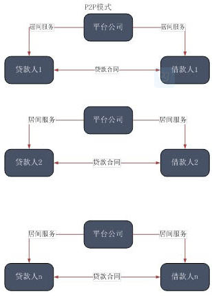 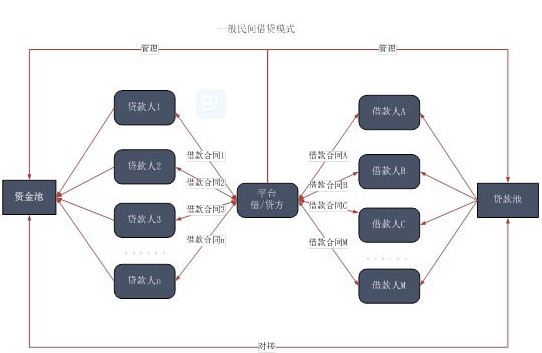图表1：P2P与一般民间借贷模式比较
信息透明化
P2P的第二个特点是以网络为中介，可以突破信息传递的时间和空间限制，其导致的最直接结果就是信息相对透明，借贷双方撮合效率提高，撮合时间缩短。并且，信息能在借贷双方之间直接传递，少去了中间环节，可以避免信息在传递过程中的失真。
信贷理财化
P2P的贷款人借出资金是为了理财的需要，这是整个民间借贷近年来的发展趋势。在传统的银行借贷关系中，储户将资金存到银行，是为了储存资金，在传统的民间借贷关系中，大多数贷款人是出于亲缘关系、地缘关系或业缘关系出借资金，借出资金的第一目的是为了维护关系而非资金增值。而P2P则不然--借贷双方通过网络建立关系，贷款人借款的目的就是为了资金的增值，实际上是将借贷作为理财的工具。
利率市场化
P2P的利率由两种确定方式，一是在有担保的情况下，贷款人获得利率由担保方确定，借款人付出的资金成本等于贷款人获得利率加上风险报酬；二是在无担保的情况下，借贷利率由借贷双方竞价确定。无论哪种确定方式，利率都是市场资金真实价格的反应。
P2P的分类
实际上，P2P是金融脱媒在互联网上的延伸--作为居间方的平台，并不从贷款人处借得资金，也不向借款人发放贷款，而是只从事居间业务，实际上是把银行的存贷间接融资转换成了融资。正是因为如此，贷款人的风险主要是来源于借款人的信用风险。在国外，个人征信体系和企业征信体系比较完备，贷款人可以通过查询借款人的过往征信信息大致判断出交易对手的信用风险。而在国内这种对贷款风险的判断方式则相形见绌。为了促进交易，部分居间平台引入了第三方担保，通常是由专业的担保公司为借款人提供连带责任担保，这样，P2P可以分为两类：有担保模式和无担保模式。
担保模式P2P
模式成功案例
国内的担保模式P2P起步比无担保模式晚，但自2012年来发展迅猛。此种模式的代表便是平安集团旗下的陆家嘴金融交易所（以下简称"陆金所"）的"稳盈-安e贷"。其运作方式如下图：
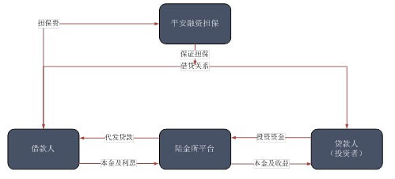图表2：陆金所之模式运作图
平安融资担保是平安旗下专门为陆金所"稳盈-安e贷"业务提供连带责任担保的专业融资型担保公司。其主要靠项目评审、收取担保费维持运营。根据项目质量的不同，担保公司收取高低不等的担保费，而贷款人通过陆金所平台支付给贷款人的利息是一定的--目前都为基准贷款利率上浮40%。实际上，在此模式中，借款人相当于只获得了无风险报酬率。
模式特征分析
担保模式P2P有以下几个特点：
信用风险由担保人承担
传统的民间借贷，交易对手的信用风险都由贷款人承担，即便采用了担保措施，交易对手的信用风险主要还是由贷款人本身承担。而在担保模式P2P中，承担借款人信用风险的主要不是贷款人，而是担保人，很多交易平台都规定"所有稳盈-安e贷均由中国平安旗下担保公司承担担保责任。若借款方未能履行还款责任，担保公司将对未被偿还的剩余本金和截止到代偿日的全部应还未还利息与罚息进行全额偿付"。
风险报酬非贷款人享有
因为借款人的信用风险主要由担保方承担，所以贷款的风险报酬主要也由担保方所有，而非贷款人所有。实际上，在担保模式P2P中，无论贷款项目风险如何，贷款人一般只获得一个固定的利率，而贷款项目的风险溢价则以浮动担保费或服务费的形式由归保方所有。
运行机制类似存贷业务
由于此类模式的担保人一般实力比较雄厚（如陆金所实际上是大型金融集团的子公司），经过担保人连带责任担保的债权一般不会让贷款人蒙受损失--贷款人承担的风险很小，所有的风险都集中在担保人身上--如果仅就这点出发，这种模式则类似于银行的存贷业务，贷款人相当于银行储户，担保人相当于银行，整个运作机制类似于银行的存贷业务。这种类似导致了两个后果：第一，P2P借款客户的风险偏好属性类似于银行存款客户的风险偏好属性；第二，P2P平台包括担保公司的运作平台化，不再是单纯的居间方，经营风险提升。
未来发展趋势
P2P在引入了担保后，发生了很较大转变。我们预计，在未来，有担保模式的p2p会在以下几个方面发生变化：
从零售贷款走向批发贷款
传统意义上的P2P，主要运用领域是零售贷款--这种特征很大程度上是囿于贷款人对项目的认知不同，做出是否贷款的判断也不相同，单个项目的贷款金额无法做大，并且，由于缺乏必要的风控措施，投资者为了分散风险，不得不限制自身单个项目的投资金额。而引入强有力的担保方解决了这个问题，不排除部分批发贷款，尤其是项目贷款运用P2P的模式，线上筹集资金--当然，担保公司对此类贷款的审核有可能在线下进行。
从民间借贷走向银行业务
前面已经提到，担保模式P2P已经类似于存贷业务，如果这类业务继续膨胀，势必要求平台机构和担保机构规范化、制度化经营程度提升，这即可能使得业务更类似于银行业务，而部分顶级的平台机构和担保机构，则有可能成为中国首批虚拟银行（virtualbanks，只提供线上服务的银行）。
平台机构和担保机构大型化
此外，由于业务量的扩张，特别是各类P2P机构在批发业务方面的竞争，在实际上将耗费大量资本--以此证明自己有能力为这些贷款担保。这样的后果是平台机构和担保机构需要夯实自身的资本实力，并扩展自己的销售端，在行业迅速发展期，大则不倒（tobigtofall）的法则将适用，机构的大型化将不可避免。
模式对银行的影响
担保模式P2P对银行的影响较大，在资金端，由于有强有力的担保，资金供给方会发现投资的风险不大，与银行存款和银行理财产品比较类似--而P2P的收益则明显高于以上两类产品。在利率未完全市场化的情况下，银行要提高自己的竞争力，必须依靠发行理财产品，而理财产品又受到了"8号文"等限制，不能全部投资于非标准债权，故在这一点上，受到的冲击较多。从客户分布上看，新富人群、年轻群体由于对互联网比较熟悉、接受程度比较高，会受到更大的影响。而这些群体，恰恰是银行低起点理财产品的投资者和目标客户。
在资产端，由于P2P的零售贷款标准略低于银行标准，故在零售贷款领域，银行受到的冲击不大。但在批发贷款领域，P2P将来会大力发展，而P2P审批的快捷性对使银行的非标准债权理财构成竞争。
无担保模式P2P
无担保模式提供信息居间服务--即提供信息平台，借款人将资金需求信息放在网络平台上，贷款人获得信息后决定投资，通过网络平台确认相关关系，再通过第三方支付平台完成资金的划拨。应该说，这样的模式最有利于贷款平台的稳
模式特征分析
无独立的担保措施
风险备用金账户看上去与担保公司作用相当，实际上则完全不同，具体表现在从资金的提供方、保障范围、资金来源、失效条件和法律性质等五个方面。虽然风险准备金账户能起到一定风险控制作用，但并不是典型意义上的担保措施，其对贷款人的保障力度也较小。
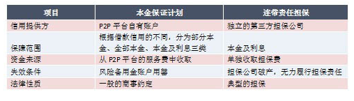图表2：风险备用金账户与连带责任担保的区别
此外，担保服务与居间业务都由平台公司提供，这有可能使平台公司在经营上处于两难：如果偏重业务，则风险准备金账户很可能被用罄，最终影响到业务的发展；如果偏重风控，则有可能将借款人的融资成本增加，最终也会影响到业务--实际上，此种模式将本应该属于两个企业提供的服务化为一个企业提供，对平台企业的定价能力、内部控制都提出更高要求。
贷款利息完全归借款人所有
由于本金保证计划等措施不能完全承担借款人信用风险，大部分信用风险仍然由贷款人承担，故借款人付出的利息都归贷款人所有，平台公司的风险补偿由贷款费用承担。贷款利息都归贷款人所有，会造成不同贷款的利率不一样--这实际上是将借款人、贷款人分别作了市场细分，高风险承受能力的贷款人对应信用不佳的借款人和风险较高的贷款，低风险承受能力的贷款人对应信用优良的借款人和风险较低的贷款，这有助于提高整个平台的效率。
平台运营风险较大
目前，无担保模式为了与有担保模式竞争，多数引入了本金保障计划机制。为了业务发展，部分P2P平台机构展业比较激进，对不良类贷款实行通融赔付，大大超过自身的承受能力。甚至，部分没有本金保障计划机制的平台，也对不良类贷款进行赔付。赔付的增多让平台机构进一步铤而走险，这些都加重了平台的运营风险。如优易贷、安泰卓越、众贷网、城乡贷、众贷网一批平台机构轰然倒下。
未来发展趋势
经历了2012年的倒闭潮之后，无担保P2P模式正处在行业发展的转型期。我们认为，该模式未来发展会呈现如下三个趋势：
注重本金安全
这个需求主要是由投资者发出的。在经历了P2P平台破产、投资血本无归之后，投资者更加关注投资的安全--担保模式的兴起、诸如本金保障计划等措施的推广使用都是对这种重视的直接回应。预计这种重视会越来越受到P2P平台公司的注意，迫使其在设计产品的时候更注重投资者的投资安全。在早期，这种注重可能更多的会体现在产品结构方面，而在后期，可能会转移到借款人的资信上来。
内部治理结构完善
注重安全不仅要注重投资安全，更重要的是注重P2P平台的运行安全。目前，监管层对网络金融已经有收编意图，在市场要求和监管介入的情况下，P2P行业有可能建立起自身的公司治理结构、内控制度和风险控制制度标准，促使整个行业内部治理结构的优化。
行业迎来一个重组期
在各机构注重本金安全和内部控制过程中，在监管当局介入网络金融的条件下，现在运转不是很透明的无担保模式P2P将迎来一次重组--风控能力弱、内部控制松散、经营思路激进的公司可能将被市场淘汰，而风控能力强、内部控制严格、经营思路稳健的公司将最终胜出。在此期间，可能部分投资者会蒙受损失。
模式对银行的影响
由于商业银行的存款客户和理财客户一般是风险厌恶者，而无担保模式的P2P投资者风险偏好程度较高，故无担保模式P2P对银行的存款和理财这两大零售业务影响不大。其对银行零售影响最大的应该是股票基金代销业务、集合信托产品推介业务等。从资产端来看，由于此模式利率完全由借贷双方撮合决定，不排除有较优质的零售贷款借款人为了借款方便将P2P作为银行贷款的替代。
| 行业快讯 |
乾康（上海）信息技术有限公司 > 金融咨询 >行业快讯 |
|
大数据时代来临了
|
2013-11-19 |
|
德国“直销银行”发展状况的分析及启示
|
2013-11-19 |
|
第三方支付的机会外贸结汇代理
|
2013-11-19 |
|
第三方支付行业报告
|
2013-11-19 |
|
复活的支付宝POS机及其野心
|
2013-11-19 |
|
管理层饥渴企业才能求变成功
|
2013-11-19 |
|
看马云如何“抢劫”银行
|
2013-11-19 |
|
马化腾谈产品设计核心要做到极致
|
2013-11-19 |
|
浅谈卡卡联的发展方向 银联亲儿子也得自己长
|
2013-11-19 |
|
腾讯1000亿美金下的成绩与危机感
|
2013-11-19 |
|
预付卡企业转战个人市场 信用卡与预付卡谋联合
|
2013-11-19 |
|
支付宝与银联正面交火
|
2013-11-19 |
|
支付产品重启线下争夺战
|
2013-11-19 |
|
专业解析线下支付和线上支付
|
2013-11-19 |
| 行业快讯 |
乾康（上海）信息技术有限公司 > 行业快讯 > 大数据时代来临了 |
大数据时代来临了
一
PRADA在纽约的旗舰店。每件衣服上都有RFID码。每当一个顾客拿起一件PRADA进试衣间，RFID会被自动识别，试衣间里的屏幕会自动播放模特穿着这件衣服走台步的视频。人一看见模特，就会下意识里美化自己。
同时，数据会传至PRADA总部。每一件衣服在哪个城市哪个旗舰店什么时间被拿进试衣间停留多长时间，数据都被存储起来加以分析。如果有一件衣服销量很低，以往的作法是直接干掉。但如果RFID传回的数据显示这件衣服虽然销量低，但进试衣间的次数多。那就能说明一些问题。也许这件衣服的下场就会截然不同。
奢侈品们利用前沿科技的方法是不是在情理之中，又在意料之外？
二
泰国有一家能容纳5000人同时就餐的餐厅。相当大。它的菜单很像北京市的黄页，相当厚，光是中国菜里的川菜就有三个类别。如果在一家小餐馆，你点了麻婆豆腐和回锅肉，这两道菜几乎同时端上桌，你不会感到惊讶。但在这家泰国餐厅，你若点了日本料理和麻婆豆腐，也几乎是同时端上桌，味道也相当地道。你就不得不惊讶了。
它怎么做到的？
在厨房。有来自不同国家的很多厨师。每个厨师面前都有一个显示屏幕，告诉厨师现在该做那一道菜。你吃的日本料理和麻婆豆腐是由两个隔得很远的也许根本不相识的两个厨师做出来的。
为保证两道菜同时上，系统会自动计算，若日本料理需要1小时，而麻婆豆腐需要10分钟。那系统会在第一时间通知日本厨师做料理，而在50分钟后通知中国厨师做豆腐。以使两道菜几乎同时出炉。
三
有一个银行的呼叫中心。接线员面前也有一个电脑屏幕。上面有一条线。出现在这条线上面的点，表示该用户能为银行带来足够的利润。出现在这条线下面的点，表示该用户不能为银行带来足够利润。
当一个电话打进来，用户说，另外一家银行给我50％的优惠要我成为它的用户。接线员会看到这位用户的那个点位于屏幕的哪个位置。若位于下面，接线员会说：好吧，那就注销你的帐号吧，祝你一路顺风。若位于上面，接线员会说：我跟客户经理商量了，我们会给你更大的折扣，请你留下来。
呼叫中心就是利润中心。
四
UPS从快递业进入金融业。
传统上，一个包裹从厂商仓库里寄出来到被用户签收，中间需要银行的担保。只有当用户签收确认后，钱才会付给厂商。而通常这会耗费2周时间。
UPS可以告诉厂商，我不需要2周、而只需要2天就把钱付给你。厂商就会开心。UPS之所以能做到这一点，是因为它是第一个知道货物被寄出、货物被用户签收的。通常，UPS去接货要做的第一个动作就是扫描条形码。UPS送货完成要做的最后一个动作也是扫描条形码。
有了金融服务。UPS在快递业的优势将进一步加深。而且UPS还多了一块收入和利润。
五
传统商业模式必须二选一：要么满足广度，要么满足深度。比如，制药商是满足广度，一种感冒药可以治愈所有人的感冒。家庭医生是满足深度，一个医生只能为少数人的提供家庭咨询服务。广度和深度不可兼得。
但技术会改变这一点。基因药物将使大制药商既能满足深度，也能满足广度。因为它们可以向每一个患者提供为他们单独定制的带有他们自己的基因代码的基因药物。
媒体也是这样。微博既满足了广度，为所有人提供资讯，也满足了深度，所有人的资讯都是不一样的，个性化的。而且，无论其广度还是深度超过了之前所有的媒体形式。
六
西班牙的服装品牌ZARA，把设计和生产周期缩短到2周。并且每一个设计只生产很少的数量。这使得盗版难以为继。
之前，设计和量产的周期是几个月。当模特在T型台上走台步时，盗版就开始运作。等到服装量产出来上市，大街上已有人穿着盗版服装。再也没有人对这些服装感兴趣了。这是对时装业的打击。
但 ZARA依靠强大的IT系统，解决了这个问题。现在ZARA老板是西班牙的首富。
七
比科技创新对商业的影响程度更大的，是社会问题。
人口老龄化且分布不均。2050年，俄罗斯人口会萎缩33％，意大利萎缩40％。中东人口会增长2倍。老年人的数量第一次超过年轻人。
八1每小时就有数千人死于与水污染相关的疾病。
2000年以后出生的小孩，平均寿命是120岁。
欧洲很多国家都会破产。因为它们没料到人的寿命会大幅增加。它们之前是按照平均寿命80岁来制定保险和福利计划的。但当这些人要多活20年，一切都变了。
| 行业快讯 |
乾康（上海）信息技术有限公司 > 行业快讯 > 德国“直销银行”发展状况的分析及启示 |
德国“直销银行”发展状况的分析及启示
【导读】互联网的出现，为“直销银行”的发展创造了巨大空间。随着互联网技术和电子商务模式的日益成熟，原本在德国一直“默默无闻”的“直销银行”近几年异军突起，市场份额迅速扩大，受到了业界内外广泛关注。本文从分析德国“直销银行”的发展状况和特点入手，阐述“直销银行”在中国已经具备了比较充分的业务基础和技术条件，探讨了中国银行业在未来发展“直销银行”的可能性，为银行界进行业务拓展、区域扩张和寻求利润增长提供新的思路。
【正文】“直销银行”（Direcktbank）在德国并非新生事物，只不过其业务规模较小，品牌影响力有限，多年来并未引起人们足够重视。近几年，随着互联网技术的日益成熟和电子商务模式被越来越多的人所接受，“直销银行”在德国迅猛发展，市场份额迅速扩大，已经成为传统实体银行不敢小觑的竞争对手。
所谓“直销银行”，是指几乎不设立实体业务网点，而是通过信件、电话、传真、互联网及互动电视等媒介工具，实现业务中心与终端客户直接进行业务往来的银行。尽管传统银行已经广泛采用了信件、电话、互联网等营销手段，设立了“电话银行”、“网上银行”等业务模式，但是这些营销方式对于传统实体银行而言，仅是其庞大实体网络的辅助和补充，并没有脱离实体网络而独立存在。“直销银行”，则是具有独立法人资格的组织，其业务拓展不以实体网点和物理柜台为基础，因此具有机构少、人员精、成本小等显著特点，而且通常能够为顾客提供比传统银行更优惠的利率和费用更低廉的金融产品及服务。
一、德国“直销银行”发展概况
德国“直销银行”发展概况德国“直销银行”的诞生可以追溯至1965年在法兰克福成立的“储蓄与财富银行（BSV）”，该银行也是现在欧洲最大的“直销银行”——荷兰国际直销银行（ING-DiBa）的前身。在互联网出现之前，“直销银行”在德国并未受到太多关注，发展进程一直比较缓慢。自上世纪90年代以来，随着互联网的普及，“直销银行”异军突起，特别是受到了具有较高学历的年轻人的欢迎，市场份额迅速扩大。至2007年4月，德国“直销银行”的客户数目已经达到了980万，约占德国银行市场份额的四分之一左右，而且其市场扩张速度还在加快。
下面，将简要介德国最典型的几家“直销银行”的发展状况。
（一）荷兰国际直销银行（ING-DiBa）
荷兰国际直销银行是德国第一家“直销银行”，也是德国乃至欧洲最大的“直销银行”，前身是1965年成立的BSV银行。它的发展历程可以看作是德国“直销银行”发展的一个缩影。荷兰国际直销银行现在是全球最大的综合性金融服务集团之一的荷兰国际集团的全资子公司。它向客户提供的金融产品或服务主要包括：活期帐户，储蓄帐户，个人房地产金融，中间业务，分期还款，等等。该行设立了近１200个自动取款机，拥有自动取款机的数量在德国银行中排第5位，主要设在加油站，大型超市及家电卖场之中。此外，该行客户也可使用其信用卡在任何标有VISA标志的自动取款机上免费提款。根据总资产排名，荷兰国际直销银行在2008年德国银行百强中位列第21名，比2007年前进10位。据该行2009年的年报显示，截至2009年12月31日，该行拥有德国客户647万，奥地利客户40万；公司员工2750人；公司资产总额为877亿欧元，所有者权益为48亿欧元。
（二）德国信贷银行（DKB）
他是拜仁州立银行（Bayern LB）的子公司，银行总部坐落在柏林。该银行成立于1990年3月，是前民主德国成立的第一家非国有银行，后于1995年被拜仁州立银行收购。该银行目前分支机构很少，目标顾客群体包括个人客户、公司客户和政府机构，其中个人金融业务几乎全部由“直销型”网络银行来办理。
持有该行信用卡的客户可在全球任何标有VISA标志的自动取款机上免费提取现金。此外，它还有一些下属子公司从事专门的个人金融业务，比如，在东德15个城市设有分支机构的不动产金融公司；再比如，专门为顾客提供证券投资组合服务的全资子公司——萨尔州信合银行（SKG BANK AG）。
根据总资产排名，德国信贷银行在2008年的德国银行百强中名列第２7位。截至2009年12月31日，该行银行职员1177人，资产总额为508亿欧元，人均资产达到4316万欧元/人，所有者权益为19.6亿欧元，合并报表后的净利润为1.13亿欧元。2000年，该行仅有个人客户2万人。至2008年5月26日，该行个人客户数目首次突破100万，并以每月增加3万人的速度在持续增长。至2009年末，该行个人客户数为178.5万人，存款余额达到253.6亿欧元。
（三）网通银行（Netbank）
网通银行在德国的“直销银行”中规模很小，但发展独具特色，是欧洲第一家纯粹的互联网银行。该银行于1998年由7家斯巴达银行（Spada-Bank）发起创建并于1999年4月起正式开办业务。2007年5月起，柏林市立银行成为该行的最大股东，占有约75%的公司股份。与斯巴达银行不同，网通银行不是合作社性质的银行，而是德国银行联邦协会成员的私有制银行，为其客户提供无风险存款保证。
截至2009年末，网通银行仅有员工33人，资产总额为11.71亿欧元，客户人数13.8万人，存款余额11.44亿欧元。该行拥有银行全部牌照，具备全能银行资格。核心金融产品是免费的活期帐户，客户可以通过此帐户进行投资理财、证券交易、信用卡结算等。自2006年1月1日起，该行成为自动取款机联盟“现金池联盟”的成员，其客户可以使用网通银行的借记卡（EC-Karte）在德国境内超过2300个自动取款机上免费取款。此外，持有该行普通信用卡的客户可以在全球标有“Mastercard”标志的取款机上每月免费取款５次，持有白金信用卡的客户则没有取款次数限制。
该行不设立分支网点，银行职员与顾客的交流主要是通过银行网页和电子邮件进行。当网络交流方式因为银行的技术原因而无法实现时，客户还可使用免费电话或传真方式与银行进行沟通。从2003年9月起，网通银行在全德国率先推出了无障碍互联网银行服务，这一措施为德国超过65.5万的盲人及视力障碍者独立通过个人电脑办理银行业务创造了便利条件。
二、德国“直销银行”的发展特点
（一）大多由银行集团控股
德国的“直销银行”绝大部分都是银行集团的全资或控股的子公司。
（二）组织结构扁平化德国的“直销银行”
在组织结构设置方面，充分体现了“直销”特点。绝大部分银行都极少或根本没有实体分支网点，银行后台工作人员直接与终端客户进行沟通和业务往来。与相似资产规模的传统银行相比，“直销银行”的员工一般较少，人均资产及人均存贷款数额比一般的传统银行要高得多。有的银行甚至只有区区二三十人就足以维持银行的良好运转，如网通银行。组织结构扁平化为银行节约了大量的运营费用和成本，从而可能为客户提供更优质的金融产品和服务。
（三）主要开展个人金融业务
德国“直销银行”主要为个人客户提供标准化的金融产品。由于业务办理方式的限制，“直销银行”很难为顾客提供个性化的金融服务。目前，德国“直销银行”主要提供以下服务：活期存款及转帐、储蓄存款、消费分期付款、网上交易支付、信用卡业务、有价证券投资、房地产融资等。
（四）充分依托虚拟网络和外部实体网络平台
德国“直销银行”的业务开展主要是基于互联网平台，大部分金融服务都可以通过互联网来实现。除了依托互联网这一虚拟网络以外，“直销银行”也会积极借用其他实体单位的网络渠道来处理业务。比如，在储户开户的过程中，“直销银行”对储户实名制和户口的审查就是借助于遍布各地的邮局网络渠道，委托当地邮局营业厅来完成的。另外，为了满足顾客现金支取的需要，仅有个别较大的“直销银行”设立了自己的自动取款机，如荷兰国际直销银行，而大部分“直销银行”都是借助于其它金融机构网点的自动取款机来满足顾客的取现要求，它们要么是加入自动取款机联盟，如“现金群联盟”或“现金池联盟”，要么是为客户提供能够免费取款的ＶＩＳＡ或万事达信用卡。
（五）吸引顾客方式灵活多样
由于不设立实体店面和分支机构，所以“直销银行”能够将节约下来的成本和费用开支让利于顾客，让顾客得到更多的“实惠”。“直销银行”主要依靠以下方式来吸引顾客：一是为客户的储蓄存款支付更高的利息，通常可以达到传统实体银行的2倍-3倍或更高；二是不收取顾客的银行帐户管理费和信用卡年费；三是许多银行对新开户客户都有价值约50欧元的礼物或礼券发送，有的银行还直接送账户开办启动费；四是许多银行提供可以在全球免费取款的信用卡，方便顾客出行；五是推行“顾客变顾客”的营销活动，老顾客在推荐新客户开户成功之后均可以得到积分或礼物奖励；六是通过一些门户网站、电子商务网站等进行银行营销活动，以此吸引顾客
（六）追求便捷性和安全性的统一
相比传统实体银行固定的工作时间，“直销银行”可以利用互联网、移动通讯等方式为客户提供365天24小时不间断的网上金融服务，这为客户进行网上交易和支付提供了极大的便利，而且“直销银行”通常都设有24小时服务热线，为客户在网上交易和帐户管理中遇到的问题提供帮助。另一方面，各“直销银行”都非常重视网络安全和信息保密，在客户进行网上转账和支付时，都设置了多重安全屏障，比如个人密码认证，交易码（TAN）认证，电子口令等。德国“直销银行”一直致力于在为客户提供便捷服务的同时，最大限度地保障客户资金安全。
三、对中国发展直销银行业务的启示
目前，尽管网上银行、手机银行、电话银行等营销模式已经被中国银行界广泛采用，但是在中国尚无一家真正意义上的“直销银行”。从德国“直销银行”的发展进程和经营特点来看，“直销银行”在中国产生的业务基础和技术条件已经具备。随着金融创新需求的增强和金融管制政策的变化，中国银行业正处于一个深刻的变革和转型时期，“直销银行”在中国有望作为与实体银行相互补充的新型银行经营模式，成为银行集团和区域性银行进行业务拓展的重要选择。
（一）互联网的普及为“直销银行”的发展开辟了广阔前景
在互联网出现和普及以前，德国“直销银行”一直处于缓慢发展阶段。直到与互联网紧密结合之后，“直销银行”才实现了历史性跨越和爆发性增长。因此，可以毫不夸张地说，互联网是“直销银行”发展的“助推器”，为其生存和发展开辟了广阔空间。据中国互联网络信息中心（CNNIC）2010年1月15日发的《第25次中国互联网络发展状况统计报告》显示，截至2009年末，我国网民规模达到3.84亿，互联网普及率为28.9%，高于世界平均水平。尽管增幅放缓，但是我国网络用户的结构却在不断优化。数据显示，我国宽带普及率继续提高，宽带网民规模达到3.46亿人，较2008年增长了7600万。手机网民规模一年内增加了1.2亿，已达到2.33亿人，占整体网民的60.8%。此外，农村网民的规模也持续增长，达到10681万，占整体网民的27.8%，同比增长26.3%。
该《报告》还指出，商务交易类应用的用户规模增长最快，平均年增幅达到了68%。其中，网上支付用户年增幅80.9%，在所有应用中排名第一。2009年中国网络购物市场交易规模达到2500亿，2010年网购物市场将迎来更大规模的发展。另据《2009中国网上银行调查报告》显示，2009年我国电子银行（包括网上银行、电话银行和手机银行等）对柜面交易的总体替代率超过40%。可以预见，随着新一代信息技术的兴起和移动互联网时代的到来，电子银行对实体银行的替代率还将进一步增长。中国互联网的普及和发展既为“直销银行”在中国的产生和发展创造了非常有利的条件，也对金融业务创新提出了更高的要求，而“直销银行”在中国的产生和发展将会进一步促进中国网上交易活动的兴盛。
（二）“直销银行”可以成为银行业务拓展和区域扩张的重要方式
目前，中国的主要股份制银行和众多区域性中小银行都在积极寻求业务拓展和区域扩张。但是，这些银行的规模增长已经不可能去复制四大国有商业银行原先所实施的全国布局模式，而必须进行发展模式的创新和变革。德国“直销银行”给我们的一个重要启示是可以充分利用现代信息技术，借助虚拟网络和外部实体网络，摆脱物理网点的束缚和区域限制，在全国范围内进行快速布局，吸引客户，开办业务。“直销银行”在中国的产生已经具备以下有利条件：一是互联网普及后，人们对基于互联网的电子商务和网上交易并不陌生，网上银行支付、证券交易、基金理财、保险购买等形式已经实实在在地进入百姓生活，有利于“直销银行”在中国的创建和推广；二是现在大型商业银行机构的“网上银行”、“电话银行”、“手机银行”等业务已经相对成熟，许多中小型银行也在搭建自己的网络平台，因此，从技术准备上看，主要基于互联网的“直销银行”的创建条件已经具备；三是国外“直销银行”经过几十年的发展，已经形成了一套比较成熟的商业模式，有许多经验和教训可供中国银行业借鉴。当然，“直销银行”在中国的产生和发展也还存在着一些障碍，比如，中国的利率管制比较严格，银行间还无法进行差别化的利率竞争。再比如，中国银行业的互联互通工作还须大力推进，否则“直销银行”就难以共享现有金融机构的网络资源。
（三）突出“直销”特点，为顾客提供安全优惠及时的金融服务
“直销银行”重在“直销”，即银行后台能够直接与终端客户建立业务关系，提供金融服务。因此，“直销银行”必须依靠现代媒介工具，依托现有金融网络资源，以最小的成本，满足客户对金融产品和服务的需求，实现规模报酬递增和边际成本递减，从而创造出更多的价值。“直销银行”对客户提供的服务必须体现出安全、优惠、及时的特点。首先，安全性是“直销银行”的生命线。如果社会公众给“直销银行”打上了“不安全”的标签，那么“直销银行”肯定无法生存和发展。其次，“直销银行”要能够给客户提供比传统银行更为优惠的金融产品，否则难以吸引客户。第三，“直销银行”要突破时间和空间的限制，为客户提供及时的金融服务，体现出超越传统实体银行的优势。
| 行业快讯 |
乾康（上海）信息技术有限公司 > 行业快讯 > 第三方支付的机会外贸结汇代理 |
第三方支付的机会外贸结汇代理
随着跨境电子商务政策逐渐明朗，外贸收单业务渐成第三方支付公司的蓝海。一方面，以支付宝为首的公司开始大力引入境外品牌入驻淘宝；另一方面，诸如兰亭集序等外贸出口电商通过赴美上市扩大其境外影响力。
“我们认为后者的市场空间更大，这与中国目前的贸易顺差现状有关，因而我们将外贸收单市场的重点放在出口型电商。按照商务部统计口径，预计2015年我国对外贸易总额将达4.8万亿美元，分给B2C(商家对顾客)的按照1%算就有480亿美元的市场容量。”钱宝科技总经理王毅向证券时报记者表示。
而从收益情况来看，相对国内网上支付0.5%的收单费率，外卡支付费率极高，一般可达5%以上。
近日，国务院办公厅转发商务部等部门《关于实施支持跨境电子商务零售出口有关政策意见的通知》，其中提出6项具体措施解决跨境电商在海关、检验检疫、税务和收付汇等方面存在的问题，并要求自10月1日在全国有条件的地区实施。
而另一方面，外汇局也正在推进支付机构跨境电子商务外汇支付业务试点，今后获得牌照的第三方支付公司即可通过银行为外贸电商提供外汇资金集中收付和结算的服务。
一家深圳外贸公司内部人士坦言，“现在的小额外贸电商收付和结汇都非常麻烦，通过单个邮寄的方式出口并不能向银行提供核销单和税单等，所以不能走贸易的形式来结汇。”
而一旦外汇局的上述试点开始施行，今后此类外贸电商的收单和结汇均可通过第三方支付公司代为完成。
实际上，作为国内首家涉水外贸收单业务的第三方支付公司，钱宝科技2007年便看到其中的商机。“境内的线上收单业务门槛较低，很容易就形成寡头垄断的局势，而外贸收单的技术门槛和风险都相对较高，基本上还是一片蓝海。”王毅称。
据他介绍，受政策限制，目前第三方支付公司所提供的外贸收单主要还是在香港用美元结算，之后客户再通过其他渠道将资金转移至境内。而外汇局的试点推行后，第三方支付公司即可直接在境内结汇给客户。
“与传统收单业务不同的是，第三方支付公司在拓展海外市场时面临更多挑战。”该公司副总经理朱智表示，“我们刚开始在境外拓展业务时也曾遇到很多困难，包括外国人对中国市场不了解以及信用环境的差异等，而最终成功赢得市场与我们招聘了大量外资行人才不无关系。”
而另一方面，国际在线支付平台PayPal亦看中了中国市场的商机，该公司近日便在深圳举行2013年中国外贸电子商务大会上向国内外贸企业推销其跨境零售电商支付服务。在PayPal的数据系统中，中国卖家已经成为了跨境网购中第三大的供应商来源。
| 行业快讯 |
乾康（上海）信息技术有限公司 > 行业快讯 > 第三方支付行业报告 |
第三方支付行业报告
第三方支付是指具备一定实力和信誉保障的非银行独立机构，通过与银行的商业合作，以银行的支付结算功能为基础，向政府、企业、事业单位提供中立的、公正的面向其用户的个性化支付结算与增值服务。随着电子商务的兴起，第三方支付行业作为一种新型的交易平台，经历了从无到有、逐步壮大的十年发展历程，已经形成较为完备的产业链结构。支付渠道、支付介质以及支付应用呈现多元化推进趋势。特别是自2010年纳入监管体系以来，中国第三方支付行业所处的政策环境、市场环境得到极大改善，第三方支付机构正迎来快速发展的黄金阶段。
一、第三方支付发放数量和交易规模
（一）第三方支付牌照发放数量调查
从2011年5月央行颁发第一批支付牌照至今，共有250家企业获得第三方支付牌照。今年7月6日，包括先锋金融集团旗下先锋支付、百度下属百付宝以及新浪旗下新浪支付等27家企业获得中国人民银行最新批准的《第三方支付业务许可证》，这是央行第六次发放第三方支付牌照。预计到2013年年底，取得支付牌照的公司将达到260家。
第三方支付机构获允提供的非金融机构支付服务具体涵盖了货币汇兑、互联网支付、移动电话支付、固定电话支付、数字电视支付、预付卡发行与受理和银行卡收单等7大业务类型。根据业务特征划分，我们对获牌企业做了比较分析：
（二）第三方支付市场规模
在政策鼓励以及支付企业的努力和创新下，我国第三方支付市场发展迅速，市场交易额呈现出不断增长的趋势。2012年中国第三方支付市场交易规模为12.9万亿，较2011年保持了良好的增长态势，增速为54.2%，而且我们对市场未来几年的发展趋势保持乐观，预期到2016年市场交易规模将达到51.8万亿。
最新发布的《中国支付清算行业运行报告(2013)》则首次对第三方支付各类具体业务的交易额进行了详细统计。报告显示，2012年我国互联网支付业务104.56亿笔，金额6.89万亿元；移动支付业务21.13亿笔，金额1811.94亿元；支付机构成为传统收单市场的重要补充，处理收单业务15.19亿笔，金额达到3.75万亿元；预付卡业务规模总体保持稳定，119家支付机构发行预付卡3.92亿张，金额575.55亿元。数据显示，除银行卡收单、互联网支付等传统强势业务的交易规模持续增长外，移动支付等新兴业务也显示出较快的发展势头。
二、第三方支付市场竞争情况
国内第三方支付历经多年发展，已实现互联网支付、预付卡和银行卡收单等多个业务布局。
（一）互联网支付市场
2012年，支付宝和财付通以其个人用户端的独占优势，以C2C平台为发展基础，占据互联网支付67.5%的市场份额；银联凭借同类服务商无法匹敌的品牌和影响力，跻身市场交易份额前三；快钱依托网上直销，积极开发增值服务，在市场中表现活跃，居于第四；汇付天下走行业专业化道路，专注于航空领域的支付解决方案，市场份额位居第五。
统计数据显示，去年互联网支付市场的行业集中率CR1和CR5指数分别为46.60%和91.60%，说明当前我国第三方互联网支付市场行业集中度非常高，九成以上的市场交易份额为5家第三方支付企业占有，并且呈现出支付宝独大的态势。我们认为，这是由于第三方支付具有典型的双边市场和网络效应特征，用户越多，平台价值越大，从而容易产生“赢家通吃”的市场局面。
互联网支付领域的“寡头效应”可能影响整个行业的走向，对于数量众多、市场份额较低的第三方支付平台而言，很可能因为盈利模式单一和同质化竞争，在互联网支付市场中遭受被洗牌的命运。
不过，我们仍然观察到市场对第三方支付行业表现出充分的热情：苏宁、京东等电商纷纷加紧布局第三方支付市场；国航、海航等央企利用其集团业务资源和政府资源，建立和发展了自主支付公司；新浪、百度等互联网巨头以及先锋金融集团等民间金融力量近期也相继发力，获得最新一批互联网支付牌照，争逐第三方支付领域。一方面，各大企业的加入有利于行业的迅速发展壮大，另一方面，在告别野蛮成长后，企业借助所获牌照进行市场的积极扩张，也使行业竞争日趋白热化。
（二）预付卡市场
多用途预付卡可细分为企业福利卡和个人预付卡。企业预付卡设立的主要目的是为解决员工福利及企业避税；个人预付卡主要从支付便利或经济角度出发而设立，包括了市民卡和会员卡。市民卡主要由政府主导，行业壁垒较高。会员卡则是以其经济性吸引消费者，使持卡者享受商户打折优惠，如旅游卡、淘宝口碑卡等，目前该市场参与者较少，潜力巨大。
《中国第三方支付行业发展研究报告（2013）》的数据显，2012年在我国多用途预付卡市场中，联华OK和资和信的市场份额分列全国前两位，斯玛特、海航易生、雅高e卡和壹卡会位列市场第三至第六位。预付卡市场发展具有较为明显的地区性差异特征。北京、上海等地起步较早，已在当地形成了数个有影响力的主导品牌。
（三）银行卡收单市场
我国目前的银行卡收单市场上，银联商务凭借其先天优势和行政垄断权利，占据了最大的市场份额。通联支付、杉德、汇付天下、快钱等企业实施差异化发展战略，2012年市场份额增长明显。
从行业集中度看，一线城市消费类商户基本被银联商务所垄断，而二线城市消费类商户的POS覆盖率较低。作为银行卡收单市场占有率最高的银联商务，近年来所采取的竞争策略是从中小商户入手，以二线城市为前沿，培育国内受理市场。
三、第三方支付未来走向
快钱宣布进军跨境支付市场，继续拓展新的细分市场；汇付天下在继续深挖航空市场的同时，积极在B2C市场上开展竞争，并发布“Asi@”移动支付战略部署新市场高地。后牌照时代，第三方支付企业的市场竞争策略已开始出现分化。
（一）线上线下结合
商户和个人用户需求呈现出多样化趋势，主流第三方支付企业的业务类型也逐渐由线上走向线下。
2012年汇付天下瞄准了分布在地级市以下中小商户、小微商户和个体户这些产业中的长尾，在银行卡收单业务上避开与主流银行和银联的竞争,寻求差异化定位。长尾市场靠规模效益,面对海量的交易和结算资金,精细化流程后，汇付一个岗位可以处理的业务量是传统金融岗位的近10倍。
（二）拓展增值业务
随着竞争日趋激烈，收单业务的利润空间一再被压缩。以信贷和供应链融资为代表的金融增值服务，将成为未来第三方支付行业的另一个新的利润增长点。
以快钱为代表的第三方支付公司已经尝试参与本地中小企业的流动资金管理，依托信息化支付清算平台，开创了应收应付账款融资“保理”模式，形成流动资金管理方案，帮助企业获取和优化现金流。据预测，2012年快钱总资金处理量将达4万亿元。
（三）跨境支付
目前主流第三方支付企业在教育、公共事业缴费和保险、股票、基金等金融产品的国内支付领域格局逐渐趋于稳定。2013年全球电子支付交易额预计将达到1.6万亿美元，跨境网络购物、外贸B2B市场逐渐成为竞逐新高地。
财付通展开与Cybersource、Asiapay等跨国支付服务供应商的合作，迅速嫁接全球商家资源，为用户跨境购物提供完善的支付解决方案。
（四）移动支付
据不完全统计，2015年中国移动支付市场交易规模将达到7123亿元人民币。一直备受业界关注的微信5.0版本揭开了神秘面纱，这款号称拥有4亿用户的社交软件即将融入财付通的金融支付，衍生出微信支付功能。未来腾讯将进一步将支付体系延伸到更多平台，新版手机QQ和微信均会引入移动支付功能。
第三方支付市场是一个前景广阔的领域，服务种类形式繁多，不可能出现一家独大的局面。随着平台行业化服务的不断深入，第三方支付商提供的产品必将逐步呈现出差异化和专业化的特征，行业渐入良性循环。
四、第三方支付的安全性考虑
从支付网关、支付平台到提供支付清算服务，第三方支付的业务范围不断拓展，模式不断创新、平台框架不断变化，这些都对第三方支付的安全性提出了更高的要求。
（一）信用卡套现、洗钱问题
为解决套现问题，支付宝与2012年1月9日发布《关于关闭信用卡向支付宝账户充值通道的公告》。将从2012年2月8日起关闭信用卡向支付宝账户充值的通道。并称支付宝为信用卡网上消费提供了快捷支付、网上银行等多种支付方式，建议消费者网上购物直接向商户付款。
（二）账户资金被盗、网络诈骗问题
目前第三方支付平台普遍采用的技术安全保障手段—数字证书，其并不是真正意义的独立第三方CA认证，而是内部建设一套符合实际要求的证书注册审计系统，然而这种数字证书并没有法律效力。
各平台均采用SSL协议保障底层安全，在风险实时监控上只有支付宝在实行。技术安全的控制方面，有赖于对技术部门运营维护的投入。
（三）第三方支付平台资金保障问题
2010年发布的《非金融机构支付服务管理办法》明确“禁止支付机构以任何形式挪用客户备付金”，并将网络支付、预付卡的发行与受理等资金转移服务划归于法定管理范畴。“余额宝”的创新虽然属于打监管“擦边球”的行为，但是也为第三方支付机构沉淀资金的处理提供了一个有益的思路。
| 行业快讯 |
乾康（上海）信息技术有限公司 > 行业快讯 > 复活的支付宝POS机及其野心 |
复活的支付宝POS机及其野心
还记得一个月前支付宝的声明吗？“由于某些众所周知的原因”，支付宝号称要停止所有线下POS业务。当时我还遗憾了半天，因为自己还没刷过支付宝的POS机，它们就要消失了。但是，在10月1日，我用亚马逊货到付款的时候，发现这里用的仍然是支付宝POS机，于是赶紧把小票收藏起来打算研究一下凑篇文章。结果呢，文章还没写完，新闻又更新了：
距离双11网购节时间越来越近，据悉此次“双11”消费者在部分合作实体店中产生的消费将通过“支付宝POS机”付费并纳入今年“双11”的销售额。这也意味着此前颇为低调的支付宝POS机将通过“双11”大举进军零售店。（摘自钛媒体报道）
这年头，资本的话真是不能信啊。关于阿里拒绝选择在香港上市那事儿，我劝大家也按这个思路理解。总之，我的心情就像《魔兽世界》里一个名为血色修道院中的剧情，你好不容易砍翻一个壮汉，突然就不能动了，后面走出一个美女高喊“复活吧，我的勇士”。于是壮汉跟着站起来高喊“为你而战，我的女士”，等着你继续再砍一遍。
把关于支付宝POS机的素材重新整理之后，本文尝试回答以下三个问题：
1、支付宝POS机到底是什么样子？
2、支付宝的POS机业务到底想干什么？
3、银联在其中扮演什么角色？
一、支付宝POS机到底是什么样子？
下图是我10月1日刷到的支付宝POS小票，手机渣画质请忍耐。
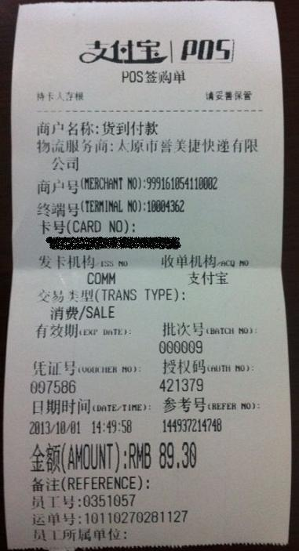可以看到，收单机构是支付宝，发卡机构是我刷的那张信用卡的发卡行（COMM是交行）。尽管这是在亚马逊买的东西，但是亚马逊在小票上并没有出现。商户名称很奇怪，是货到付款。后面还多了一个物流服务商的名称，我就是从这家快递业务员手里刷卡拿货。
这张小票最重要的信息是商户号：“999-1610-5411-0002”。我帮大家把不同含义的数字断开了，咱们从后往前看。
“0002”没什么特别的意思，就是序号。
“5411”是商户类型（MCC），这个数字代表超市类。大家刷信用卡有没有积分和优惠就是这个号码段决定，商户交多少手续费也是这个号码决定。例如饭店的费率就比超市高，所以大家经常遇到饭店不愿意刷卡的，超市的类似情况就少很多。
“1610”是城市代码，这个数字代表山西省太原市。插入硬广：作为地上文物第一大省，这片土地有着5000年中华文明看山西的美誉，五台山、悬空寺、晋商大院都值得来转转。近几年环境治理的不错，起码比以前强多了。
“999”是重头戏，这个代表收单商户。如果是银联商务的POS机，就是001；如果是工农中建四大行的POS机，就分别是102、103、104和105。那么999这个霸气的至尊之数银联分给支付宝的吗？当然不是，支付宝的POS机压根就没有用银联的网络，自己建的网络当然想选什么代码都没问题了——而且001和999真是非常般配的一对呢。
请你再回想支付宝号称再也不做POS机业务的新闻，有明确提到支付宝在自建一套跟银联平行的清算网络吗？那么多新闻看下来，反正我当时的感觉是银联不让支付宝POS机用自己的网络。
再次强调一下，支付宝POS机没有走银联的清算网络，而是自建清算网络，这决定了支付宝到底想干什么。
二、支付宝的POS机业务到底想干什么？
想说清楚这事，需要先搞明白银联和银联商务的关系。
银联，可以理解成制定银联卡标准和建立清算网络的机构。比如银行发卡，用62开头、印上银联的LOGO，然后在同样印着银联标识的ATM机上就可以取款了。银联股东是各家金融机构，大家知道名字的银行基本都是股东。用官方的介绍说，“中国银联是中国银行卡联合组织，通过银联跨行交易清算系统，实现商业银行系统间的互联互通和资源共享，保证银行卡跨行、跨地区和跨境的使用”。
银联自己不会去安装POS机（严格讲叫收单业务），这是旗下的子公司银联商务干的事情。既然银联商务是银联的亲儿子，是不是一统天下呢？之前关于支付宝不做POS机业务的新闻里，很模糊的说银联占据近90%以上的市场份额——这种说法是错的。首先，能做POS机业务的是银联商务不是银联；其次，这90%里包含了所有商业银行的收单业务份额。2011年末的线下收单业务里，银联商务占39.4%，银行占44.8%（数据摘自艾瑞咨询的报告）。
至此，可以看明白支付宝POS机想干什么了吧？银联是制定标准的机构，有个亲儿子银联商务。支付宝的目标不是和银联商务竞争，而是自己建立一个和银联平行的清算网络——醉翁之意不在亲儿子，在于自己要当亲爹。
回到最初那个“某些众所周知的原因”，银联到底扮演一个什么样的角色？
三、银联在其中扮演什么角色？
先别着急批评银联垄断，我们把银联对此的反应分成两个方面：第一个方面不考虑对错，只考虑银联做的过不过火；第二个方面不考虑效果，只考虑银联做的合不合江湖道义。
关于第一个方面，支付宝自建交易网络的POS机是狠狠戳中了银联的痛处，绝对是直接下狠手把银联往死里逼的节奏。之前讲过了，银联商务依靠的银联之所以能有垄断地位，依赖于银联卡和清算银联卡的交易网络。现在线上支付领先的支付宝要单独搭建一个线下清算网络，如果成功，那就是线上线下一统江湖，以后彻底没有银联什么事了。能与此类比的，只有战神360狠搞腾讯QQ和百度搜索，这种局面下对手不跟你玩命才见鬼了，哪里还顾得上手段好看不好看。
关于第二个方面，尽管银联作为制定标准的机构和支付宝闹僵很不好看，但仍然只是利用自己的银联卡和清算网络去限制对手，例如银联卡只能走银联交易通道、银联的交易接口不许违规使用。而且这些招数对付线下市场还有点效果，对于支付宝已经遥遥领先的线上市场很难说作用有多大——有马云在，人民银行不一定站在哪边呢。这些手段与互联网圈子里的攻防战相比，很难说更不讲江湖道义。回想一下作为淘宝天猫法定收银台的支付宝吧，为了所谓的保护用户，百度不能搜索、微信不能推广、其它第三方支付不能介入，信奉的逻辑同样是“我的地盘听我的”。
更进一步说，大家也不要把银联之类的国企或类国企想的太坏。与阿里巴巴能有马云到处跑着要特批政策不同，所有者缺位的国企并没有利益直接相关的受益人，他们虽然没有特别大的动力为用户好，但也同样没有什么动力故意去琢磨着坑用户一把，要知道捅娄子可是会被上级追责并且一票否决的大事。呆傻蠢笨和有坏心眼是完全不同的两码事。
归根到底，银联作为一个制定标准和建立网络的裁判机构，问题在于自己成立了银联商务下场当运动员。银行卡上同样常见的“VISA”和“MasterCard”都是老老实实做网络，没有两头通吃。所以，如果指责银联垄断，应当推动银联剥离银联商务，好好当一个专注于标准和网络的行业组织。
| 行业快讯 |
乾康（上海）信息技术有限公司 > 行业快讯 > 管理层饥渴企业才能求变成功 |
管理层饥渴企业才能求变成功
与过去十五六年相比，最近这几年互联网市场变化非常快，我们怎么应变的？我们首先回顾一下最几次管理干部大会：去年“5•18”一次七年之痒之后的剧变，组织架构做了相当大的调整；在去年下半年我们又提出了精品战略；今年上半年对管理干部提出了激情、好学和开放等要求。在这一次管理干部大会，我们将坚持过去一年半的基本原则，也就是顺应“打造精品、拥抱移动互联网”这个非常明确的潮流。
面对这个潮流，最近这两年给我一个感觉，我们好像又回到了15年前激情燃烧的岁月，我发现我们做了15年，从零开始打造的工具、平台，从一个没有商业模式的产品，逐渐、逐渐成长为丰富的商业模式。从头推翻，重新来一次，这个过程也是很让人激动的。
对于在座的各位，今天是好的时机，让我们有机会重新来一次，这个过程是一辈子都很难轻易找到的，我希望大家能有更紧迫的使命感！
从搜狗之盟，看变革心态
再看看最近比较大的动作。我们最近和搜狗达成了战略合作联盟，这对腾讯来说是从未做过的事情，就是把我们一部分业务“嫁”出去，和一个曾经的竞争对手结合在一起，合为一体。这个事情到现在还没有完全整合完毕，这毕竟是腾讯没有做过的事情。
为什么大家认为很突然？因为相当复杂，这个领域的竞争对手很多，所以任何的泄密都可能会造成整个事情做不成。这个事情结束得很快，所有事情都发生在不到一个月之内，真正执行只有两周时间，甚至对于总办，也是提前2、3天所有总办才一起沟通。整个事情我们觉得比较奇迹的是居然保密了，因为互联网时代是很难保密的。
因为腾讯从来没有做过这样的事情，对很多员工来说是很大的震撼，有很多不理解，也有人有彷徨。首先要从大的方向来看，这件事情是正确的，我们应该做。但我们怎么做？怎么能够让腾讯的企业文化关注员工的精神能够持续？从另一个角度来说，对于搜索线的同事、干部也要有更开放的心态，其实并不是远离家乡，你可以理解成派到一个合作伙伴去、或者是分支机构去工作，我相信未来的人才还是可以流动的。大家还是要抱有开放的、可上可下、可进可退、可内可外的心态才比较健康。
这一次不仅是搜索线，我相信对其业务板块、干部也一定会有所启发，腾讯还能做什么？我相信很多同事在这之后会思考很多问题。这是从“5•18”之后对整个组织架构又一次在组织方面比较大的变化，它一定会带来一定的思考。
以前，不少同事会抱怨，公司很多东西该变，但变得太慢，瞻前顾后，考虑的东西太多。不变的话，像行业里的诺基亚、BlackBerry 等公司到最后怎么样？拖着、拖着一个又一个季度，最终还是不行，非常悲惨的过程。我们希望在这个动荡的行业里，我们一定要主动求变、主动应招，有问题尽快解决，拖3个月、半年、一年，慢慢就会积重难返，谁也救不了。所以这个心态大家要统一，在执行的时候、遇到问题的时候，大家要抱着坚定的信心，比较正面的看待问题。主动变化往往会好过一成不变、束手无策。
刚才也说了，行业往移动互联网方面走，这是大趋势，我们要因势而变，我们不断从内部组织架构、从产品关注度，要从过去PC、手机相对分隔的状况走向统一。“5•18”之后我们做了很多调整，但还不够，还需要很多调整。
比如，最近我们把手机安全和PC安全整合在一块，放在MIG。在这背后，大家看到MIG做几次手术之后，开始重塑MIG的核心使命，管理干部重新规划职责。现在在安全方面，整个国防都放在MIG，这也是公司的重点，也是为整个腾讯下一个十年移动互联网商业模式的保驾护航，这非常、非常重要。不能有任何侥幸心理让你缓一缓，或者不去想，这个挑战大家要牢记在心中。所有的产品线都应该积极思考怎么样带动安全的份额，怎么样提升安全领域的专业能力和形象，这是希望大家永远要想的问题，否认永无宁日。这和人类历史上国家和地区的发展一模一样，没有什么区别，安全性始终是安居乐业、商业发展的基础。
干部要“饥渴”，不做富二代
在这样的变化情况下我们的人怎么样才能打赢这场仗，怎么样才能走得更好？对人的要求很重要。我们提到要有激情，要好学，要开放，我不一一展开，我想说的是，从很直观的感受来说，我们很希望整个管理干部的氛围是非常饥渴的。
要解决这些问题，你真的要当成是自己家里的事情，要有很紧迫的使命感才有可能做得到。如果说十几年过去了，很多同事加入公司时间也很长了，慢慢、慢慢地“皮”了，应该主动积极地把位置让给下一代更主动积极的团队或干部上来带领团队。
有些业务做得不是太好，回头看不是钱的问题，不是资金或资源没有给够，很关键的还是团队的精神。尤其是带团队的将帅相当重要，真的会有将帅无能累死三军的感觉，下面的同事会很失望，觉得公司为什么很多东西决策这么慢？为什么没有发现问题？如果继续下去半年、一年能看到改变吗？
这种情况下，我们看到在传统行业会有资金密集型扭转的机会，但移动互联网基本不太可能，因为这个市场不是拼钱，也不是拼钱去买流量，更多是拼团队，有没有使命感，有没有紧迫感，有没有很好的办法去解决？
我希望打破过去富二代的概念，希望大家成为闯二代、创二代，资源会给你，让大家的起跑线好，但最终赢不赢一定取决于你能不能做出精品，是不是BE THEBEST？我们提供很多资源给你只是加法，别人产品是100分、你是80分，我只能给你加100分的资源，头一、两年你的总分多过别人，如果5年后呢，100的5次方超过80的5次方加上100，时间拖长了你加的那点资源就可以忽略不计，最终还是靠产品本身的质量才能和别人比，这已经多次证明了。
因此，我们希望重新整理过去的很多布局。很多业务摊得很大，同事希望下面管得越来越多，什么都不放，这需要重新思考，10个都弱都不如1个很强。否则一堆做不起来的东西，只能减分、分散精力。
后面可能还会有很多变化，包括我们在产品方面要加强Review，真的要下决心，做不好的我们要砍掉，关停并转。有些业务，以前自己做的，可能会转给投资公司，只要他做的好，然后持有股份30%、20% 都可以转给他，不一定全部都放在自己手上。
内部挖潜，精兵简政
最后，我们希望员工人数更加精兵简政。今年招聘了1000多名毕业生，总人数增长控制在10%以内，明年增长控制在5%以内。我相信从很多项目会腾出很多人手，大家内部挖潜，不要说我的人就这样，我不想动，为留人或闲着找项目做，而不是真正从本质的需求出发。该调转、该调拨的，大家要有大局观，应该放就放。
当然从历史来看，这个东西从来不容易，需要Push，甚至抓着执行才有办法，我希望大家从今后开始要真正想这个问题，人不是越多越好，人是分母，成绩是分子，我们看最后是不是效果好。加的每一个人，每一个精心挑选的人才能真正大于原有的平均值1，否则小于1 的话，加得再多也永远小于1，永远大不过1的格局是很难、很难扭转的。
产品和业务能不能有起色？前面的启动过程是非常、非常重要的。我几乎没有见过历史上一直不行、一直不行到最后突然间行的产品。一开始团队要展示出信心，要展示出CPU的转速超过别人，如果你是精品，最后加东西才有可能是正面的，否则转速低之后加东西永远是拖累——这是相当大的反思，希望与大家共享，希望大家在之后正当的调整和公司这个原则方面能够更加有共鸣。
希望大家能够拥抱移动互联网，移动互联网和PC互联网将是一起的，我们并不是轻视PC互联网，因为我们很多商业模式，包括团队、基础、后台很多都融为一体！也希望大家更多地拥抱开放，尤其是内部开放，很多团队在内部的合作方面其实还有很多提升的空间。因为术业有专攻，有的产品和范畴很多同事很擅长，希望大家能够积极开放胸怀，大家一起把事情做好，大家好才是真的好！
| 行业快讯 |
乾康（上海）信息技术有限公司 > 行业快讯 > 看马云如何“抢劫”银行 |
看马云如何“抢劫”银行
马云的真实面目历来是以公益的名唱功利的戏而行走江湖的。
疯传阿里要进军银行业，这是个大新闻。这个新闻的重要的意义在于：阿里与几家银行并不甜蜜的合作期行将画上句号。马云将过河拆桥。自举大旗，砸破锁链，开立银行，特别是开立零售网络银行的新世界。
这厢，深圳企鹅大口喝着几大运营商的汤；那厢，马云即将强夺银行的盘中之肉。
但事情也没有这么简单。金融是个什么概念？金融是经济的血液，金融是产业的皇冠。
百度死了，人们大不了骂几句娘，拥抱搜狗，明天太阳照样升起。但是一家金融公司的倒闭可能引发连锁反应，蝴蝶效应瞬间飞遍全球，导致全球经济危机。
互联网公司或许能做金融业务，但问题是会让一家互联网公司做吗？当然，如果牌照解决了，潘多拉的盒子也就打开了。
刨去这几年的新生事物，回归本源，试策略分析金融城外的野蛮人如何颠覆和蹂躏现有正统银行。银行无非靠存款、贷款、风险管理等几项核心要素繁衍生息，生存至今。从这些要素来看，马云有完胜的可能。让我们来逐一分析：
一、存款
存款，是银行的血液，是基础。存款不牢，地动山摇。而支付宝的理论是，资金流量足够大时，这个资金池的存量也足够大。
当AB两人利用支付宝交易，交易资金先从A到支付宝，再从支付宝到B，中间有个驻留过程。就支付宝而言，这是一个输血、放血的过程，当大量交易交错进行的时候，就会导致支付宝账面上凭空留存一定的资金。
这个资金的额度取决于交易额、交易完成的平均时间，有所波动，但可以数据预测。而且，有意义的只是平均数，偶尔的意外波动可以通过央行的贴现来解决，并不需要担心。当阿里的日交易额一次次创下新高，实际上，支付宝账面上能稳定保持的现金也必然同样变成了天文数字。
支付宝，凭空就能来这么多存款，而且是低息甚至无息存款。别急着感谢余额宝为亿万屌丝提供了理财需求，本质只是马云需要更多的资金而已，当然对价是付出了不那么高的市场利率。
马云完胜。
二、贷款与风险
银行靠贷款创造利润，但贷款有风险，坏账率一直是银行风险控制的重要指标，这是银行工作的重中之重，也是难点。
难在哪里？商业银行向企业提供贷款，除去抵押担保，判断源自于银行可以粗略掌握企业的财物数据。但风险仍然很难精确预计，因为银行最多能了解企业的资金流通，更详细的数据信息是银行看不见的。
所以，传统的抵押和保证手段只不过是搬砖头，也就是银行搬了一块貌似靠谱的砖头锁进自家金库，再估摸这块砖头值多少银子，据此向借钱的人放款而已。
从这个意义上说，银行贷款的风险大小实际上跟银行对贷款对象的信息了解多少成反比。
与之相反，依靠几年的数据仓库积累的海量数据，阿里巴巴不但掌握了网商的资金流通数据，还掌握了整个商务运营细节。可以预计的是，阿里做银行，在风险控制上天生就比传统银行出色。
与传统银行技术含量不高的搬砖头相比，马云做的是照镜子，即通过数据匹配和信息筛选的镜子，来照出你是否有贷款能力、还款意愿。精确的滴灌技术能保证借钱人能借到需要的钱，而又不会乱花钱。
马云又胜。
三、信用与评级
信用显然是电子商务的基础。同样，信用更是金融的基础。在国外，存在一些专门做信用评级的公司，但在中国，似乎没有，当然，可能有，但这些个公司本身的信用就值得好好怀疑。从当年朱总理为中国会计学院立碑四字＂不做假帐＂的期望来看，显而易见，中国出不了标普和穆迪。
信用的衡量，实际上跟信息掌握的多少有关。甚至可以绝对的说，信息的不对称性是所有矛盾的根源所在，信息掌握越少，风险越高，融资的成本也就越高，信用评级公司的诞生，实际上是为了降低融资成本。
金融业本来就是一个收集信息、提炼信息、靠信息获取利润的行业。这个逻辑表明，如果中国将产生一家有影响力的信用评级公司，那么阿里是最大可能。
如果信息的运用能力与评估信用能力正相关的话，阿里无疑再胜。
四、信用卡问题
对于商业银行而言，信用卡是一项收入来源，但是对于支付宝来说，信用卡的意义超出了传统信用卡的范畴。支付的便捷性很多时候是电子商务的决定性因素。
电子银行之所以复杂，主要是出于安全性的考虑。然而，银行卡的演变也在与时俱进，不但有了动态密码，最近我还发现银行跟魔兽世界学习，居然有了密保卡，这一切的一切，都是为了在安全的基础上支持更便捷的电子支付。
盈利模式、运营成本、客户基础、信息处理、风控文化、增值渠道、持续发展，这些决定银行命门的核心要素阿里基本都已掌握，并掌握的更好。
挡在马云前面的路障无非几项：牌照，充足的被监管资本，懂银行会电商的复合型人才，尚不能与银行抗衡的风控技术，银行的批发业务。但是，只要获得银行牌照，其他都如探囊取物，水到渠成。
现在人们担心的倒不是银行抱成一团，围剿阿里，担心的是深圳企鹅总有一天与杭州阿里直接对话，互争盟主。我预测未来阿里将合并几家小型银行，收纳几个可人的大堂经理妹子来愉悦阿里银行的线下体验。
零售客户群、网络零售屌丝客户群，将成为血腥的诺曼底。而银行作为高贵的日尔曼守方，死的不会太美。
芝麻正在开门，不可阻挡。
| 行业快讯 |
乾康（上海）信息技术有限公司 > 行业快讯 > 马化腾谈产品设计核心要做到极致 |
马化腾谈产品设计核心要做到极致
产品经理要把自己当一个挑剔的用户。我们做产品的精力是有限的，交互内容很多，所以要抓最常见的一块。流量、用量最大的地方都要考虑。规范到要让用户使用的舒服。要在感觉、触觉上都有琢磨，有困惑要想到去改善。如鼠标少移动、可快速点到等等。
为产品做设计最难的是订优先级和先后次序。判断功能的好坏不能写个报告统计下流量证明是完了。这是非常错误的，我们要看用户是不是需要这个功能。所以我希望我们的产品经理在产品设计之初就想得透彻一点。产品经理需要投入更多的关注度，关注度不一样，结果出来的很不一样。
1. 核心能力
任何产品都有核心功能，其宗旨就是能帮助到用户，解决用户某一方面的需求，如节省时间、解决问题、提升效率等。
很多产品经理对核心能力的关注不够，不是说完全没有关注，而是没有关注到位。核心能力不仅仅是功能，也包括性能。对于技术出身的产品经理，特别是做后台出来的，如果自己有能力、有信心做到对核心能力的关注，肯定会渴望将速度、后台做到极限。但是现在的问题是产品还没做好。比如前段时间的网页速度优化，优化之后速度提高很多，真不知道之前都做什么去了?让用户忍受了这么久，既浪费时间又浪费我们的资源。不抓，都没人理，很说不过去。所以说我们要在性能方面放入更多精力。
谈到核心的能力，首先就要有技术突破点。比如做 QQ 影音，我们不能做人家有我也有的东西，否则总是排在第二第三，虽然也有机会，但缺乏第一次出来时的惊喜，会失去用户的认同感。这时候，你第一要关注的就是你的产品的硬指标。在设计和开发的时候你就要考虑到外界会将它与竞争对手做比较，如播放能力、占用内存等。就像 QQ 影音，它的核心性能和速度都超越了暴风影音，所以推出之后发展的势头将会很好。
硬指标选择上其实也有很多选择，如网络播放、交流、分享，这都是很好的思路。但是最后都砍掉了，我们就是要做播放器，因为这是用户的需求。并不是所有人都需要高清，但是高端用户需要(这个后面口碑创造会再提到)。只有硬指标满足了，用户说，我这个破机器，暴风影音不能放，QQ 影音能放。就这一句话，口碑就出来了，用户知道你行，口碑要有差异性。
核心能力要做到极致。要多想如何通过技术实现差异化，让人家做不到，或通过一年半载才能追上。
很多用户评论 QQ 时说用 QQ 唯一的理由是传文件快，有群。那这就是我们的优势，我们要将这样的优势发挥到极致。比如离线传文件，以邮件方式体现就是一个中转站，即使是超大的文件也不困难，关键是要去做。虽然真正使用的用户并不一定多，但用户会说，我要传大文件，找了半天找不到可以传的地方，万般无奈之下用了很烂的 QQmail，居然行了，于是我们的口碑就来了。
要做大，你首先要考虑的就是如何让人家想到也追不上。这么多年在 IDC (互联网数据中心)上的积累我们不能浪费，高速上传、城域网中转站，支持高速地上传 ⋯⋯可能又会发现新的问题，如果不是邮件，在 IM (即时通讯软件)上又该怎么实现。我们的目的是要让用户感到超快、飞快，让用户体验非常好，这些都需要大量技术和后台来配合。
产品的更新和升级需要产品经理来配合，但我们产品经理做研发出身的不多。而产品和服务是需要大量技术背景的，我们希望的产品经理是非常资深的， 做过前端、后端开发的技术研发人员晋升而来。好的产品最好交到一个有技术能力、有经验的人员手上，这样会让大家更加放心。如果产品经理不合格，让很多兄弟陪着干，结果就会发现方向错误是非常浪费和挫伤团队士气的。
2. 口碑
做产品要做口碑就要关注高端用户、意见领袖关注的方向。以前，我们的思路是抓大放小，满足大部分“小白”用户的需求。但是现在来看，高端用户的感受才是真正可以拿口碑的。
如何提升高端用户的关注，这是在基础功能比较好的情况下需要考虑的问题。如邮件搜索、RSS 聚合等，这些只有“很炫”的用户在博客和论坛里面会提及，在有能力的情况下我们要保证。在产品已经成型的情况下，对待高端用户的心态也要不一样。比如允许用户在我们的 QQmail 上使用别的邮箱。之前我们自己心里打着小九九，让别人不方便使用外部邮箱地址，好使用我们的，但是这些小九九，高端用户是看得出来的，所以要改掉，只有这样才能做到真正的方便用户。
个性化服务，并不是大众化服务，也是要取得口碑的。
一个产品在没有口碑的时候，不要滥用平台。如像 IM (即时通讯)部门要求支持，投入营销资源、要 marketing (市场部门)联系公关公司投放广告，提广告位要求⋯⋯等着人家砍，其实心里想着有一半也够了。我们的产品经理精力好像分配得很好，50% 产品、30% 营销⋯⋯当然，如果你在基础环节控制得好，这样当然可以。但多数情况下我们的人第一点都做不好。如果你的实力和胜算不到 70%〜80%，那么就把精力放在最核心的地方。当你的产品已经获得良好口碑，处于上升期后再考虑这些。
产品经理要关注最最核心、能够获得用户口碑的战略点，如果这块没做透，结果只能是用户过来，失望，再花更多的精力弥补，这是得不偿失的。
当用户在自动增长(用户会主动推荐朋友来使用我们的产品)，就不要去打扰用户，否则可能是好心办坏事。这时，每做一件事情，每加一个东西都要很慎重的考虑，真的是有建设性地去增加产品的一个口碑。当用户口碑坏掉后，再将用户拉回来很难。
增加功能，在管理控制功能上也要有技巧。在核心功能做好后，常用功能是要逐步补齐的。产品在局部、细小之处的创新需要永不满足。作为一个有良好口碑的产品，每加一个功能都要考虑清楚，这个功能给 10% 的用户带来好感的时候是否会给 90% 的用户带来困惑。有冲突的时候要聪明，分情况避免。每个功能不一定要用得多才是好，而是用了的人都觉得好才是真正的好。
做产品开发的时候需要有较强的研发机制保证，这样可以让产品开发更加敏捷和快速。就算是大项目也要灵活。不能说等 3 个月后再给你东西看，这个时候竞争对手已经跑出去已经不知道有多远了。
开发人员要用心来思考产品，而不是公事公办的态度。你要知道用户、同行会关注你的产品，在这种驱动下开发人员要有责任心去主动完成。不能说等到产品都做好了，流水线一样送到面前再做。40-50% 左右的产品最终体验应是由开发人员决定的。产品人员不要嫉妒有些工作是是开发人员设计的，只有这样才是团队共同参与的。否则出来的产品一定会慢半拍。
运营式管理：敏感才能找到不足
关键词：天天用
我们的产品不是单机版，不仅需要很强的用户感和技术功底，更重要的是服务。我们要关注一些很复杂的内容，如架构、应用等，产品需要有更好的架构，这需要花很多精力，常态下可能看不出来，所以需要我们高层更多的从 KPI (重要绩效指标)上考虑。这很考验功力，谁做的好，总办领导是看得到的，好的设计架构不会手乱脚乱。如把核心的东西做成组件模块分发。
发现产品的不足，最简单的方法就是天天用你的产品。产品经理只有更敏感才能找出你产品的不足之处。我经常感到很奇怪，有的产品经理说找不出问题，我相信如果产品上线的时候你坚持使用三个月，问题是有限的，一天发现一个，解决掉，你就会慢慢逼近那个“很有口碑”的点。不要因为工作没有技术含量就不去做，很多好的产品都是靠这个方法做出来的。我们的领导不仅仅要安排下面的人去做，一定要自己做。这些都不难，关键要坚持，心里一定要想着，这个周末不试，肯定出事，直到一个产品基本成型。
从哪个地方找问题呢?论坛、博客、RSS 订阅啊。高端用户不屑于去论坛提出问题，我们的产品经理就要主动追出来，去查、去搜，然后主动和用户接触，解决，有些确实是用户搞错了，有些是我们自己的问题。产品经理心态要很好，希望用户能找出问题我们再解决掉。哪怕再小的问题解决了也是完成一件大事。 有些事情做了，见效很快。产品经理要关注多个方面，经常去看看运营，比如说你的产品慢，用户不会管你的 IDC (互联网数据中心)差或者其他原因，只知道你的速度慢。
交互设计：做最挑剔的用户
关键词：细致
产品经理要把自己当一个挑剔的用户。我们做产品的精力是有限的，交互内容很多，所以要抓最常见的一块。流量、用量最大的地方都要考虑。规范到要让用户使用的舒服。要在感觉、触觉上都有琢磨，有困惑要想到去改善。如鼠标少移动、可快速点到等等。
像邮箱的“返回”按钮放在哪儿，放右边还是左边，大家要多琢磨，怎么放更好，想好了再上线测试。对同一个用户发信，在此用户有多个邮箱的情况下如何默认选最近用的一个账号。这些需求都小，但你真正做出来了，用户就会说好，虽然他未必能说出好在哪里。
产品的使用要符合用户的习惯，如写邮件的时候拷贝东西，更多人习惯用键盘来操作。虽然有些技术难度，但也可以解决，交互，对鼠标反馈的灵敏性，便捷性。
在设计上我们应该坚持几点：
不强迫用户。如点亮图标，如 QQmail，不为1% 的需求骚扰 99% 的用户。
操作便利。如 QQ 音乐，新旧列表，两者都要兼顾到，如 QQ 影音的快捷播放，从圆形到方形，最后因为影响性能而放弃。
淡淡的美术，点到即止。如 QQmail，QQmail 在 UI 界面上的启发，不用太重也能做得很好。图案和简洁并不是一对矛盾体。
重点要突出，不能刻意地迎合低龄化。
互联网产品设计的“马化腾法则”：
1、为产品订立优先级和先后次序。
2、不强迫用户。不为1% 的需求骚扰 99% 的用户。
3、研发机制保证，产品换代要快，快速实现、快速响应。
4、图案和简洁并不是一对矛盾体。
5、要丰富自己的角色，做最挑剔的用户、笨用户。
6、产品经理第一要关注产品的硬指标。
7、技术核心能力非可复制性要强，让极致核心能力产生口碑。
8、在局部、细小之处的创新要永不满足。
| 行业快讯 |
乾康（上海）信息技术有限公司 > 行业快讯 > 浅谈卡卡联的发展方向 银联亲儿子也得自己长 |
浅谈卡卡联的发展方向 银联亲儿子也得自己长
现在大家都知道，第三方支付的崛起，使得支付界的竞争越来越大。其实个人感觉，技术都不是问题，主要是idea，你敢想，想到了别人之前，那你就是成功的。开始卡卡联更新到1.0.3的时候我参与了评测，当时说实话，不是很看好卡卡联的信用卡还款。虽然1.0.3的亮点就在于此。我不是给卡卡联泼冷水，试问说现在哪家第三方支付没有信用卡还款?移动端，支付宝，财付通等第三方支付，还有就是手机刷卡器类的，拉卡拉，同时有趣的是兄弟的左右互搏，银联商务的一盒宝和银联在线支付的卡乐付等等，太多了。要说在信用卡还款这方面取得成绩，就必须独到。支付宝可以余额宝还款，拉卡拉可以还花旗银行，银商的一盒宝新增了盛京银行这样的地方商业银行。别人家做不到，所以显得厉害。目前，卡卡联支持的应该是银联在线支付的一些银行，个人认为不算独到。那么将来，在未来的版本里，我们应该如何做到独到呢，或者说发展的方向是什么呢?
个人认为，当然是最近流行的020。我们知道，手机刷卡器带起来很麻烦，而且2015年央行要求整改IC卡，对于手机刷卡器还能存活多久，我不知道，但是一定会有瓶颈，就是两点，携带不便和IC卡的普及换代。那么IC卡遍地磁条卡消失的时候，通过时间计算，也是NFC手机遍地的时候，那么本身手机就不需要任何附属金融设备，就变成了支付神器。那么目前就是找一条最可行的方法实现020就可以了。可行意味着成本低，高效，快捷。那么成本这一点上，或许卡卡联就是先锋，千万要把握机会，否则一旦失去机会，就没有了任何优势，时间点上，就是从现在开始!
我们假想现在就是单芯片卡遍地的时代，那么拉卡拉类的支付公司肯定受到影响，但是支付宝类的不会。因为是线上支付，但是线上支付的缺点就在于，虽然支付宝现在具有庞大的用户群，网民的基数也庞大，但是会用支付宝，或者对网络金融安全有信心的人比例还不大。支付宝的各种绑定，这个环节注定很麻烦，快捷支付有多快捷呢，一旦手机号码更换或者银行方面的问题，很多绑卡都很麻烦。手机停机了，验证码过不来，都需要很大的时间成本处理。设想一个场景，一个朋友，邀请你帮他网购，他说他的卡里有钱，怎么买。和他说快捷支付云云，完全一头雾水啊，那好吧，我们理想化一下。我们用帐号帮他下单，付款选择卡卡联通道，输入我自己的手机号码，然后我们用自己手机开启卡卡联，看见订单，支付，拿过他的金融IC卡，刷卡，手机递给他输入密码，搞定。是不是太简单了?对咯，这就是我们要努力的方向了。谈到020，拍二维码，下单，各家都有自己的软件，只是支付通道上，选择卡卡联，然后拍卡，就可以直接成功。这种便捷，是支付宝做不到的，因为和朋友逛街，她要买就用她的卡付款，这不是很方便吗?而不是说她很麻烦的取现金给你，因为人家也可能喜欢信用卡消费呢，那成本不就不一样了吗?
闪付的商户越来越多，但是记得看过《与卓越同行》节目中采访原招行行长马蔚华的时候，针对taxi司机师傅用闪付还是支付宝，司机们普遍表示支付宝，因为pos要成本，马行长当时也说，这一车一pos确实有点奢侈。那好哦，我们也二维码好了，只不过我在手机上拍我自己的卡，这没问题吧，不用你们的哥买闪付pos，这总可以了吧?
前些日子看银联在线支付的“迷你付”不错，不过学习的成本比较高，人民币218，我想说这样选择银联在线支付就可以刷IC卡了，当时只是抱怨，这卡卡联在干嘛，如果银联在线可以接入卡卡联的支付通道，我为啥要买这迷你付?!又装驱动又绑定的，忙到一个不亦乐乎。话说迷你付现在推出本身就感觉不是个成熟的产品。为什么，因为现在是2013，不是IC卡遍地的时代，能在线我为什么要花钱搞啊，不会计算机的人还头疼。卡卡联恰恰在这个时候节约了成本，只是没这个支付功能，所以说到这里我想卡卡联也应该知道自己的发展方向了吧?还有，对比迷你付和卡卡联，除了人家接入银联在线之外，迷你付真的没优势。那么卡卡联另一个方面，是不是该在电子现金上做点文章?目前，央行推动芯片卡，但是芯片卡大多都是联机交易，脱机交易，谁愿意圈存电子现金呢，很多地方因为收银员不会弄，刷不出去的，工行的圈提免费，建行和中行等不支持圈提，或者柜面会收取费用，那怎么办，卡卡联的责任来了。拍卡我可以选择脱机或者联机，这样卡卡联就推动了电子现金的普及了。目前别人家做不到哦，就看你们了。
总结一下吧。个人建议的发展方向。
1、订单支付，通过手机号码生成订单，拍卡支付，希望，仅仅是希望，尽快接入银联在线，形成卡卡联的支付渠道。
2、可以选择电子现金脱机支付订单。
3、二维码020支付，这个单独开发也好，期待银联在线开发也好。建议搭银联在线支付便车，银联在线的手机支付插件方便选择“卡卡联”支付渠道即可。
4、直接挑战数字显示金融IC卡，通过拍卡拉取电子现金交易明细，不仅仅是余额查询。联机查询交易明细，提示一下，这个不必自己开发，借助“银联钱包”。绑定之后通过银联网络的交易明细全部能拉取。
5、配合当前央行的要求，跨行圈存技术的实现。
6、手机充值功能、银联的超级转账功能、代付功能这些非常必要。至于什么交罚水电煤，别做了。银行和第三方做这个眼光缭乱，没意义!
7、IC卡的扩展应用长远要留心。充值嘛，不光是电子现金，如果金融IC卡扩展了公交应用，那就针对地区开通扩展应用的圈存充值。
8、主要发展方向定位准确。不要和中移动的NFC-SWP卡发展方向搞错，卡卡联最终是形成移动pos机，不是说形成卡片去贴别的pos，而中移动的NFC支付，侧重的是把手机变成金融IC卡，或者扩展金融IC卡。互补的关系，将来很可能形成双剑合璧。
上面提到的一些功能都牵扯到和银联在线这边的协商合作。话说银联的部门我真的比较无语，好多分支。但是建议指定标准和接口的时候参考银联在线支付，其次参考银联商务。否则将来在开发上对接就会有很大的问题，不要给自己造成无谓的成本!
| 行业快讯 |
乾康（上海）信息技术有限公司 > 行业快讯 > 腾讯1000亿美金下的成绩与危机感 |
腾讯1000亿美金下的成绩与危机感
虎嗅注：上周，我们发布了马化腾于10月10日在腾讯内部会上的讲话《干部要饥渴，不要做富二代》。总的来说，马化腾主要从文化与宏观战略方面讲得多一些。而今天发布的这篇腾讯总裁刘炽平的讲话，则从更具体的层面总结了腾讯现在的布局、移动互联网当下的发展，更实在，有助于我们了解腾讯如何盘点自己以及对产业的判断。
首先想问大家一个问题，昨天回到房间有没有冲动打飞机的？尤其是看到Pony 和Tony 巅峰对决？提醒一次，过多打飞机有害身体，尤其对眼睛不是太好，小心一点！
开个玩笑，我想说的是我们已经进入了全民移动游戏的时代！对此，我有一个比较深的感受，移动互联网有可能为我们未来带来10 倍的可能性，这个感受在过去几个月里面越来越深，尤其是看到移动游戏突然这样爆发，变成全民游戏的时代。所以，今天我希望进一步跟大家探讨一下，过去半年里到底这个行业的格局有什么变化？我们整体的执行是怎么样的？公司的战略思考是什么？
移动互联网数字洪流
首先来看互联网总人数。整个互联网人数的增长继续维持在10%左右，但是，智能机的增长是翻倍的，体量已经接近4个亿。比如，游戏这一块，过去1-2 年增长比较缓慢，今年反而增长得快一些，比较大的因素是移动游戏的快速发展。再如，整个门户的模式慢慢被颠覆，所以门户广告增长非常缓慢，甚至有些是倒退的，这是看到了移动大潮里的颠覆；还有，搜索引擎虽然增长还是挺快的，但增长率比上一个年度有所下降，现在支撑整个增长的很大程度上是RTM的增长，而不是用户量的增长，从PC 转到无线，无线上整个搜索的变现模式并没有完全成立，颠覆也在出现；另外，我们看到电子商务、在线支付，与人们生活有关的还在不断增长的态势当中，被移动颠覆的程度没那么高。
再对比我们自己的数据。第一，通讯社交这一块，在PC 侧的下降，移动侧的增长非常明显；第二，媒体这一块，腾讯网整体的阅读文章量和整个用户量在 PC侧有所下降，但移动侧在非常、非常快地增长，移动侧的UV 超过了PC 侧的UV ；第三个，微博75% 都在移动侧了；第四个，我们可以看到游戏的移动渗透额相对小一些，最主要的是PC 上端游的重度玩家与手机没有太大的对冲，我们相信对移动侧是一个增量；电商相对来说移动化的速度比较滞后，相对来说移动化没那么快反而给我们的电商有一定的机会，希望当移动化潮流爆发的时候或者我们是引领者，或者那时候整个电商体系准备好了去获取爆发的红利。
移动互联网加速变现
另外一个较大的趋势是整个移动互联网的变现模式日趋清晰，上一次开会我们还说变现有一定的挑战性，现在，我们看见变现的增长速度非常快。
整个移动互联网变现的发展速度会超乎所有人的预期，而且会不断地加速。第一个例子，游戏，KaKaoTalk 是行业典范，在韩国一个季度的流水已经接近2亿美元，占领了整个韩国手机游戏的60% 以上的市场份额，这是非常巨大的新增市场，Line 在日本的游戏收入也非常高；
第二个，广告这一块，Facebook 在短短一年之内广告收入已经有41% 来自移动侧，去年大家还是在怀疑它能否移动化的时候，但在变现侧的速度非常、非常快，昨天它的股价又了创新高，达到1227 亿美元的市值；
第三个，电商这一块，在没有物流的模式里移动化趋势非常、非常明显，比如GroupOn，Amazon 这种有物流的相对来说转化速度比较慢，但可以看到年比增长非常快，增速超过400% ；
第四个，我们可以看到很多O2O 发展速度非常快，携程这种酒店模式，现在移动渗透率是40%，6 个月之前移动渗透率还小于20%。
正因为看到这种态势，过去半年、一年当中，各大巨头非常、非常关注移动入口，所以收购大动作连连出现。阿里的战略是广撒网、先占位，阿里自己没有相似的产品，所以对于这些有可能成为移动入口的公司采取了非常激进的，少数投资先占位的态度，涉及新浪微博、高德、UC Web ；百度是很久都没有动作的巨人，它要展现狼性，对91进行了19 亿美金的天价收购，还有PPS和糯米网；360看来好像打酱油一样，但是对UC真正想吞掉，与搜狗有一个合约随时可以签，感觉在打酱油，但魄力非常大。腾讯的动作也不少，我们总体策略希望在投资并购作为整体战略的延伸，比如，可以看到对于搜索来说，我们希望通过投资和深度合作，让我们重新在搜索里达成规模，重整军容，再次上路。
我们今天在哪里
看了整个市场环境之后，让大家也看一看我们自己半年以来移动化战略的执行是什么样的？
我们把全中国20个最高DAU 的非游戏应用放在这里，看看我们占的位置。可以看到前五名最高DAU 的应用里我们占了3.5 个。为什么是3.5个？QQ 和微信是龙头；半个是新联姻的搜狗，搜狗输入法是7000万DAU 的量级，占在第三位；然后是Qzone和360 安全卫士。前十名里我们占5.5 个，还有安全管家和手机浏览器；前20 名我们占7.5个，还有资讯类的腾讯新闻和QQ 音乐。其实我们还有很多应用，微博、视频、电商有机会打入这个榜，我们能不能有更多的产品加速移动化？这是我们今后半年希望能够大力做的。
从收入来说，我们不断地加大移动投入，但移动化这一块短期给我们的收入相对来说是很少的。从收入来说我们的增长相当稳健，游戏是150亿，增长了33%，主要动力还是端游；广告这一块年增长51%以上，一个是视频，一个是广点通；社区明显受到移动的冲击，因为我们整个VIP 体系还没有真正的嫁接到移动侧，今年还是比较关注怎么样可以重塑QQ、Qzone 整体移动化的竞争力；电商这一块，自营电商快速发展，希望势头可以持续。
我们相信未来要是移动化这一块可以开始变现，我们现在也义无反顾对未来进行投入，哪怕可能利润会受损，但我们还是要做。
移动化下的新机会
展望未来，移动化会给我们带来很多新的机会，让我们一方面巩固现有的业务，另一方面让我们很多在追赶的业务有新的契机。
在平台侧，微信+QQ 把我们整个在社交和通讯的安全系数有一个很大的提升，同时让我们接触了可能有1000-2000 万高端用户，这些人可能看起来数字不是很多，但对我们未来做很多业务，尤其跟媒体、电商和商业有关的应用带来很大的未来机会。WeChat 让我们可以扬帆出海，这也是一个全新的新市场空间。
在流量平台这一块，我们在无线侧看到很多新的机会，在PC 侧是晚进入市场者，安全上非常艰苦，但是在手机侧是四六开，在流量平台这一块移动给我们新的机遇。
产业这一块：手机游戏很大程度是新机会，手机游戏未来可能是好几百亿的市场，对我们来说非常、非常重要；媒体这一侧，我们也看见了让我们一下子就接触了很多、很多以前不看我们新闻和媒体资讯的用户；投资搜索，一个是增加规模，另外一个是希望规模可以延伸到无线互联网上，让我们在移动互联网上有更好渠道之下，更好机会获取市场份额的情况之下，能跟商业化体系产生联动，这是无线互联网给我们的机会，这也是为什么能够打动搜狗跟我们合作；还有电商，能不能找到移动电商的窍门？让我们在电商领域可以乘着移动大风去破浪。
新的产业林林总总，基本上与人的生活相关，最大的服务是金融服务、O2O。来看整个世界上最大块的公司，自然资源、房地产是资源类，除了这些之外最大的服务类，一个是金融，一个是零售，一个是媒体和娱乐。基于整个互联网第一轮发展，我们在娱乐和整个媒体这一块占据了好的位置。未来互联网必定会深刻的影响其他行业，包括金融、零售服务，所以我们要思考，不断地想有什么机会。正如Pony 所说，移动互联网给我们开启一个新的创业机会，希望我们都可以用十分的精神去面对。
1000亿美金下的危机感
我们业绩不是涨得很多，但是在移动化的冲劲之下，公司股价今年涨得非常、非常厉害，9 月17日我们的市值突破1000 亿美金。我们知道很多、很多公司对此梦寐以求，但是对很多总办的兄弟来说、对公司来说，这是一个最好的时候，其实也是最坏的时候，我自己感觉到心里相当不安。
诺基亚曾经2000 亿美元的公司，一下子70 亿美金把最有价值的业务卖出去了；BlackBerry，差不多摸到1000 亿美金，900 亿美金市值的公司现在也40 多亿卖掉了……可以看到，IT 行业的变化非常、非常残酷，千亿公司没落是非常、非常正常的事情，甚至到千亿的时候没落的机会更高。
为什么呢？首先，行业非常残酷；更重要的是，一个公司大了，一个公司成功了会有自满、安逸的情绪，会内斗。以前大家都是一起创业的团队，之后开始利益分配不均就内斗了，还有官僚等问题。传统行业可能没有这么明显的感觉，我们这种新的行业里，包袱越重没落越快。所以每个人都要有非常强的危机感，外面的人给你很多掌声的时候，这时候是最危险的。
所有，我们需要居安思危，有战略思考，下面，我还和大家做三个战略分享。
对搜狗结盟的战略再思考
第一个战略分享，是Pony 刚才说的搜索业务，包括我们针对搜狗的合作，也代表了我们对做了7 年搜索业务的整体思考。
做这个收购后，我们会进一步加大对搜索的投入，而不是放手不理，未来PC 浏览器、手机浏览器，甚至其他的产品要和新搜狗这个紧密合作的伙伴有很强的互动，不是说我们退兵，而是进一步的往前走，整个打法会不太一样。
对比搜搜和搜狗，进行反思，为什么搜搜在过去那么多年没有做成？搜狗在资源相对匮乏的情况之下市场份额还是我们的2.5 倍，什么原因？第一个，领军人物非常、非常关键，有没有专注的领军人物，把所有的时间、精力砸在上面，干部能不能团结一致？大家知道我们这块的干部一波又一波，没有办法形成有人有难，大家拼死相争的状态。第二个，战略思考很关键，你是搜索后来者，渠道是非常重要的，浏览器是非常关键的路径，没有关键路径，使用很多腾讯的资源，最后来来去去还是没有办法把流量弄上去。第三个，态度，我们有一定的富二代的感觉。有一天搜狗的人打电话给我，盘点我们的服务器，我们的服务器数量是它的三倍，这些背后说明了一些问题。
我们看到“5•18”变革之后，搜搜已经有一个很大的好转，技术上的进步已经快很多了，团队状态也好了很多。但是，整个市场格局在变化，假设360不买搜狗，我们还有意愿、有能力自己做，因为PC 浏览器最近发力挺好；但是假设它买了之后，市场份额是63%、28%，继续做搜索难度就很大了。这也是为什么我们最后必然要做一个选择，要不然有机会三分天下我们出局。
坦白说，如果我们可以更早做出决定未必会是今天这样，这是总办的反思。但所有管理者管理业务的时候一样，当你看到有些不对头的时候马上要进行变革，等的话往往到最后出来的结果越来越差。
从两个登船业务看关键路径和合作机制
第二个战略分享，我们可以看见有两个业务，一个是手机游戏，一个是移动媒体，在整个大移动格局里借着微信和手机QQ 登船了。它们关键路径到底是什么？
手机游戏的关键路径很清楚，在微信和手机QQ这两个大的平台里有一个游戏中心，下载之后可以用平台进行好友排名、送心、提醒等SNS 特性带动。看起来很简单，但我们达到这个，执行花了9个月时间，因为各个平台之间要统一思想，到底谁做？做的时候怎么样？当关键路径做好，你看到整个成果非常、非常巨大，注册量非常高，DAU 非常高。比如节奏大师，这个游戏已经发布了十几个月，游戏也相当好，但是DAU不到100 万，发布这个平台之后，DAU1600 万，这是关键路径放大的作用。
第二个是腾讯网，关键路径是，开始的时候在微信里面做了一个新闻插件，现在是唯一剩下的必装插件，手机QQ 也把这个体系放进去，也是新闻插件。新闻插件每天阅读文章量是2.8 亿，新闻客户端阅读量1.5 亿，过去10 年我们做的PC Web 的成果，一年之内在无线上就超过了。
关键路径要有用户价值，如果没有用户价值，这里放一个流量，那里放一个流量，价值不大，有机式整合比无机式整合更好，很多东西非常简单，但你要找到简单的路，要把整个地图都准备好，很快速地考虑100 个可能性，90 个刷掉，10 个当中选3 个，结果很简单，但经过是非常复杂的，你自己要考虑得非常周到才可以，用机制不断地筛选，做逻辑判断才可以找到简单的路。
对此，还需要有比较好的分工机制，到底平台做什么，业务做什么？如果把平台和业务分工比较好，这个威力是可以发挥出来的。同时，我们在机制上也要给平台商业模式、分成机制，真正归平台的也可以看到自己的努力成果，这样给平台足够的激励。
平台本身的前置条件是什么？平台本身要有开放的态度，要有信任的精神，而且自己在平台里面的东西，重的东西要给业务做才行。什么东西都揽在身上，越来越重做不好。业务的前置条件是本身要有很强的专业能力，游戏10 年的累积已经是市场老大了，媒体也有10 年的累积，不是新兵上场就可以做好。同时把自己换到平台的角度，我做什么东西才让平台得益，这是相辅相成的。
开放和专业这两个相互互动，换位思考，大家彼此信任。有了这些之后是细节，在关键路径上，你有了关键路径之后我可以不断地迭代，比如，游戏这一块入口、UI、分布机制怎么做？新闻也是，放4 条、5条、3 条，一次push 一次还是两次？导语是什么？怎么拉动导语，下载成功率低的时候有什么互动？有很多，当你找到关键路径就知道怎么使力，团队就做得很high。
韩国之行的启示
第三个我想和大家进行的战略分享是，前段总办去了韩国到Kakao 和三星进行访问。
Kakao 短短几年成为韩国最有影响力的移动互联网公司，甚至是最有影响力的互联网公司，他们的产品推出一个又一个，不是说每一个都成功，但很多个都成功，包括Kakao Talk、Kakao Story。三星是另外一个极端，1938 年创立，那么长历史的公司，看到他们的几个大的战役，一波一波都花上10-20 年的时间。这个行业是日本和美国、欧洲专门的市场，它1974 年介入，一步步做，从投入最低技术含量的产品，到现在做手机的处理器，一步步成为行业领先者：电视方面，曾经觉得这是永远不可超越的大战，但三星不断地建立能力，趁着TFT-LCD技术的变革，一下子成为了行业领导者，2007 年之后开始领军；手机方面，1993 年开始做，到2013 年成为出货量最高的，做一个事业花20 年，到最后都会超越！
这两个都是非常成功的公司，非常值得借鉴，但是有很不同的对比：
Kakao Talk 是小团队的精神。450 人的公司，做的东西相当多，做事情每一次都深入洞察行业的趋势。它一开始做了好几个不同的移动App，后来发现通讯是最有效的；然后，发现通讯和社交有很好的联动，推出了Kakao Story，还变成了独立的App，他觉得这样可以互相联动，觉得只有单个应用不安全；最后做游戏，游戏用SDK 拉下载进行分成，用社交拉游戏——这些都是非常深入的思考。真正做的时候，又有非常强的执行力，做出来就算市场不成功的产品，它的界面、交互水平都比较高。另外它一个有平台，其他的甩出去给合作公司做，不是什么东西都要拿着。
三星整个专业、体系化的动力非常、非常强，那么大的公司居安思危。1993 年三星在韩国已经是一统江湖了，但创始人说走遍全世界，看到三星的产品都在角落里，非常有危机感。1993 年他就组织干部开了三天三夜的会，他讲了三天三夜，这是最出名的讲话，目的就是要改变一切，提出“除了老婆和孩子，所有东西都要改变”。麦肯锡跟他们沟通了很多，他们说三星这个企业确实非常好学，可以看到它进入新的领域后，在追赶的过程之中不是它第一个创新的，但可以快速比人家做得更好，然后超越——这个东西值得我们效仿。另外，三星的各种体系化运作，HR 体系、战略体系，它们不是用体系约束业务，而是用体系帮助业务成长。如果这种精神可以真正融汇到我们的管理里面，这对我们非常重要。
最后，我想说，15 年的腾讯依然非常年轻，如果真正能够把握移动互联网，爆发互联网的创业激情，机会可能是以前PC互联网的10倍，我们希望团队能保持激情，保持好学，让我们BE THE BEST！
| 行业快讯 |
乾康（上海）信息技术有限公司 > 行业快讯 > 预付卡企业转战个人市场 信用卡与预付卡谋联合 |
预付卡企业转战个人市场 信用卡与预付卡谋联合
首批第三方支付牌照发放两年后，以企业客户为主的预付卡市场环境正在发生变化，预付卡行业的整合和转型已见端倪。
9月8日，拥有全国范围预付卡发行与受理牌照六巨头之一的裕福支付宣布与中信银行推出联名信用卡，推出其个人卡品牌—财卡，全面进军个人卡市场，打响预付卡行业进军个人市场第一枪。
据了解，目前多家预付卡公司都在谋求转型，准备发力个人市场。裕福支付等公司正在逐步改变我国预付卡行业的形象。
信用卡与预付卡的联合
此次，裕福支付与中信银行推出联名卡系列，涵盖了借记卡和信用卡。这是裕福集团首次联手金融机构推出联名银行卡。
裕福集团旗下的裕福支付是首批获得牌照的第三方支付企业，公司业务范围包括互联网支付、预付卡的发行与受理，此前凭借着预付卡“福卡”打遍全国。
裕福集团在系列联名卡上线的同时，还借势推出“财卡”。裕福联名信用卡积分可以直接转换为财卡积分；记名“财卡”账户余额可以赎回的方式在网上转回至个人银行卡。
业内人士称，裕福财卡找到了一条传统金融与预付卡相结合的通道，在此基础上，财卡还可以为金融行业服务，或将引来更多第三方支付公司的跟进。
财卡仅是裕福支付与传统金融联合的第一步，裕福集团董事长郑俊豪还在酝酿更为广阔的市场。他表示，今后，在获得监管部门批准后，还将围绕财卡推出诸如购买基金、保险、理财产品等其他金融服务。
据了解，互联网支付也将是裕福下一个发力的重点。裕福自己的网上商城—裕福在线已经开通。
个人市场：预付卡的蓝海
“原有的商业模式从长远来看不可持续，这就要求我们做出改变。未来预付卡的蓝海在个人市场。”郑俊豪说。希望经过两到三年的努力，裕福线下预付卡市场的个人份额能占到90%。据了解，资和信、高汇通等其他预付卡公司也准备转战个人市场。
据悉，在财卡之后，郑俊豪还准备了“禄”“寿”主题产品，加上之前的福卡、喜卡，形成了中国传统“福”文化的“福禄寿喜财”系列。郑俊豪希望将预付费卡这个现代化的结算工具作为一个载体，打造出东西方文化交融的文化产品。
沉淀资金收益难题解决样本
一直以来，预付卡企业的盈利来源主要来自四个方面：一是卡的手续费及管理费；二是商户返点；三是售卡本身带来的大量客户备付金所产生的存款利息；四是因过期或购卡人弃用而造成的残值，其中沉淀资金收益问题一直备受诟病。
根据目前央行有关规定，支付机构计提的风险准备金不得低于其备付金银行账户利息所得的10%。这意味着，支付机构最多可获得沉淀资金利息的90%。绝大多数第三方支付公司都将此作为利润来源之一。
“财卡”另一个创新在于卡内余额积分回馈，裕福成为首个将沉淀资金收益返还持卡人的第三方支付企业。
据了解，裕福支付的返还积分是按照年卡内余额的年化4%进行返还，返还积分按月结算，4%的返还比例比目前3%的一年期定期存款利息还高。
业内人士称，裕福将沉淀资金收益让利给持卡人，改变了预付卡以往“靠利息吃饭”的形象，这也将为其他第三方支付企业提供一个解决沉淀资金问题的样本。
郑俊豪认为，如果支付企业仅依赖于利息和佣金，利润空间只会日益狭窄，未来必须向商品和服务的延伸上转型。“以后大家说到福卡，就知道是一个向个人提供个性化服务的支付产品，而不是一个单纯的福利、礼品的预付卡。”郑俊豪称。
对话
从“垒大户”到抢占个人市场
裕福集团董事长郑俊豪表示，希望转型为向个人提供个性化增值服务的支付机构
新京报：为什么要推出“财卡”？
郑俊豪：财卡是裕福转战个人市场的重要一步。从去年年底开始，裕福已经开始个人市场的探路，24K金卡、红星美凯龙等针对个性化的个人市场产品都有不错的反响。目前这部分个人卡的销售量占比已经达到25%－30%。我们的目标是在3年之内，个人卡市场销售占比达到90%以上。
新京报：个人市场成本高、又比较繁琐，为什么要转战“薄利”的个人市场？
郑俊豪：必须得转，这是未来的一个方向。
目前预付卡业务模式与盈利方式是单一化。大家比的是如何垒大户，争抢有实力的企业集团或政府机构，但是由于产品的同质化，客户构成具有单一性.
此外，企业客户受到外界因素影响较大，这些都可能导致一些规模小的企业出现较大的经营风险。这种不稳定性不利于预付卡行业长远发展。
但是，与企业集团、政府机关等实力“大户”相比，个人消费者的选择更为理性：在多卡时代，如果非要找一个选择某张预付卡的理由，那必然是更好的服务、更优惠的价格。未来两三年，预付卡行业将步入混战阶段，圈地、价格战、并购甩卖等随时都可能发生。
新京报：个人市场盈利预期如何？
郑俊豪：单个项目而言，我做好了短期无利可图的准备，这也是我们转型的成本。裕福想改变人们对预付卡的现有认识，以后大家谈到裕福，想到的是向个人提供个性化增值服务的支付机构，而不是一个单纯的福利、礼品公司。
事实上，在美国，预付卡发展早已超越了单纯的商业支付和购物凭证而走向了社会生活的各个方面。相比国外的市场，中国的个人卡市场潜力巨大，而且尚待挖掘。
新京报：最近公司完成更名，将裕福网络更名为裕福支付，也是进军个人市场的一步吗？
郑俊豪：裕福网络这个名字给人感觉范围大而广，但定位并不太清晰，同时网络公司的概念比较局限于网上。这次改名为裕福支付想要表达的就是，裕福是专注于做支付的公司，而且是线上线下齐发力。
新京报：此次跟中信银行的合作是否是裕福进军传统金融的一个跳板？
郑俊豪：裕福集团与中信银行的此次合作是第三方支付行业与传统金融行业合作的一个良好开端。
准确的说，裕福集团与中信银行的这次合作不是进军传统金融行业，而是服务于传统行业。
| 行业快讯 |
乾康（上海）信息技术有限公司 > 行业快讯 > 支付宝与银联正面交火 |
支付宝与银联正面交火
央行7月新规支持第三方支付机构线下POS收单业务绕过银联，但在中国具有垄断地位的银联却不允许。
支付宝近日宣布出于“某些众所周知的原因”停止线下POS收单业务。这一声明的背景是，中国银联董事会近期已提出动议，欲督促各成员银行统一行动,逐步将非金机构银联卡交易全面迁移至银联网络,并首次明确提出了实现该目标的时间节点。
在线上支付兴起、第三方支付迅速扩容的背景下，银联、银行与第三方支付的混战格局已持续多年。就在行业判断监管层趋于开放的同时，中国银联逆势“维权”，令机构间长期积累的矛盾浮出水面。
央行新政的两种解读
7月，中国人民银行公开征求意见历时一年的《收单业务管理办法》出炉时，行业人士可能没有想到会引发两种截然相反的解读。
线下收单业务（POS）排名全国前列的通联支付当时作出的判断是，管理办法有三个重大变化：一是明确将线上收单与传统线下收单一并纳入监管，确立了央行作为所有收单机构的监管部门；二是收单机构可将交易信息直接发送至发卡银行；三是取消了业内俗称“一户一行、一柜一机”的硬性规定。
对“直连”模式作出界定的是《办法》第26条:收单机构将交易信息直接发送发卡银行的，应当在发卡银行遵守与相关银行卡清算机构的协议约定下，与其签订合作协议，明确交易信息和资金安全、持卡人和商户权益保护等方面的权利、义务和违约责任。
“支付机构与银行直连模式首次在监管层法规中出现，我们认为是意味着央行默许了这种模式的存在。”一家第三方支付企业人士对腾讯财经表示。
但是中国银联最近的一次董事会会议推出了史上最严格的执行要求——“2013年12月31日前，全面完成非金机构（主要是“第三方支付”）线下银联卡交易业务迁移，统一上送银联转接”；“2014年7月1日前，实现非金机构互联网银联卡交易全面接入银联”。
上述第三方支付企业人士透露，这已议案已经付诸实施，有银行与第三方支付未经许可直接合作，遭遇了银联的重罚，金额绝非第三方支付和银行可以承受，起到了杀鸡儆猴的作用。
中国银联方面的解释是，收单机构与发卡行的“直连”，前提是发卡银行遵守与相关银行卡清算机构的协议约定。作为银行卡组织，中国银联是“银联”品牌的所有者，商业银行、非金机构等产业各方开展银联卡业务，使用了“银联”品牌，理应遵守各方共同认可的银联卡业务规则、技术标准和市场规范。目前已有60多家主要的非金机构介入银联网络。
银联还称，作为银行卡组织，中国银联一贯支持非金的创新与发展。银联与非金机构处于支付产业的不同环境，双方在受理网络建设、标准制定、风险防范、技术创新等方面都有联动和合作的空间。非金机构介入银联网络，可以有效实现各商业银行银联卡的全面受理。目前已有60多家主要的非金机构接入银联网络。
不过引起银行、第三方支付企业反感的原因是他们别无选择“上述第三方支付企业人士透露，这已议案已经付诸实施，有银行与第三方支付未经许可直接合作，遭遇了银联的重罚，金额绝非第三方支付和银行可以承受，起到了杀鸡儆猴的作用。——”这一议案。
银联的危机感
作为国内唯一的银行卡组织、唯一的跨行交易清算系统的建设和运营者，在支付行业环境的大变局中，中国银联如坐针毡，是本次大规模“维权”的起源。
在2013年3月召开的两会上，两位全国政协委员联名提交“关于推动银行卡清算市场对内开放”的提案，剑指中国银联垄断，建议将银行卡清算市场对国内民资开放，或可增建“民联”。
此提案的作者分别为中国证监会市场监管部副主任王娴和农工党中央常委陈建国。“我还要再反复呼吁，要解决银联市场垄断问题。”陈建国称。
知情人士透露，银联内部判断其作为国内唯一银行卡品牌、发卡组织的局面可能会改变，不排除未来出现“通联卡”、“支付宝卡”的可能性，因此才加紧维护现有银联品牌的权益。
央行7月4日公告称，废止《中国人民银行关于统一启用“银联”标识及其全息防伪标志的通知》、《中国人民银行关于印发〈2001年银行卡联网联合工作实施意见〉的通知》。这两个文件规定境内商业银行具有人民币结算功能的银行卡上需统一启用“银联”标识，曾经保障银联作为唯一发卡组织的地位。
国外银行卡组织入华似乎也只是时间的问题。2012年7月，WTO专家组报告认定“在人民币计价的支付卡交易清算上，银联具有垄断地位”，并规定中国在今年7月底之前应出台相应政策，我国第三方支付市场或将迎来首批洋品牌。
目前这一时间表未按照预期有所进展，但《经济参考报(微博)》近日报道称，央行正在研究拟定境外银行卡组织进入中国支付服务市场的监管政策。VISA、MASTERCARD等正式进入人民币市场可期。
另一个不可忽视的现实是，中国银联侧重的传统线下POS机业务，在整个支付生态中的地位正在下降。
中国银联的营业收入结构主要有三块：境内POS交易转接收入，即刷卡商户的佣金部分；境内ATM收入；国际业务收入和创新业务收入。POS交易转接收入大概占到银联营业收入的60%-70%。
国务院发展研究中心金融研究所副所长巴曙松(微博)预计，网上支付交易整体占社会消费品零售总额的比重将逐年递增，网上支付金额在未来3-5年有望超过线下支付。
根据艾瑞咨询统计，2012年国内互联网支付业务的交易规模达到36589亿，同比增长66%，过去7年年均增速达到111%。
支付行业变局
虽然支付宝与银联的矛盾已经公开激化，但短期内尚未引发更多第三方支付的跟进调整。
易宝支付表示，目前线下POS业务发展良好，今后也不会停止，会更加重视线上线下业务相结合与模式创新，“我们判断今后发展的方向是收单市场相对会更开放，但具体也要参照监管部门的解释。”
另外一家第三方支付公司汇付天下称，目前线上和线下业务并未受到影响，还在正常运转。汇付的线下收单业务是通过代理商向传统小商家进行推广，汇付内部人士表示，是否选择与银行直连，还是继续与银联合作，主要看两方哪个合作成本更低，并没有选择上的倾向。易宝支付回应称，目前线下POS业务发展良好，今后也不会停止，会更加重视线上线下业务相结合与模式创新，“我们判断今后发展的方向是收单市场相对会更开放，但具体也要参照监管部门的解释。”
业内知情人士称，停止POS机业务，主要是基于两点考虑。首先在线下支付领域，银联在支付业务中身兼裁判和运动员，这种垄断地位在业界有着很深的根基。如果银联的地位不改变，将继续享有议价权，那么线下支付业务将难有金融创新。
其次，在央行透露第三方支付可与银行直连的信号新政发布后，银联的议案明显有违央行新政。第三方支付公司在央行与银联中间不知道该听谁的，对于行业前景及方向都不是很清楚。“在这样相对迷茫的情况下，宁愿选择终止业务”，他说。
业内知情人士认为，这部分的成本将会最终分摊到用户身上，也就是说，会进一步转嫁到商品价格上。“如果银联的地位不改变，将继续享有议价权，那么线下支付业务将难有金融创新。”
海通证券近日发布的研报显示，2012年我国线下支付规模（线下收单）已经超过20万亿，其中银行卡刷卡消费大约9.1万亿，占到社会零售总额的43%；2012年线下第三方支付规模约8.9万亿，占到线下收单市场的42%，但其中九成来自银联。
从POS机商户份额来看，除银联外，占比最大的第三方支付机构杉德银卡通（国有控股）仅占到商户份额4.9%，通联支付占比0.2%。据腾讯财经了解，杉德、通联支付均已与银联的合作。
看起来线下市场已经没有悬念。但是在线第三方支付高达3.7万亿的市场规模中涉及银行卡交易的部分能否被中国银联顺利收编，还有待检验。
《收单业务管理办法》主要对银行卡收单的业务规则、风险、管理作出了界定。银行卡收单业务是指通过银行卡受理终端为银行卡特约商户代收货币资金的结算服务，分为线上和线下两种。线下收单主要是通过POS刷卡来完成；线上收单即网络收单，商户可通过互联网完成支付结算。
支付宝此次停止的POS收单业务，简要来说，就是货到付款时通过POS刷卡支付。诸多第三方支付起家于互联网，但随着电子商务消费的需求，也有不少公司拓展了线下收单业务。（腾讯财经 吕雯瑾 杨倩 发自北京 上海）
| 行业快讯 |
乾康（上海）信息技术有限公司 > 行业快讯 > 支付产品重启线下争夺战 |
支付产品重启线下争夺战
再等不到一个月的时间，这个行业或许又要充斥着“移动支付”这个热门词汇。因为，微信支付有可能在本月底或下月初开启线下商家的微信支付结账模式。到那个时候，微信或将真的成为人们生活中的“钱包”。
虽然推出的时间点和合作商家都还未确定，但走向线下已经成为微信支付首要解决的问题之一。
就在微信支付开始全力布局之时，包括国外的支付产品PayPal和国内的支付宝也都在加速优化产品形态，让各自的产品更贴近用户的线下消费模式。
上周，PayPal更新应用后加入的一个重要功能即允许用户发现附近的餐厅。通过和一些移动订餐公司合作，用户可以在应用中提前选择附近餐厅点餐。下单后可在应用内直接结账，省去再和服务员交付现金或刷卡的过程。
而据此前消息，支付宝也正计划在新版移动客户端中增加类似“公众账号”的概念。到时，合作商家将拥有独立页面，整合商户面向用户的服务。虽然支付宝对此消息不予置评，但在昨日，阿里架构调整架构已经传达出一个明确的信号，他们将加强移动端业务。
总结这些支付产品近日的种种举动，不难得出这样的结论：支付产品真的要开始认真地做线下业务了。
其实行业高喊“移动支付”的趋势从两年前就已经开始，但看看周围那些生活在一线城市的人们，真正拿出手机来支付线下消费的情景依旧少见。这一方面源于用户消费习惯难以快速改变，当然也和行业未找到真正引爆点相关。
可就在这个不温不火的时期，微信支付的诞生对于点燃国内支付产品的新一轮业务革新或将起到一些关键作用。借助微信庞大的活跃用户群和微信支付在产品体验层面的易用性优势，在教育用户来重新认识移动端支付方面，这会成为该产品的一个核心优势。
据微信支付团队介绍，其线下业务推广的前期仍以用户培育为主。这表现在第一波的合作主要围绕团购商家。比如最初是跟微团购（微信号weituangou）已有的商家合作，在小肥羊、金草帽等20多家餐饮店里提供扫码支付的产品体验。用户通过用微信扫描线下二维码，进入微信支付页面后仅需支付一分钱，将可以获得一瓶王老吉或者矿泉水。接下来，合作的团购平台会逐步增加，比如高朋和美团都会开始接入进来。
微信支付团队希望通过这些一步步的尝试来逐步培养用户对于线下支付的认识和使用习惯。在初期的用户培育实现后，则会开始跟大型的连锁餐饮店合作，实现结账时可以用二维码的扫描来完成微信支付。
微信更懂用户是业内人士谈到该产品在支付领域发展时都会指出的优势。可是在这个领域，支付宝的实力仍然不容小觑。
“微信支付目前占据移动端的领先优势得益于其微信用户群。通过财付通提供技术支持走向线下，这是支付宝无法拥有的。但支付宝对于这个现状已经有了明显的意识，比如关闭淘宝商户的微信销售渠道。未来会看到他们采取的更多措施。”有业内人士透露。
支付宝在商家层面的资源和谈判筹码则是该产品的优势。从产品形态来看，微信支付的易用性并不具备壁垒，如果支付宝真正开始调动资源，或者打造出一个强势的支付渠道，这对于微信支付同样是巨大的挑战。
可以预期的是，双方在线下支付的这场争斗中，各自的优劣势都将成为他们采用何种方式走向线下的考虑前提。其中涉及到线下用户和商户的教育、支付的安全性、网络环境的匹配甚至双方平台的吸引力。
这场争夺战会掀起一场行业期盼已久的移动支付引爆点吗？这个答案或许在今年可以揭晓了。
| 行业快讯 |
乾康（上海）信息技术有限公司 > 行业快讯 > 专业解析线下支付和线上支付 |
专业解析线下支付和线上支付
1.线下支付：细分市场+平台推广
“线下支付”：细分市场+平台经营。“线下支付”90%份额被银联和银行分割，其他“第三方”经营模式：细分市场专业化及定制化服务；“平台经营”提升效率。其他“第三方”未来空间相对有限
固有市场结构：长久以来，银行是支付的主体，银行具有客户、信用、金融产品和网络等诸多优势，而作为第三方支付机构在无法提供额外价值的情况下难以同银行抢夺市场份额。
传统收益来源单一，边际成本较高：由于无法发行银行卡，预付卡由于管制应有十分有限，因此第三方支付的收益基本都来源与收单机构手续费分成。线下支付中， 手续费分成的结构是：收单机构20%、转接机构10%、发卡机构70%。但由于竞争激烈，收单机构为了争夺商户竞相压力收单费用，进一步压缩收单利润，使 得第三方支付无利可图。相比之下，银行的收入则多元化：①收单机构的20%和作为发卡机构的70%；②商户派生存款后可用于放贷，获得息差收入。③客户的 账户结算、转账等中间业务收入。并且由于银行有成熟的支付结算网络，使其客户开发的边际成本更低。
因此，第三方支付机构在线下领域须另辟蹊径，主要有两个方面：
发展细分市场，走专业化道路：无论是银联还是商业银行，受制于业务重心和经营能力，在线下支付领域主要还是提供同质化的基础服务，不能根据行业和企业特点提供专业和定制化的产品，也没有进一步挖掘客户的更深层次的需求。这就给第三方支付提供了生存和发展的空间。
表1：线下第三方支付的专业化特点
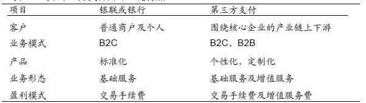平台型拓展和经营，提升潜在价值：尽管在线下银联与银行很强大，但也有业务死角。例如，处于风险和成本的考虑，银联和银行对收单商户有着较高的要求，如四证一照、营业额、经营场所面积等，这就把众多小微的商户拒之门外。
同时，第三方公司通过“互联网”和“平台”的模式，业务复制成本低，提升管理和营运效率，在细分市场超越银联等强大竞争对手。而第三方支付可以借助外部团队，积极拓展形成平台经济，在衍生出其他盈利模式如广告、理财销售、小额贷款等。
随着银行卡交易的普及，线下支付应用的增速正逐步放缓，而第三方支付机构也难以打破以银联和银行为核心的交易结构。尽管一些机构通过细分市场、客户结构下沉和附加值服务来提升市场份额，但很难打破目前传统金融机构主导的格局。
2.线上支付：虚拟账户+电商平台
“线上支付”的经营模式。经营模式：通过电商平台发展支付平台，通过虚拟账户替代银行账户，互联网经营。竞争格局正步入红海领域：支付宝、财付通和银联三家占比80%以上，集中化趋势加剧。平台经济往往出现“赢者通吃、强者恒强”的局面。
电商平台是线上第三方支付发展的基础：线上支付最大应用在于网购，占到总规模的42%。电商平台的出现和发展不但打破传统商业的格局，也彻底打破旧有的支付和交易的格局。
银行在线下支付中积累的优势在线上无法体现。线下支付体系是以银行和银联为基础的封闭体系，并且商户在成本、便捷性和安全性的考量下很难接受第三方支付作 为收单机构。但线上支付是一个开放体系，体现在：①基于互联网技术的支付可以高效的实现收单机构和发卡机构的多对多，而不需要银联转接，从而使体系的开放 性大大增强。②在线下支付中，商户很难同时接受多个收单机构，一方面是因为法规限制，另一方面是收单机构的终端成本。但在线上支付中，收单机构的终端就是 支付网关，成本几乎为零，所以商家可以选择使用多个收单机构，这降低了第三方支付的进入壁垒。
图1：线上支付的应用方向
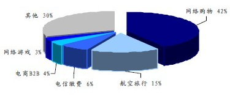虚拟账户解决了线上支付的最大障碍。线上支付和线下支付最大的区别在于空间的不对称。线下支付可以当面做到钱货两清，但线上支付由于空间的距离，难以做到 一手交钱一手交货，在传统支付体系中必然有一方要承担额外风险。而虚拟账户（支付宝、财付通等）的出现就解决了这个问题，通过虚拟账户交易，由第三方支付 承担信用中介的责任，从而促成交易的完成。
虚拟账户和银行账户的关系。虚拟账户是互联网支付的核心（解决了网络消费的信用中介的问题），也是第三方支付机构的主要盈利模式之一。其具体的操作模式如下：
第三方支付成立的虚拟账户（如支付宝等），必须在银行成立一个总的备付金账户。虚拟账户的资金统一在这个备付金账户中处理。
客户在使用虚拟账户消费转账过程中，会在备付金账户内沉淀出一定规模的资金。这部分资金的利息收入归第三方支付机构所有。但第三方支付机构并不能够对备付金账户中的资金随意处置，只能存活期或最长一年的定期存款，因此这部分资金绝大部分只能获得活期利息收入。
支付宝备付金账户中的沉淀资金有两类：一类是待清算资金（如利用支付水电煤、还信用卡和银行卡转账），由于支付宝通过银行代付周期一般在一天以上，因此这 些资金在被划走前会沉淀在备付金账户；第二类是中间账户资金（如淘宝购物），由于支付宝的一大功能是信用中介，因此顾客利用支付宝在网上购物后，资金首先 被划拨到支付宝中间账户，当顾客收到货物再主动或者被动确认付款（支付宝的被动付款的时间是20天）。备付金账户的利息收入主要来自于第二类，主要是第一 类资金的沉淀周期太短，因此收入贡献度低。
国内前三大第三方支付平台是：支付宝、财付通和银联，占到市场份额的90%以上。支付宝和财付通的备付金管理模式一致，但银联有所不同。由于银联是人民银 行下属国有企业，因此银联的备付金账户设在人民银行而非商业银行，其备付金账户的资金是得不到利息收入的。银联的盈利模式主要依靠交易手续费。
目前线上支付成三足鼎立态势。支付宝、财付通都是同事具有电商平台和虚拟账户着两大法宝。而银联在线则主要依靠其特殊背景在公共事业等领域和垄断部门有较 大的市场份额。所以，总体上支付宝、财付通和银联的市场占有率超过80%。而网络领域依赖平台经济往往有赢者通吃、强者恒强的结果，除非革命性的技术或应 用的诞生，领先者和追赶者的差距可能越拉越大。并且随着互联网支付渗透率的提升，行业增速也会缓慢下滑。
图2：线上第三方支付的市场份额
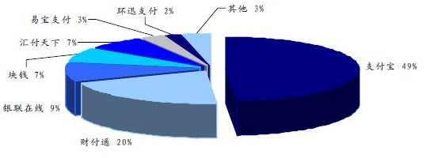| 银行动态 |
乾康（上海）信息技术有限公司 > 金融咨询 >银行动态 |
|
17家第三方支付企业获得跨境支付牌照
|
2013-11-19 |
|
单位卡创新产品宁波银行单位结算卡
|
2013-11-19 |
|
富国银行的发展历程
|
2013-11-19 |
|
工行拟10月上线电商平台
|
2013-11-19 |
|
金融危机的七步曲
|
2013-11-19 |
|
民生社区银行
|
2013-11-19 |
|
平安的绿金融
|
2013-11-19 |
|
社区银行：商业银行的转型重要方向
|
2013-11-19 |
|
社区银行进化论更小更聪明
|
2013-11-19 |
|
社区银行石家庄萌芽
|
2013-11-19 |
|
小而不倒社区银行
|
2013-11-19 |
|
小微贷业务的出路
|
2013-11-19 |
|
直销银行
|
2013-11-19 |
| 银行动态 |
乾康（上海）信息技术有限公司 > 银行动态 > 17家第三方支付企业获得跨境支付牌照 |
17家第三方支付企业获得跨境支付牌照
上证报记者昨日获悉，支付宝等17家第三方支付公司已获得跨境电子商务外汇支付业务试点资格。
昨日一位消息人士向记者透露，近日，支付宝、汇付天下等多家企业接到国家外汇局的口头通知，被告知他们已获得跨境支付业务试点资格，“不过纸质的文件还没拿到手。”
17家获得资格的公司主要分布在五地，获得业务资格有所侧重。
总部设立在上海的汇付天下、通联、银联电子支付、东方电子支付、快钱、盛付通、环迅支付、富友支付等8家支付公司获准开展跨境电子商务外汇支付业务试点。东方电子支付业务范围限于货物贸易，其他7家公司限于货物贸易、留学教育、航空机票及酒店住宿。总部设立在重庆的易极付公司获准试点，业务类型限于货物贸易。
总部设立在深圳的财付通和钱宝科技获准试点，前者的业务范围限于货物贸易、航空机票及酒店住宿，后者则限于货物贸易。
总部设立在杭州的支付宝和贝付科技获准试点，前者业务范围限于货物贸易，留学教育、航空机票及酒店住宿，后者则限于货物贸易及留学教育。
而总部设立在北京的通融通、爱农驿站科技服务有限公司、钱袋网、银盈通获准试点，前二者业务范围限于货物贸易、留学教育、航空机票及酒店住宿，钱袋网限于货物贸易，银盈通限于货物贸易、航空机票及酒店住宿。
今年3月，外汇局曾下发《支付机构跨境电子商务外汇支付业务试点指导意见》，决定在上海、北京、重庆、浙江、深圳等地开展试点。允许参加试点的支付机构集中为电子商务客户办理跨境收付汇和结售汇业务。
外汇局规定，试点支付机构为客户集中办理收付汇和结售汇业务，货物贸易单笔交易金额不得超过等值1万美元，留学教育、航空机票和酒店项下单笔交易金额不得超过等值5万美元。
所谓支付机构跨境电子商务外汇支付业务，是指支付机构通过银行为小额电子商务(货物贸易或服务贸易)交易双方提供跨境互联网支付所涉的外汇资金集中收付及相关结售汇服务。
业内人士表示，第三方支付机构跨境支付业务试点的铺开，不但直接利好参与试点的支付机构，还将利好境内的电商平台和网上卖家。“通过试点支付机构，网上个人卖家可以直接与境外买家进行交易，无需再为个人结售汇等繁琐的手续而困扰。”
同时也为境内消费者在网上“海淘”带来巨大的便利。“原来还需要通过有VISA、万事达等双币卡才能在境外网站上消费，而现在则可以使用单币种的人民币卡通过试点支付机构在境外网站上消费。”这位人士说。
| 银行动态 |
乾康（上海）信息技术有限公司 > 银行动态 > 单位卡创新产品宁波银行单位结算卡 |
单位卡创新产品宁波银行单位结算卡
产品介绍
单位结算卡
是针对企业客户发行的，以卡片为介质，凭密码为客户办理相关账户支付结算的工具，具有存取现金、转账等功能。
适用对象
单位结算卡的适用对象为符合我行认定标准的经工商行政管理机关（或主管机关）核准登记注册、从事合法经营活动、独立核算，并在宁波银行开立对公基本账户或一般账户的小企业及个体工商户。
优势和特点
省时省力：刷卡取款、转账，存款可免卡，无须再填凭证、编密码；
随时随地：可在宁波银行的任一网点、ATM使用；
免费使用：推广期间免收年费，节约小企业财务支出。
相关说明
1、一个单位结算账户仅可开立一张捷算卡，一张捷算卡仅对应一个单位结算账户，不可开立子卡。
2、持卡人：捷算卡的持卡人必须为申请单位的法定代表人或负责人。除持卡人外，至多可再指定一位其他经办人。
3、交易限额：柜面取现单笔金额不超过人民币5万元；在自助终端机上取现的，单笔金额以终端限额为准，当日累计金额不得超过人民币2万元；在柜面及自助终端当日取现累计金额总额不超过人民币30万元。转账业务单笔金额不超过人民币30万元，当日累计不超过人民币100万元。
业务申请
单位的法定代表人或负责人持本人有效身份证件，以及加盖公章的《宁波银行捷算卡业务申请表》，到宁波银行分支行零售公司部办理捷算卡业务。
| 银行动态 |
乾康（上海）信息技术有限公司 > 银行动态 > 富国银行的发展历程 |
富国银行的发展历程
2013年7月24日，富国银行市值超越中国工商银行，把“宇宙行”从稳坐近6年之久的“全球市值第一银行”的宝座上拉了下来。在“市值第一”这样的虚名更迭背后，体现出的是市场对富国银行综合实力的充分肯定。
在最后一部分中，我们也将为您复盘富国银行成长的各个阶段，分析富国银行的转型升级之路，并探讨：富国银行的核心竞争力究竟是什么？国内银行应当向富国银行学习什么？
富国银行的发展历程大致可以分为以下四个阶段：
第一阶段，1852年至上世纪80 年代：脱胎于快递公司的社区银行。
富国银行的前身是1852 年成立的富国公司，主要在美国西部提供银行业务和快递服务。1905年，富国银行正式从富国公司分离。1960年起，富国银行逐步将网点由加利福尼亚北部向南部延伸，到上世纪80 年代已成为加州最大的社区银行之一。
第二阶段，上世纪80 年代至1994 年：跨州经营的地区性银行。
1982年，美国银行业跨州兼并政策开始松动。为适应监管政策变化，拓展业务收入来源，富国银行开始在加利福尼亚及邻近州并购经营。在整个80 年代及90 年代初，富国银行收购的金融机构超过了100家。
第三阶段，1995年至2008年：全国性银行。
自上世纪90年代，美国进一步放松了银行业跨州经营监管政策。为抓住政策机遇，提升在美国市场的地位，富国银行相继并购了第一州际银行、西北银行、美联银行等中大型银行，将经营范围扩展至全美。
第四阶段，2009年至今：全国性银行的整合提升。
2009 年开始，富国银行开始与美联银行进行整合，包括整合业务系统、撤并重叠网点、重新安排撤并网点员工等。2011 年年末，富国银行机构数量为9112 个，较并购美联银行初期减少了近2000 个，净利润也实现了连续攀升。
富国银行转型升级中的五大战略
在富国银行转型升级的过程中，有五个战略是一直不曾动摇的。对于这五大战略的落实，也让富国银行在发展壮大的同时，逐渐形成了自己的核心竞争力。
具体来说，这五大战略分别是：
一、坚守核心业务不动摇。
富国银行的核心业务是下面三个条线：
社区银行，主要为个人及小企业(年销售额小于2000 万美元)提供包括投融资、保险、信托等全方位金融服务；
批发银行，为年销售额超过2000 万美元的大中型企业提供包括投融资、投行、国际业务、房地产、保险、咨询等金融服务；
财富管理，包括理财、经纪和养老业务，为客户提供包括财富管理、个人金融总体方案等服务。
这三个条线的核心地位不是一蹴而就的，上世纪80 年代，为应对市场化改革，富国银行走了一条与其他美国大型商业银行不同的发展路线： 面对摩根大通、花旗银行等大银行，纷纷将投资银行业务作为发展重点，大力拓展投资和经纪业务，富国银行却选择了坚守——坚守传统商业银行的业务阵地，坚持以社区银行业务为主营业务。
富国银行的业务条线几经调整，逐渐形成了以社区银行、批发银行为主，富国理财为辅的三大业务结构。其中，社区银行是富国银行最主要的收入来源。其主要是为个人和小企业提供全面且多样化的金融服务。2000 年以来，社区银行的收入占比一直保持在50% 以上，部分年份高达70%。
二、深耕本土市场，注重规模效益
与大部分银行发展壮大的过程一样，富国银行在自己的发展过程中也多次并购其他银行，但与竞争对手多进行海外并购，在海外市场进行扩张不同，富国银行的并购以本土化为主，不盲目进行国际化并购。截至2011年末， 富国银行97 % 的银行资产和98% 的员工都在美国本土， 外国分行仅有8家， 外国贷款也只占富国银行资产的5%， 与花旗银行54% 的资产在本土，外国分行达到347家形成鲜明对比。
富国银行不是没有国际化的远大目标，一直以来，富国都将自身目标定位于成为“全球范围的主要金融机构之一”。但在现实运作过程中，富国的举措还是与花旗、汇丰等大型金融机构的跨国经营发展战略形成鲜明对比，其主要并购行为均在美国境内完成。
为更好地契合自身的发展战略，富国银行提出了并购六原则：1、文化兼容性；2、项目可操作性；3、有助于改善客户关系；4、充分认清风险；5、内部收益率15%；6、三年内实现并购增值。只要能满足这六项原则，富国银行的并购举措往往大胆而果决，上演了多次“蛇吞象”的并购好戏，逐步将自己的服务区域扩展到美国全境，并建立起遥遥领先的网点规模效益。
三、网点定位准确，销售能力惊人
富国银行将自己的零售网点称为“商店”(Store)，并在店面设计上采用了许多零售和超市的概念，以此强调顾客和服务的重要性。有些金融商店还借鉴沃尔玛的做法，派专人迎接客户，为客户介绍新产品，按产品的相关性摆放宣传资料等。
富国银行的经营目标是“满足客户在财务方面的所有需求，帮助他们在财务上发展成功”，力图使自身成为一家能够提供客户所需要任何产品的“百货超市”式的全能金融机构。为此，富国银行以客户为中心设计了八十多个业务单元，覆盖了客户整个生命周期中可能产生的主要金融需求，成为富国银行实施“一站式”金融超市服务的坚实基础。
与此同时，富国银行也是全美销售能力最强的银行。富国银行用几十年的时间，培育起强大的交叉销售能力，并获得了“交叉销售之王”的美誉。富国银行不仅在内部大力宣传交叉销售的企业文化，并且通过一系列机制保证交叉销售的理念得以落地。富国银行建立了一个高效的客户关系管理平台，为每一个客户经理提供整合的客户信息和金融产品知识，并在此基础上建立了客户识别模型以及回应预测模型，用以有效识别客户的潜在需求，提高营销效率。
四、独到的风控机制，专注小微业务能力培养
在同业中，富国银行较早发现小微业务的潜力，并推出专门的服务品牌。在上世纪90 年代初，富国银行成功建立起小微企业信用评分系统，成为小微企业贷款成功的重要技术保障。另外，富国银行对小微企业贷款采取个人贷款的监管方式，以科学化、数量化的风险管理模式来保证所承担的风险可控。
凭借独特的业务模式和风险管理理念，富国银行小微企业业务快速发展。截至2011
年年末，小微企业贷款同比增长8%，高于整体贷款增速7个百分点；“企业通”处理了超过200 万笔贷款，其中2/3的贷款决策是由系统自动完成的。2012年前三季度， 富国银行对小企业新增贷款114亿美元， 比上年同期增长约30%。
通过成功的小微业务实践，富国银行不仅获得了社会的广泛赞誉，也获得了超越同业约1%的息差水平。这在竞争激烈的美国金融市场，是一个非常了不起的成绩。
五、重视电子渠道的发展与整合，提供最佳的客户体验
截至2011 年年末，富国银行的电子银行和手机银行客户数分别超过2240 万和730万，客户50% 以上的业务是通过电子渠道完成的。这意味着富国银行不仅成为全美物理网点最为发达的银行，同样拥有全美最发达的电子银行系统。
富国银行电子服务渠道包括网上银行、客户服务中心及门户网站。三个系统通过不同方式的链接，为客户搭建了统一的、业务功能全面的营销和服务受理平台：网上银行提供在线服务支持功能，主要定位在客户账户和资产管理应用上；客户中心支持自动语音交互、电话、E-mail 和信件等多渠道访问，以客户自助方式或银行坐席人员完成客户跨时间和地域的销售和服务请求；门户网站是富国银行营销和服务在互联网渠道上的主要集中应用。
富国银行所有渠道都是由个人需求与产品高度集成，在门店渠道采用可触摸式PinPad 来替代传统的电子资料显示屏，大大提升了客户体验；ATM 的内容则可根据后台客户数据分析来定制客户需求选项；同样，手机和网络渠道也是定制的。便捷、个性化的电子渠道，大大提升了富国银行的客户满意度。
另外，富国银行也能充分利用各类网站，细分客户群体，强化客户服务体验。富国银行乐于在各种热门网站、应用上与客户互动，如Facebook，Myspace，Youtube，Twitter 等，致力于成为客户生活方式的一部分。此外，为了更多地与客户群进行互动，富国银行还推出了针对各类客户的专业指导博客，如2006 年推出的Guided by History 博客、2006 年9 月推出的学生贷款博客、2010年推出的专门针对基金客户的Advantage博客。
富国的核心竞争力是什么？
从富国的案例中，我们可以提炼出来的，富国银行的核心竞争力，究竟是什么呢？
笔者认为大致有以下三点：
1、渠道经营有方，专注传统业务
富国银行的经验告诉我们，通过切实服务实体经济获利的传统模式仍然是商业银行的立行之本。而若要服务好实体经济，深耕银行的几大传统业务，必须立足现有客户、增强多渠道的服务和渠道之间的互动，提升渠道产能，提高现有客户盈利贡献度。这是富国银行由小变大、以“弱”胜强，在金融危机中取得跨越式发展的根本。
2、明确的业务创新意识，严谨的业务流程理念
主做传统业务并不意味着要按传统的思路来做，该推行的创新一定不能迟疑，该淘汰的思维一定要果断淘汰。富国银行的成功，不仅因为它拥有全美最大的网点体系，也不仅因为富国银行较少参与金融衍生品的交易，从而在同业遭殃的同时得以“存活”下来。富国银行本身就具备极强的业务创新意识，这帮助它在社区银行、小微企业等业务上占得先机，成为后来者模仿、学习的标本。但富国银行的创新又是遵循着一套严谨的业务流程理念的，这就意味着创新的领域会受到一定的约束，创新的边界也进行了较为严格的设定，以免在遍地诱惑与陷阱的金融市场中误入雷区。
3、强悍的营销能力和成本管控能力
富国银行始终坚持将客户的利益放在第一位， 目标是尽力满足客户的全部需求。这一点贯穿在产品设计、销售和服务中， 成为富国银行的核心理念和发展动力。由于能够针对性地研发相关产品，这也直接助推了富国银行在产品、服务营销能力上的强悍表现。2011年， 富国银行对每个家庭的零售产品数量平均达到5.92个， 在最高区域达到7.38 个。
富国银行的成本管控能力在同业堪称一流。一方面，富国银行的存款成本在同业中一直保持较低水准，另一方面，富国银行在网点成本控制、业务成本控制上也颇有心得(一家富国银行的“商店”建设成本仅为传统网点的四分之一)。2012年， 通过全行上下对部门结构的重新整合及削减不必要开支， 富国银行成本收入比由2011年的61%下降至57.1%。
从以上归纳的三点乍一看并无特别之处，渠道经营、业务创新、流程管控、成本控制……都是国内银行老生常谈的话题。但实际上，真正能把这些东西当作“核心竞争力”来经营的，又有多少呢？
核心竞争力的形成，需要对现有业务的提炼与专注，也离不开对于外部经验的参照与学习。银行的核心竞争力并不是自发形成的，而是在一定的阶段周期中，通过有意识的创新、超越和学习，在自身失败的经验和错误当中不断地反省和总结出来的。所以，希望上述对于富国银行的案例复盘，对于我国银行从业者来说，不仅仅是值得一读的同业故事，更应是触发深度思考的引子，只有这样，才能真正明白银行核心竞争力的关键所在，也才能走在重塑核心竞争力的正确的道路上。
| 银行动态 |
乾康（上海）信息技术有限公司 > 银行动态 > 工行拟10月上线电商平台 |
工行拟10月上线电商平台
工行大电商平台或10月上线，目前工行的网上商城主要以购物为主，新的电商平台将集网上购物、投资理财、网络融资、消费信贷于一体，增加的投资理财和“融资”功能将提升其服务能力。
推出电商平台，不仅仅是工行应对互联网金融大潮之策，也是其建设信息化银行的重要一步。
小企业或暂时不上平台
在今年7月16日举行的工行年中工作会议上，工行董事长姜建清表示，要推进信息化银行建设，并提及三点：加强客户信息真实性治理，加快数据仓库和信息库建设，组建“数据分析师+专业分析师”的专业团队；加快构建网上购物、投资理财、网络融资、消费信贷于一体，“支付+融资”的综合电子商务平台；加快信贷业务流程改造，提高信贷运行效率与集成度。
目前的网上商城定位中高端客户，在“得屌丝者得天下”的口号下，新推出的电商平台的客户有望更全面。
“但是由于有融资、消费信贷等功能，这需要客户有一定的信用资质，所以太屌丝的客户有一部分服务并不适用。而入驻电商平台的企业此次对资质要求会很高，小企业暂时上不了该平台，这主要是出于审慎的考虑。”该知情人士称。
“同时，电商平台的手机版、Ipad版等也同步在做，希望打造全渠道。”该知情人士称。
互联网金融竞争压力
银行系电商推出多年，但普遍发展缓慢，甚至被市场人士形容为“鸡肋”，本月兴业银行更是关闭了其信用卡网上商城。
“打造电商平台的投入产出比不高，成本高昂，但是通过打造一个闭环的金融生态环境，将支付创新、融资业务、客户积分、金融产品销售等整合在一个平台上，背后带来的海量资金、客户信息等数据，都是银行非常看重的，这也是为什么打造电商平台出现在了姜建清董事长提及信息化银行建设的要点中。”该知情人士表示，电商平台还能增加银行客户粘性。
而信息化银行是工行的重要战略方向。行长易会满在6月份的股东大会上表示，“下一步工行将重点关注在大数据背景下如何建设信息化银行，利用海量的结构化、非结构化数据，通过数据的集中、整合、挖掘、共享，来进一步发挥好信息的价值和创造力。”
而选择在此时推出电商平台的背景则是，与阿里巴巴合作的失败，以及目前的互联网金融大潮下，建行推出的电商平台让其感受到了竞争压力。
| 银行动态 |
乾康（上海）信息技术有限公司 > 银行动态 > 金融危机的七步曲 |
金融危机的七步曲
银行间同业拆借利率飙升是金融危机的第一步，这是《卢瑟经济学》之《纸牌大厦》中的内容。
商业银行玩的是十个坛子两个盖子的游戏。吸收2亿存款，放8亿贷款。于是，存款总数达到10亿，贷款总数达到8亿。8亿贷款按期顺利偿还的话，存款又会回到2亿。如果贷款放出去收不回来，那么贷款就会变成坏账，存款总数则不会消失。这时，如果有人提款的额度超过2亿，银行就会倒闭。
理论上，储户从甲银行提款，迟早还要存入银行系统，比如乙银行。所以，当甲银行无法应对的时候，甲银行可以向乙银行求助。这种银行间互相借钱的行为，就是同业拆借。最短的只借一个晚上，就是隔夜拆借。银行之间借钱也要交利息，利率随行就市。在中国，这个利率就是shibor利率。
问题是，如果乙银行现在也遇到类似的情况，那么甲银行就很难借到钱，因为乙银行不但不能借钱给甲银行，而且自己也需要借钱。甲乙银行彼此争着借钱，同业拆借利率就会上涨，甲银行和乙银行的资金缺口越大，就越会提高利率吸引资金。从整个银行行业来看，shibor利率暴涨，就意味着整个银行系统内部资金极度紧张。
这时，对企业来说，一下子面临两难的局面，一面是订单消失，一面是银行催缴贷款。为了保住企业，大量相对次要的资产，比如房产和股票就会被抛售。当所有人都试图挤出去的时候，所有人都挤不出去。这时，任何资产都卖不掉，只能大幅跌价。
这时，那些没有偿债压力的资产所有者，为了避免自己的资产贬值，蒙受损失，也会开始抛售资产持现。于是，进一步加剧资本市场资金的紧张程度和资产价格的下跌程度。
银行资金紧张到一定程度，有些小银行就会开始停止支付，也就是说储户难以提现。或者储户在该银行开户的账户中签出的支票，难以兑现。这时，就酝酿挤兑风潮。一旦挤兑风潮开始，储户就会大规模从银行提现，然后整个金融危机一发而不可收拾，央行就是大规模向商业银行放贷也已经来不及了。全社会进入大规模的结账状态。这是金融危机的第二步。
理论上只要没有印钞权，就是英格兰银行也曾经被挤兑。（类似的情况还有美联储在上世纪70年代被挤兑黄金。）现实之中，大多数国家往往会开动印钞机，挽救涉及国计民生的大银行。
在此期间，大量外国资本会外逃，导致本国银行资金进一步紧张，加剧危机。另一方面，资本外逃必然用本币兑换国际货币，十九世纪和二十世纪初是黄金，二十世纪中叶以后是美元。这时，如果资本项是开放的，允许在一定额度下本币自由兑换外币，就是本国央行开动印钞机，也无法拦住外逃的资本。（美联储可以印美钞，却无法印黄金，这就是美联储被挤兑的原因。）于是，本币在国际市场上必然相对国际货币贬值。这是金融危机的第三步。
大规模的本币贬值在短期内必然造成本国债务负担激增，进口原料价格飙升，出口商品价格下跌。许多签订长期供货合同的企业会发现自己的销售货款无法购买原料，生产被迫中断。当然，也有企业会盈利。但是，盈利的企业显然不会把自己的利润分享给亏损的企业，于是经济必然出现猛烈下滑。为了避免出现这种情况，大多数国家都会打肿脸充胖子，用本国的外汇储备购买外逃资本抛售的本币，试图稳定人心。这时，本币的汇率会阴跌，甚至相对稳定。同时，央行的外汇储备会不断下降。相当于外国资本在从央行取钱。这是金融危机的第四步。
一旦央行的外汇储备下降到一定程度，就要难以维持相对稳定的本币汇率。央行要么向其它国家求援，要么向国际货币基金组织求援。这时，这些组织就会把这些求援的信息公之于众。于是，央行陷入本国公民大规模换取外汇的人民战争的汪洋大海之中。让求援国陷入困境，才好提出苛刻的贷款条件，这是国际货币基金组织的一贯做法。这是金融危机的第五步。
经过剧烈的下跌以后，本国资本大幅度贬值，外国资本回来廉价收购购这些资本。完成产权关系转移，这是危机的第六步。与之类似，那些持有现金的国内资本利用金融危机大规模兼并同行，完成扩张是金融危机的最关键的一步。这是残酷的零和博弈，许多人一夜回到解放前。
最后，本国资产所有权大规模变更，本国经济一片萧条，失业率飚升，社会动荡，百废待兴。为了获得国外市场，刺激经济复苏，增加就业，某些国家主动贬值本币。许多出口型企业从此复苏，许多借外债购买设备和原料的企业陷入困境。 盈利的企业挤垮、兼并陷入困境的企业，这是金融危机的最后一步。
金融危机是经济危机的一种，为什么所有银行都会在同样的时间内钱紧的具体原因不是一篇博文能说清楚的。简单地说，资本主义制度下，任何扩张行为结束之后，只要全社会消费水平没有达到扩张以后对应的高度，必然面临危机。政府可以用政府消费替代民间消费，但是政府本身难免陷入债务危机。货币淤塞在少数人的手中，债务背负在其它社会成员的身上，当货币和债务的堆积达到一定程度，就必然出现金融危机。一部分人要抛售手中的资产偿还债务，另一部分人用手中的货币廉价收购资产。这就是信用货币的湮灭，类似化学实验中酸碱中和的行为。只要存在资本扩张，就必然出现产权转移，金融危机是一种剧烈而集中的产权转移行为。这是，那些存量货币就会被调动起来，它们被调动起来的原因是为了廉价捡便宜。
央行可以印刷本币，却无法印刷外币，可以用通胀为代价挽救银行，却无法保住本币的币值。只要存在外来资本，允许资本自由流动，就难免会出现本币贬值的现象。
| 银行动态 |
乾康（上海）信息技术有限公司 > 银行动态 > 民生社区银行 |
民生社区银行
sunshine408：不一样的民生银行，小区门口的社区银行刚开业，两到三个工作人员，营业到晚上7点，为小区居民提供金融服 务，有点富国银行的味道！正好碰到视察工作支行行长，听行长说大连近期要筹建100家社区银行。工作人员亲和力也不错，唯一不足就是提供的金融服务还不是 太丰富，有待完善。
看好股市的新人：目测这个网点的面积约50、60平方，年租金应该不高于10万，配备3个工作人员，人均年薪不高于10万，设备折旧费5万，合计一年支出 45万。民生2012年营业收入1031亿，扣除税金78亿和拨备92亿，余861亿，对应的2012年日均生息资产为26000亿，资产毛收益率为 3.3%。按此收益率，这家网点只要日均吸纳1500万资产，就可基本维持盈亏平衡，这应该不是难事。
yy咪蒙尾遂：嘿嘿，多开，然后做物流端。理财端，彩票端。和阿里合作。社区。是消费主流终端。得屌丝得天下。当然具体要看执行。这个面向的是过日子的老 百姓。年轻人是很懒的。打通渠道。连配送生活用品都做了。对了。切记和物管和业委合作好哈。以后在家点要用的东东就好了。嘿嘿。执行，执行。执行。
价值趋势技术派 ：这个社区银行估计是有擦边球的嫌疑。估计不算是正式的网点。至于人均利润，我前面说过一个想法，其实就和你末尾提到招商的事情一样。在高净值客户所在的 小区里开这种网点，绝对不是为了吸收多少存款，而是为了紧紧抓住零售业务的最源头。除非以后招商有本事让客户都在网络上玩，或者也去开一个社区网点。做得 到的话，民生两眼一摸黑了否则就是轮到招商跳脚了。比如，某个客户有金融服务的需求，直接下楼找民生业务员商量半小时就搞定了，用不着等明天招商开门了。
下图则是，民生银行在昆明刚刚开业的社区银行：
| 银行动态 |
乾康（上海）信息技术有限公司 > 银行动态 > 平安的绿金融 |
平安的绿金融
借助科技的力量，中国平安对金融机构的低碳行动进行了全新的诠释
中国平安集团董事长马明哲希望借助科技跑赢竞争对手。
最近一次引人瞩目的行动是，中国平安集团成为第一家拥有独立支付公司的金融机构，在互联网尤其是移动互联网时代，他已取得主动权。其他引人瞩目的举动就更多了，例如在企业社会责任方面，早在三年前，马明哲就提出了“绿金融”的概念，绿金融的核心就是，将科技注入金融活动的各个环节，以减少碳排放和纸张等浪费。
在接受《中国慈善家》专访时，中国平安集团品牌部总经理盛瑞生透露，“这跟马总的性格有关，他对新科技的东西特别感兴趣。他说，我们一定要尽量用科技的手段，让碳排放降低的低碳行动实实在在地体现出成效。”
三“绿”行动
在盛瑞生看来，三年前马明哲提出金融公司做绿色金融，是一种适当其责的表现，“无论从环境的紧迫性上看，还是从我们作为一个有影响力的企业，对整个国家可持续发展带来的贡献，或者对社会的倡导助推作用上看，都是很必要的。”
2010年3月，中国平安正式启动“低碳100行动”，将100项低碳举措贯彻落实到企业经营管理、业务发展、员工日常办公等环节中。这100项行动包括， 66项日常办公、14项采购环节、12项业务环节以及8项绿色金融项目。8项绿色金融项目包括保险领域的环境污染责任险、车险费率与环保指标联动的绿色车险、针对气候恶劣地区的小额保险，银行领域的绿色信贷及相关中间业务，投资领域的投资环保产业、证券辅导上市的环保审查以及成立绿色产业投资基金。
低碳100行动主要包括三个层面：运营层面—绿公司；业务层面—绿金融；公益层面—绿公益。“这个行动还是他（马明哲）亲自想的名字。”盛瑞生说，“他是一个广东企业家，讲实干。”
无论保险业还是银行业，相对于制造业，都更加环保，碳排放相对较低。不过，对纸张的需求量却更多。马明哲希望用科技手段降低对纸张的依赖，于是三年前，中国平安推出了电子账单。“我们为客户推电子账单，这在保险业内是首创。”盛瑞生说。
据统计，2009年平安人寿个险每月新契约保单约43万份，平均每份保单耗费27张A4纸，全年折合用纸约1.4亿张。未来十年间将产生新契约保单数量约2亿份，若其中50%的客户选择电子保单，则可以减少纸张消耗27亿张，合计约1200万吨，而生产一吨纸浆产生约0.8吨的碳排放，据此计算，一亿份保单将可以减少碳排放960万吨。
平安信用卡也在三年前推广电子账单，通过赠送消费积分等方式鼓励客户舍弃纸质账单，选择电子账单。2012年全年电子账单件为1655.4万封，占总账单数的40.18%，节省用纸累计约269吨，同时还节约了1345.2万次邮政运力。另外，平安寿险的电子函件推广使用四年来，于2012年12月已经突破1000万，仅2012年一年，在电子化服务方面一共节省近900吨纸。
除此之外，中国平安还在汽车保险中实行绿色影印。比如客户开车不小心撞到墙，不涉及第三方，就可以直接拍照片发微信到公司的后台，报案任务就完成了。在这个过程中，保险公司的查勘员不用再到现场查勘，减少了交通使用率，之后，顾客不需要提供包括保单复印件、驾驶证等在内的诸多复印件，只需用手机拍照传给公司，作为凭据，这样不仅节省了纸张，也降低了碳排放。
在打造绿色金融方面，中国平安还有开拓性应用，就是推出环境污染责任保险，在国内也是首创。2012年平安保险的环境污染责任险承保830件，比2011年增长了70%，保险总金额是19亿元。“这类责任险产品，企业是不大可能挣很多钱的。”盛瑞生说。
联合国环境规划署金融行动负责人Mr.Clements-Hunt说：“看了平安低碳100行动的100项具体计划之后，我非常惊讶。很明显，中国平安已经将绿色理念贯穿到了公司运营的各个环节。这是我第一次看到一个金融机构以如此大的决心，从各个角度进行绿色金融的全方位实施。”
但在马明哲看来，这些都是中国平安的分内之事，“作为社会的一员，我们要义不容辞地承担起这个责任和义务。
| 银行动态 |
乾康（上海）信息技术有限公司 > 银行动态 > 社区银行：商业银行的转型重要方向 |
社区银行：商业银行的转型重要方向
移动互联网技术的迅速发展，既使银行面临巨大挑战，也为银行零售业务转型提供了新的机遇。移动互联时代的银行渠道变革将突出虚实结合，“虚”即加快网络银行、手机银行等建设步伐，“实”则要求贴近消费者，大力发展社区银行，并实现银行线上线下高度协同。随着网络和现代通讯技术的发展，银行服务方向、营销渠道、客户金融需求等正发生着深刻变化，出现了金融需求多元化，客户需求差异化，营销渠道虚拟化，金融服务自助化，金融设备综合化的新趋势。网络、网购、快递不仅改变着人们的生活方式，也为银行转型社区银行提供了新的机会和发展空间。
社区银行：商业银行转型的重要方向
社区银行既泛指银行面向社区提供的各种金融服务，又指银行服务面向和营销渠道。社区银行模式打破了传统的“等客上门”的形式，走进社区，贴近客户，增强客户黏度。社区银行的形态既可以是有形的服务网点，也可以是各种自助设备。
（一）社区银行模式选择
一般来讲，尽管网点可以为社区居民提供资金类、资金服务类、理财类等金融产品和服务的全方位解决方案。但设立一个网点需要租用房屋、雇用人员，年投入约400万元，运行成本较高。安装ATM成本较低，但功能相对单一，无法满足社区居民对贷款、信用卡申请、理财顾问等复杂产品和服务的需求。因此，网点式社区银行和基于ATM的设备型社区银行并非最佳选择。VTM（虚拟柜员机、智能柜员机）是近几年银行与金融设备制造商合作开发的新一代电子银行设备，以VTM为载体的虚拟银行或智能银行立足社区，兼有网点和ATM的共同优势，既能为客户需要的简单金融业务提供“3A”服务，又可以通过远程授权处理消费信贷、信用卡审核等复杂的金融业务。有人将其特点概括为“无人值守、有人服务”。
（二）基于VTM的社区银行的作用
第一，适应网络和现代通讯技术时代的银行客户消费习惯。随着电子银行的迅猛发展，电子银行账务性交易和收入呈现爆发式增长，客户已逐渐习惯于使用互联网、手机、电话和银行设备办理业务。非网点式渠道对传统网点的替代越来越明显，24小时智能银行已经覆盖了几乎所有个人金融服务功能。第二，VTM替代网点柜员的业务操作，降低银行经营成本。根据普华永道在美国的调查，网点是成本最高的服务渠道。因此，简单银行服务由客户自助完成，让银行员工能腾出时间去处理基金销售、保险销售和个人按揭等一些更复杂的业务，对于银行降低经营成本、提高利润至关重要。随着国内一线城市黄金地段租金的上涨以及员工工资的上涨，未来商业银行将更加依赖多功能综合性自助设备。第三，开拓银行服务区域，转变服务模式。将金融服务延伸到社区是银行转型的重要方向。VTM对于网点较少的股份制银行、城市商业银行和外资银行实施“社区银行”转型具有战略意义。广发银行副行长蔡丽凤强调：“未来广发银行将把24小时智能银行广泛投入到居民社区中，那些以往只能工作时间在银行柜台办理的业务，今后客户也可以选择在下班后、晚饭后的闲暇时间，轻松地在家门口的24小时智能银行自助办理，这正是广发致力打造的社区内的‘广发金融便利店’的服务理念。”
网购：迅速改变居民消费行为
近几年，越来越多的人通过网络购物，网购已经成为零售商品重要的销售渠道，并促进快递业迅速发展。
（一）网购日渐成为一种生活方式。
随着3G网络和智能手机的迅速普及，中国网络购物市场整体还将保持较快增长速度，预计到2015-2016年中国网络购物交易规模将超过3万亿元。普华永道2012年发布的调查报告称，中国消费者的网购频率领先于全球平均水平，全球网购用户将可支配收入的22%用于网购，而中国用户的这一比例为31%。
（二）网购催生快递业迅猛发展。
据统计，2012年淘宝网和淘宝商城两家网站平均每天包裹量已超过800万件，占整个中国快递行业包裹总量近六成。按此估算，2012年全国网上购物包裹数近50亿件。随着电子商务和网上购物的兴起，人们对快递的需求不断增长。但是，快递行业“最后一百米”成本和效率问题以及业主人身安全等社会问题日益凸显。
基于“网购+快递”的社区银行解决方案
银行要成功转向社区开展零售业务，关键是拓展新型渠道和发现潜在客户。一方面，深入社区，贴近客户建立社区银行是商业银行的必然选择。另一方面，网购和速递为银行寻找和锁定优质零售客户提供了机会。社区银行重点目标客户在哪里？广义地讲，社区居民都是社区银行的服务对象。网购不仅改变了消费习惯，也为商业银行开展社区银行业务指明了重点目标客户群。事实上，网购者是社区居民中最为活跃的银行潜在客户，为银行带来了新的业务机会和利润增长点，如扩大银行卡发行、增加消费信贷、提高与网购支付相关的手续费收入。可以毫不夸张地讲，谁能锁定网购者，谁就能得到最有价值的社区银行目标客户。
“速递易”是我国某上市公司利用其银行电子回单箱专利技术开发出的针对速递行业“最后100米”成本和网购业主人身安全等问题的新型解决方案。快递公司将业主包裹送达“速递易”，系统自动通过短信通知业主包裹存放位置，业主凭捆绑到“速递易”的银行卡刷卡可实现自动取包裹，无需等候，无需输入密码，多个包裹一次刷卡全部取完。“速递易”不仅对业主、快递公司、物业公司具有社会和经济价值，而且基于“速递易+银行卡”和“速递易+VTM”的社区银行方案也为银行深入社区开展社区银行业务锁定了最有价值的目标客户，并有效地解决了银行服务同样存在的“最后100米”问题。
（一）“速递易”价值分析
对业主来讲，利用“速递易”可24小时自助取快递，再也不用“等”快递；保护业主隐私；没有“陌生人”敲门。对物业公司来讲，提升物业公司服务形象，提升业主满意度；减少帮业主代收快递的工作量以及潜在的纠纷和风险；增加收益。对快递公司来讲，快递员集中、快速投递，减少快递人员等待客户的时间，提高效率；减少快递人员的数量，降低成本。对银行来讲，锁定特定客户群、扩大银行发卡和拓展业务机会、搭建营销平台；弥补网点不足、分流低附加值业务、拓宽中间业务收入渠道；提升银行新客户对银行业务的体验；聚集人气、传播银行品牌。
（二）基于“速递易”的社区银行解决方案
1.“速递易+银行卡发行”模式。业主需凭银行卡才能通过“速递易”全天候自助领取包裹，因此，“速递易”有助于银行增加银行卡发卡量。同时，捆绑到“速递易”的银行卡可升级为“速递易”VIP，得到延长包裹免费代管时间的优惠。普通客户包裹免费代管时间是48小时，超过48小时需要收费服务。而VIP客户的包裹免费代管时间可以延长到5天。此外，也可将客户的银行卡绑定为缴费卡，以及向客户推荐开通电话银行、短信银行和网上银行。通过“速递易”增值服务丰富银行卡功能，帮助银行扩大银行卡发行范围和数量。
2.“速递易+VTM”模式。在“速递易”上加载VTM远程银行服务，同时外包人员进行现场或远程值守和业务辅助，进行业务宣传、咨询，办理消费信贷和信用卡申请等业务，形成客户一体化处理简单银行业务和复杂业务的新型社区银行解决方案。对银行的价值主要有：第一，扩大客户群体。通过“速递易”将银行业务营销与日常生活（网购、取快递）紧密结合，锁定特定群体。第二，开拓营销新渠道。基于VTM形成简单银行业务客户自助和复杂业务人工辅助新模式。重点推广消费信贷，信用卡申请，基金、理财、保险等产品销售，理财规划咨询等业务，以及办理存取款、缴费等其他自助业务。第三，减少人员占用，降低经营成本。第四，提高银行知名度和客户对银行关注度，增强客户黏性。
（三）社区银行建设模式
1.银行自建模式。银行自行进行全部固定资产投入及日常运行管理及服务，这种方式与传统的银行物理网点或自助银行建设方式基本一致。每个社区银行的固定资产投入和每年运行费用合计约20万元。采用这种方式建设小型的社区银行存在如下问题：第一，选点与建设将耗费大量人力和物力；第二，一次性固定资产投入大，提高了非生息资产的比重；第三，运营需要一定数量的员工，培训、管理、日常运营成本较高，在前期难以有较好的利益回报。
2.专业服务公司外包模式。外包给有实力的专业公司建设，银行采用融资租赁或经营性租赁。专业公司负责社区银行网点选址、物业谈判、社区银行建设、日常运营服务与维护等。相对于银行自行建设和运营管理的优点是：第一，减少了银行一次性固定资产投入，提高了银行生息资产的比重；第二，社区银行网点的日常运营和产品销售采用外包方式，降低了员工培训、管理和日常运营成本；第三，市场推广和客户发现外包给第三方，银行专心负责消费信贷、信用卡申请审核，以及提供基金、保险、理财咨询等高附加值业务。
通过整体外包的方式具有布点速度快、人员负担少、经营成本低的明显优势。
| 银行动态 |
乾康（上海）信息技术有限公司 > 银行动态 > 社区银行进化论更小更聪明 |
社区银行进化论更小更聪明
对于中资银行动辄上千平方米的营业网点来说，90平方米的银行网点小得让人难以想象。
这是富国银行近期推动的“新型商店形态”。对于这家全美网络最大的银行，即便与自身相比，此次的网点瘦身也是一个相当大的跨越——面积只是其传统网点的1/4.
外媒评论，网点革命将进入新世纪，中资银行对此貌似反应寥寥，但潜移默化的改变已经悄然发生。据《中国经营报》记者了解，首推智能银行的广发银行今年将加大在全国重点城市的布点，新一代的网点面积可能只有60多平方米；数家银行的金融便利店也在全国范围内推进。多位接受采访的银行相关业务负责人表示，今年还会加大网点投放力度，但是形态和功能上也会有所变化，零售连锁店将是未来银行网点的发展方向。
“社区化、智能化肯定是未来网点转型的方向，但是并不一定适合所有的银行，还要视银行自身的资源和条件而定，否则盲目转型，不仅不能提高网点产能，还会造成资源浪费。”德勤金融业战略与运营副总监支宝才表示，银行在网点转型中不能本末倒置。尽管智能化或许是此次银行转型最有噱头的标签，但并不是网点转型的实质。德勤在最近的一份报告中将此定义为“网点转型3.0”的时代，最大的目标是实现网点的“以客户为中心”。
网点瘦身
随着移动互联网技术的发展以及智能移动终端设备的普及，银行产品设计、服务模式和营销渠道正在重新塑形。
全球市场调研公司J.D. Power研究发现，最近两年随着电子渠道和手机银行的发展，人们通过网点办理的业务种类和频次正在逐年减少，尤其是年轻客户群体，其中存款、开户、转账等基础业务下滑最快，并由此得出结论：网点应该倾向于提供那些价值更高的业务。
这样的趋势对于中资银行来说也并不陌生，截至2012年年末，各家上市银行的电子银行替代率基本上都在60%以上，其中居首的招商银行零售电子渠道综合柜面替代率已经达到90.66%。 正是在这种情况下，网点变小也成为大势所趋。中国工商银行城市金融研究所金昱就撰文指出，随着大量的日常业务分流至网银、手机银行等电子渠道，网点不再一味追求满足客户所有需求的一站式服务中心，物理网点的规模可以相应缩小，网点的形式更趋多样化。
“掌握多元渠道的银行，应该在不同的渠道上有不同的业务侧重和客户分级管理。银行网点未来就是一个零售连锁店。”某股份制银行零售业务相关负责人表示，网点变小是一个必然趋势，所重点提供的业务也会有所调整
一些银行已经把远见变成了现实，从董事长董文标提出要打造“小区金融”以来，民生银行已经陆续在大连、武汉、深圳等多个城市启动了“金融便利店”的铺设工作。据当地媒体报道，这些店面接近报刊亭大小，只需要配置两三名工作人员，并能够提供24小时的智能服务。
“800~1000平方米的租金，再加上日益攀升的人工成本，银行开一家传统网点的负担太重。”某股份制银行北京分行负责人表示，更重要的是，现在各家银行都在加强零售业务，大型公司业务都由分行或者总行来统一受理，零售网点最重要的是面向个人和小微，因此在规模和业务范围上都会有所精简。
智能因素的日新月异也使网点瘦身成为可能。富国银行主管ATM和网点战略的Jonathan Velline就指出，新科技的加入使得网点更小，可以覆盖原本条件不适合设立银行网点的地方。
以广发银行去年推出的智能银行为例，用户可以通过身份证进入小隔间，借助一台VTM(虚拟柜员系统)，就可以自助办卡，并且可以当场拿到借记卡，如果遇到相应问题咨询，远程客服也会即时启动来提供帮助——在北京动物园地铁商城里面的广发智能银行面积仅仅60多平方米。
目前多家银行都在积极备战智能化的改造，浦发银行首台VTM入驻中国移动网点实现中国移动浦发银行联名卡自助发卡；广发银行电子银行有关负责人表示，今年将加速在全国范围布局24小时智能银行，其中北京、上海、广州等城市为拓展重点；华夏银行也在2013年年报中明确指出，积极探索研究智能化银行的建设。
不仅网点资源欠缺的股份制银行，连网点优势突出的工商银行都无从回避这一趋势。数据显示，截至2013年6月底，工行投入运营的自助银行总数达到19364家，超过全行营业网点的总数；而客户通过工行自助银行办理的现金存取业务笔数为营业网点柜面的四倍。
‘网点为王’的银行生态已经发生改变，随着移动互联网技术的发展以及智能移动终端设备的普及，银行的产品设计、服务模式和营销渠道正在重新塑形。我们可能无法和四大行拼网点数量，但是我们可以拼服务、拼创新、拼科技。”广发银行董事长董建岳表示。
智能就够了吗？
尽管新兴业务渠道对传统网点渠道替代趋势日趋明显，但物理网点在满足客户个性化、差异化需求方面仍发挥着重要作用。
那么，传统网点就会被智能网点所取代吗？国外有银行业咨询人士就指出，以后的银行网点就像苹果商店一样，只负责出售一个账户，就像苹果商店只需要购买一个苹果终端，而所有其他的只需要用户自己下载APP来完成。
这似乎有些言之过早，甚至有些言过其实，即便是在虚拟银行设备成熟运用的国际大行，其对于物理网点的铺设热情也丝毫不减，原因恰如Jonathan Velline所说的那样，即便频次减少到一年一两次，但是客户还是会定期来到网点与业务人员进行交流，那么银行就要随时准备就位。
“客户不会因为智能终端就转投另外一家银行，还是要人性化的服务体验。电子化和智能化只是提高网点服务的效率，而无法替代人与人之间的互动。”某股份制银行电子银行负责人表示。而J.D. Power的研究则表明，单纯使用自助设备的客户对银行的满意度和忠诚度都偏低。
金昱也在上述文章中指出，尽管各类新兴业务渠道对传统网点渠道的替代趋势日趋明显，但从国外银行的经营实践来看，物理网点在满足客户个性化、差异化需求方面，仍发挥着十分重要的作用。多渠道经营策略强调包括人工网点服务、自助机具、网上银行、手机银行、电话银行、社交网络、电子邮件等不同经营渠道的整合与无缝衔接。
“客户不来网点只是表象，背后仍然是银行的各种渠道在对其进行服务，银行要根据数据累计对客户行为进行分析，判断客户什么时候会来网点，以此来构建网点与客户间的触点，形成一个服务闭环。”上述电子银行负责人认为，只有如此，智能化才能发挥更大的效用。
比如光大银行的“大堂易”系统，进入大堂只需要刷一下光大银行卡，用户的信息就会被实时推送到大堂经理手上的iPad中，后者就可以了解用户资产配置和个人情况，并向其做出相应的业务指导，做好潜在业务的营销准备。
招商银行最近推出的“手机银行网点预约”功能也是同样在尝试多渠道之间的交互合作，以此来提高网点效率。招商银行相关人士就表示，借助于预约功能，可以合理分配网点业务资源，同时网点可以根据不用时间段的历史人流量的峰谷值来设计预约人数，实现网点客户分流的目的。
银行网点3.0转型
3.0的转型最大的目标是实现网点的“以客户为中心”。
尽管智能化或许是此次银行转型最有噱头的标签，但并不是网点转型的实质。
德勤在最近的一份报告中将此定义为“网点转型 3.0”的时代，最大的目标是实现网点的“以客户为中心”。
“未来网点更多的是作为终端，就像便利店一样，后者作为成熟的零售形态，其仓储、商品管理、客户管理全部在中后台，店面实现的功能就是提供快捷、优质的服务。银行网点也是同样，更多的是一个销售和服务的节点。”支宝才表示。
也就是说，不管借用何种技术手段，网点都作为一个服务的展示窗口，而在具体实现路径上，各家银行则各施其法。中信银行在今年大力推行的“零售旗舰店”，其初衷就是在客户转战电子渠道的情况下，通过对一些物理网点配备最好的服务、最好的体验来树立品牌形象；经历了三次网点转型的建设银行，此次通过前后台分离，使全流程客户等候时间较之前节省60%——网点的客户体验和服务性打造都是最本质的需求。
而“以客户为中心”的转型需求之一就在于网点投放策略的转变，“不是传统的以地理位置来决定，而是要基于银行业务发展策略，对银行客户进行细分，有针对性地定义网点分层服务策略、网点分类，以及不同网点内部功能、布局、规模等要素。”支宝才说。
“一个网点的投入很高，如果仅仅是从业务处理的角度而言，根本不需要做太多的网点投入，但是银行的网点分支如果想实现更大的产能，就要打造‘毛细血管’一样的服务，加强客户黏性，提升市场回报。”上述北京分行的负责人表示，银行的“社区化”就是要实现这样的目的。
华夏银行2013年中报中亦强调了“社区化”的服务。目前华夏银行北京分行也都在以社区的特点来打造支行的服务特色，比如中关村支行和天通苑支行的客户群就完全不同，前者面对的是没有固定资产、但有融资需求的IT小商户，而后者则是数量庞大的居民区。因此，两家支行的产品类型和服务作息时间的安排也大不相同。天通苑支行白天就更强调老年人理财产品，而计划推出的延时服务则方便那些下班回家再办理业务的上班族。
多家银行在今年陆续提出“社区银行”的发展计划。到目前为止，兴业银行在福州、重庆等地区都开始进行部署，而本月，中信银行在重庆的第一家社区银行也正式开业。
“社区化肯定是银行发展的方向，此前也有银行在进行尝试，但是却没有实现经济性，同时，也面临着监管部门的合规性要求，这也是制约其未来发展的问题所在。”支宝才说。
除此之外，3.0转型中更多的是体制问题，德勤在上述报告中也强调，网点是否能够真正释放产能，最关键的因素还是全行条线化管理机制是否合理有效，可以说网点转型不仅是“分行转型”，也要求总行进行相应的转型。
| 银行动态 |
乾康（上海）信息技术有限公司 > 银行动态 > 社区银行石家庄萌芽 |
社区银行石家庄萌芽
宽敞的布艺休闲沙发，休闲区书吧里宽大的阅读桌、书架上一排排崭新的图书，还有儿童乐园的红色滑梯……看到这些，你可能不会想到，这里是一家银行。这些银行不仅为市民提供休闲娱乐，而且会营业到晚上9点才下班，现在，这样的银行在石家庄越来越多，它们被统称为社区银行。
社区银行的概念来自于美国等西方金融发达国家，其中的“社区”并不是一个严格界定的地理概念，既可以指一个省、一个市或一个县，也可以指城市或乡村居民的聚居区域。凡是资产规模较小、主要为经营区域内中小企业和居民家庭服务的地方性小型商业银行都可称为社区银行。
记者调查中了解到，河北正加快社区银行建设步伐，仅省会已有9家相继开业。虽然社区银行赢得了各方面的叫好声，但其面临的一些现实问题，也正在困扰着社区银行的发展。
在一家社区银行的休闲区，孩子们正在玩耍
调查
1、“休闲区”面积超过营业区
为小区居民提供“社区化”的服务设施，是社区银行拥有的一个其他银行业金融机构所没有的特点。
在张家口市商业银行石家庄分行的高新社区支行，设置的休闲区面积之大，让记者有些诧异：宽大的阅读桌、书架上一排排的图书，还有带着滑梯的儿童乐园，这占据了社区银行近1/2的面积，而剩下的一半才是银行的“正业”。
在休闲区，附近小区的很多孩子在这里读书、学习。
2、晚上也能办理存取钱业务
“晚上九点之前这里不关门，下班以后来取钱特别方便。”在国际城小区，居民李若兰说到小区门口旁边新出现不久的社区银行，十分满意。
李若兰所说的社区银行，是张家口市商业银行石家庄分行谈固社区支行，这家银行就开在国际城小区，门前是小区里的一条路，旁边是小区的一个出入口。
“延时服务是我们社区银行的一个特色。”谈固社区支行行长侯静告诉记者，为了方便居民的业务办理，减少客户排队等待的时间，他们实行“36599” 延时服务，即365天全年营业，营业时间定为早9点至晚9点。最初，在下午5点以后前来银行办理业务的居民还比较少，在一天所办的业务量中占比还不到十分 之一，发展到现在，一天中基本有三分之一的业务集中在下午5点以后办理。
据侯静介绍，在延时服务期间，居民可以和白天一样办理银行里所有的业务。而社区银行的开设，无形中还带动了夜经济的发展。附近很多商铺原来是到晚上 六七点就关门了，在社区银行推出了延时服务以后，很多商铺也延长了营业时间，每天都是快晚上9点才关门，之后就可以把暂时不用的资金存到社区银行里。
3、社区银行实行业务“零收费”
除了内部环境、营业时间和常规银行不同，在一些业务的收费上，社区银行也有所不同。
张家口市商业银行石家庄分行行长杨卫东介绍，他们提出了客户可享受“零等候、零距离、零收费”三个零服务，“我们经过测试，统计出客户办理业务的高 峰期，调配好人手，不让客户等待，同时社区银行安置了多处网线接口，在客流量大的时候，随时插上电脑就能为客户办理非现金业务，做到零等候；针对客户年纪 大、行动不便等问题，我们采取上门服务，与客户之间做到零距离；我们行的卡在其他任何一家银行取款均不收取手续费。另外我行还免去居民和商户的各项服务 费，做到零收费。”
4、银行成了社区的一分子
“以我们自身行的定位来说，社区银行和我们的其他支行相比，最大的不同就是社区银行更关注和社区居民的一种融入，最终目标是让社区居民能把社区银行当成自己的银行。”杨卫东说。
总结来看，社区银行最大的特色就是围绕社区、融入社区，围绕居民需求推出各种精细化服务，真正成为社区的一分子。“只有居民们都认可你了，然后才能谈业务的发展。”省会另一家商业银行社区支行的负责人说。
“去年春节时，行里张家口过来的柜员不能回家团聚，国际城居委会王阿姨得知后，在年三十的晚上，为我们营业室的姑娘们端来了自家包的饺子。”侯静开心地说，“现在，小区居民都已经把社区银行当成一个家了。”
现状
1、河北社区银行已经超过22家
据河北省银监局城商处副处长杨敬辉介绍，像这样的社区银行不仅省会有，河北其他地市现在也有很多。衡水市商业银行惠民社区支行是河北的第一家社区银 行，从其开业的2011年截至今年6月底，河北社区银行已经发展到22家。其中，省会石家庄已有(6家)社区银行。不过，整体来看，河北社区银行正处于一 个起步阶段，还处于探索时期。
目前，社区银行正在成为推动城商行转型发展的一大重点。在2013年城商行拟设机构的规划中，社区支行共26家，比上年增加10家，社区支行规划占同城支行规划的68.42%。仅今年上半年，就有9家社区支行批准筹建。
一位监管层人士也表示，26家社区支行都开业后，这样河北11个城商行都有社区银行，全部铺开了。他认为，社区银行是推动城商行转型的有益尝试。作 为地方性的金融机构、法人机构，在做大、做强方面比不过股份制银行、比不过国有大行。但地方性法人机构决策时间更短，转型更快，经营上更灵活，可以在特色 上下工夫，做精、做细市场，抢占其他银行没有精力或没有做到的市场。“听说有股份制银行也要在河北大力推社区银行，社区银行可谓是银行转型、探索的一种模 式。”
2、各方都看好社区银行发展
从上述数据以及市场反应来看，无论是居民、银行自身还是监管层，对于社区银行的发展普遍比较看好。
“相对于其他银行业金融机构，社区银行能更好地满足社区居民就近办理存款取款、金融理财等业务需求。”河北省银监局城商处副处长杨敬辉介绍，社区银 行具有贴近市场、反应快速、决策灵活、上门服务等优势，有利于满足社区内摊点、商店等个体工商户短、小、频、急的融资需求。另外，社区银行直接在社区内， 可以在第一时间了解市场需求，提高产品研发和服务创新的针对性、实效性。
业内人士也指出，社区银行是城市化进程较快、城市化程度较高、地级市城区中小金融机构改革和发展的方向，是金融市场化的趋势。
同时，从银行监管部门来说，对社区银行的发展也给予了大力支持。杨敬辉告诉记者，近年来，河北省银监局积极引导辖内城商行坚持“服务地方、服务中小、服务市民”的市场定位，着力“向内挖潜”，大力推进基层延伸，积极鼓励和支持社区银行的发展。
其中，在机构设立上，向社区银行倾斜，增加各城商行社区支行数量；在审批流程上，开辟了社区银行“绿色通道”，加快审批流程；在机构发展上，积极进行引导与支持。
解析
社区银行是怎么赚钱的
融入社区才能更了解市场
目前省会的社区银行一般都开设在小区里，远离城市繁华商业地段。
同时，很多面向居民和商户的服务费也是免收的，那社区银行能挣钱吗？它们又是怎么实现盈利的呢？
张家口市商业银行石家庄分行行长杨卫东介绍，截至7月末，张家口市商业银行5家社区支行的各项存款余额，已达到6.07亿元；向石家庄分行推荐发放小微企业贷款近2亿元，共计发展商户200余户，发放银行卡3493张，办理个人网银和手机银行1503户。
“我们行对社区银行的定位是发展储蓄、小微企业，目前的盈利点还是利息收入。”杨卫东说，至7月末，张家口市商业银行在石家庄开设的5家社区银行中已有两家实现盈利。
衡水市商业银行行长林运杲介绍，惠民社区支行从成立到今年的8月22日，有一年半时间，其间吸收的存款是22517万；另一家社区银行利民支行，成立1年时间吸收的存款是12665万元。
这两家社区银行配备的人员，包括行长在内都是一共10个人。因为没有贷款业务，按照配备的人员规模，一个社区支行吸收的存款日均余额达到6千万以上就开始盈利。而这两家社区银行基本是开业半年以上开始盈利。
瓶颈
目前社区银行已经成为城商行重要发展方向
1、金融服务产品创新能力待提高
从现有几家社区银行的盈利模式不难看出，虽然各方都非常看好社区银行的发展，但其盈利模式的单一也是各方不得不承认的现实。
有业内人士表示，如果说一个客户只享受一项或两项银行产品，那么银行对该客户的投入成本就不可能降下来，而当银行能在一个客户身上提供五种以上产品时，银行就能显现出范围经济。
“我们正在推出‘裁缝铺路子’。”杨卫东介绍，所谓裁缝铺路子，即针对中小微企业和个体商户及社区居民的实际需求，量体裁衣打造金融产品。“张家口 居民的理财需求不是很大，张家口银行本身是没有理财产品的，来到石家庄后，我们调查发展，石家庄居民理财需求很大，因此我们专门成立了专业的团队，针对社 区居民需求研发理财产品。这样也会为银行带来一定的盈利。”
龙江银行行长关喜华也曾表示，开展社区银行业务无疑是银行，特别是中小银行未来的重要发展方向之一，但现阶段城市商业银行发展社区银行业务依然存在一定的制约。比如社区金融服务产品创新能力有待提高。
2、社区银行经济性面临考验
“社区化肯定是银行发展的方向，也有很多银行在进行尝试，但是却没有实现经济性，同时，也面临着监管部门的合规性要求，这也是制约其未来发展的问题所在。”德勤金融业战略与运营副总监支宝才说。
虽然当前没有更好的盈利模式，不过，杨卫东认为，城商行大力发展社区银行生命力还是很强的。比如，社区银行更贴近基层，了解小微企业的资金需求，高新社区支行开业5个月资金余额已达2.3个亿，比支行发展得还要快。在服务中小企业方面，社区银行会是一个有力的触角延伸。
“一个网点的投入很高，如果仅仅是从业务处理的角度而言，根本不需要做太多的网点投入，但是银行的网点分支如果想实现更大的产能，就要打造‘毛细血 管’一样的服务，加强客户黏性，提升市场回报。”一位银行业内人士表示，银行的“社区化”实现这样的目的，才能最终实现市场回报。
德勤在最近的一份报告中也提到，银行网点转型关键在于充分把握“以客户为中心”的转型思路，与零售银行转型策略相结合，紧密结合网点转型的定量和定 性目标，在网点制度与流程体系、人力资源、全行管理机制等方面统筹设计，并在实施过程中引入变革管理，统一全行步骤，抓住重要突破点，以实现网点绩效的全 面提升。
3、缺乏科学的、整体的规划
杨卫东表示，就张家口银行来说，在石开设的社区银行最早的到现在也仅发展了半年的时间，目前在社区银行的发展上还处于一个浅层面的尝试，未来在深入 社区生活，提升社区品质这一目标上还需不断努力。同时，在社区银行的盈利方面，未来传统业务收益肯定占比是越来越低，未来的盈利模式肯定要转型，但怎么转 还有待进一步明确。
| 银行动态 |
乾康（上海）信息技术有限公司 > 银行动态 > 小而不倒社区银行 |
小而不倒社区银行
后金融危机时代，美国银行业的名声大为受挫，有关大银行的丑闻也是频频爆发。但社区银行却能反其道而行之，受到普通消费者和小商户的青睐。一项数据显示，在2012年，尽管有40多家社区银行因破产而关门大吉，美国社区银行的信任指数却从51%上升到55%。
这种信任的体现表现在多个方面，其中一项当属账户的转移。去年初，为了反对美国大型银行对借记卡用户每月收取5美元的管理费， 超过6万名的客户通过社交网络发起运动，将自己存在大银行的资产全部转移到免交管理费的社区银行和信用社。这项运动是转账趋势的集中体现，在2011年，近560万的美国客户将自己的资产从大型银行转移到更为便宜的社区银行和信用社，使得美国银行CEO不得不承认，大银行已经感觉到了5美元管理费所带来的阵痛。
当然，并不是只有大银行感受到了社区银行的威胁，美联储亦是发觉了其在美国金融体系中的重要性。美联储主席伯南克就曾公开承认，社区银行是美国金融体系中的重要一环，尤其是在保持社区经济活跃和小微企业融资方面，起到了无与伦比的作用。对此，美联储专门成立了社区存款机构顾问委员会(简称CDIAC)，加强与社区银行的交流和增加政府监管力度。
大街银行
社区银行是以居民社区为依托，在城乡一定的人群居住区范围内，按照市场化原则自主设立、运作并为当地居民或中小企业提供方便快捷、成本较低、个性化较强的金融服务的小型银行类金融机构。这里的“社区”并不是一个严格界定的地理概念，既可以指一个市、县，也可以是城市和乡村居民的聚居区域。
当然，在美国，社区银行的边界并不是十分的清晰，只是对小型商业银行的通常称谓，与跨国银行和全国性银行区分开来。通常来说，社区银行具有两个基本特点，其一是商业银行，其二是规模较小。但即使是在规模的定义上，也存在着分歧。例如，美国业界普遍将资产总额在10亿美元以下的统称为社区银行，而根据美联储的官方定义，社区银行的资产总额范围扩大至100亿美元。
长期以来，一直到经济危机爆发之前，大银行和混业经营一直都是美国金融界发展的长期目标，无论是1980年签署的《货币控制法案》(允许银行之间并购兼并)，还是1999年废除大萧条时期的《格拉斯•斯蒂格尔法案》(该法案规定商业银行和投资银行业务必须分立经营)，都为金融机构通过并购等手段打造混业金融体系提供法律支持，诸如摩根大通、花旗银行、高盛等世界顶级金融实体都发展成为令人惊叹的金融帝国。
社区银行由于其资产规模和影响力较小，不可能创造像大型银行那样的规模经济。因此，与大银行在资本市场通过杠杆化和推出复杂金融衍生品不断谋取暴利不同，社区银行更多地还是依赖传统的盈利模式——即通过吸收短期存款和发放长期贷款来赚起利差。同时，由于其以扎根社区和服务社区为宗旨，社区银行主要以吸收社区居民和中小企业的资金作为经营资本。
这种经营模式和扎根当地的特色，让社区银行在泡沫经济时代，一直处在被蚕食的角色，相当数量的社区银行都逃不过被兼并的命运，据统计，在上世纪七十年代，全美社区银行的数量大概在15000个左右，而到现在，仅有不到一半的存活了下来。不过经济危机的到来，让大型银行损失惨重，而社区银行却因其资产量和流动性的不足，承担不了监管部门所规定的负债比率，从而只能坚守传统。但正是这种传统让社区银行幸免于难，在危机时代以其稳定性获得可观利润，在大银行银根紧缩，提高信贷门槛时反而能扩大对中小企业的放贷规模。
同时，经济危机还扭转了人们的观点，之前被认为越大越好的金融帝国在危机之后变得“大而不倒”，虽濒临破产，但政府只能拿纳税人的钱来救市。而社区银行无论是在股权收益、坏账冲销，还是纯利润率上，都表现得更为稳定。美国联邦存款保险公司的一项数据显示，相对于社区银行(这里指资产量小于10亿美元的)，大型银行的破产概率是其7倍之多，再加上在振兴社区经济和企业融资中所起到的举足轻重的作用，社区银行能够在银行信任危机年代重获赏识也就不足为奇，业界更是将社区银行标为“大街银行(main street banks)”，与华尔街(wal-street)的那些金融巨头遥相呼应。
关系银行业务
正如电影《生活多美好》(It‘s a Wonderful Life)(1946年)中，信贷经理乔治。贝利为了安慰那些担心资产安全的存款客户，很明确的告知他们的钱都贷给了他们信任的朋友和邻居一样，在美国的绝大部分社区银行都侧重“关系银行业务”(Relationship banking)。这种业务依靠人际关系，通过与借款人及其周围知情人长期的互动，搜集借款人的个人品德及管理能力等“软信息”，从而做出贷款决定，满足当地居民、中小企业和农场主的金融服务需求。
社区银行从事关系业务有着得天独厚的优势，也是其扬长避短的必然选择。社区银行以服务社区为宗旨，扎根于当地，对社区的居民和企业更为熟悉，拥有大银行无法比拟的“信息资产”(伯南克语)，并能大大解决银行与中小企业信息不对称的矛盾。很多大银行由于机会成本较高、信息有限导致道德风险过大等原因，倾向于根据从财务报表和信贷报告中得到的“硬信息”来向企业放贷。这种信贷风险的严格把控，对中小企业极其不利，因为很多中小企业并不满足银行的融资要求。而接“地气”的社区银行，却能通过关系银行业务，了解客户收入变动、支出状况等有一定保密色彩的个人信息，从而决定贷款的发放与否。
这种基于关系的业务信息，只能在一定范围内和一定规模内得到有效收集和传递，难以在一个机构庞大、层级繁多的大银行内部得到有效实施。社区银行扎根于当地，负债业务的来源主要为当地居民和中小企业的存款，而贷款对象亦为当地企业和个人。由于信息在一定空间内的有效传递性，不仅仅是银行本身，就连银行上游的储蓄客户，也可以随时监督贷款客户的信用标准和经营状况。而作为社区银行的主要融资团体的当地中小企业，其主要经营范围也大多集中于当地，身边的邻居既有可能为资金借款人。因此，关系银行业务，不仅能够缓解中小企业贷款难的难题，也能大大减少它们的违约情况——因为企业都想在当地客户群体中树立一个良好的形象。
让借款方和贷款方紧密相连，互相监督，社区银行能够保证一定的资金来源。知道自己金钱流向的储蓄客户，可以放心的将钱存入至当地银行。有了客户的信任，小而灵活的社区银行可以大胆的针对融资寻求的客户设计更多个性化的产品和服务，包括：中小企业贷款和农业贷款、较低收费的支票和一些投资产品、不同种类的楼宇按揭和消费者贷款产品，较低费用的信用卡和借记卡服务，以及自动提款机和电子银行等服务｡同时，社区银行十分注重业务创新，为了在激烈的市场竞争中生存下去，由过去单纯经营存贷款业务转为多元化经营，积极开发信托、保险、证券、咨询等新业务，以满足顾客的多样化需求。
此外，社区银行的发展与当地企业的经济环境荣辱与共，其投资人亦是当地私营企业主。地区经济活跃度越高，社区银行的利润也会空间越大。因此，社区银行积极地参与到当地经济的复苏和振兴之中，盘活中小企业的发展。而当地政府和议会亦是将社区银行当作当地金融体系的重要力量和赢得选民支持的重要标杆。
小而不倒
近几十年来，美国运行着一个看上去比较分化的金融体系，该体系的半壁江山由那些全球性的、效率极高的、多元化经营的金融巨头所把持，另一半则是由数千家小型本地银行占据，在当地社区从事着经营活动。就像众星拱月一般，在美国，约有92%的银行均为社区银行，其控制的资产量微乎其微，而那些华尔街的大型银行虽然数量极少，资产量确实咂舌。例如，全美最大的6家银行就控制着超过70%的全国资产。
曾几何时，人们普遍认为成为全球性的和多元化经营的银行巨头是正确的做法，并相信社区银行终将被扫出历史舞台。但是在进来的危机之后，社区银行得到了重新审视，甚至打造小型、本地、专业的银行一度成为热门话题。
如果说大型银行“大而不倒”的话，那么，这些社区银行却是“小而不倒”。与诸如花旗、摩根大通、美国银行等大型跨国银行相比，美国的社区银行的确小的可怜。但正如少年大卫击败巨头歌利亚一样，小型银行以其灵活机动、扎根当地的特色，有着大型银行无法比拟的作用。首先，从刺激经济发展和促进就业的角度来看，占银行业总资产的比例低于11%的社区银行，向小企业发放的贷款却占到全行业的近40%，这使得其在创造就业方面发挥着核心作用；另外，当华尔街的金融巨头信誉下降，甚至是遭人痛恨之时，小型银行却以服务实体经济的作风，在一定程度上挽救了美国整体金融业的口碑，也让人们找到了金融实体发展的另外一种方向。
美国金融体系的先进性，一定程度上正是体现在这种拥有“大而不倒”和“小而不倒”的多样化之上。银行业的成功一方面体现在资产、扩张乃至金融创新之上，另一方面却也归结于以人为本，回归客户本身并提供个性化服务的实践之中。社区银行虽小，却能在服务当地经济，解决小微企业融资以及提供个性化产品方面，有力的补充着美国金融体系的完善和发展，因此，它绝对是“小而不倒”。
| 银行动态 |
乾康（上海）信息技术有限公司 > 银行动态 > 小微贷业务的出路 |
小微贷业务的出路
经过前几轮的较量之后，小微业务又成为各家争抢的新领地，你的小微业务如今健康吗？未来发展又在哪里？
五大共性问题，速来自查：
1. 定位不清：小与微业务不分，两张皮现象突出。
不少银行的小微金融业务跨度非常大，从几十万、几百万到上千万的贷款均在一起；法人贷款、个人经营性贷款均在一个体系内，然而小额贷款和微型贷款，采取的技术，团队、流程、价格等都是不一样的，企业贷款与个人贷款的审核角度也不一样。比如微型贷款，更加注重信用贷款，以数据流水为重点，可以采取集中审批模式；而小额贷款必须上门调查。
2. 产品以抵押为主，市场的适应力和产品的创新力不足。
业务要想发展的好，还是要关注客户的核心需求，而目前以抵押为主的产品设计，很难满足小微类客户的需求，根据市场调研，小微客户主要特征为：超过87%的客户有融资需求，但其中90%以上的客户并不是通过银行渠道实现，主要因为：一是银行门槛太高，够不到；二是申请资料过于繁杂；三是审批周期耗时太长，难以满足经营需求；其实客户最关心的问题是：能不能贷到钱，多久能拿到钱，能拿到多少钱，最后还是要付出多少融资成本； 小微企业对融资需求的共同特征是：小（额度小）；短（期限短）；频（需求频繁）；急（办理要求快）
3. 人头模式营销，散单率高，人均产能相对较低。
以人头、个人意愿和能力，单户营销为主，这一 方式，在小微展业初期是非常有效的，但当竞争对手加多，市场开发渗透加大，人头营销模式会出现瓶颈：营销效率低，经验逐级衰减，客户获取量不足将会大大制约人均产能。很多银行对小微不重视，觉得不挣钱，其实是没有找好模式。
4. 单一放贷为主，未作综合开发，导致综合效益低
针对小微客户如果只是放贷款，没有交叉销售，综合开发，会造成客户稳定性差，且只是追求贷款价格低，而不太关注银行的综合服务。这会造成客户和本行只是借贷关系，而把其它业务放到他行去，且一旦某个行的利率低于本行，就得眼睁睁看着千辛万苦营销来的客户转而投向他人怀抱。为什么民生银行利率上浮30％甚至更高，即使高于其他银行，依然能赢得客户，赚到钱？因为他有综合开发，多项业务牢牢绑定客户，让客户的转移成本增大。如果只是在赚贷款的钱，对不起，将来在当地你的利率水平没有竞争力。
问过一些银行行长小微业务做得怎么样。回答说我们做的很好啊，五个多亿，只有六笔不良贷款。依我看，这样的小微还没有真正的做“小”；比对公客户的不良率还低，说明客户面太窄。如果你的1000笔贷款里只有1笔不良，那说明这1000笔实在太良了，会约束业务发展，你本可以做10000笔的。根据小微客户有自身特征，可以用大数原理，价格覆盖风险，适度调高对不良的容忍。而且可以引入第三方专业机构，转移部分风险。
不要做四大行的“坏学生”
解决这些问题是当务之急，为什么？因为时不我与，行业的发展等不及你的迟钝。现在小微业务的同业生态是什么呢？从国内环境来说，股份制商业银行在下沉。从民生银行六个月前的公开数据来看，虽然仍以70万、80万以上贷款为主，趋势却是不断下沉的，很多地方已经推出并主打额度在50万以下的纯信用小微产品。另外，中信银行的信金宝，北京银行的短贷宝等，各类产品线层出不穷。邮储银行也在探讨信用贷款该怎么做。在这种形势下，留给中小银行在当地的空间到底还有多大、多长时间，值得思索。中小银行应该有紧迫感，利用大行尚未完全进入市场的短暂时间，尽快把客户圈进来，综合开发从他身上赚到钱，接着再把利率慢慢降下来。做到这些，大行进来时才可以睡个安稳觉。
我们不可以一味学习四大行，也要有自己主动出击的观念。四大行品牌大，拥有上万家网点，如果他们有的产品我们有，没有的产品我们也坚决没有，还谈何竞争优势呢？因此不要一味学习，这样只会成为四大行的坏学生。毕竟资质不够，是学不到位的。
不学的话我们该走什么样的道路呢？看看美国的小微业务榜样——富国银行。
富国银行的客户定位在美国50个州和加拿大，跨国经营，拥有50万名微贷业务客户，70％客户企业只有5名以下员工，属于作坊小公司经营，平均信贷额度1.5万美元（折合人民币不足10万元）。它走了一条不同的道路，选择小额的微贷业务，尽管均单贷款不足10万元人民币，可是银行利润的88%却由这些客户贡献。 微企业、个体工商户续贷需求大，如果第一年第二年赚不了什么钱，慢慢地，他们的经营成果会下降。面对这样的客户我们要再微、再微、再往下，趴在地上捡豆子的去做，而不是一路跑一路捡。小微是趴下做的业务，针对小微客户，要提供丰富的产品系列，比如推出信贷系列、pos贷系列、经营贷系列等，经营贷还可以继续分类出100个、200个产品，多少行业就有多少划分。对不同的客户群体，可以采取不同的信息技术，甚至是不同的操作流程、合同版本，由不同的团队去经营，必要时交叉营销。
设计产品，确定额度的时候，需要有系统的支持：通过交叉检验，获得真实的数据；之后系统自动评分；试想一下，如何营销人员能够拿着一个装有这样系统的ipad，到任何一个地方企业去，数据输进去，系统自动反馈出该客户的贷款额度可在5万-15万之间。可以给每个客户发一个类似于授信卡的东西，这样一来群体就被你圈住了，试想一下，很多营销失败是因为营销的时机不是该类客户需要资金的时候，但是等客户真的需要资金了，怎么样让他主动想起你？有这样一套系统和提前发卡的营销模式，也许一切就都不一样了。 因时而变，不拘泥于固有模式 从营销模式的角度来讲，民生银行五年里每年的打法都不一样。第一年拿着产品，让客户经理们出去跑营销，从支行开始推动；第二年开始转，走圈内营销；第三年发现，散单率降下来了，可利润额还是上不去，好，那就走综合开发，2.0版本；第四年设专业支行，原来是一个人营销，现在变成五个人组队，去 和商圈谈，搞一个大活动，用合作的模式去确认，层面更高；到了第五年，合作的模式又变成了保险模式。我们不需要考究他某一个营销方式是否合理，应该看它整个发展路径。它每年都在变，而不是引入一个合作技术就十年不变，这样会越走越差。一定要顺势而为，市场在变，竞争环境、客户需求、行业经营情况都在变，拿着一个技术不管市场变化，就一条路走到黑，一定会出现问题。
所以你的小微业务究竟路在何方？还真需要好好自检审视一下，一定要真的琢磨客户，根据客户做机制创新，产品创新，营销模式创新，如果不变，这条路恐怕越走越窄，如果顺势而为，当真是一条顺畅的大路，创出自己的一片天。
| 银行动态 |
乾康（上海）信息技术有限公司 > 银行动态 > 直销银行 |
直销银行
目前北京银行直销银行的远程智能柜员机已在北京、南京、济南、西安四地试点推出。
传统银行终于开始反击互联网金融了，他们选择不盲从线上发展大潮，而是选择进军直销银行。
近日，民生银行（600016.SH）和北京银行（601169.SH）接连推出直销银行业务，时间表和线路图均已十分清晰。不管你信不信，像逛24小时便利店一样享受银行服务已经指日可待了。
灵感来自海外
在金融圈，直销银行算是一个新词，但一则民生银行与阿里小微合作开展直销银行业务的消息，让这个陌生的概念一下子为公众所熟知。
9月16日，民生银行与阿里巴巴约定在包括直销银行业务的多个领域开展战略合作，预计近期，其直销银行业务就可以面市。
直销银行是一个名副其实的舶来品，诞生于上个世纪90年代末的欧美国家，主要指几乎不设立实体网点的银行，用户主要通过互联网、电话等电子渠道享受这个虚拟银行提供的金融产品和服务。
在国外，直销银行以不受时间、地点限制的方便和快捷，占据了相当份额的市场，并且由于没有实体网点，直销银行可以降低营业成本，从而提供价格更优惠的金融产品，如收益率更高的理财产品、利率更低的贷款产品等。
《中国经济周刊》独家获悉，民生银行开办直销银行的灵感也来自海外。有知情人士告诉《中国经济周刊》，今年上半年，民生银行的工作人员去欧洲考察学习直销银行的经验，发现国外的直销银行，通过精准定位，满足特定客户的金融需求，极具竞争力。
上述知情人士透露，民生银行的直销银行就准备借鉴这一经验，参照国外直销银行的模式，把直销银行做成独立的银行，发展线上业务（通过互联网为客户提供金融服务），为特定目标客户提供金融产品。
除了现在声名大噪的民生直销银行，第一大城商行北京银行也早在9月份宣布开通直销银行业务，并在北京、南京、济南、西安四地率先推出试点。“无论任何时间、任何地域、任何网点，客户都可以实现自己的存取款、房地产金融服务。”北京银行董事长闫冰竹在该行举办的直销银行开通仪式上承诺。
民生看中阿里客户群
有人认为，直销银行看似更像是一场换汤不换药的概念营销秀，而与创新和业界革命相距甚远。因为，传统银行已经广泛应用的线上渠道也正是直销银行最重要的武器。而且表面上看，直销银行与已有的电子银行业务并无区分。
对此，民生银行相关的工作人员告诉《中国经济周刊》，虽然各个银行业务的电子替代率已经很高，看似已经实现了直销银行的功能，但是电子银行和直销银行还是有本质的区别。
根据采访内容，《中国经济周刊》整理出民生银行版本的直销银行与传统电子银行两方面的区别。
首先，直销银行不依赖于实体网点，是脱离了传统银行具有独立法人资格的组织。而电子银行只是实体网点的一个补充渠道，依托的还是实体营业网点。
例如，电子银行的业务中，客户需要在实体网点办理银行卡，之后，才能进行网上银行、手机银行等电子渠道操作。直销银行则不需要银行卡号，客户只在网上注册电子账户即可，是真正的虚拟账户。
其次，直销银行只针对特定的客户群提供特定的产品。
拿理财产品举例，现在大部分银行的理财产品大多大而全，种类众多，针对各种不同的人群，很多银行一个月就推出一种理财产品。但是直销银行的产品少而精，只针对特定的人群。
上述民生银行工作人员告诉《中国经济周刊》，民生的直销银行瞄准的是具备“忙、潮、精”三大特点的客户，即工作生活繁忙，追求时尚和新鲜事物，并且对利息计算比较精明的人群，并按照以上定位特点设计产品。为了建立自己的客户群，民生选择和阿里巴巴合作，看中的就是后者的客户资源。
9月16日，在与阿里巴巴的战略会议上，民生银行行长洪崎表示，民生银行可以为直销银行提供丰富实用并符合阿里巴巴或其关联公司客户需求特点的金融产品，而阿里巴巴或其关联公司将负责利用自身渠道与资源大力促进民生银行直销银行发展。
据悉，民生银行和阿里巴巴已就民生银行在淘宝网开立直销银行店铺达成协议，民生银行直销银行电子账户系统与支付宝账户系统将实现互通。不费吹灰之力，阿里巴巴的电商客户尽数成为民生银行直销银行的用户。
渠道补充还是独立经营？
从操作模式上看，北京银行与民生银行有所区别，北京银行的直销银行采用线上线下渠道相结合的模式，似乎更像是传统银行渠道的补充，意在给客户提供更快捷、便利的服务。
北京银行的直销银行采用线上线下渠道相结合的模式，线上渠道由网上银行、手机银行等多种电子化服务渠道构成；线下采用布放VTM（智能银行机）、ATM、CRS（自动存取款机）、自助缴费终端等各种自助设备的便民直销门店作为渠道。
据已经体验过北京银行直销银行服务的市民讲述，直销银行的办卡并不需要到柜台进行排队，而是到自助柜员机面前与客服人员进行实时视频对话，在客服人员的指导下完成身份证扫描、确认签字等步骤，之后拿到自助柜员机吐出的新卡。拿到卡后就可以进行网上银行、手机银行等各项业务了。
相比于民生银行的直销银行，北京银行的直销银行显得并不独立，很多人更倾向于看好民生银行，但在很多业内人士看来，孰优孰劣现在还很难评判。
记者了解到，尽管民生银行的构想是建立完全独立的、真正的直销银行，但是现在直销银行只作为电子银行部下属的二级部门。
尽管民生银行行长助理林云山表示：“民生银行一直按照独立银行的方式在筹备直销银行，一旦监管部门发放牌照，直销银行会马上分拆。”
“但实现构想需要一定的时间，包括外部的金融生态环境，如监管部门发放牌照；市场对直销银行概念的认识，如用户群的大量累积等等，这些都需要一步步去实现。” 上述民生银行工作人员坦承。
所有的一切都不禁让人猜想，究竟哪一种模式才是直销银行的未来？对此，招商证券分析师罗毅认为，直销银行的这两种模式各有优势，作为传统银行的渠道补充或是作为独立的银行业态都有其存在的价值。
罗毅认为，直销银行的未来与直销银行的组织结构形式有关。如果直销银行作为传统银行的部门存在，则直销银行将更多地体现为渠道的价值；如果直销银行作为独立的法人组织存在，出于成本控制，会更多地往专业化、差异化的方向发展，金融产品和服务将会简单化。
| 政策要闻 |
乾康（上海）信息技术有限公司 > 金融咨询 >政策要闻 |
|
P2P频触底线 监管层酝酿互联网金融新政
|
2013-11-19 |
|
必须推进中国银行业六大改革 应对生死劫难 马蔚华
|
2013-11-19 |
|
放宽金融市场准入 择机推出存款保险制度
|
2013-11-19 |
|
工行原行长杨凯生互联网金融不能野蛮生长
|
2013-11-19 |
|
民营银行首批最多5家
|
2013-11-19 |
|
支持互联网金融创新
|
2013-11-19 |
|
做平台的两大关键
|
2013-11-19 |
| 政策要闻 |
乾康（上海）信息技术有限公司 > 政策要闻 > P2P频触底线 监管层酝酿互联网金融新政 |
P2P频触底线 监管层酝酿互联网金融新政
最近一个月，平台倒闭事件愈演愈烈。
无准入门槛、无行业标准、无管理机构……P2P网贷“先天”不足，“后天”又缺乏自律和监管，野蛮生长的P2P行业风险正在不断加大。
P2P行业呼吁自律和监管。而近日有消息称，监管层正在制定相关政策，未来很可能出台互联网金融相关监管政策，而P2P正是互联网金融的一员。
“80％的P2P公司在第三方支付平台开设了账户，这种中间账户的资金沉淀问题是行业的系统性风险。这是监管层在出台政策时需要首先考虑的问题。”在2013年中国小额信贷联盟年会上，畅贷网CEO施俊说。
通联支付CEO兰奇在2013互联网金融全球峰会上表示，P2P的风险来自于两个方面，一是债权和债务人的风险，二是平台本身的风险。我们曾经与人民银行相关负责人有过探讨，是否能利用支付机构，来防范P2P平台风险。“现在我们已经在联合开发这样一个解决方案。”
洗牌加速
最近3年里，网贷平台数量以400%的速度增长。今年更是进入一种不可思议的加速生长期，“今年年初的时候，网贷平台每天增加1家或2家，到现在每天增加3~4家，一个月要上线100家平台。预计到今年年底全国网络借贷平台会突破800家，而2010年才仅有20家机构。”网贷之家创始人徐红伟说。
事实上，现在整个P2P行业，不管是上线的平台数量，还是贷款总量都在高速增长。“平台总成交量以每年500%的速度增长，2010年为6亿元，预计2013年行业总成交量将达到1000亿~1200亿元。”徐红伟认为，P2P的迅猛发展，重要来源是因为民间借贷“网络化”，利用互联网绕过了金融准入门槛的限制。“随着这一股互联网金融的浪潮，符合条件的民间借贷机构可能借助互联网放贷。5年后中国网贷的成交量可能会超过10万亿元。”
在数量和贷款规模快速增长的同时，网贷平台的洗牌也在加速。
“十一假期以后，至今已有11家网贷平台倒闭，平均每天1家。”10月27日徐红伟说，这一情况未来还可能会加剧，“以后可能一个月倒闭100家。”
“一般倒闭的都是新上线不久的平台，它们为吸引人气，利率出到30%~40%，有的甚至高达60%，而老平台的利率比较低，有的在15%左右。投资要超过回报率平台才能正常运营，给出那么高的利率，新平台不倒才怪，做到后来就是庞氏骗局。”一位上海的网贷行业的人表示，那些跑路的平台，有的是一开始就想欺诈，有的是管不住自己的风险。随着上线的网贷平台增加，倒闭平台的数量也必然增加，洗牌后最终可能只剩下几十家网贷平台。
南京一家P2P老总告诉记者，现在业内给借贷两端营销人员的返点在5~6个点，在实际运营中，还要加上工资成本，实际上营销人员的成本有近8个点之多，这也倒推了借款利率的上涨。“公司总还得赚钱吧？”
此外，新平台首月平均借贷周期比旧平台显著缩短，其借贷周期主要分布在1~3月。徐红伟介绍，早期以人人贷为代表的传统老平台，如果借款者的需要为3个月或者6个月，它们就会发3个月或者6个月的标，但在目前市场竞争激烈的情况下，新平台上线不光对金额进行拆分，同时对期限进行处理，“拆标”成了行业新名词。但“拆标”会带来平台流动性风险的问题，比如，钱借出去3个月，但平台发1个月的标，如果投资人要提前兑付，平台就可能出现流动性风险。
全国人大财经委副主任委员吴晓灵就表示，拆标的方式难逃非法集资以及非法资产证券化的实质。
为招揽生意不顾风险，许多P2P平台最终走向了倒闭。近日东方创投、川信贷、宜商贷等多家P2P平台爆出问题，天力贷董事长刘明武更以“吸收公众存款”被正式立案。
呼吁监管
事实上，这个正在野蛮生长的行业，存在诸多问题和风险。
中国小额信贷联盟理事长杜晓山指出，P2P行业处于“三无”状态：无准入门槛、无行业规范和自律、无监管。
杜晓山认为，国内对来自国外的P2P模式进行了创新，但这些创新也带来了许多问题：线下和担保等方式，削弱了P2P的优势，使交易成本和价格与民间借贷市场趋同；一些P2P平台直接提供担保，脱离监管的融资性担保会增加系统性风险；出现涉嫌非法集资的业务模式，形成汇聚众多陌生人资金的信贷资产池；各种传统民间借贷以P2P名义出现，给行业带来巨大系统性风险；出现庞氏骗局等集资诈骗活动的可能。
目前，P2P行业自身已开始试图建立行业标准。广东互联网金融协会（筹）会长陈宝国介绍，广东省互联网金融协会即将挂牌成立。而据知情人士透露，以互联网金融千人会为基础，北京市也在力争成立互联网金融协会，P2P行业即是其中的有效组成板块。杜晓山也表示，中国小额贷款联盟内部也已建立了P2P机构行业自律公约。
在寻求自律之外，“外部监管的条件已经成熟。”杜晓山说，“现在监管当局在这个问题上正在密集商讨该怎么办，传来的信息还是比较正面的。”
事实上，近期，监管当局对P2P行业的调研正在密集展开。红岭创投董事长周世平说，央行相关负责人在调研时指出，只要P2P网贷平台不做违法的事，未来将可能产生像腾讯那样的大企业。
而对未来可能到来的监管，行业人士多持欢迎的态度。杜晓山呼吁，尽快出台P2P机构的管理指导意见或暂行办法，确定监管机构，在适当的时候，立法或出台《网络贷款管理办法》。
“如果设定了相应的进入门槛，行业大洗牌后，给营销人员的不合理的返点就可以降低，这也有助于控制风险。”前述南京P2P公司老总说，这个门槛可以参照对担保公司融资杠杆的设定，根据贷款余额设定兜底比例。
“号称不错的这几家P2P，每家的运营支出不会少于1000万元，从跑路的平台99％的老板进监狱来看，其实现在行业的门槛并不低。”翼龙贷CEO王思聪提醒后来者，P2P创业风险很大，不要想着赚快钱。
上述知情人士透露，前期的调研结果已经上报至监管层，未来国务院层面可能出台相关的监管政策。
ZOPA董事长Phillip Riese近期来华，见了不少P2P行业与监管层人士，他在对比英美的监管经验后称，监管过严的美国P2P行业呈现寡头格局，而英国则有众多的新公司可以加入，前者的行业创新能力不如后者。
“有利的监管手段应该是‘监督’而不是‘监管’。”
| 政策要闻 |
乾康（上海）信息技术有限公司 > 政策要闻 > 必须推进中国银行业六大改革 应对生死劫难 马蔚华 |
必须推进中国银行业六大改革 应对生死劫难 马蔚华
“银行业的黄金时代与中国经济周期是紧密相关的。经济决定金融，在经济改革转轨的同时，银行业遇到前所未有的挑战。”香港永隆银行董事长、招商银行前行长马蔚华在昨日举行的“2013年夏季达沃斯•中欧之夜”上表示。
马蔚华指出，面临生死劫难的银行业需要进行转型，尤其需要提高风险定价能力和客户服务能力。
中国银行业遇生死劫难
“经济决定金融，在经济改革转轨的同时，金融也遇到前所未有的挑战，我管理的是银行，最近几年明显感到压力很大。”马蔚华在演讲中说。
在马蔚华看来，当前中国银行业已经到了必须改革以应对挑战的时机，而这里的挑战即来自宏观经济环境，也有监管环境以及市场需求的因素。
首先，从宏观经济环境而言，外部环境经济放缓必然需求减少；其二中国也正在经历银行脱媒的阶段，一方面是资本脱媒；另一方面是技术性脱媒；其三是监管方面的约束。
从宏观环境以及中国正在经历的金融市场变革而言，马蔚华认为利率市场化将对中国银行业带来生死攸关的考验。
“中国银行业过去被认为是最赚钱的行业，其中一个很重要的原因在于利率管制，
银行的盈利模式主要就是利差，利率管制的一个结果就是银行之间的同质化竞争，只有让同业之间差异化竞争，靠差异化和价格竞争来分配市场资源。”马蔚华指出。
但从过去的经验来看，很多国家经历利率市场化的过程都是银行业大浪淘沙的过程。
美国上世纪80年代利率市场化过程中发生了大量银行倒闭的状况，中国台湾也同样出现了集体亏损，“如果将大陆的利率换成台湾当前的水平也就是1.5%，中国银行业中能盈利的不多。”马蔚华坦言。
马蔚华在演讲中大篇幅介绍了当前银行业面临的脱媒压力，尤其是技术脱媒对银行业带来的挑战。
在过去10年中，银行贷款占整个社会融资规模的95%，但到今年上半年，这个数字已经降低到60%左右，原因是银行存款的搬家，债券市场发展快速，理财产品和信托、民间借贷等都出现了快速发展。
而相比资本脱媒，马蔚华认为以脸谱为代表的技术脱媒对银行造成的挑战才更具威胁性。
“脸谱有10亿个识别客户，通过搜索引擎、征信体系、云计算、移动终端等技术的发展和应用，可以很好地将存款和贷款进行配对和风险定价，这对银行最核心的业务面临挑战。”马蔚华指出。
上个世纪，比尔•盖茨曾大胆预言，“如果你们传统银行不改变的话，你们就是一群21世纪快要灭亡的恐龙。”这句话成为马蔚华的座右铭，也成为其构建招行零售体系的动力和压力所在，但“现在银行业又遇到生死劫难了”。
另外，马蔚华指出，金融危机以来，全球银行业监管对银行业带来的冲击也对银行资本运行带来很大压力。
“巴塞尔Ⅲ对银行资本充足率的要求进一步提高，导致所有银行都需要补充资本，但资本市场对银行非常恐怖，在这种情况下，银行为节约资本会转向中小企业，但这对银行的风险定价能力又提出了挑战，实现信贷的集中化、批量化处理。”马蔚华如是说。
新挑战新变革
“银行外部环境变化，约束条件变化，以及市场需求变化，就决定了银行必须变革。”马蔚华对当前中国银行业建议称。
马蔚华认为，银行业需要考虑并适应六大变革。
首先是利率市场化，改变一直以来的同质化竞争问题，靠价格来更合理分配市场的资源。
其二是银行业务的综合化和精致化，随着银行信贷资产的降低，银行片面依赖利差的时代已经结束，现在需要转型提供大量的服务，这样就需要修改现行的商业银行法。
其三是充分利用人民币国际化的机遇，利用中国企业走出去的机会提供和提升跨境金融服务能力。
其四是金融股权的多元化。当前国内金融市场改革更加强调开放，包括民营机构进入金融领域，这给银行提供更多机会和挑战，“银行不能再依循过去的盈利模式，而是需要将眼界放开。”马蔚华说。
其五是资本市场的多层次化。“要建成主板以外，创业板、中小板等共存的多层次资本市场，中国的金融市场需要多层次化，银行才能支持这些科技成长型的企业。”
其六是资产证券化。现在我国银行业的体积普遍太大，占用了大量资本，通过证券化可以将资本腾出来；同时还可以丰富金融市场的交易产品。
“经济的转型必然带来银行的转型，银行的转型可能会越来越重视我们的客户，越来越重视金融服务。”马蔚华总结道。
| 政策要闻 |
乾康（上海）信息技术有限公司 > 政策要闻 > 放宽金融市场准入 择机推出存款保险制度 |
放宽金融市场准入 择机推出存款保险制度
2013夏季达沃斯论坛开幕式于今日下午在大连国际(7.13, 0.07, 0.99%)会议中心全会厅举行，国务院总理李克强在开幕式上发表特别致辞。李克强总理在答问环节上表示，推进金融体制改革要推进金融机构的改革，特别是要放宽市场准入；推动多层次资本市场的培育发展，拓宽投融资的渠道；加强金融监管并且择机推出存款保险制度。
以下为李克强答问实录：
致辞结束，李克强总理返回座位，施瓦布在座位上向李总理提问。 [ 2013-09-11 18:00 ]
[ 施瓦布 ] 感谢总理！我想借这个机会问您两个问题。我的第一个问题是，中国的金融体制改革可谓涉及中国经济的方方面面，可以说金融体制的改革在中国“牵一发而动全身”。我想请问总理，中国如何进一步推进金融体制改革？ [ 2013-09-11 18:01 ]
[ 李克强 ] 刚才我演讲的题目叫做《以改革创新驱动中国经济长期持续健康发展》。中国经济要实现长期持续健康发展，必须依靠改革。全面改革包含着经济体制改革，经济体制改革当中一项重要内容是金融改革，这是一个复杂的系统工程。
正因为是复杂的系统工程，也表明中国的改革进入了深水区、攻坚阶段。所以，我们不仅要有勇气，而且要有智慧，要寻找、抓住“牵一发动全身”的改革。我们不畏难，也不惜力，并不是想仅做巧事，事半而功倍。但我们还是愿意求得出一招能够影响全局乃至满盘皆活的效果。
在金融体制改革中，抓住重点和难点或者说是关键问题，将有利于经济体制改革的推进，会影响中国经济社会生活的方方面面，有利于促进全面改革的深化。 [ 2013-09-11 18:05 ]
[ 李克强 ] 我们下一步要推进的金融体制改革，关键还是要坚持市场化改革的基本取向，积极稳妥地推进利率、汇率的市场化，逐步推进人民币资本项下可兑换。
而且要推进金融机构的改革，特别是要放宽市场准入，让多种所有制金融机构有更多的发展空间，也使多层次的金融体系得以培育。
正像自然界有大树，也有小草。企业界有跨国公司，也有小微企业。金融系统也应该既有生态的大循环，也有小循环，既有大银行，也有小银行，乃至有村镇银行。这样就可以更全面、有效地支持各类企业发展，支持实体经济发展，有利于更多的人口就业和增加收入。 [ 2013-09-11 18:10 ]
[ 李克强 ] 下一步，我们还要积极推动多层次资本市场的培育发展。中国现在的储蓄率比较高，这有好的一面，也有不利的一面。我们正在不断采取措施，扩大内需、刺激消费，而且希望通过有效的措施来优化投资结构，提高投资效率。这需要提高直接融资比重，让社会、企业、个人有更多的投资渠道。也就是说，要拓宽投融资的渠道，使社会、企业、个人有更多的选择，市场更有活力。 [ 2013-09-11 18:12 ]
[ 李克强 ] 我们在讲到金融改革的时候也不能忘记必须同步推进金融监管。刚才我讲到了五年前发生的国际金融危机。经济的发展需要金融的支撑，但金融出现危机会严重冲击经济的平稳运行。
其实，加强金融监管本身也是一种改革。我们将完善金融监管体系，增强金融监管机构的协调性，并且择机推出存款保险制度，要坚决守住不发生系统性、区域性金融风险的底线，让储蓄、投资者对未来都有稳定的、可预期的回报。说到底，金融体制改革就是要惠及实体经济、有利于结构调整，使更多的人民群众受益。谢谢！ [ 2013-09-11 18:15 ]
（以上来自新华网）
附：民营银行受到政策支持
据中国网报道，日前，银监会发布《中资商业银行行政许可事项实施办法》，放宽境内金融机构发起设立中资银行条件。与此同时，国务院也首次提出推动尝试由民间资本发起的银行。高层对民资设立银行的政策态度日渐明朗，引发了多地多家企业对“民营银行梦”的追逐
。统计显示，当前我国373家主流商业银行96%都是中央政府、地方政府、大型国有企业和地方政府平台公司控股。在12家股份制商业银行中，只有民生银行属民营银行。随着经济的发展，这种国有控制模式在一定程度上已成为经济发展的阻力，比如，它很难为中小企业提供公平的金融服务。
如今，民间资本进入金融领域已进入倒计时阶段。中央财经大学教授郭田勇认为，民营银行可以不由银行金融机构发起设立，而是由民间资本来主导设立，这有可能是未来金融改革的主要突破口。
现有股权结构存在缺陷
国有控股商业银行在中国经济改革转型中难再扮演重要角色，并可能成为经济改革的阻力。
“一股独大”。现行体制下商业银行股权结构单一，无法形成各司其职、有效制衡的运行机制。
商业银行大而不强。在政府呵护下，培育不出中国的汇丰银行。
“走出去、国际化”困难重重。西方社会更认可市场行为，而非政府行为。目前我国银行业中仍存在浓厚的行政色彩。
目前体制下的商业银行与民营企业、小微企业、新型市场没有共同语言，后者难得到及时有效的资金支持和融资服务。
经济动荡、危机出现时商业银行风险传递会给政府带来巨大冲击，会给政府财政带来潜在压力。
民营银行设立门槛降低
将原来的小贷公司或村镇银行提升为民营银行在本地培养由民间资本作为主发起人的民营银行，资金全部来自民营企业农村信用社选择将全部股份卖给民营企业，然后通过改制提升，设立民营银行。
民营企业打响牌照争夺战
中关村银行
8月初中关村管委会率先提出建立中关村银行，并打出“科技银行、互联网银行”口号。
苏宁银行
拥有互联网优势的苏宁云商提出建立“苏宁银行”。苏宁发布公告证实申请设立“苏宁银行”。
温商银行
民间资本底子厚实的温州联合十几个实力强大的温州商会，拟抱团融资50亿元成立“温州现代商业控股银行”。
温州
除“温商银行”，温州本地民企华峰集团也递交了成立民营银行的申请。华峰集团拥有两家自主上市公司，目前总资产155亿元，系全球最大聚氨酯鞋革树脂生产企业。
荆州银行
湖北荆州公安县上市公司凯乐科技发布公告称：将在荆州市作为主要发起人筹建“荆州银行”，初步注册资本20亿。
渝商银行
重庆渝商集团明确表示把筹建“重庆渝商银行”作为其成立后的工作重点。渝商集团由30多家重庆本地民企联合成立，注册资本31.186亿。
广东已有多家民营企业向监管部门递交了民营银行的申请意向，其中包括已经入股城商行的香江集团，还有由多个企业组成的广东揭阳市中德产业园。
苏南银行
江苏红豆集团提交申请的“苏南银行股份有限公司”名称获准。
黄浦区政府相关人士透露，近期备受关注的民营银行申报潮，也一如预期刮至外滩金融试验区，多家民营企业申请在外滩设立民营银行，其中包括一家民营航空公司和一家服装企业。
相关个股：红豆股份、雅戈尔、复星医药、凯乐科技、苏宁云商、中关村、力帆股份等。（采编王飞）
| 政策要闻 |
乾康（上海）信息技术有限公司 > 政策要闻 > 工行原行长杨凯生互联网金融不能野蛮生长 |
工行原行长杨凯生互联网金融不能野蛮生长
这些日子以来，互联网金融成了一个热门话题。有的说这是对传统银行的根本性挑战，断言银行要被颠覆了。更有人认为互联网金融进一步发展后，它将取代现有的间接融资和直接融资形式，银行、券商和交易所等金融中介都将不再起作用，甚至中央银行的货币发行功能也会被取代。
于是不少人跃跃欲试，都想投身于互联网金融业务，认为这是难得的商机。有人则干脆说，就是要当金融业的“搅局者”。
笔者认为之所以出现目前这种状况，首先应该肯定，这是随着信息技术的不断革新和互联网功能的迅速进步而形成的潮流，因而这些现象的产生有其历史性；其次，也需要指出，目前不少人对所谓互联网金融的认识还不够全面，了解也不够充分，市场上的一些说法和做法明显地带有一定的盲目性，因而目前的不少现象也许只是阶段性的。
实际上到目前为止，究竟什么是互联网金融尚无统一的定义。按理说凡是通过互联网来运作的金融业务都应列入“互联网金融”的范畴。但我国市场目前似乎更多的是将互联网金融特指为互联网企业介入金融行业所开展的那些业务。对这些概念的研究和廓清可能还需假以时日。
本文只是试图谈谈在互联网金融发展的过程中，银行已经做了些什么、互联网企业正在做什么，尤其是想谈谈某些互联网金融运作模式存在的风险和隐患，谈谈对互联网金融加强监管的必要性和紧迫性。
银行落伍了吗？
不少人认为银行尤其是我国的商业银行是个传统色彩很浓的行业，银行对互联网的了解和应用、对大数据概念的认识都是不够的。笔者认为这种看法失之偏颇。固然银行的业务处理流程还有不少需要改进的地方，银行的服务效率也应该进一步提高，但坦率地说，在我国互联网企业出现之前，银行已建立了自己的全国性的计算机网络。
之后随着信息技术的不断革新和互联网技术的不断发展，银行更是通过公共互联网与自己企业及全国网络的对接，实现了业务运作和经营管理的全面信息化、数据化，并进而将覆盖面从国内延伸到了全球。
就拿工商银行来说，虽然现在有17000余家营业机构，但目前通过网上银行、电话银行、手机银行、自助银行等渠道处理的业务量已占到全部业务量的78%，相当于替代了30000多个物理网点。
中国的银行业并非如有些人所想象的那样，不会运用互联网技术，缺乏对各类数据的分析整合能力。中国的银行完全应该，也有条件在互联网金融崛起的过程中，进一步加快自身的发展。
中国的银行在运用信息网络技术提供金融服务、实施内部管理方面没有落伍而且正在继续前行。此外，应该指出的是，互联网企业介入金融业务实际上很少能脱离银行的基础服务而自行处理，例如第三方支付企业的客户身份认证还是需要通过银行的客户信息进行的，资金划拨和清算则一定是要通过银行系统完成的，等等。
总之，对这些问题都应有一个全面的认识和了解。所以，笔者的观点是，断言银行已经过气的结论是站不住脚的。但银行确也必须与时俱进，顺势而为，方可继续在社会经济生活中发挥更大更好的作用。
互联网企业如何介入金融业务？
目前我国的互联网企业从事的金融业务基本可以划分为支付结算类、融资类、投资理财保险类等几大类。而在每一类中又可根据具体业务模式进行一些细分。至于虚拟货币在我国尚未成气候，本文暂不作更多涉及。
在支付结算业务中，首先是那些依托自有网上购物网站发展起来的综合性支付平台。这类平台具备在线支付、转账汇款、担保交易、生活缴费、移动支付等功能，代表企业有“支付宝”、“财付通”等。
其次是独立的第三方支付平台。代表企业有“快钱”、“环迅支付”、“首信易支付”、“lakala”等。这类支付平台通常并无自有购物网站，主要通过各式各样的支付业务为其合作商户服务。
在融资业务中，类型很多，结构各异。例如P2P模式，P2P网贷，原本是指通过网络平台实现并完成的小额借贷交易。正常的P2P具有单笔交易金额较小，供需双方以个人、小企业为主的特征。
目前媒体报道最多、网络最为热议的就是以“阿里小贷”为典型代表的，基于信息的搜集和处理能力而形成的融资模式。它与传统金融依靠抵押或担保的模式不同，主要基于对电商平台的交易数据、社交网络的用户信息和行为习惯的分析处理，形成网络信用评级体系和风险计算模型，并据此向网络商户发放订单贷款或信用贷款。
另一种融资模式可称为供应链金融模式，代表企业为“京东商城”。在该模式中，电商平台只是信息中介，不承担融资风险。
除以上几种主要的网络融资模式之外，我国也出现了类似于美国的Kickstarter，通过网络平台直接“向大众筹资”、“让有创造力的人获得资金”的做法，例如“点名时间”、“有利网”等互联网企业。目前规模都还不大。
在投资、理财、保险类业务方面，一种是为金融机构发布贷款、基金产品或保险产品信息，承担信息中介或从事基金和保险代销业务。代表企业有“融360”、“好贷网”信息服务网站，以及“数米网”、“铜板街”、“天天基金”等基金代销网站。
另一种是将既有的金融产品与互联网特点相结合而形成的投资理财产品或保险产品。以“余额宝”和“众安在线”的运费险、快捷支付盗刷险等为代表。
这些运作方式有风险吗？
应该肯定，随着科技手段的不断进步，互联网企业可以较高效地了解用户在金融服务方面的需求和偏好，这在创新、整合和定制化服务方面给银行等金融机构的传统服务模式既带来了不小的挑战，也带来了不少的启发。
现在需要注意的是，在我们大家充分肯定互联网金融便捷性的同时，是否在一定程度上忽略了安全性——这一任何金融交易行为须臾不可或缺的基本原则。对应前文所列的我国目前的一些互联网金融模式，进一步分析和认识其所存在的风险隐患似有必要。
例如在支付类业务方面，某些第三方支付机构在用户注册时只需用户在支付机构的页面输入证件信息、银行卡号和在支付机构的账户密码，这种做法难以核实客户的真实身份，其安全性比银行降低了几个层级，尤其是支付过程中必须遵循的反洗钱法规难以有效落实。
有的第三方支付平台在进行大额资金汇划时，也不需使用U盾等安全校验工具(这恰恰是银行总结多年经验、汲取不少教训而坚持采用的安全措施)，而只需客户录入绑定手机收到的动态校验码，甚至是第三方支付的账户密码即可完成大额资金的划转。
近年来就曾多次发生过未经客户授权就从客户账户上划走巨额资金的案例。央行等有关部门规定的对客户保证金等资金应实施托管的要求，由于种种原因也一直难以真正落实。
又如在融资类业务方面，就拿P2P而言，除了有些P2P平台还坚持不提供担保、不承担信用风险之外，现在越来越多的P2P机构都一肩挑着筹资、资金中介和担保职能，但由于缺乏对其资金来源的监控，又没有对P2P机构放贷行为的资本约束，风险是不言而喻的。
近期已发生若干起网贷公司跑路事件，涉案网贷公司通过对出资人、注册资本、借款人等重要信息的造假引诱客户上当。目前不少P2P公司都宣称其融资的违约率极低，但实际上背后依靠的是资金池的搭建，信用风险正在不断积累。
还有的在网络信贷业务方面具有较大市场影响力的平台，其风险控制的核心在于数据整合、模型构建和定量分析，它通过将自身网络内的客户交易数据(例如客户的评价度数据、货运数据、口碑评价等)和一些外部数据(例如海关、税务、电力方面的数据)的整合处理，利用信用评价模型计算出借款人潜在的违约概率，进而以此作为如何放贷的标准。
应该说这一思路是符合互联网金融发展规律的，但实际操作中也存在着一些风险隐患。这种平台目前依靠的数据主要由与其电商业务相关的交易数据构成，数据维度较为单一，有效性还不足，关于B2B的数据更是缺乏。
此外，较之银行业已积累了十年左右的数据，这些互联网企业缺少长期的特别是跨经济周期的数据支持，目前网贷公司风险计量模型的可靠性还有待考验。
投资理财类中最典型、最具影响力的当数今年我国互联网金融中所出现的一种业务模式，在这一模式中，第三方支付机构将原有的客户保证金转换成了货币基金等投资理财产品。由于其解决了客户保证金不能计息的问题，因而得到了客户的欢迎，同时它又实现了第三方支付机构吸收客户资金的目的，可谓各得其所。
但人们对其可能存在的风险尚认识不足。且不说他们目前公开宣传其年化收益率能达到4%，高于银行存款利率，而对风险却揭示不够的做法是否合规，是否会误导投资者，就从其投资的货币基金来说，达不到预期收益率甚至发生亏损的可能性是存在的。
近期又发生了此种平台的用户资金被转划至其他账户的案例，用户要求索赔，而网络企业则要求用户必须举证该资金流失“不能归责于客户自身原因”方可补偿。这类纠纷的出现也说明了任何从事金融业务的机构确实不可轻言“万无一失”。
是否需要加强监管？
当前的互联网金融，在融资领域，P2P机构等正在快速扩张，在提高社会资金运用效率的同时也积累着信用风险，借款方违约难以追讨、P2P机构跑路事件并不少见就是典型的例子。
为了促进互联网金融健康长远的发展，为了金融系统的安全稳定，需要从现在就重视互联网金融的外部监管和行业自律，不能听任其不受约束地“野蛮生长”。要防止和纠正那种误以为加强对互联网金融的监管，就是不支持创新，就会有碍于解决小微企业融资难问题的片面认识。
例如在支付结算业务方面，根据《非金融机构支付服务管理办法》的规定，我国“支付机构之间的货币资金转移应当委托银行业金融机构办理，不得通过支付机构相互存放货币资金或委托其他支付机构等形式办理”。
但实际上不少第三方支付公司目前的做法并不符合这一规定，也并未获得有关部门的特别许可。只要有关管理办法还未修改，就应该禁止这类现象的存在。此外，按照监管部门的有关规定，为了防控风险，用户通过第三方支付公司进行快捷支付操作，需通过银行进行实名身份认证。
但第三方支付公司始终以方便客户为名不愿遵守监管部门的这一规定，甚至连银行退一步的变通做法，即首次支付认证、后续支付不再认证的做法也不接受，其中显然存在着不少的风险隐患。
再如在融资类业务方面，一些贷款业务也存在着无准入门槛、无行业标准、无监管机构的“三无”状态。比如实施严格的资本充足率监管是目前国际通行的对金融机构贷款等资产业务的约束措施，但一些P2P机构虽承担信用风险，却不受类似的制约，也没有计提拨备的要求。
又如在投资理财类业务中，缺乏对有关产品严禁变相吸收存款的规定；缺乏对其资金来源及应用的严格要求及监督办法；对其在宣传中必须充分揭示风险的监管规定也不明确，也没有针对其流动性风险的监管手段。
综上所述，笔者的基本观点就是，网络金融的概念需进一步厘清；网络金融的模式需进一步规范；网络金融的运作需进一步监管。唯此，网络金融才能保持好目前方兴未艾的势头，才能健康、安全、有序地可持续发展。在这历史性的进程之中，监管部门、银行和互联网企业都有自己的责任和义务。
| 政策要闻 |
乾康（上海）信息技术有限公司 > 政策要闻 > 民营银行首批最多5家 |
民营银行首批最多5家

从7月金融“国十条”明确表示要引导民间资本进入金融行业后，各地掀起民营银行申办热潮。据统计，今年申请或有计划申请筹办民营银行的上市公司或其大股东已达27家，且数字仍在不断增长中
“神州银行’目前已经走完所有流程，近日将有望获得银监会和央行的审核通过。”一位内部人士近日透露。这意味着，名不见经传的“神州银行”有望在第一批获批的民营银行中抢占头筹。
“神州银行”就是在今年8月工商总局核准的华商银行，因为目前已有一家华商银行，所以被银监会和央行要求更名。
据另一位接近监管层的人士介绍，“神州银行”注册资金在15亿以上，将作为一家全国性的银行，其总部设立地点还未最后敲定，初定武汉或者深圳。神州银行的股东总共有6家，其中两家股东具有央企血统，但在控股上“民营化”。
“实际上获得工商总局核准的10家民营银行名称当中，每家背后股东都会有或央企、或国企、或银行的身影，只不过有的通过多重持股的复杂化，‘国有化’被冲淡了而已，当然每家银行名称背后也有民营股东的身影，以符合民营银行的初衷。”接近央行的一位人士称。
此外，腾讯、美的集团、金发科技等企业纷纷表示拟申办民营银行。官方数据显示，目前为止，国家工商总局已经核准了9家涉及银行的企业名称。
“首批最多放5家出来，也可能少于5家，目前工商总局核准的几家并不是都能进入首批试点名单，预核准也并不意味着银监会和央行就会获准通过。”一位接近监管层人士透露。
10月11日，广东省银监局、深圳银监局均称尚未收到相关文件。一位地方银监部门的人士表示，“即使有这么回事，目前也还在银监会，没有这么快下发到地方来。”
浙江省金融办人士也证实：向主管部门申报民营银行的工作是由金融办负责，但到目前为止，银监会并没有下发开办民营银行的名额。
广东省金融办称，已有多家大型骨干企业和地方政府向广东省政府提出了发起设立民营银行的申请。
广东省金融办主任刘文通表示，民间资本在符合准入条件、承诺自担风险的前提下，探索发起设立民营银行等民营金融机构，争取在全国率先组建1-2家民营银行
| 政策要闻 |
乾康（上海）信息技术有限公司 > 政策要闻 > 支持互联网金融创新 |
支持互联网金融创新
国泰君安证券董事长万建华认为，我国的金融改革应该顺应互联网金融发展的内在要求，在政策上宽容，进行互联网创新，支持跨界发展。
万建华9月27日在“2013中国金融创新论坛”上表示，互联网、大数据、云计算、移动互联等信息技术为互联网金融的创新准备了条件。信息技术催生了电子支付的专业化趋势，金融电子商务蓬勃发展，金融业务产品化现象越来越普遍。
他指出金融业务产品化，即是把所有的投资需求和融资需求以产品的形式表现。它包括两个方面：一个是传统的商业银行由自己直接做融资贷款，变成同时卖产品;另外一个是电子商务和第三方支付企业平台搭建之后，都转向卖产品，比如余额宝，由卖商品的电子支付平台变成卖金融产品。
万建华对互联网金融的演变过程进行梳理，他认为首先是从电子商务派生出第三方支付，然后派生出金融产品的销售，再派生出信息企业做信用中介。再进一步的发展，就出现了以支付宝、阿里金融为代表的直接互联网做小贷，一个是做信用中介，一个是直接做所谓的直销。
万建华指出，目前互联网金融扩展了金融生态领域。首先，互联网金融开辟了小微信贷的广阔天地。在互联网金融时代，通过一个支付平台，他可以批量化、规模化的去做传统银行很难做的小微贷款。
其次，互联网金融在前面的基础上，也为民营金融、民营银行的产生和兴起准备了空间。第三，信息技术还催生一站式金融服务和金融混业发展，激发金融资产的账户集成和一站式综合理财需求，金融机构需要打造综合业务数据平台。
万建华表示，互联网企业电子商务企业向金融的跨越，金融业也可以反过来向电子商务跨界，跨界是相互的，“这种跨界监管当局要理解、宽容和支持。监管部门应该考虑如何放低互联网金融的整个门槛，法规相应做一些修改”。
| 政策要闻 |
乾康（上海）信息技术有限公司 > 政策要闻 > 做平台的两大关键 |
做平台的两大关键
平台模式如此诱人，但也是最难成功的一个战略。
首先，选择平台战略的企业需要有能力累积巨大规模的用户。至少需要获得同行中规模第一的用户，这是一个非常大的挑战。
在我的经验里，要在一个大市场中做到用户规模第一不仅需要产品过硬，还需要正好契合用户强烈需求的市场机缘，甚至需要找到行之有效的市场推广手段，从某种角度说是可遇而不可求。
其次，需要提供给用户有着巨大黏性的服务。一般而言，只要为用户提供一个强需求产品就足以成功，但是如果想做成平台，仅仅靠给用户提供产品是远远不够的，这类企业必须是服务型企业，而且应该服务于用户的硬需求，实际上这类服务是屈指可数的，竞争之激烈可想而知。理论上所有的技术壁垒都是可以被复制的。更强的是要为自己筑起综合性壁垒。
中国人习惯“吃独食”，但所谓平台，是为别人搭建的，让别人来赚钱的。简而言之，做平台需要的是“以德服人”，而非“枪杆子里面出政权”，只有做到合作伙伴做不到的事儿或者比合作伙伴自己做性价比更高的时候才能成。
引爆“平台战略”实战手册
平台模式初创时期，平台企业常面临“先有蛋还是先有鸡”的难题。到底该先诱导哪一边群体进来？首先我们必须了解，平台生态圈的健康成长必须依靠多边市场模式，因此在发展过程中，确实缺乏传统线性价值链的“战略灵活度”。
存在于平台生态圈里的对应关系至少分两种：各边群体彼此之间的交涉关系；各边群体与平台企业的交涉关系。平台企业能够自己决定在哪个过程中对哪方市场投注更多心力。而这其中的指针，便是判别哪方使用者拥有更多的话语权。
平台企业本身话语权是慢慢累积的。率先评估平台企业所连接的多边市场的相对权限变得至关重要。只有这样，平台成长的战略发展步骤才能被有效地估量。然而值得一提的是，有时某一边市场群体也可能出现“反扑”，希望对其所栖息的生态圈进行“改造”。
用户可能会想对平台企业产生实质影响，比如逼迫平台企业降低进入的门槛费用，或是变动某些机制等，但先决条件是，该群体的规模必须足够庞大。
单边市场只有在达到足够的规模时，才可能要求平台企业调整生态圈的基础架构来满足它的期望。但有趣的是，往往在该群体达到一定规模时，也正是平台企业往下个发展阶段转型时。该边群体的规模壮大不仅提升了自己与平台交涉的话语权，同时也提升了平台企业本身的话语权。因为平台生态圈拥有了更耀眼的规模筹码去与 “另一边”群体进行交涉。平台世界需要具备三方博弈的视角。
这正是平台模式最有趣的地方：无论其所连接的哪一方市场规模扩大，该方市场在提升自己的话语权时，同时也賜予了平台企业更多的话语权。因此聪明的平台企业左右手各掌控一个市场，循序渐进地协助它们相互刺激，从中提升彼此的话语权。
分众传媒在企业发展初期，将大量写字楼纳入自己的版图内。原因之一是它与众多传统广告一样，无法完全精准地衡量有多少受众群体看到了广告，但要统计楼宇数量便简单多了。当分众传媒包揽了足够的楼宇，形成了足够的话语权。
紧接着，广告商加入，成长带来了现金流，分众传媒得以租用更多楼宇、大卖场，持续把它们纳入生态圏之中。与此同时，这些场所的开发也代表着第三边市场群体 “广告受众”的规模增长。因此，分众甚至愿意以高于竞争对手数倍的租金来拴牢楼宇，因为“广告场所”的规模是整个生态圏的核心。为了巩固话语权，广告商在面对分众传媒所开出的条件时，往往必须让步。紧接着，分众传媒以手中握有的庞大广告商名单为筹码，开出排他性条款，奠定和楼宇签约的基础。
拟定用户绑定策略
在平台企业初创期，补贴策略格外重要。这时定价策略的主轴是如何推动用户规模的增长，有时甚至必须以免费为诱因。但若能成功跨过临界数量的门槛，抵达成熟期，定价策略则必须有所转变。此时，更重要的是打造多样化的利润来源。若用户未达到一定规模，多样化、分众化的定价方式将难以行得通。
淘宝网在营业初期，让买卖双方免费进驻生态圈，几年之间霸占整个市场。2006年推出收费机制“招财进宝”(一项让卖家购买关键词的竞价排名机制)却遭到用户抵制，上万家店主联合“罢市”的情况。
当时淘宝网的窘境，正反映出平台生态圈在发展阶段转型的困难度。其矛盾之处在于，平台企业在以免费或补贴策略冲抵临界数量后，该如何引导生态圈里的群体接受付费条款。
之后的几年，淘宝网通过观察其双边市场的反应，逐步分散了渠道，以小额但多样化的付费增值服务慢慢建构起赢利基础。
将用户绑定在平台生态圈中的关键，在于用户们“转换成本”的多寡。所谓“转换成本”，意指当用户离开平台时，用户所需要承担的损失。而诱发网络效应的种种机制条件，往往也是提升转换成本的最佳工具。原因就在于，阻止用户脱离平台最有效的方法之一，就是让他们与其他用户之间建立起深厚的关系。
被视为平台生态圈中某个“边”的市场群体，大多具有开放性的特征。当平台企业需要大幅补贴某方用户时，防止他们任意流失的壁垒会显得更加重要，否则补贴策略产生的成本便付诸东流了；一旦转换平台过于简单，补贴模式很可能导致留住生态圈的居民。
平台企业用以提高用户转换成本的策略存在相当大的差异。诱导人们购买平台设备、以机制吸引人们投注时间、提供诱因让人们进驻生态圈……这些仅是其中的几种方式。最有效的让用户留驻于平台的方法，其实是让用户在平台生态圏中建立起“自己所重视的身份”。赋予人们权利与选择，是塑造归属感的基础。人只有在意识到自己对身处的环境能够发挥影响力，才可能对该环境产生依附感。
先推动哪边“市场”成长？
平台商业模式所面临的最大挑战，正是如何启动并延续网络效应。锁定哪一方用户先成长将迅速决定生态圈的发展能否占据起步优势。
一个平台企业面临两个最主要的战略考虑点：应该集中力量栽培哪一边群体使其壮大？又该聚焦服务什么样的客层？
首先，战略衡量点或许没有一个既定的标准。但往往过不了多久，哪方市场应该集中力量栽培这一问题便迅速明朗化。各竞争者通常会别无选择地采取同样的策略，共同争夺某一边市场为核心定位。
第二个问题属于细分定位的领域。平台以提供专属价值给此聚焦群体为策略主轴，而谁是生态圏的焦点群体，多半取决于平台企业的定位意向与手中掌握的资源；这正是平台差异化的基础。
以电子商务为例，淘宝网从一开始便聚焦拉拢小型商家、个体户卖家，为生态圈打造五花八门的产品选择；而京东商城则纳入了大型，甚至是有品牌的电子产品卖方，以保证正品、确保质量为.其核心定位。因此，两方的生态圈虽然因有重叠部分而造成不可避免的竞争，却各自掌控着相对稳固的地盘。
生态圈的延展性
为达到“赢家通吃”，平台企业需建立跨边与同边网络效应的运作机制。然而尚有一个至关重要的问题：如何确保平台生态圈拥有无限扩张的延展性？
在传统制造业，企业必须通过供应链的管理来设法降低成本。这么做会带来可观的竞争优势，因为一家传统企业销售给客户的每个产品都代表着既定的单位成本，可通过压缩零件的费用、优化生产线、经销控管等。
然而对于平台企业而言，生态圈初期的建筑成本往往占很大比例，之后每位客户所代表的单位成本却微不足道。许多曾经适用于传统产业的策略也因此不再奏效。
所以唯一能够负担平台的平均成本，且实现赢利的方法，就是用户数量的不断增长。这也是为什么规模的发展与成长在平台战略中永远是最重要的一环。
以婚恋平台为例，看看延展性往往决定最终谁将成“赢家通吃”的霸主。
2008 年，珍爱网与世纪佳缘各自以超过二成的占有率领先市场，百合网与其他后起的婚恋平台紧随其后。到了2010年年初，世纪佳缘的市场份额突破了40%。原本僵持不下的竞争态势，几乎在瞬间遭到颠覆。而我们看见世纪佳缘达到临界数量后，由2010年下半年起一直独占着50%以上的市场份额，以3000万会员的规模稳居产业龙头的位置，并实现赢利。
在众多企业角逐市场的情况下，整个产业的竞争格局要在极短的时间内改变，若非有某种更强大的社会动力在背后驱使，是不太可能发生的。当时世纪佳缘的策略模式在所有竞争者当中，最具备捕捉强大网络效应的潜力。
世纪佳缘拥有中立而多元的机制体系，刻意把人工介入择偶双方的程度降至最低。生态圈依会员定价、兴趣爱好、交往条件等细分出多种客户群需求，让他们在网站上自行选择。层层面对跨边网络效应的机制，能在会员数目增加时直接进行复制，每位会员所得到的在线服务功能都是相同的。
反观珍爱网，它的劣势在于“红娘”团队本身就有人数的限制。团队需要达到严谨的资质要求，因而当客源突如其来时，无法为每一位用户即时提供相同质量的服务。依靠“人力”牵线远远比不过以“机制”来满足客户的需求来得迅速。百合网的模式是通过科学匹配测评系统归纳出来的推荐体系，并希望以专家咨询服务为主打，锁定高端客层。然而就算再高端的客户也不一定希望配对成功后一直使用咨询服务。
这里我们需要强调：以差异化功能提升用户的转换成本，虽然是 “赢家通吃”市场的条件，但它多在生态圈达到一定规模后才得以奏效。因为防止旧用户离开生态圈的壁垒，许多时候也是阻止新用户进入生态圈的门槛。对于尚未达到饱和的产业竞争局面来说，平台的规模弹性是战略拟定时不可或缺的一环。
最后，所有企业都要留意新形态的“覆盖”战争一一利润池捣毁之战。敌人可能是曾经与你互补的相邻产业，可能是与你有共同替代性的重叠产业，可能是来自不同维度的交叉产业，也可能是来自毫不相关的产业。
更骇人的是，最强大的覆盖者多半属于多环状生态圈，也就是由众多平台组成的庞大帝国。它们可以实施难以想象的补贴策略，彻底颠覆你的产业现状。为了面对覆盖者的威胁，你可以采取和对手相称的战略模式，或设法分散你的利润池，或寻找异业同伴一起对抗覆盖者。